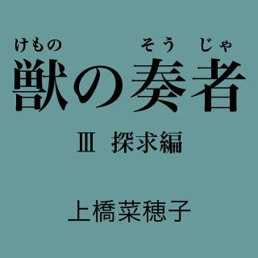
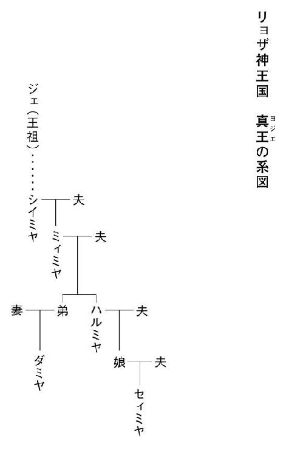

| 獣の奏者03 探求編 | |
| 上橋菜穂子 | |
| 講談社 (2012) | |
ebpaj-guide-1.0

目 次
主な登場人物
エリン 主人公。人には馴れぬはずの王獣と心を通わせてしまったために、過酷な人生を歩む女性。
イアル かつて真王の護衛士「堅き楯」を務め〈神速のイアル〉と呼ばれた武人。現在は指物師。
ジェシ エリンの息子。
ソヨン エリンの母。獣ノ医術師として暮らした霧の民。（故人）
ジョウン エリンの育ての親。（故人）
エサル エリンのよき理解者。カザルム王獣保護場の教導師長。
トムラ カザルム学舎の教導師で、エリンの先輩。
ユーヤン エリンの親友。故郷にもどって獣ノ医術師となり、家庭を持つ。
カイル 真王の護衛士「堅き楯」の一人でイアルの友人。
ヤントク イアルの幼馴染みで指物師。
セィミヤ リョザ神王国の王で、真王と呼ばれる。
シュナン リョザ神王国の国防を担う大公でセィミヤの夫。
オリ シュナンの妹。
ヨナン セィミヤとシュナンの息子。
ユィミヤ セィミヤとシュナンの娘。
ジェ リョザ神王国の王祖。
ヨハル シュナンの側近。かつては最高位の闘蛇乗り〈黒鎧〉を務めていた武人。
ロラン ヨハルの養子で、楽師。
サリ ヨハルの娘。
ムハン サリの夫。
クリウ 隊商都市イミィルの人々を導く聡明な女性。〈示道者〉として尊敬されている。
チムル 闘蛇の大量死が起きた村の青年。エリンの調査を手伝う。

降臨の野で起きた、あの出来事の意味を、おれは、いまも考えつづけている。
あのときおれは、この国が変わることを望み、行動したが、あれは果たして正しい判断だったのだろうか、と。
戦を穢れとし、幾世代ものあいだ、その清浄さを守りつづけた真王を大切な魂として戴いていたこの国は、やはり、稀有な国ではあったのだ。
真王の、その、ゆらぐことのないまっすぐな思いと清らかさが、人々の心の芯であったことは、とても大切なことだったのだ。
だが、それでも......その清らかさが、他者の血と犠牲によって保たれていたことは、大きな誤りだったのだと、おれは思う。
たとえ、代々の大公が、この国を他国の侵略から守るために、自ら進んで戦の穢れをかぶることを選んだのだとしても、長い年月、大公領の民だけが戦に駆りだされ、むごい死を遂げてきたことの意味を、真王も、真王領の民も、深く考えてみるべきだった。
大公も、大公領の民も、闘蛇に似ている。
血にまみれて敵陣を食い破り、いかなる騎馬軍団もかなわぬ、あの凶暴な生き物。長くこの国を守ってきたのに、恐れられ、忌み嫌われ、使い捨てられてきた、あの闘蛇たちに。
闘蛇のことを思うと、おまえのことが心に浮かぶのは、なぜなのだろう。
何頭もの闘蛇をあっけなく食い殺し、屠っていった王獣の背に、いつも、おまえの姿があったからだろうか。それとも、母を闘蛇に食い殺されたという話を聞いたからか。
おまえの行く道は、どこへ通じているのだろう。
大公は、降臨の野で、王獣が、最強であるはずの闘蛇の軍勢をあっさりと食い殺していくさまを、見てしまっている。
真王を象徴する、あの美しく偉大な獣が、闘蛇を殺せることは、誰もが知っていることだ。それでも、大公が、これまで王獣の存在に危機感を抱いていなかったのは、王獣が、けっして人に馴れず、操ることのできぬ獣であったからだ。
だが、大公は見てしまった。──おまえが、王獣を自在に操り、闘蛇を屠っていくさまを......。
人が王獣を操ることができるなら、すべての事情が激変する。
真王はおまえに、けっして王獣を武器にはせぬと約束した。真王の約束は神聖なものであり、守られるだろう。だが、それでも、おまえと王獣たちが危うい立場にあることに変わりはない。
これが他国に知られたなら、必ずや、王獣を捕獲し、操る技術を得ようとする者が現れるはずだ。
闘蛇を操る技も、王獣を操る技も、一朝一夕に会得できるものではなかろうが、それでも、いつか他国が王獣軍を持つ日が来たら、そのとき、この国は滅びの危機に直面する。そんな恐ろしい潜在的な危険を、大公が見過ごすはずがない。
闘蛇軍──己の権力の象徴であり、この国を守ってきた要であるこの軍を守るために、大公は、どんな手を打つだろう。
あの若い大公がどんな手を打つにせよ、その手は必ず、おまえの人生を大きく左右することになる。──この世でただ一人、王獣を操ることができる、おまえの人生を......。
天が一瞬、真昼のように明るくなり、ややあって、すさまじい音が鳴り響いた。
腹に響く雷の、その音の尾が消えぬまに、雨が降りはじめた。天の底が抜けたかと思うような豪雨だった。
「......これはこれは」
手を伸ばして馬車の窓を閉めながら、護衛官が苦笑した。
「まいったな。岩屋の入り口に、馬車を横づけしてもらわないと、びしょ濡れになるぞ」
向かい側に座っている女性は、しかし、閉じられた窓のほうをぼんやりと見ていて、その言葉にはまったく反応しなかった。
白いものが交じりはじめた髪を搔きあげて、護衛官はつかのま黙って女性を見ていたが、やがて、もう一度声をかけた。
「エリン殿、さきほど、岩屋の手前で馬車を停めるよう言われたが、この雨だ、岩屋の入り口に馬車を横づけするよう、御者に命じてよいかな」
はっと物思いからさめたような顔で、エリンは護衛官を見た。
「......ごめんなさい、ヨハルさん、いま、なんとおっしゃいましたか」
ヨハルと呼ばれた護衛官は微苦笑を浮かべて、いま言ったことをくり返した。それを聞きおえると、エリンは申しわけない、という表情になった。
「たしかに、この雨ではびしょ濡れになりますね。──でも、岩屋の入り口に馬を近づけると、中で飼われている闘蛇が興奮するので、横づけするのは禁じられておりますから」
ヨハルは瞬きをした。
「それは承知しているが、この豪雨の中だ。馬の臭いなど、岩屋の中まで届かんでしょう」
「そうですね。でも、闘蛇衆は、規範を破ることを嫌うので......」
エリンの言葉に、ヨハルはうなずいた。
「なるほど。では、まあ、濡れてまいろうか」
そう言いながら、ヨハルは、足もとにおいてある荷の上から、笠をふたつとって、ひとつをエリンに差しだした。
「笠ぐらいでは、とてもとても、この雨をしのぐことはかないますまいが......」
エリンは笠を受けとったが、馬車が停まっても、それをかぶろうとはせず、そっと座席においた。けげんそうな顔で自分を見たヨハルに、エリンは、静かな声で詫びた。
「お気遣いいただいたのに、申しわけございません。顔を隠すものをつけて岩屋に入ることも、闘蛇衆は嫌いますので......。護衛官の服をまとっておられるヨハルさんはかまわないと思いますけれど、わたしは素顔をさらしてまいります」
一礼して、エリンは馬車の戸に手をかけようとした。それを、ヨハルがそっと押さえ、自ら戸の取っ手をガシャッと押しさげて、外へと押し開いた。
「どうぞ」
「ありがとうございます」
エリンはもう一度ヨハルに頭をさげ、激しい雨の中に降り立った。
冷たい雨がたちまち全身を濡らしたが、エリンは、身体に染みこみ、髪を伝い、頰を濡らす雨に感謝した。──これなら、頰を伝っているものが雨か涙か、誰もわかるまい。
濡れた木々と草の匂いが、すうっと顔に触れた。
雨にけぶる風景の中で、巨大な岩壁に走る黒々とした裂け目が、異様な存在感を持って迫ってくる。その裂け目──闘蛇が育てられている岩屋──に、せわしなく出入りしている人々の姿は、まるで、巣と外を行き来する蟻のように見えた。
馬車から降り立ったヨハルの姿を認めて、岩屋の入り口を守っている守護兵たちが、ぴしりと直立不動の姿勢をとった。
雨の匂いでさえも消せぬ、闘蛇の甘い粘液の匂いが漂ってきて、エリンは思わず襟もとをぐっと握りしめた。
滑らぬように、ぬかるむ地面を踏みしめて走り、人々の好奇の視線を浴びながら岩屋の中に駆けこんでいくあいだ、エリンは必死に、湧きあがってくる思い出の渦にのまれぬよう、心を閉ざそうとしていた。
それでも、耳の奥に、幻のように遠く、割れた金属の管が鳴るような闘蛇の哀歌がよみがえってきて──二十年以上もまえのあの遠い夜明け、人生がひっくり返ってしまった、あの夜明けのすべてがよみがえってきて──エリンは、ふるえた。
ここはエリンが育った闘蛇衆の村ではなかったが、入ったところに広大な空間〈広間〉があり、その奥が、いくつもの岩房に分かれている構造は、幼いころ親しんでいた、あの村の闘蛇の岩屋と、ほぼ同じだった。
岩壁にそなえつけられている松明が、音をたてて燃え、湿った岩肌に人々の影を踊らせている。
こわばった顔に警戒感を顕わに浮かべて、闘蛇衆の男らは、エリンを見つめていた。
〈広間〉の床には茣蓙が敷かれ、その上に、巨大な〈牙〉の死骸が並べられている。
すでに死後五日もたっているその死骸は粘液さえも乾いて、生き物の死骸というより、膠を塗られた木彫りのように見えた。
戦士を乗せて戦場を駆けぬけ、いかなる騎馬軍団をも蹴散らす恐ろしい闘蛇。そのなかでもっとも身体が大きく、先陣を担って敵陣を食い破る最強の闘蛇〈牙〉。──その〈牙〉がすべて死んでいるのが見つかったのが五日まえ。このトカラ村の岩屋を管理する闘蛇衆にとっては大変な失態であった。
その死因を探り、責任者を処罰するのは、監察官と呼ばれる役人の役目であり、〈牙〉の死を知らせてすぐに監察官がこの村にやってきて、〈牙〉の世話をしていた男に縄を打って連行したのだが、なぜか、大公の命令で処分は保留となり、新たな監察者が送りこまれてきたのだ。
その監察者が女であると知って、闘蛇衆の戸惑いは、いよいよ深くなっていた。
エリンは〈牙〉の死骸から視線を逸らし、壁際に並んでいる闘蛇衆のほうへ近づいていった。
「頭領は、どなたですか」
尋ねると、白髪の男が身じろぎをし、うなずくような、頭をさげるような曖昧な仕草をした。
近づいてきたエリンの瞳の色を見て、頭領の顔に、驚きの色が浮かんだ。
彼が口を開くまえに、エリンは静かな声で言った。
「わたしは霧の民ではありません。母はたしかに霧の民でしたが、父と結ばれることを選び、一族から破門された人でしたから。──わたしの父は、闘蛇衆でした」
頭領の目の奥で、なにかが動いた。古い記憶を呼び起こそうとしているのだろう、眉をひそめて、しばらく黙っていたが、やがて、はっと目を見開いた。
「では、あなたは、あの......アケ村の......」
エリンはうなずいた。
頭領の背後に居並ぶ男たちのあいだに、ざわめきが生まれた。まだ若い者たちは戸惑った顔をしていたが、年かさの男たちは皆、驚きを隠せぬ様子でエリンを見ていた。
ここはアケ村に近く、アケ村に親戚縁者がいる者も多い。
昔、世話をしていた〈牙〉を死なせた罪を監察官に咎められ、闘蛇の沼に投げこまれるという残忍な方法で処刑されたアケ村の女が、じつは霧の民出身のソヨンであったことは、厳しい緘口令にもかかわらず、この村の民は皆、知っていたからだ。
岩屋の入り口あたりでざわめきが起きた。
ふり返ると、兵士たちが脇に寄って一礼しながら、赤い衣に太い飾り帯を巻いた男を通すのが見えた。
その衣装を見た瞬間、頭皮がぐっと縮むような激しい嫌悪感が襲ってきて、エリンは、短く息を吸った。
（監察官......）
エリンの到着を聞いてやってきたのだろう。傲慢な顔に警戒の色をにじませて、足早にこちらに近づいてくる。
保身のために母を処刑したあの監察官と同じ男であるはずがないのに、あの衣装を見ただけで、反射的に鼓動が速くなった。
エリンは頭領に視線をもどすと、近づいてくる監察官に聞こえぬよう声を低め、早口にささやいた。
「わたしは、闘蛇衆を処分するために来たのではありません。──〈牙〉の死が、闘蛇衆の責任ではないことを証明したくて来たのです。どうか、協力してください」
頭領の目が、かすかに大きくなった。
「......大公の使者が到着したと聞いてまいったが、どこにおられる。岩房か？」
太い声で呼びかけられ、エリンは監察官に向き直った。
「監察官殿、わたしが、その使者でございます」
監察官は驚いて立ちどまり、エリンを見た。
「そなたが？」
「はい」
監察官は疑わしげに顔をゆがめて、威圧するように一歩近づいたが、エリンはその場を動かず、静かに見つめ返した。
監察官がなにか言おうと口を開きかけたとき、ゆったりとした足取りで護衛官のヨハルが近づいてきて、エリンの脇に立ち、監察官にうなずきかけた。
「そなたがヤラクの息子殿か。父御によく似ておる。──父御が亡くなられて、もう二年はたつか？」
いきなりそう言われて、監察官は戸惑った表情になったが、白髪の護衛官の帯留めを見て、はっと目を見開いた。
「......あ、あなたさまは、〈黒鎧〉の......」
ヨハルは微笑んだ。
「いやいや、黒鎧はもう脱いだ。この年だからな。いまは大公のおそばで、のんびりと話し相手などをさせていただいている」
そう言うと、ヨハルはエリンの肩に手をおいた。
「それとな、ときには女人の護衛もする。──女人が監察者とは、なかなか信じがたいだろうが、この方は間違いなく、大公に任ぜられて、ここに送られてきた監察者だ」
監察官が、せわしなく瞬きをした。
「......そ、その、新たに監察者を送られたということは、大公さまは、わたしの仕事に、なにかご不満を持っておられるのでしょうか......」
エリンが口を開くまえに、ヨハルが首をふった。
「そうではない。そなたが気に病むようなことではないから、心配いらぬ。そなたの役目は闘蛇衆の管理と監察。つまりは、人の落ち度を調べるのが仕事だが、この方は、人ではなく、闘蛇を調べにこられたのだ」
ものやわらかな口調で、ヨハルが監察官をなだめているのを聞きながら、エリンは心の中で、やはり、この人はただの護衛などではなかったのだ、と思っていた。
〈黒鎧〉というのは、大公のおそばを守る最強の武人たちであり、大公の親族のなかで、知力武力ともに秀でた者が選ばれるのだと聞いたことがある。
ヨハルが〈黒鎧〉であったのなら、つまりは、大公の血縁者なのだ。
（......この人は）
品のよい、おだやかな風貌の男の横顔を見ながら、エリンは思った。
（わたしを監視しているのかもしれない）
身分の高いヨハルを自分につけたのは、大公がこの男を信頼しているからなのだろう。
大公にとって自分は、保護と監視の両方が必要な存在なのだ。頭の中では重々承知しているつもりでいても、それを実感するこういう場面が訪れるたびに、やるせない思いが全身を締めつける。
エリンは小さくため息をつき、その思いをふりはらった。
思い悩んでもしかたがない。自分で選び、歩いてきた道の上にいるのだから。そして、その道を歩いてきたからこそ、できることもある。
エリンは、並んでいる〈牙〉の死骸に向き直った。
＊
エリンが呼び出しを受けて大公城に到着したのは、三日まえの朝だった。
呼び出しの理由も知らされず、ろくに旅支度をする余裕すら与えられずに、馬車に乗せられて、大公城まで連れてこられたのだった。
天をついて聳える物見の塔と、巨石で築かれた堅牢な城壁に囲まれたその城を見たとき、エリンは、自分の身体が小さくなって押しつぶされていくような奇妙な恐怖を覚えた。
この城は、闘う者の砦なのだ。真王の住まう王宮とはまったくちがう。小鳥がさえずる森に囲まれた、城壁さえない、あの王宮とは......。
名工の手によって意匠を施された壮麗な門をくぐり、息をのむほどに天井が高く、はるか彼方までまっすぐに続いている廊下を通って、さらに、回廊を巡り、階段をのぼり、ようやく大公シュナンの居間に辿りついたときには、なんだか酔ったような気分になっていた。
通された部屋は、しかし、意外にも、小ぢんまりとした部屋だった。
あけはなたれた窓の外には、すらりと伸びたトォクの梢が見えている。やわらかい早春の日射しを浴びて、小さな白い花がゆれると、部屋の中にまで光が踊るようだった。
部屋には誰もおらず、ここまで案内をしてきた付き添いの者が退室してしまうと、聞こえるのは葉擦れの音だけとなった。
ぼうっと窓の外を見ていると、扉が開く音がして、シュナンが足早に入ってきた。背の高い初老の男が一人だけ、つき従っている。
「おお、エリン。......呼びつけたのに、待たせてしまって、申しわけなかった」
声をかけられ、エリンはあわてて膝を床につき、両掌を額にあてる正式な礼をした。
シュナンは微笑を浮かべて、その礼を受けると、エリンを炉のそばの椅子へと導いた。しみじみとエリンの顔を見て、シュナンは言った。
「そなたは、変わらぬな」
エリンは苦笑した。
「そうだといいのですが、三十を過ぎてからは、自分ではずいぶん変わったような気がしております」
「そんなことはない。......だが、そうか、そなたはもう母であったな。息子は元気か」
エリンの苦笑が深くなった。
「元気すぎて、手を焼いております」
自らも二児の父であるシュナンは、笑いながらうなずいた。
「そうであろうな。親に似れば、行く末が楽しみだ」
エリンは顔を伏せて、その言葉を受けた。エリンの顔がかすかにくもったことをシュナンは目ざとく見てとったようだったが、それには触れずに言葉をついだ。
「そなたのほうはどうだ。あの矢傷のせいで背の筋がこわばるというようなことはないか」
エリンは首をふった。
「ありがとうございます。おかげさまで、そのようなこともなく過ごしております」
シュナンをかばって背に受けた傷は、深く筋肉を傷つけていたが、幸い、骨にあたってとまったために、内臓は傷ついていなかった。それでも、痛みを感じずに腕を動かせるようになるまでには、長くかかった。
カザルム王獣保護場で身体を癒したいというエリンの願いを、真王セィミヤも大公シュナンも聞き届け、エリンはカザルムにもどり、いつのまにか十一年という歳月が流れていた。その時の流れの中でエリンは恋をし、結ばれ、子を産んだ。──それは、あのころには思い描くことすらできなかったような、大きな暮らしの変化であった。
この十年ほどのあいだに、国の在り方も大きな変化を遂げていた。
それでも、静かな夏の午後などには、日々はこのままずっと続いていくのではないかと思うこともあったけれど、これは仮初の平穏にすぎないことを、常に保護場を警備しているものものしい兵士たちの姿が告げていた。
だから、突然、大公からのお召しの早馬がやってきたとき、エリンの心に浮かんだのは、ああ、とうとう来るべきものが来たな、という思いだったのだ。
朝の光が、シュナンの顔を浮かびあがらせている。おだやかな表情をしていたが、目の奥には張りつめた色があった。眠りが足りていないのだろう。隠しきれぬ疲れが、くすんだ肌に表れている。
降臨の野で、シュナンは父を弟に殺された。その弟は、己がどんな役を演じさせられたのかを悟ると、裁きを待つこともなく、牢の中で、帯で首を吊って自害した。大公妃は夫と次男の、あまりにも無残な死にざまに耐えきれず、心を病んだと聞いている。
両親に祝福されることもなく、シュナンは一人、大公の位を継ぎ、真王セィミヤと婚礼の式を挙げた。
新しい時代の幕をその手であけ、愛しい者と結ばれた幸福な若者であるはずのシュナンは、その婚姻のために、多くのものを失ったのだった。
そんな苦しみをあえて背負っても、この国の行く末をより良きものにしようとしたシュナンの決意は、婚礼から長い時がたった今も、満足な実を結んでいるとは言いがたかった。
真王と大公の婚姻は、たしかに、大公領民の心を和らげた。彼らの多くは、大公と結ばれることを選んだ真王の思いに感動し、それまでは閉ざされていた中央行政官への登用資格が与えられたことを喜び、幾世代にもわたって胸の奥にくすぶりつづけていた不遇感や恨みを消して、この婚姻が良き未来に結びつくようにと願った。
しかし、真王領民がこの婚姻に示した嫌悪感は、予想以上に激しいものだった。貴族たちは大公の力が増したことを脅威に感じ、事あるごとに政策に異を唱え、なんとか大公を真王の権威のもとに抑えつけようとしている。
また、麦の不作が続いていることや、大公領で発生した疫病が国中に広がって多くの死者が出たことを、真王が大公によって穢されたせいで、神が怒っておられるのだとする噂は、絶えることがなかった。
そして、なによりも、この国をゆるがしているのは、異国の脅威だった。この国の保護領である隊商都市群に対する騎馬の民ラーザの攻撃は頻繁になり、すでに多くの兵士が戦死していると聞く。
そういうすべてを、シュナンは妻である真王とともに背負っているのだった。
梢をせわしなく飛びまわる小鳥の羽音が聞こえるほどの、この部屋の静けさは、シュナンが口を開いても、損なわれることはなかった。
「王宮にいるときに招けば、すこしは近かったのだろうが、こちらで話したい用件だったのでね。昨夜は、銀枝館で宿をとらせるように手配したと聞いたが、よく眠れたか」
正直なところ、ほとんど眠れなかったのだけれど、そんなことを言うわけにもいかず、エリンは細い声で答えた。
「はい。あのような高級な宿をお手配いただき、ありがとうございました」
シュナンは、エリンの声の底にある緊張を感じとって、かすかに苦笑した。
「そなたは、王獣のことで呼びだされたと思っているのだろうな。──だが、そうではないのだ。王獣をどうするかということは、正直なところ、まだ答えが出ていない。あまり猶予がないことは、わかっているのだが......」
エリンは、瞬きをした。
（王獣のことではない......）
身体の芯にあった緊張が一気にゆるみ、エリンは、肩の力を抜いた。
裁定を先のばしにされたにすぎないけれど、まだ、もうすこし、このままリランたちと暮らせるのだと思うと、やはりうれしかった。
（でも、王獣のことでないなら、なぜ、多忙な大公が直々にわたしなどと......？）
そのエリンの思いを読みとったかのように、シュナンは静かな声で言った。
「そなたをここへ呼んだのは、トカラ村から、〈牙〉が全滅したという報告が入ったからなのだ」
その言葉の意味が心に届いたとき、エリンは凍りついた。遠い過去から伸びてきた手に、心ノ臓をぎゅっとつかまれたような気がした。
青ざめたエリンを痛ましげに見ながら、シュナンは言葉をついだ。
「そなたの母が処刑されたのも、〈牙〉の大量死の責任を問われたためだったそうだな」
エリンは口を開いたが、うまく声が出なかった。唾をのみこんで喉を湿らせ、かすれ声で答えた。
「......はい、そのとおりでございます」
シュナンは小さくうなずいた。
「そのときも、一夜にして突然、すべての〈牙〉が死んだと記録にあるが、今回もまったく同じなのだ。前日までは元気に泳ぎまわっていたのに、夜が明けてみると全頭死んでいたのだという」
エリンは眉をひそめた。
（そういえば）
あのとき──〈牙〉がすべて死んでしまって、祖父が怒りくるって母をののしったとき、母は、心配しなくてもいい、こういうことはまえにもあったのだから、と言っていた。
エリンは顔をあげて、尋ねた。
「大公さま、このようなことは──〈牙〉が一夜にしてすべて死んでしまうというようなことは──よく起こることなのでしょうか？」
シュナンは、ふっと微笑んだ。
「〈牙〉の全滅などということが頻繁に起こったら、我が軍はあっというまに弱体化してしまう」
エリンは赤くなった。
「......そうですね。至らぬことを申しました」
シュナンは首をふった。
「いや、そなたが問うたことは、大切なことだ」
そう言うや、シュナンは背後に立っている初老の男をふり返った。
「ヨハル、それを」
ヨハルと呼ばれた男は、手に持っていた紙束をシュナンに手渡した。
「エリン、これを読んでみよ」
差しだされた紙の束は、なにかの綴じ本から抜きだしてきたものらしく、どれも右脇に綴じ穴があいていた。形式は皆同じだったが、大半はとても古いものらしく、乾燥し、黄ばんで、ごわごわしている。
一番上の書類に書いてある文字を読んで、エリンは、目を見開いた。
シュナンの声が聞こえてきた。
「それは、各闘蛇村管轄区に保管されていた記録から、〈牙〉の大量死に関する記録の部分だけを抜きだしたものだ」
エリンは顔をあげることもできず、書類を見つめていた。
『アケ村のソヨンによる、〈牙〉の不適切な管理とその処分について』と題された記録の文面を読み進むうちに、文字がにじんで見えなくなってきた。
それは、あまりにも簡素な記録だった。
ソヨンという闘蛇衆の女が、〈牙〉の管理を任されながら、〈イケ〉の水質管理を怠り、中毒死をさせたので、今後、二度とこのようなことが起きぬよう厳罰に処した、とだけ書かれているその記録からは、母を野生の闘蛇に食わせた、あの残酷な処刑の有り様も、幼い娘を残して逝かねばならなかった母の慟哭も、なにも伝わってはこなかった。
エリンは目をつぶり、うつむいて息を吸った。
「......そなたの母に」
シュナンの声で、エリンは目をあけ、顔をあげた。
「行きすぎた処刑を行った監察官はずいぶんまえに病死しているが、それにしても、惨いことをしたものだ。〈牙〉を死なせた場合の刑罰は、右腕一本の切断。闘蛇に食わせるなど、行きすぎもはなはだしい。
郡の監察官が、どのような裁きを行っているのか、これまで我々は、きちんと監視してこなかった。そなたの母の死には、わたしにも責任があると言えるかもしれぬ。彼らに死刑の権限まで与えておいてよいものか、今後検討するつもりだ」
シュナンの目もとに赤みがさしていた。無能で残忍な役人への怒りと、そのような役人を放置していた後悔の念が、ぐっと結んだ唇に表れている。
そんな表情をするとシュナンは痛々しいほどに若く見え、エリンは思わず目を伏せた。
シュナンは手を伸ばして、書類を指さした。
「だが、そなたを呼んだのは、謝罪をするためではない。ほかの書類にも目を通してくれ。あまり時間がない。熟読はあとでしてもらうとして、いまは、さっと目を通すだけでよい」
エリンは紙の束をめくった。書類は十九枚あり、すべてが〈牙〉の大量死の報告書だった。日付と、場所と、死んだ〈牙〉の数だけに注目しながら読み進むうちに、エリンは興奮を覚えはじめた。
〈牙〉の大量死には、なにか規則性が感じられるのだ。
起こっている間隔は、七年だったり、十二年だったり、ばらばらなのでわかりづらいが、起こったときには、数か所の闘蛇衆の村でほぼ同時期に〈牙〉の大量死が確認されている。
母が処刑されたあの年も、アケ村だけでなく、近隣のヤソン村でも〈牙〉の大量死が起きていた。
エリンは顔をあげて、シュナンを見た。シュナンはうなずいた。
「......〈牙〉の大量死は、闘蛇衆の落ち度で起きるものではない。いくつもの村の闘蛇衆が、いっせいに、同じ時期に、同じ手ぬかりをするはずがない。──〈牙〉の大量死には、なにか別の原因があるのだ」
胸の底の一点から、熱いものが湧きあがってきて、エリンは唇を嚙みしめた。
シュナンが静かな声で言った。
「その原因を、そなたに見つけだしてもらいたいのだ」
さっきから鈍い耳鳴りが聞こえていた。
（......おかあさんは、その原因を、知らなかったのだろうか）
幼いころから心に抱いてきた暗い疑問が、胸の底から身をよじるようにして頭をもたげてきた。
目の奥に、母の姿が浮かんでいた。
暗い岩房の〈イケ〉の冷たい水に胸までつかって、死んだ〈牙〉をそっとなでていた姿が。〈牙〉の死骸をなでていた母の横顔には、驚きも疑念も浮かんではいなかった。その目に浮かんでいたのは、深い哀しみの色だけだった......。
鼓動が速くなり、糸で引かれるようにして、もうひとつの光景が心に浮かんできた。
闘蛇を指笛で操り、自分を助けてくれた、あの最期の姿が。
──エリン、おかあさんがこれからすることを、けっしてまねしてはいけないよ。おかあさんは、大罪を犯すのだから......。
たったいま聞いたかのように、鮮烈に、母の声が耳の奥によみがえってきて、エリンは膝を握りしめた。
（おかあさんは、闘蛇を操ることができた。──闘蛇衆も知らぬ闘蛇の生態を、知っていた）
当然だ。母は霧の民だったのだから。かつて、神々の山脈の向こうで、闘蛇を武器として育てた緑ノ目ノ民の子孫として、その知識を受け継いでいたのだから。
（それなら、なぜ......。自分の落ち度で〈牙〉が死んだのではないと知っていたのだとしたら、なぜ、それを監察官に告げなかったのだろう）
エリンはつかのま、目をつぶった。
自分の命と引き換えにしても、母が〈牙〉の死因を明かさなかった理由は、ひとつしか考えられない。──霧の民の禁忌だったのだ。〈牙〉の死因は、たとえ命を奪われても明かしてはならぬ知識に、関わっていたのだ。
過去の悲劇を二度とくり返さぬために、霧の民が守りつづけてきた厳しい戒律。たとえ一族から追放されても、母の心には、その戒律が深く根を張っていた。
〈牙〉の大量死の原因が、霧の民の禁忌に触れる知識であるのなら、それを明かしてはならない理由があるのだ。
王獣規範が、王獣の生態を謎にとどめるためにつくられていた規範であったように、闘蛇の生態にも、きっと、謎にしておかねばならぬ理由が......。
エリンは、じっと、膝においた手を見つめた。
（ここが......）
分かれ道だ。この道を進めば、自分はまたあけてはならぬ扉をあけてしまうことになるだろう。それでも、それがわかっていてもなお、熱い衝動がつきあげてきて抑えることができなかった。
〈牙〉の死の謎をこの手で解き明かしたい。──母が、なにと自分の命を引き換えにしたのか、知りたかった。
エリンは顔をあげて、シュナンを見つめた。
「わたしをトカラ村へお送りください。〈牙〉の死因、調べてみます」
闘蛇の身体は硬い鱗におおわれている。
粘液が乾いて、ところどころ樹脂のように固まっている鱗に触れながら、エリンは慎重に〈牙〉の死骸を観察しはじめた。
監察官は、エリンが自分のあら探しに来たのではないと納得すると、意外にあっさりと帰っていったが、闘蛇衆たちは岩屋に残っていた。エリンがなにをするのか興味津々なのだろう。ときおり咳払いなどをしながらも、〈牙〉のかたわらに膝をついているエリンのそばから動こうとしない。
最初はその視線が気になっていたのだが、闘蛇の鱗を見つめているうちに、彼らがいることすら忘れ去ってしまった。
鱗がただれたようになっている。なにか粘液に変化があったのかもしれない。口のほうにまわって、腕を差し入れて、肘を舌の上についてこじあけると、口内の粘膜にも、一面にただれがあった。
強い薬を量の加減を間違えて与えてしまったときと、よく似た症状だった。
エリンは顔をくもらせた。
（まさか......）
これは中毒死なのか？ 粘液が薄くなっていたところに特滋水を与えすぎたために起きた事故だとすれば、母はほんとうに、不注意で〈牙〉を死なせたことになる......。
手をとめたまま、エリンはしばらく、〈牙〉を見つめていた。
（でも、なぜ、粘液が薄くなったのだろう）
きゅっと唇を結んで、もう一度鱗の様子を見ようと顔を近づけた瞬間、エリンは、はっとした。〈牙〉の身体から、闘蛇の粘液の甘い匂いとはちがう、若草のような青臭い匂いが、かすかに漂ってきたからだ。
（この匂い！）
幼いころの記憶がよみがえってきた。
これは、あのときの匂いだ。〈イケ〉に浮かぶ〈牙〉の死骸を、母と一緒に見つめていたときに嗅いだ......。
エリンは額に拳をあてた。
（この匂いを嗅いで、おかあさんに訊いたんだわ。闘蛇は死ぬと匂いが変わるのかと）
あのとき、母は打たれたように顔をあげた。そして、なぜそう思ったのかと、緊張した面持ちで訊いてきたのだ。
（わたしは、なんと答えたんだっけ......）
暗い岩房に、ゆらめいていた松明の灯り。その灯りがゆれるたびに、母の影もゆれた。〈イケ〉に、丸太のように浮かんでいた〈牙〉には、ワシュ（発光虫）がたかっていて、ぼんやりと光って見えた。──そこまで思いだして、エリンは、ぱっと額から手を離した。
（......羽虫！）
そうだ。あのとき、ふだん見たことのない羽虫が〈牙〉にたかっていた。それが目についたから、母に言ったのだ。〈牙〉が死んで、匂いが変わったから、羽虫が寄ってきたんだと思った、と。
（あのとき......）
母は、言った。──その思いつきを、誰にも話してはいけないよ、と。
エリンは、さっと中腰になると、〈牙〉の鱗に顔を近づけ、舐めるように全体を見ていった。そして、ある一点で視線をとめた。
（いた......）
小さな羽虫が粘液にくっついたまま死んでいる。さほど多くはなかったが、同じ種類の羽虫の死骸が、どの〈牙〉の身体にもくっついていた。
エリンは身体をねじって、闘蛇衆をふりあおいだ。
「〈牙〉が死んでいるのを最初に見つけた方は、どなたですか？」
男たちは戸惑った顔で互いを見ていたが、やがて、一人の若者が進みでた。ずいぶん背の低い若者だった。闘蛇衆としてここにいるのだから、十八にはなっているはずだが、童顔のせいか、十四、五にしか見えない。
「おれです。おれの兄貴が〈牙〉の世話役の助手をしているもんで、おれは毎朝、兄貴よりちょっと早く岩房に行って餌の下準備をしておくんです。あの朝も、おれは岩屋に一番乗りして、それで......」
若者の顔がゆがんだ。
エリンは立ちあがって、若者に尋ねた。
「そのとき、〈牙〉の死骸に、羽虫がたかっていませんでしたか？」
若者はぐっと眉根を寄せた。
「羽虫？ ワシュはたかっていたけれど。......いや、待てよ......」
岩房の光景を一生懸命思いだしているのだろう、若者はしばらく黙って考えていたが、やがて、うなずいた。
「うん。いた。たしかに、いた。羽虫が舞っていました」
中年の闘蛇衆が、口をはさんだ。
「あれは、松明に寄ってたんじゃねぇか？」
若者は首をふった。
「いや、松明にも寄っていたけど、〈牙〉にもたかってた。死んだから虫がたかってるくらいにしか思わなかったけど......。羽虫が、なんか、〈牙〉の死因と関わっているんですか？」
目を輝かせている若者に、エリンは首をふった。
「それは、まだわかりません。でも、ふだんは、こんな羽虫いませんよね、岩房に」
立っている男たちは、ばらばらにうなずいたが、なかの一人が、ちょっと首をかしげるような、曖昧な仕草をした。
「......え、〈牙〉が死んだとき以外にも、この羽虫を見かけたことがあるんですか？」
エリンが驚いて問いかけると、男は戸惑いながらうなずいた。
「いや、岩房で見たんじゃないがな。ウカラ沼で、何度か見かけたことがある」
男がそう言うと、「ああ」と、つぶやく声が、ほかの男たちの口からも漏れた。
「それなら、おれも見たことがあるな。あの沼で、闘蛇にえらく羽虫がたかっているのを」
「沼で、ということは、野生の闘蛇にたかっていたんですね？」
エリンが言うと、男たちはうなずいた。それまで黙っていた頭領が、むっつりした顔で口を開いた。
「おまえらが言っているのは、産卵の時期の話だろう。たしかに、あの時期には、野生の闘蛇には羽虫がたかる。だが、岩屋の〈イケ〉に飼われている闘蛇には、寄ってこないぞ。沼から遠すぎるんだろう。岩房の中は寒いしな」
エリンは、思わず頭領を見つめた。
興奮が、肌をざわめかせながら静かに這いのぼってきた。
「産卵の時期......。それは、いつごろですか」
「だいたい今時分だな。──だが、それは野生の闘蛇の話だぞ。岩屋の闘蛇は、交尾をしない」
「......ええ、そうですね」
エリンは無意識に腕をさすりながら〈牙〉を見下ろし、口の中でつぶやいた。
「この〈牙〉の性別はどっちかしら」
眉をひそめて、頭領はエリンを見た。
「雄だろう。──確かめたことはないから、わからないが」
「え？」
エリンは驚いて、頭領を見つめた。
「確かめないんですか、性別を」
頭領は、むっとした顔になった。
「そんなことは、せん。掟に反するからな。雄であろうが、雌であろうが、闘蛇は闘蛇。どちらかを選んで育てることはするなと、掟にある。──あんたはアケ村の出だと言っていたが、そんなことも知らんのか」
エリンはうなずいた。
「知りませんでした。わたしが村を出たのは、十歳のときでしたから」
それを聞くと、頭領は複雑な表情になった。
「そうか。......まあ、とにかく、そういうことだ」
エリンは再び〈牙〉の死骸に視線を向け、それから頭領に視線をもどした。
「この〈牙〉たちの性別を調べてもいいでしょうか」
頭領は顔をしかめたが、彼が口を開くまえに、エリンの背後に立っていたヨハルが声をかけてきた。
「エリン殿、気になることは、なんでも調べなさい。掟を気にせずともよい」
エリンが驚いてふり返ると、ヨハルは静かにうなずいた。
「大公から、そのようにせよとのお言葉をいただいている。だから、どんなことでも存分にお調べなさい」
言いながら、ヨハルは視線を闘蛇衆の頭領に向けた。
「おまえたちも、そのことを肝に銘じるように」
頭領は黙っていたが、やがて、唇を引き結んで、小さくうなずいた。
闘蛇は大公のものであり、大公の言葉は絶対だ。そう頭ではわかっていても、骨の髄にまで沁みこんでいる掟を破ることには、嫌悪感があるのだろう。頭領の表情は緊張でこわばっていた。
「頭領......」
思わず、エリンは声をかけた。
「〈牙〉の死因を探るためには、わたしは性別を調べるだけでなく、〈牙〉の死骸を腑分けして、内臓の様子を確かめねばなりません」
ぎょっとして目を剝いた頭領に、エリンはうなずいてみせた。
「わたしは多くの掟を破らねばなりません。皆さんには、見ていることすらつらいことだと思います。どうぞ、ここから離れてください。終わったら、わたしが知ったすべてのことを、必ずご報告しますから」
頭領は眉をひそめて、闘蛇衆をふり返った。彼らの顔にも一様に不快な色が浮かんでいた。
「......おれは、〈牙〉が切り裂かれるなんて罰当たりなこと、見ていたくねぇ」
年配の男が唸るように言うと、ほかの男らもうなずいた。それを見て、頭領は心を決めたようだった。エリンに目を向けると、喉にひっかかったようなかすれ声で言った。
「おれたちは、外に出る。──あとは、あんたがやりたいようにすればいい」
エリンが頭をさげると、頭領はうなずき、踵を返した。
歩きはじめた頭領のあとに、ぞろぞろと男らが続いて動きはじめたが、〈牙〉の死を最初に確認したと言った若者が、ふいに立ちどまって、頭領に声をかけた。
「頭領！ おれ、おれはここに残りてぇ。残っていいですか？」
頭領と男らが立ちどまって、若者を見た。若者は甲高い声で言いつのった。
「おれ、おれ......兄貴を咎人にしたくねぇ！ だから、この人を手伝いてぇんです」
顎をなでながら、頭領はしばらく若者を見下ろしていたが、やがて、うなずいた。
「......なら、おまえは手伝え」
若者の顔が、ぱっと輝いた。一礼すると、若者はエリンのそばに駆けもどってきた。
闘蛇衆が去ると、岩屋の中が、がらんと広くなり、寒くなったような気がした。
「どうします？ 〈牙〉の身体をひっくり返しますか」
きらきらした目で問われて、エリンは、つかのま、ためらった。
獣ノ医術師であるエリンは腑分けに慣れているが、この若者には、初めての経験にちがいない。たとえ覚悟を決めていても、実際に小刀で身体を切り裂いて内臓が出てくれば、その臭いはすさまじい。この若者に耐えられるかどうか心配だった。でも、それを問うたら、彼の覚悟を疑うことになる。
エリンは心を決めて、うなずいた。
「まず、生殖器を確かめたいので、〈牙〉を向こう側に押して、腹が見えるようにしましょう。手伝ってください」
冷たく硬直した〈牙〉の身体は重く、エリンと若者が腕と肩を闘蛇の身体にあてて、体重をかけて押しても、びくともしなかった。
「どれ、わたしも手伝おう」
袖をまくりながらヨハルが近づいてきて、〈牙〉の身体に手をかけた。
「あ、気をつけてください！ 鱗の縁は刃物みたいに鋭いですから」
あわててエリンが声をかけると、ヨハルは微笑んだ。
「わたしも昔は闘蛇乗りだったのだ。それは身に沁みて知っているよ。──さて、わたしがここに肩をあてるから、三人で均等に距離をおいて、押そう。いいか？」
三人で力を合わせて、ぐい、ぐいと押すうちに、ようやく〈牙〉の死骸が動きはじめ、やがて、ぐるんと向こう側にひっくり返った。
腹には鱗がない部分があり、そこだけ生白く見えた。
「あれ......こいつ、雌か......？」
腹を見ていた若者が、驚いて声をあげた。たしかに、〈牙〉の下腹部には雄の生殖器はなく、産卵口のようなものが見えていた。エリンは慎重に、その部分の周囲を押して、雄の性器が皮膚の内側に隠れていないことを確かめた。
「ほかの〈牙〉もひっくり返しましょう」
エリンが言うと、二人はうなずき、汗をぬぐいながら〈牙〉の尾をまたぎ越して、ほかの〈牙〉の死骸に向かった。
大汗をかきながら〈牙〉をひっくり返した結果、すべてが雌であることが判明した。
「へぇ......。〈牙〉は雌だったんか。おりゃ、てっきり雄だと思いこんでた......」
荒く息をつきながら若者は言い、エリンを見た。
「で、次はどうします？ 腑分けですか」
エリンは、腹を上に向けて並んでいる〈牙〉を見ながら、しばらく考えていたが、やがて、首をふった。
「腑分けは、明日にしましょう。──今日は、もうひとつ確かめたいことがあるんです。音無し笛を持っていますか？」
若者の目に、さっと理解した色が浮かんだ。首にさげた紐をたぐって音無し笛をとりだしながら、
「そうか、ほかの闘蛇も雌かどうか調べるんですね？」
と言った。
若者の頭の回転の速さに驚きながら、エリンはうなずいた。
「ええ。生きている闘蛇の性別を調べたいんです。なぜ、〈牙〉だけが死んだのか、それを探るには、ほかの闘蛇と〈牙〉の差異を見つけるのが一番の早道ですから」
それを聞いて、ヨハルが眉をあげた。
「それでは、生きている闘蛇を全部調べる気かね？」
「はい」
ヨハルが苦笑した。
「いやはや。大公さまは人選をお間違えになった。こんな力仕事をするのであれば、もっと若い者がそなたにつけばよかったな」
若者が袖を肘までまくりあげて、にやっと笑った。
「若い者なら、ここにおります。それに、今度は水に浮かんだ闘蛇が相手だから、さっきよりは楽ですよ」
げんなりした顔で、ヨハルは若者を見た。
「なんと、今度は水に入るのか。たまらんな」
冗談めかして気分を軽くしようとしているが、生きている闘蛇がいかに危険であるか、三人とも重々承知していた。音無し笛で硬直させても、調べている途中で硬直が解ければ、あっというまに身体を食いちぎられてしまう。
三人は気を引きしめ、手順をしっかりと決めて、ひとつひとつの岩房をまわりはじめた。
調べねばならぬ闘蛇の数は百を越える。冷たい〈イケ〉に長時間つかっての作業は身体にこたえて、五つ目の岩房を調べおえたとき、ヨハルが音をあげた。
「エリン殿、あとは明日にせぬか」
声をかけられて、エリンは我に返った。ふり返ると、ヨハルも若者も唇を青くして、疲れきった顔でこちらを見ている。
エリンはあわてて、言った。
「ごめんなさい、そうしましょう」
集中が途切れたとたん、ものすごく寒くなってきて、エリンはガタガタふるえはじめた。
三人で助け合いながら、やっとのことで〈イケ〉からあがると、エリンは歯を鳴らして、つぶやいた。
「......さぶいですね」
それを聞くや、ヨハルと若者は、顔を見合わせて笑いだした。
「もうすこし早く、そのことに気づいてほしかったですな」
咳きこみながらヨハルは言い、胸をさすってみせた。
「わたしなぞ、もうずいぶんまえから、心ノ臓が凍るんじゃないかと不安でしたよ」
若者も笑いながら腰を叩き、
「おれなんて、もうタ......」
と言いかけて、真っ赤になって口をつぐんだ。
ヨハルが眉をあげた。
「うむ。気持ちはわかるが、その言葉はご婦人の前では言ってはならんな」
老武人の、そのとぼけた口調がおかしくて、エリンは思わず岩床に両手をついたまま、肩をゆすって笑いだしてしまった。
三人はふるえながら、ひとしきり笑い、互いに手をとりあって立ちあがった。
〈イケ〉の中では、音無し笛の硬直からさめた闘蛇が、ゆっくりと泳ぎはじめていた。三人は笑いをおさめ、しばらく、その様子をながめていた。
「五つの岩房の闘蛇はみんな、雄でしたね」
若者が、ぽつんと言った。
「......〈牙〉は」
ヨハルが、寒さで青ざめた唇をこすりながらつぶやいた。
「雌であったために、死んだのか」
エリンはうなずいた。
「そうかもしれません。すべての闘蛇を調べてみなければ、わかりませんけれど」
ヨハルは眉をあげ、若者を見た。
「おい、明日からは、闘蛇の雄雌調べは、ほかの若い衆にやらせような」
若者はうなずいた。
「そうしましょう。エリンさんにつきあってたら、おれ、女房をもらえなくなっちまいますよ」
エリンは苦笑した。
若者は足踏みをしながら言った。
「そんじゃ、おれ、さきにひとっ走り温浴場まで行って、お二人が入れるように準備させますね。それから家に寄って、お袋に、飯の支度をするよう伝えます。今夜は家に泊まってください」
走りだそうとした若者に、ヨハルがあわてて声をかけた。
「おいおい、おまえは、なんという名なのだ？ それを知らんと、家も探せぬが」
若者は足をとめ、頰を赤らめた。
「すんません、粗忽なもんで。おれは、チムルっていいます。温浴場は、村の西の外れにあります。高い煙突があるから、すぐわかると思います。温浴場にいらしていただければ、あとで、おれが迎えにいきます」
「それはありがたい。ついでに、御者に、我々がどこに泊まるか伝えておいてくれぬか。御者は、頭領の家の厩に馬車を入れて、そちらで厄介になっているはずだ」
ヨハルが言うと、若者はうなずいて、ぱっと駆けだした。軽々と駆けていく若者の後ろ姿を見ながらヨハルがため息をついた。
「若さとは、それだけで素晴らしいものだな」
岩屋の外に出ると、やわらかい夕暮れの光に包まれた。
いつやんだのか、あの豪雨が噓のように空は明るく、夕焼け雲が広がっている。春の夕暮れはおだやかで、ねぐらに帰っていく鳥の声だけが聞こえていた。
敬礼をしている守備兵に、ねぎらいの声をかけてやってから、ヨハルはエリンを促し、歩きはじめた。
豪雨の名残の水溜まりをよけながら、二人は黙々と森の小道を歩き、ほどなくして、村へ足を踏み入れた。
チムルが言ったとおり、温浴場の煙突はすぐに目についた。煙突から立ちのぼる細い煙が夕焼けの空に消えていくのを見ながら、エリンは知らず知らず唇を嚙みしめていた。
こんな夕暮れに、よく母と温浴場へと歩いた。
手をつないで、たわいない話をしながら、ぶらぶらと......。半日も冷たい〈イケ〉につかっていたせいだろう、母の手は、いつも、冷んやりとしていた。これほど長い時がたっても、あの手の冷たさをありありと思いだすことができる。
「闘蛇衆の村に」
ふいにヨハルが言った。
「必ず立派な温浴場があるわけが、いまは、よくわかる。切実に」
ヨハルの目もとに、笑みが浮かんでいた。
「〈イケ〉の水は、まさに骨身に沁みる冷たさだな。──そなたの母は、あんな水につかる仕事をよく長く続けられたものだ」
エリンは小さくうなずいた。
ほんとうに、よく身体を壊すこともなく続けられたものだ。幼いころには気づかなかったけれど、手が痺れるほど冷たい水に胸までつかって闘蛇の様子を調べる闘蛇衆の仕事は、女である母には、つらいときもあったにちがいない。
温浴場の玄関には湯番の男が立っていて、二人を迎えた。
余所者を温浴場に入れることはないので、戸惑った表情をしていたが、それでも親切に案内をしてくれた。
「こっちが男衆の湯で、こっちが女衆の湯です。──今日はもう、村の衆はみんな入ったあとで、誰も来ませんので、ゆっくりつかってくだせえ。チムルが告げにきたんで、いちおう湯をさらいましたから、いい湯になっていると思います」
湯番の男は、二人に手拭いまで渡してくれた。
彼が去ると、ヨハルが手拭いをしげしげと見ながら言った。
「これは、どこから持ってきたのだろうな。家からとってくるような時間はなかったと思うが」
エリンは微笑んだ。
「予備の手拭いが、いつも用意してあるんですよ。手拭いを忘れて、湯に入りにくる子どもらもいますから」
言ったとたん、ぱっと息子のジェシの顔が目に浮かんだ。いたずら盛りで、叱っても、わざと手拭いを持たずに駆けていってしまうチビすけ......。いま、なにをしているだろう。そろそろ夕飯の手伝いでもしているころだろうか。竈の前に膝をついて薪をくべている夫と、その背によじのぼろうとしている息子が見えるような気がした。
ヨハルは手拭いを肩にかけて、エリンに眉をあげてみせた。
「まったく、よくできた施設だな。──さて、それでは湯を楽しむとしようか」
男衆の湯屋へとヨハルが入っていくのを見送って、エリンは女衆の湯屋に入った。
すこしまえまで村の女衆が湯を使っていたのだろう。脱衣所には、まだ、女たちの湯上がりの温もりがなんとなく漂っている。濡れた衣を脱いで、ひとところにおいてから、エリンは湯船のある温浴場へおりていった。
かけ湯をすると、冷えきっている肌に湯が熱く感じられた。仕舞い湯であっても湯を汚さないようになさいと、母に言われていたことを思いだしながら、まずは身体を洗い、それから、湯船に滑りこんだ。
身体が温まってくるにつれて、じんわりと心地よさが広がってきて、エリンは思わず、ぶるぶるっとふるえた。
ほーっとため息をつき、湯の中でゆらめく自分の白い足をながめていると、心の中に、今日見聞きしたことが、いくつも立ち現れては消えていった。
（なぜ、〈牙〉だけが雌だったのだろう......）
やはり、それが一番気になった。
性別を調べないのだから、雌だけを選んで〈牙〉に育てているわけではないのだろうに、まるで選別したかのように、ほかの闘蛇と〈牙〉の性別がちがったのは、なぜなのか。
考えてみれば、不思議なことだらけだった。
そもそも、〈牙〉はなぜ、〈牙〉になるのだろう？ 野生の闘蛇にも、あんなふうに巨大な身体になるものがいるのだろうか。
（それが、卵のうちから見分けがつくんだとしたら）
闘蛇衆が卵を盗んでくるときに、〈牙〉になると見込んで選んだ大きさの卵が、すべて雌だったのかもしれない。
そこまで考えて、エリンはつぶやいた。
「それはありえないか......」
闘蛇衆の頭領は野生の闘蛇の交尾を見たことがある口ぶりだった。それはそうだろう。闘蛇衆にとって、卵の採取は大切な仕事だ。野生の闘蛇の生息地を見てまわり、いつごろ、どこに産卵するかに気を配っていなければ、闘蛇の目を盗んで卵を持ち帰ることなど、できるはずがない。
交尾の場面も見ているのなら、どちらが雄でどちらが雌か見分けがつくはずだ。そのとき雌のほうが大きいのを見て知っていたら、〈牙〉の性別を問われたとき、まず口をついて出るのは「雌だろう」という言葉だったはずだ。掟に疑問を持つことのない頭領だけでなく、チムルも、〈牙〉が雌であることに驚いていた。
ということは、野生の闘蛇にも、雌雄がひと目でわかるような特徴はないのだ。
夕暮れの光が、湯気抜きの窓から射しこんで、白い壁をやわらかく染めている。
（それに、〈牙〉が常に雌で、雌であることが死因に関わっているのなら、〈牙〉の大量死はもっと頻繁に起こっているはずだわ）
〈牙〉の大量死は突然起こる。大量死してしまう〈牙〉たちには、なにかほかの〈牙〉たちにはない、特異な属性があるはずなのだ。
エリンはため息をついて、掌で顔をぬぐった。
なにを考えるにしても、手がかりとなる知識が足りなかった。まずは、闘蛇衆から、闘蛇について教えてもらわねばならない。すべてはそこからだ。
ゆらめく湯の中に、自分の腕が白く見えている。
膝の上にジェシがいないのが、とても寂しかった。いつも、息子が心のどこかにいて、なにかの拍子に、ふっと、その顔や、やわらかい肌の感触を思いだす。母も、こんなふうに自分のことを、いつも心においていたのだろうか......。
自分の白い腕の向こうに、自分を膝に抱いて湯船につかっていた母の腕が見えるような気がした。
母は、あまりにも多くのことを抱えたまま逝ってしまった。
それでも、こうして、ひとつひとつ闘蛇について調べていけば、いずれは、母が自分に伝えられなかったことを、知ることができるかもしれない。
エリンはもう一度、顔をぬぐうと、湯船から立ちあがった。
「申しわけないですねぇ、狭っ苦しくて、ちらかってて、騒々しくて、とてもとても、お二人のようなご身分の方をお泊めできるような家じゃないんですけども......」
チムルの母は、しきりに頭をさげながら、手で子どもたちを押しのけるようにして、エリンたちを家に招き入れてくれた。
闘蛇衆の家の造りは、どこも似たようなもので、広い土間に水場と竈があり、その奥に板の間がある。エリンが母と暮らしていたのも、こんな家だった。ただ、二人暮らしだったせいか、もっとずっと広い家だったような記憶がある。
チムルは大家族で、指をくわえながら珍しい客を見上げている幼い子どもらが、六人もいた。
「すんません、おれん家は八人兄妹なんですよ。でも、チビどもは、今夜はじいちゃん家に泊まることになってますんで。──おい、早く行けよ、おまえらがいると、騒々しくてかなわねぇ」
チムルに尻を叩かれても、小さい弟妹たちはなかなか動かず、土間に立ったまま、なんだかんだ騒ぎながらエリンたちを見つめている。
それでも、チムルの母が丸っこい腕で、まるで箒で掃きだすようにして子どもらを外に追いだし、玄関の戸をぴしゃんと閉めると、家の中は急に静かになった。
「やれやれ！」
ため息をついて、チムルの母はエリンたちに向き直った。
「お騒がせいたしました。お二人がいらっしゃるまえに、実家に追っぱらうつもりだったんですけども、夕飯を食べさせてからと思ったもんで、申しわけありませんでしたねぇ」
チムルの母は息子によく似た小柄で元気のよい人だった。口もよくまわるが、手もよく動く。チムルから、エリンたちがなにをしにきたのか聞かされているのだろう、長男を救うために訪れた二人を精一杯もてなしてくれた。
「あたしの夫は、もう先に亡くなりましてね。ほら、五年まえに、瘧り熱が流行ったことがあったでしょう、あのときにねぇ。だもんで長男が闘蛇衆を継いだんですよ。あの子は昔っから聡い子で、真面目でねぇ。それで、見込まれて、〈牙〉をお世話する助手に選ばれたんですよ」
ほわほわと湯気の立つ、つややかな米の飯を椀によそいながら、チムルの母はしゃべりつづけた。この家を支えているのは長男で、まだ若いのに、一生懸命この大家族を支えてきたのだと言いながら、彼女は、ふいに目を潤ませた。
エリンの表情をちらっと見て、ヨハルがチムルの母に言った。
「調べの結果、明らかな落ち度があったことがわかれば別だが、そうでなければ、おまえの息子が罪に問われることはない。まあ、あまり心配しすぎず、待っていなさい」
チムルの母は、こく、こくと、うなずいた。その母に、チムルが元気のいい声で言った。
「大丈夫だよ。おれは、兄貴がどんなにしっかり気を配って世話をしてたか、よく知っている。ちゃんと調べてさえもらえりゃ、落ち度なんてねぇことがわかる。ここだけの話、おれが心配してたのは、監察官が自分の失点にされるのが怖くて、兄貴たちに罪をおっつけるんじゃねぇかってことだったんだ。だから、ほんと、お二人がいらして、ほっとしたんだ」
エリンとヨハルを見ているチムルの目には、強い光があった。監察官について疑念を語ることが、大公の政に対する不信を語ることなのだと知っていながら、あえて口にしているのだとわかる、強かな目だった。
ヨハルはそれに応じることも、咎めることもせず、ただ箸をとって、ずらっと並べられた料理を見まわして顔をほころばせた。
「これはこれは、ご馳走だな。──遠慮なく、いただくとしようか」
春先に沢で採れるツシ（ほろ苦い木の芽）を刻みこんだ味噌を、山鳥の切り身に塗って、こんがりと焼いたものや、やわらかい淡竹の煮物、甘ずっぱいウリカの実の漬物など、山に囲まれたこの村らしい料理だった。
ツシ味噌の焦げた匂いは香ばしく、味噌焼きにすると、山鳥のすこし癖のある味が濃厚な旨味に変わる。皮目の脂もとろっとしていて、とてもおいしかった。
ほっかりと炊けた米の飯を口に含んだとたん、鼻の奥がつん、と痛み、涙がこみあげてきて、エリンはうろたえた。──子どものころは、こういうご飯を食べていたのだ。
真王領で暮らすようになってからは、米の飯ではなく雑穀で作るファコ（無発酵のパン）を食べていたし、味噌を口にすることもほとんどなかった。
「......お口に合わんかねぇ？」
心配そうな声が聞こえてきて、エリンは、はっと顔をあげ、チムルの母を見た。
「とんでもない。──おいしくて......」
微笑もうとしたが、声がふるえるのを抑えられなかった。エリンはゆっくりと息を吸ってから、もう一度、口を開いた。
「このご飯、とてもなつかしい味がしたもので。......ごめんなさい。ほんとうに、おいしいです」
チムルの母が、「あ」と言った。
「そうですってねぇ。あなたさまは、アケ村の......」
その声に、チムルの声が重なった。
「ね、エリン師、あっちの村の衆も、こんな飯を食べてるんですか？」
エリンは、うなずいた。
「ええ。アケ村でも、この季節にはツシ味噌を食べましたよ。友だちと一緒に沢におりていって、よくツシを掘りました。腕いっぱいに抱えて帰ると、母が大喜びしてくれるのがうれしくて」
そう言うと、チムルが笑った。
「へぇ！ おれは、小さいころはツシが苦手だったもんで、仲間に誘われても、絶対行かなかったなぁ。ほら、ツシって苦いから。ツシを刻みこんだ味噌の味がわかるようになったのは、つい最近ですよ。酒を飲むようになったら、すっげぇうまいもんだと思うようになって、自分でも不思議だった」
言いながら、チムルは中腰になって、ヨハルとエリンに酒をついだ。
それからはひとしきり、この時期の食べ物の話になり、なごやかな団欒となった。食事があらかた終わったとき、エリンはしみじみと言った。
「この村に来てからずっと、子どものころを思いだすことばかりだったんですけれど、覚えているのは些細なことばかりで......。闘蛇衆の母に育てられたのに、肝心なことは、なにひとつ知らなかったんだって、つくづく思いました」
言いながら、エリンはチムルを見た。
「あなたに教えていただかなくちゃならないことが、たくさんあるんです。教えていただけますか、闘蛇衆の仕事のことを」
チムルの目が輝いた。
「もちろんっすよ。おれが知っていることなら、なんでもお話しします！」
勢いこんで言ってから、チムルはちょっと照れくさそうに笑った。
「でも、おれなんか、まだ駆けだしだからなぁ。兄貴なら、なんでも知ってるんだけど」
脇から母親が口をはさんだ。
「そうだねぇ。あんたじゃ頼りないよねぇ。兄さんとちがって、あんたは、いい加減なところがあるからさ。兄さんはほら......」
「待った、待った！」
チムルが、手をあげて母の言葉をさえぎった。
「母ちゃん、兄貴自慢もいい加減にしとけよ、まったく。──すんません、エリン師、なにからお話ししましょうか？ どんどん訊いてください。いちおう謙遜したけど、正直なところ、おれは兄貴に負けないくらい、なんでも知ってますから」
エリンは思わず笑ってしまった。
「それじゃ、遠慮なく。──まずは、〈牙〉について教えてください。〈牙〉は、どうやって選ばれるんですか？ 卵のときから、なにか、ほかの闘蛇とはちがうのかしら」
それを聞くや、チムルは丸っこい膝を、ぽん、と打った。
「それ！ おれもずっと、それを考えてたんですよ！ なにが驚いたって、〈牙〉がみんな雌だったってことにゃ、ほんとに驚いたんで。......だけどね、おれも不思議なんだけど、闘蛇ってのは、卵のときはまったく同じなんです。雌雄の見分けなんかつかないんですよ。
それに、〈牙〉ってのはべつに、卵のときに、なにかほかの闘蛇とちがっているから選ばれるんじゃないんです。ごく単純に、五年間隔で扱いを分けているだけなんですよ」
エリンは眉をあげた。
「五年間隔？」
「はい。卵は毎年採取するわけだけど、五年に一度、採取してきた卵を全部〈牙〉用の養成〈イケ〉に入れて、特滋水を与えながら育てていくんです。そうするとほかの闘蛇より成長が早くなって、体長がぐんぐん伸びて、牙も大きく強くなるんですよ。
つまり、〈牙〉とほかの闘蛇の違いは、特滋水を与えるかどうかだけなんです。──だから、おれ、今日、ぞっとしたんですよ。〈牙〉が全部雌だってわかったとき。......もしかして、特滋水を与えると、雌になるんでしょうか」
エリンは、ふっと考えこんだ。──王獣たちのことが頭をよぎったからだ。
特滋水を与えて育てられた王獣たちは、性的に成熟することがない。その一方で、特滋水を与えなかったリランは性的に成熟し、エクと交尾してアルを産んだ。
そう思ったとき、とうに成熟しているはずなのに、いっこうに発情期を迎えぬアルと、その弟妹たちのことが心に浮かび、エリンは眉をひそめた。エサル師は、王獣のような大型獣の場合は、個体差が大きいのかもしれないから、心配するのは、もうすこし様子を見てからだと言っているが、エリンは、どうも、アルたちには、なにか大切なものが欠けているようで不安だった。
特滋水を与えず、極めて自然に近い状態で育てたはずなのに、なぜ、アルたちは成熟しないのか。王獣の場合、性的成熟には特滋水だけでなく、別の要素が複雑に絡み合っているのかもしれない。
それでも、特滋水が生殖機能に影響を及ぼすことは間違いない。〈牙〉も、特滋水を薄めた薄滋水を与えられている闘蛇たちも、性的に成熟しないのは、そのせいだろう。
しかし、性別まで決定するような激烈な力が、特滋水にあるだろうか。
（それに......）
たとえ、そういう作用があったとしても、特滋水を大量に与えて育てる〈牙〉が、みんな同じように雌になるのなら、大量死の原因は、むしろ、特滋水であるとは思えなくなってくる。
エリンは顔をあげて、チムルを見た。
「寿命を全うする〈牙〉もいるんですよね？」
チムルはうなずいた。
「そりゃ、もちろん」
言ってから、ちらっとヨハルを見る。
「でも、〈牙〉は意外に病気に弱いし、戦死するやつが多いから、実際のところ、おれはまだ老衰で死んだ〈牙〉ってのは、二、三頭しか見たことがないです」
ヨハルが苦笑した。
「〈牙〉は最前線を担うからな。──闘蛇乗りでも、もっとも戦死者が多いのが〈牙〉部隊だ」
エリンは顎に手をあてた。
「それでも、いることはいるんですよね。老衰で死ぬ〈牙〉も。......それなら、〈牙〉が雌であることは、大量死の直接の原因ではないのかもしれません」
チムルもヨハルも、虚をつかれたような顔になった。
「なるほど......そうか。雌であることが大量死の原因であるなら、〈牙〉はもっと頻繁に、大量死をくり返しているはずだな」
ヨハルがつぶやくと、チムルも唸った。
「うーん、たしかに。老衰とまではいかなくても、十年以上生きているのはけっこういるからなぁ」
「今回死んだ〈牙〉は、何歳だったんですか？」
「あいつらは、みんな三歳でした」
ふと、エリンは眉をひそめた。
「......ちょっと待って。みんな同じ年だったの？ でも、それじゃ、この村の岩屋には、一世代の〈牙〉しかいなかったんですか？ もっと年長の〈牙〉は、いなかったの？」
チムルは苦い顔をした。
「いなかったんですよ。さっきも言ったけど、〈牙〉はとにかく病に弱いし、よく戦死するもんで。こないだの戦で残っていたやつらが戦死しちまって──そいつらは八歳と十三歳の六頭だったんだけど......」
「ちょっと、ちょっと待って！」
あわてて、エリンはチムルの言葉をさえぎった。なにかいま、大切なことが頭に浮かんだ気がした。なんだったのだろう......。
眉間に拳をあてて考えているうちに、さっき浮かんだ思いつきが、頭にもどってきた。
エリンはチムルを見つめた。
「いま、死んだ〈牙〉はみんな三歳だったって言いましたよね？ 五年おきに〈牙〉を選ぶのだとすると、八歳や、十三歳の世代の〈牙〉たちは、戦死したり病死したりしたものをのぞいて、あとは元気に生きていたのね？」
チムルは気圧されたように、うなずいた。光る目でチムルを見つめたまま、エリンは言葉をついだ。
「そして、今回大量死した〈牙〉は一世代、皆三歳だった......」
「ええ。それが、なにか......？」
エリンの耳には、チムルの声は聞こえていなかった。
大量死する〈牙〉は同じ年に生まれている。その年に、なにか、のちの大量死を招く要因があったのではなかろうか。産卵時期の気候や水温など、なにかがほかの年とはちがっていて、それが闘蛇の身体に影響していたのかもしれない。
まだ、不確定なことが多すぎて、とてもなにかを判断できるような状態ではなかったけれど、心の中に希望が生まれていた。これはきっと、〈牙〉の大量死の謎を解く突破口になる。この思いつきには、そう感じさせる手応えがあったからだ。
肌が熱くなるような興奮を、エリンは、しかし、そっとしずめた。
突破口が見えたような気がしたときほど、気をつけねばならない。頭の中が、ひとつの道を探ることでいっぱいになって、ほかの可能性を考えることが、おろそかになってしまうからだ。
闘蛇の生態は、まだ、ほとんど知られていない。ひとつひとつ事実を拾い集めて、考えていかねばならない。
それでも、とっかかりになる手がかりが得られたことは、うれしかった。
まずは、ここから歩きはじめよう。霧の中に見えている道は幻かもしれないが、行ってみないかぎり、正しい道なのかどうか、わからないのだから。
浅い春の、冷んやりとした風が、草をゆらして渡っていく。
朝露に濡れた草の上で、二頭の王獣がゆったりと互いの頭をこすりつけ、胸もとの匂いを嗅いでは天を仰ぎ、ルルルル......と甲高い声をあげている。
その光景をながめながら、このカザルム王獣保護場の教導師長であるエサルは、漠然とした不安を感じていた。
これまでの経験から、今日か、遅くとも明日には、リランとエクが交合飛翔に飛び立つことがわかっていた。そうなれば、リランはまた子を孕むだろう。
リランが最初の子アルを産んでから十年以上たっている。
アルを産んでから二年のあいだ、リランは発情しなかったが、保護場の王獣が三頭老衰で死んだ三年目に、まるで逝ってしまった王獣のあとを埋めるかのように発情し、再びエクとの交合飛翔を行って、二頭目の子を産んだ。
カルと名づけられたその雄は、もう立派な成獣となっているし、そのあと、リランが産んだ雌のミナも、すくすくと成長して元気に高原を跳ねまわっている。
リランの子どもらの誕生を、真王セィミヤとその夫である大公シュナンはことのほか喜び、多額の下賜金とともに、毎回、元気な野生の王獣をカザルム王獣保護場へ送ってきた。
──真王の庇護のもとにいる王獣が子を産んだということは、新たな真王の治世を天が祝福していることを示している──
リランが子を産むたびに、セィミヤとシュナンが盛大な祝宴を催して、そう内外に告げるのは、真王と大公が結ばれるというこの国始まって以来の試みに、多くの民が困惑し、不安に思っていることを感じとっていたからだろう。
そういう状態にある彼らが、幼獣誕生の祝いとして、下賜金だけでなく、必ず野生の王獣を送ってくることに、エサルは不安を覚えていたのだった。
王獣保護場で、特滋水を与えられて育てられた王獣は発情することがない。
エリンが頑固に主張して、特滋水を与えずに育てたリランだけが正常に成熟して、偶然運びこまれてきた野生の雄エクの匂いに誘われて発情し、子を産んだことを知ってから、真王と大公はずっと、そのことに強い興味を抱いてきた。
表向き、真王セィミヤは、けっして、エリンに王獣を増やせとは命じなかった。──彼女は、弟の謀反によって殺されかけていたシュナンを救うようエリンに頼んだとき、王獣を未来永劫、王の武器としては使わぬと明言していたからだ。
それでも、闘蛇を食い殺すすさまじい力を持つ王獣に、国を治める者たちが興味を示さぬはずがないとエサルは思っていたし、口に出すことはなくとも、エリンも心の中で、そう思っているはずだ。これまではけっして人に馴れぬと思われていた王獣を、エリンが操り、ただ一人で闘蛇部隊を蹂躙した光景が目に焼きついている人々にとっては、王獣は得難い無敵の武器として、深く心に刻まれてしまっているのだから。
そういう諸々の事情を思えば、真王と大公が野生の王獣をカザルムに送ってきたことに、エサルは裏の含みを感じずにはいられなかった。
リランとエクの第一子アルは雌、そのほかの子らは、雄も雌もいる。この子らと交合飛翔をすることを望んで、彼らが発情する時期に間に合うように、野生の幼獣を送っているのではないか、王獣がどんどん増えていくことを望んでいるのではなかろうか、と......。
カルの誕生祝いの野生の雌ノラと、そのあと送られてきた雄のウカルとトゥバは、いま、リランとエクがしきりに愛撫をくり返しているのを、すこし離れたところから熱心に見つめていた。
トゥバはまだ成獣になっていないので反応していないが、雌のノラと、雄のウカルは、胸もとが、うっすらと紅色に変化している。──リランとエクの匂いに反応して、発情しはじめているのだ。
背後で柵をガタガタやっている音が聞こえたので、ふり返ると、教導師のトムラが柵の扉をゆすっているのが見えた。交尾期が訪れた王獣たちは気が荒くなっているので、不用意に近づくと大変なことになりかねない。そのために、放牧場の草原に臨時に設けた王獣柵なのだが、急いでとりつけたせいか、どうも扉がゆがんでいて、ゆすらないとあかないのだ。
それでも、なんとか扉をあけてエサルの横へ来ると、トムラは王獣たちをながめた。
「......見ているこちらが気恥ずかしくなるほどの愛撫ですね」
つぶやいて、トムラは眉をひそめた。
「この様子だと、そろそろですか」
「そうね。もう、いつ飛び立ってもおかしくないわ」
トムラは、すっと視線をウカルに移した。
「あの若造くんたちも、気をそそられているようですな。──リランとエクが交合飛翔に飛び立ったら、ウカルも飛ぶでしょうか」
エサルは腕を組んだ。
「飛ぶかもしれないわね。交尾期にある雄が発情した雌を争って闘うのは、よくあることだから。王獣の場合はわからないけれど......」
言いながら、エサルは、ぎゅっと眉間にしわを寄せた。
「猫のような小型の獣でさえ、交尾期の雄同士の争いは、見ていてぞっとするほど激しいものだから、王獣が争ったら、かなりすさまじいことになりそうね」
トムラはエサルを見た。
「でも、互いを殺すまでには至らない......ですよね？」
「たぶんね。ふつうは、どちらかが降参して逃げれば、そこまで。──雌を巡る争いで殺し合いまでするのは、人間ぐらいなものよ」
辛辣な口調でそう言ってから、エサルはすっと表情をあらためた。
「でも、わからないわ。王獣の場合はね。殺さないまでも、瀕死の重傷を負わせる可能性はある。それを考慮に入れて、準備をしておかねばね」
ここにいる王獣は真王の財産で、エサルはその保護の責任を負っている。
これまで交尾期の雌雄が複数、保護場にいるようなことはなかったから、これは誰にとっても未知のことであり、どういう結果になってもエサルが過大な責任を負わされるようなことはないだろうが、それでも、準備不足を指摘されれば、大きな問題になりかねない。
そういうことがあるので、エリンから留守を預かっているトムラは、常に胸の底に緊張を感じながらリランたちを見守っていたのだが、さすがに数十年この保護場を預かってきただけあって、エサルの顔には、緊張の色は見られなかった。
リランたちからすこし離れたところで、のんびりとくつろいでいるアルとその弟妹に目をやって、トムラは顔をくもらせた。
「アルたちは、やはり発情しませんね」
アルたちは、両親や野生の王獣たちの匂いにまったく反応せず、日向ぼっこをしている。妹のミナがしきりにじゃれかかるのを、ゆったりとあしらっているアルを見ながら、エサルは、胸に重苦しいものが満ちてくるのを感じていた。
ここ数日、リランがエクに誘われて発情し、ウカルやノラもまた発情しはじめているのを見守りながら、エサルはずっと、アルたちのことを気にしていた。
アルたちには特滋水は与えていない。音無し笛で硬直したことも一度もなく、その意味ではリランよりも野生に近い状態で育ったはずだった。それなのに、アルたちは、野生の王獣たちの匂いに惹かれて発情する気配をまったく見せていない......。
エサルは、ゆっくりと首をふった。
「心配するのは、もうすこしたってからにしましょう。王獣の場合は、成熟期にばらつきがあるのかもしれないわ。人でも、ばらつきがあるじゃない。初潮を迎える時期も、同じ年とは限らないし......」
「そうですね」
うなずいてから、トムラはため息をつくように言った。
「それにしても、こんなときに、エリンがいないのはつらいな。──大公さまに呼びだされてから、もうずいぶんたちますが、いつごろもどってこられるのでしょうね」
腕を組んだまま、エサルもため息をついた。
大公の使いが、エリンは闘蛇の死因を究明する仕事を仰せつかり、それに従事しているという短い文を届けてきたが、それ以降はなんの音沙汰もない。闘蛇に関わることは、すべて国の重要機密だから、それもしかたのないことではあるけれど、正直、気がもめてならなかった。
口を開きかけ、エサルはふっと眉をあげた。
アルたちの背後には、広大な森が広がっている。その森の縁、木立のあいだで、なにかが動いたような気がしたのだ。
目を凝らすと、そのなにかが、はっきりと見えてきた。放牧場を警護している大公の兵士が手をふっている。緊迫感のある手の振り方ではなかったが、彼が指さしているほうを見て、エサルは舌打ちをした。
トムラはびっくりしてエサルを見、彼女の視線の先を辿った。そして、エサルが見つけたものに気づくと、眉を寄せ、「やれやれ」と、つぶやいた。
小さな人影が子犬のように四つん這いになって、じりじりとアルのほうへ近づいていく。
当人は草のあいだに身を隠しているつもりなのだろうが、こちらから見れば、丸見えだった。
「......ぐるっと谷のほうからまわってきたのか。なんとまあ、根性のあるチビすけだ」
トムラが呆れたように言った。
王獣の放牧場には、許可なく立ち入ることは許されない。村から登ってきても、正面玄関や裏門あたりには大勢の人の目があって、まず、忍びこむことはできない。
うまく忍びこむことができたとしても、リランたちが発情期を迎えたいまは、王獣柵が作られていて、鍵を持たない者は、ここまで入ってくることはできなかった。
ここで暮らしている学童たちは王獣の恐ろしさを知っているので、どんなに腕白な者でも、王獣に近づこうなどと思う子はいなかったが、それでも、念のために、王獣柵は、学童たちがよじのぼることがむずかしいよう工夫して作られている。──つまり、どうしてもここまで来て王獣を見たかったら、村から、はるばる谷川を越えて、急な崖を登り、森を通って、裏側からやってこなければならないのだ。
その森にも、大公の兵士たちがちらばって監視をしている。その兵士たちは、いま、アルたちに近づこうとしているチビすけのことは、こちらに任せると合図してきたのだった。
チビのほうへ足を踏みだそうとしたトムラをとめて、エサルは大股で歩きだした。
アルたちに近づきすぎないよう気を配りながら、大回りをしてチビのほうへ歩いていく。胸もとにさげている音無し笛を右手でつまみ、いつでも吹けるようにしながらエサルが歩いていくのを、アルとミナは、じゃれるのをやめて見つめていた。
エサルに発見されたことに気づいて、アルの背後にいたチビが立ちあがった。逃げようと、一瞬、身体に力を入れながらも、アルたちを脅かしてはいけないと思ったのだろう。急に走りだしたりせず、のろのろと後退していく。
その格好を見て、エサルは思わず、こみあげてきた笑いをのみこんだ。
いかめしい顔を崩さずに、エサルは小さな男の子に追いつくと、がっしりとその襟首をつかんだ。そして、無言のまま、アルたちから充分に離れると、ちらっとアルのほうを見た。
アルとミナは、興味津々といった目でこちらを見ているが、寄ってくる気配はなかった。エリンとちがい、エサルに対しては、王獣たちは警戒心を持っている。エサルには、甘え声をあげて近づいてくるようなことはしなかった。
王獣たちの動きを確かめると、あらためて、エサルは男の子に向き直った。
「自分がなにをしたか、わかっているでしょうね、ジェシ」
ジェシと呼ばれた男の子は口をぎゅっと結んで、エサルを見上げた。短く刈りこまれた黒い髪も、黒い瞳も父親譲りだが、よく光るその目や、頑固に口を結んでいるその表情は、幼いころのエリンそっくりだった。
藪をくぐりぬけてきたのだろう、髪はほつれ、やわらかな頰には擦り傷がついている。
「答えなさい」
厳しい声で言われて、反射的に首をすくめたが、その目はまったくへこたれていなかった。甲高い声で、ジェシは言った。
「......ぼく、姉ちゃんたちに会いにきただけだよ！」
エサルは眉をあげた。
「姉ちゃんたち？」
つかのま、なにを言っているのかわからなくてエサルは困惑した表情になったが、すぐに、ジェシの言葉の意味を悟って、ため息をついた。
ジェシは赤ん坊のころから、エリンに背負われて、この放牧場に来ている。アルやカルたちは、たしかに、この子にとっては、生まれたときから一緒にいる姉弟のようなものなのだろう。
エリンはジェシを厳しくしつけているので、母親が一緒にいるときは、ジェシも王獣の恐ろしさを充分わかっている、という顔で神妙にしているが、まだ八つの子に王獣のほんとうの恐ろしさがわかろうはずもない。
説教をしようと口を開きかけ、エサルは脱力感に襲われた。
こんな小さな子に、なにを言っても、アルたちに近づいてはいけない訳を理解させるのは不可能だろう。しかも、このジェシときたら、いったん思いこむと、てこでも動かない。その頑固さたるや、呆れるほどなのだ。
エサルは当初の方針を変えて、搦め手から攻めることにした。
「そう。残念だわ。あなたは、自分の姉ちゃんたちを、ひどい目にあわせても平気な子だというわけね」
心底呆れた、という声でエサルが言うと、ジェシは顔をしかめた。言われている意味がわからなかったのだろう。しばらく黙って考えていたが、やがて、口をとがらせて抗議してきた。
「なんのこと？ ぼく、姉ちゃんたちをひどい目になんて、あわせてないよ？」
「あわせているわ」
エサルはきっぱりと言った。
「なぜなら、あなたのせいで、今後、アルたちは、王獣舎に閉じこめられてしまうことになるのだから。不法に入ってきた者──あなたのことよ──が近づく可能性があるとなれば、わたしは、アルたちを草原においておくわけにはいかない。
これからは、アルたちは王獣舎に閉じこめるわ。ずっと、暗い王獣舎に閉じこめておかねば。彼らはいやがるでしょうけど、しょうがないわね。あなたのように、規則を守れない者がいる以上」
ジェシの顔に、啞然とした表情が浮かんだ。その顔が、みるみるうちに、ゆがんだ。
幼いながらも、この理屈は、しっかり理解できたらしい。
ちらっとアルたちを見、それからエサルを見上げる。冷たいエサルの表情を見て、エサルが本気だとわかると、その目にじわっと涙が浮いてきた。ジェシはあわてて洟をすすりあげた。泣くまいとしていたが、唇がふるえている。
「......ごめんなさい！」
いきなり、大きな声でジェシがわめいたので、アルたちが、なにごとかという顔で首を伸ばした。エサルが音無し笛を口もとまで持ちあげるのを見て、ジェシはあわてて、小さな手でエサルの手を押さえた。
「吹かないで！」
今度は声を低めて、ジェシは一生懸命エサルに言った。
「ね、吹かないで！ ぼく、もう、来ないから！ だから、アルたちを閉じこめたりしないで。そんなことしたら、かわいそうだよ」
エサルはこみあげてきた笑いを必死に抑えて、厳しい顔を崩さずにチビさんを見つめた。
「信じられないわね。まえにも一度、絶対来ないと約束したはずなのに、こうして来ているのだから。一度約束したことを自分勝手な理屈で破る者を、信じることはできないわ」
そう言うと、とうとう、ジェシの目から涙がぽろぽろこぼれた。ひくひくしながらも、ジェシは一生懸命に言った。
「ごめんなさいっ！ ぼく、もう、ぜったい約束、やぶらないから、アルたちを閉じこめないで！ ほんとに、もう約束やぶったりしないよ！」
エサルはじっとジェシを睨みつけた。しゃくりあげながらも、ジェシは目を逸らさずにエサルを見つめている。
やがて、エサルは静かに問うた。
「その言葉、信じていいのね」
ジェシはこくっとうなずいた。それから、しごく真面目な顔つきで人差し指を一本立てて、胸を突く仕草をした。約束を破ったら刺し殺してもいい、という誓いの仕草だった。
エサルは危うく笑いを嚙み殺したが、どうしても苦笑をこらえることができなかった。
ジェシの小さな肩に手をおくと、ちょっとゆさぶった。
「ならば、アルたちは閉じこめないわ。──さ、いらっしゃい。トムラ教導師にお願いして、おとうさんのところまで送ってもらいましょう」
肩を押されると、ジェシは素直に歩きだしたが、おとうさんのところへ送ってもらう、という言葉を聞いたとたん、顔をしかめた。
「......ひとりで帰れるよ」
エサルは冷ややかな声で答えた。
「帰れるでしょうね。──でも、まっすぐ帰るとは限らないでしょ。どうせ、おとうさんの言いつけを破って出てきたのでしょうしね」
ジェシは肩を落として、大袈裟にため息をついた。
それから、首をまわしてアルたちを見た。歩きながら、いつまでも、名残惜しそうにアルたちの姿を目で追いつづけているジェシに、エサルは話しかけた。
「そんなに、アルが好き？」
ジェシは、生意気にも肩をすくめてみせた。
「あったりまえだよ。姉ちゃんだもん」
それから、ふとエサルを見上げた。
「教導師長さま、おかあさん、もうすぐ帰ってくる？」
エサルは瞬きをした。
「まだ、もうすこしかかりそうね。なにか連絡があったら真っ先に知らせるから、寂しいでしょうけど、がまんなさい」
ジェシは口をぎゅっと結んで視線を落とした。小さな唇がふるえているのを見ながら、エサルは胸が締めつけられるような思いを感じていた。
〈牙〉の腑分けには、長い時間がかかった。
闘蛇の皮は矢をもはね返す硬さで、鱗がある部分は、ふつうの刃物ではまったく刃が立たない。鱗のない腹の部分を、闘蛇衆が使う鋭い小刀で切っていくのだが、それでも皮を深く切り裂くのは容易な作業ではなかった。
チムルが皮は自分が切ろうと申しでてくれたが、エリンはそれを断った。幼いころから育ててきた闘蛇を切り裂くのは、チムルにとってはつらいことだろうし、なにより、皮の感触からその下の皮下脂肪、筋肉と、すべての状態を細かく知りたかったからだ。
こうして腑分けをしても死因が特定できるとは限らない。よほど目につく病変があれば別だが、そうでなければむずかしいだろう。
闘蛇や王獣は、多くの禁忌に縛られた獣だ。
掟や王獣規範が示しているとおりに扱わねばならず、それ以外のことはいっさいしてはならないから、これまで腑分けをされたことなどなく、なんの記録も残っていない。様々な病の事例と比較することもできない。
それでも腑分けを試みたのは、ある可能性が頭の中に浮かんでいたからだった。
特滋水が死因に関わっているのなら、もっとも考えられるのは生殖に関する異常だ。死んだ〈牙〉が皆、雌で、野生の闘蛇にとっていまが産卵期であるのなら、排卵などの身体の変化がなにか死因と関わっているのではなかろうか。それを、どうしても確かめてみたかった。
ゆっくりと慎重に腑分けを進め、生殖器周囲の組織をひとつひとつ注意深く観察し、気になったことを紙に書きつけていくのは、思った以上に大変な作業だった。
闘蛇の粘液には毒性があるので、手に切り傷などをつくったら大変なことになる。解毒効果のあるシランの煎じ薬を脇において、筆を握るまえにいちいち、その液を染みこませた布で手をぬぐわねばならず、作業は遅々として進まなかった。
そういう作業をしながらも、エリンは常に、かたわらにいるヨハルを意識していた。
エリンと同じように、鼻と口を白い布でおおっているヨハルは、顕わになっていく闘蛇の内臓を見ても、すでに腐敗が始まっているその臭いが濃厚になっても、まったく表情を変えず、静かにエリンがすることを見守っていた。彼がエリンのそばから離れるのは、外に用足しに行くときだけだった。
内臓を調べながら、エリンは心の中で、ヨハルの用足しの間隔を計っていた。生殖器に近づいてくると、時間をかけて作業を進め、彼が立ちあがるのをひたすら待った。だが、こういうときにかぎって、ヨハルはなかなか立ちあがってくれない。
しかたなく、エリンは、気になったところがあるような顔をして、血管をひとつひとつ慎重に探りはじめた。
背後から、ヨハルの声が聞こえてきた。
「血管に、なにか気になることがあるのかね」
エリンはふり返らずに、短く答えた。
「毒の中には、血管を傷めるものもありますから」
ふうむ、と感心したように鼻を鳴らしてから、ヨハルはつぶやいた。
「どうも、ここは冷えるな。ちょっと失礼」
立ちあがって、ヨハルが外へ向かうのを背で感じながら、エリンは急いで、小刀で生殖器の周辺を切り開きはじめた。
気が急いたが、ここだけは慎重に観なくてはならない。唇を嚙みしめながら、エリンは小刀を動かしていった。
卵管が現れたとき、エリンは、はっと目を見開いた。
（......これは）
卵管が奇妙な形に膨れている。切り裂いてみると、管の途中にいくつものしこりができて卵管がふさがってしまっていた。小刀の刃が、しこりとは別のものに触れたので、ゆっくりと探ってみると、拳大の丸い塊が出てきた。
エリンは、掌に転げ落ちてきた、それを見つめた。
それは卵だった。──この〈牙〉は、いびつな成熟を迎え、交尾をすることなく、無精卵を産もうとしていたのだ......。
岩屋の入り口のほうから足音が聞こえ、ヨハルがもどってきた。
ヨハルは、エリンの肩のあたりから、手もとをのぞきこんだ。
「それは、なんだね」
尋ねられて、ふりあおいだとたん、ヨハルと目が合った。
わずかに視線がゆれてしまい、あっ、と臍を噬んだが、もう遅かった。ヨハルの鋭い目は、エリンの動揺を見逃さなかった。
「......それは、卵だね？」
エリンはうなずいた。
彼に話すまでに、もうすこし考える時間が欲しかったけれど、こうなってしまえば、ごまかすわけにもいかない。それに、卵詰まりが〈牙〉の死因であるとすれば、ここで噓はつけなかった。
「この〈牙〉は、妊娠していたということか」
興奮を隠しきれぬヨハルの声を聞きながら、エリンは首をふった。
「いいえ、これは無精卵だと思います」
エリンは、小刀の切っ先で、卵管のしこりに触れてみせた。
「ここと、ここを見てください。──ここも。瘤のようなものがあるのが、わかりますか？」
「......ああ、たしかに」
エリンは静かに言った。
「この病変部分が、卵管を完全にふさいでしまっています。次々に送られてくる卵が、ここに詰まって、内臓の壊死が広がっています。......まだ断定はできませんが、たぶんこれが〈牙〉の死因だと思います」
ヨハルは、じっとエリンを見つめた。
「この病変を引き起こしたものは、なんだ？ 毒かね？」
エリンはヨハルを見つめ返し、かすかに首をふった。
「......わかりません。それに、ほかに病変がないことを確かめないかぎり、これが死因であるかどうかも、断定はできません」
答えながら、エリンはうつむいた。
白布が口もとを隠してくれているのが、ありがたかった。唇が小刻みにふるえるのをこらえられなかったからだ。
（──特滋水だ）
特滋水が、この病変を引き起こしたのだ。断定はできない。けれど、これ以外、野生の闘蛇との違いがないのだから、まず、間違いないだろう。
腹の底から、しきりに寒気がこみあげてくる。ついに、耐えられなくなって、エリンは立ちあがった。
「......すいません、ちょっと風にあたってきます」
小さく頭をさげてから、エリンは小走りに岩屋の外に出た。警護の兵士たちが軽く頭をさげたのにも気づかずに林の中に分け入ると、エリンは木の幹に背を預けた。
昼下がりの木漏れ日を顔に浴び、鳥のさえずりを聞きながら、エリンは頭を幹にあてた。
特滋水は、なんと恐ろしい薬なのだろう。
（生き物を......）
こんなふうに、いびつな存在にしてしまうものを、巨大な身体を持つ強靱な闘蛇をつくるために、与えつづけてきたのか。
目をつぶると、木漏れ日がまぶたに宿った。そのまぶたの裏に、母の顔が浮かび、声が聞こえてきた。
──特滋水を与えれば牙の硬度が増して、骨格も野生のものより大きくなるわ。でもね、特滋水を与えていると、弱くなってしまう部分もあるのよ。
いま思えば、それは、幼い娘に伝えてはならぬはずの言葉だった。それでも母は、言わずにはいられなかったのだ。
──考えてごらんなさい。野にいる闘蛇ならば、ごくふつうに為すことで、〈イケ〉に飼われた闘蛇には、できなくなることがある。......おまえなら、きっと、自分で答えを見つけられるわ。
（おかあさんは、知っていた......）
雌の闘蛇に特滋水を与えつづけて〈牙〉をつくったことが、〈牙〉たちを殺してしまったのだということを。
寒気がひどくなった。
闘蛇衆は知らなくても、母は知っていた。特滋水がどんな働きをする薬なのかを。
あの粘液の変化はきっと、産卵期に起こる変化なのだ。粘液の変化にともなって匂いも変化するから、羽虫が寄ってくるのだ。
（だから、匂いの変化に気づいたことを、誰にも言うな、と、おかあさんは......）
粘液が変化したことを、母は知っていた。──知っていてなお、〈牙〉に特滋水を与えつづけていたのだ。大量に与えれば排卵を促し、腹に卵を抱えたときには、毒に変わるような薬を......！
母が、なぜそんなことをしたのか──その理由は、考えるまでもなかった。
特滋水を与えてはならないと闘蛇衆に伝えれば、その理由を説明しなければならなくなる。それは、母にとっては、けっしてできないことだったのだろう。その説明をしてしまうことは、闘蛇を人の手で増やせるようにしてしまうことだからだ。
特滋水を与えずに育てたリランが子を産んだように、闘蛇も野生に近い状態で育てれば交尾をして、子を産むのだろう。──特滋水やそれを薄めた薄滋水は、それをさせないための薬なのだ。
（破門されてもなお......）
霧の民の戒律は、それほどに、母にとって大切なものだったのだ。
はるか昔、霧の民の祖先は、闘蛇を武器に変えて、神々の山脈の向こうに栄えた国を滅ぼしてしまった。彼らは、そのことを悔い、二度と同じ惨禍をくり返さぬために、厳しい戒律を守って生きてきた。その民として生まれ、育てられた母にとって、人の手で闘蛇を増やせるようにしてしまうことは絶対に避けたかったにちがいない。たとえ、そのために処刑されるとしても。
（だけど......）
理由はわかっても、感情がついてこなかった。あの母がそんなことをしていたというのが、信じられなかった。
エリンは額に拳をつけた。
（わたしは、できるだろうか。王獣を武器にしないために、リランやアルに、特滋水を......）
与える、と考えただけで、強烈な嫌悪感がこみあげてきた。
できるとは、とても思えなかった。──だが、それは、せねばならないことなのかもしれないのだ。
そこまで考えたとき、ふいに、もうひとつ、別の光景が浮かんできた。
それは音無し笛を竈に投げ入れたときの、母の横顔だった。竈の火の照り返しを受けて、ぼんやりと明るく照らされていた頰と瞳......。
──おまえには、ほんとうにかわいそうなことをしてしまったね。......でも、おかあさんは正直なところ、二度とあの笛を持たなくてよくて、ほっとしているのよ。
笛を鳴らした瞬間、硬直する闘蛇を見るのは、ほんとうにいやだった。......人に操られるようになった獣は、哀れだわ。野にいれば、生も死も己のものであったろうに。人に囲われたときから、どんどん弱くなっていくのを目のあたりにするのは、つらかった......。
閉じたまぶたの裏が、熱くなった。
つらかっただろう。──母は、ほんとうに、つらかっただろう......。
強く目をつぶったまま、エリンは母のことを思った。
そのつらさを胸に抱えながら、自分がしていることに嫌悪を感じながらも、母は結局、闘蛇の生をゆがめつづける道を選んだのだ。
エリンはそっと両手で顔をおおった。
（わたしを宿さなかったら......闘蛇衆などにならずに、戒律ノ民のままで生きていたら......）
母の人生は、もっと安らかなものになっていたのだろうか。
葛藤の中に身をおくこともなく、まったく別の人生を生きていたのだろうか......。
戒律ノ民の心を持ったまま、あの村で、一人の闘蛇衆として暮らさねばならなかった母は、戒律を守ることが、闘蛇をいかに無残にゆがめるか、目のあたりにしながら、生きなければならなかった。
毎日毎日、あの冷たい〈イケ〉につかりながら、母は、なにを思っていたのだろう。戒律に疑問を抱くことは、なかったのだろうか？
暗い岩屋の光景が心に浮かんできた。冷たい岩房の床に両膝をつき、死んだ〈牙〉に頭をさげていた母の姿が。その身体の下に黒々と滲みでていた水が......。
その黒い水が、冷んやりと胸の底に広がっていくような気がした。
あのとき、母は謝っていたのだろう。特滋水を与えて、殺してしまった〈牙〉たちに。
母は、そういう人だったのだ。
（わたしは......どうする？）
母と同じ知識を得たいま、自分は、どうする？
闘蛇を増やさぬために特滋水の秘密を守り、卵詰まりについては、なにか適当な理屈をつけて大公に告げるか。
それとも、このまま探求を続け、見出したすべての真実に、正面から向き合うか。
闘蛇のためを思うなら、彼らを武器としない道を見つけだしたいけれど、国防の要である闘蛇軍を解体することなど、できようはずもない。
ならば、どうする？ 自分にできることは、なんだろう。
子をつくることができぬ生き物になりはてた〈牙〉の骸が、まぶたの裏に浮かんだ。
エリンは目をあけ、木漏れ日を見つめた。
風にちらちらと葉はゆれていても、幹は小揺るぎもしていない。
目を細め、その光を見つめながら、エリンはやがて、静かな表情になった。
（......生き物の身体をゆがめて、子どもをつくれなくするような薬は、与えられない）
それだけは、けっしてできない。
大きく息を吸って、木の幹から背を離すと、汗ばんだ背をすうっと風がさすった。
そのとき、小枝を踏む、かすかな音が聞こえた。
はっと顔をあげて音がしたほうを見ると、木立の陰に、ほっそりとした女が立っていた。
木立の陰にたたずんでいるのは、五十歳くらいの女だった。
手に籠を提げ、なにか言いたげな表情でこちらを見ている。知らない人だったが、どこかで会ったことがあるような、心に触れるなにかがあった。
女は口を開きかけてためらい、それから、心を決めたように話しかけてきた。
「覚えてるわけはない、と思うけれど......」
そう言いながら、女は木立の陰から出て、ゆっくり歩み寄ってきた。
「もしかして、話す機会がありはしないかと思って、何度かここへ来てみたんだけど......。岩屋へは入れないし、ほかに人目があるところじゃ、話しづらいし......」
近づいてくるその人に、エリンは問いかけた。
「......あの、どなたでしょう」
女は顔を赤くした。
「そうだった。ごめんなさい。まず、それを言わなきゃね。......わたしは、あなたの遠縁にあたるのよ。なんと言うんだか知らないけど、あなたのおとうさんの従妹なの」
胸を叩かれたような衝撃を受けて、エリンは目を見開いた。
「ほんとよ。あなたとも、何度も会ってるのよ。──もっとも、あなたが五つのときに、この村に嫁に来たから、覚えているはずがないんだけど。でも、あなたが小さかったときは、よく遊んであげたものよ」
早口にそう言ってから、なにか思いだしたらしく、女は、ふっと微笑んだ。
「あなたは、まだ口がまわらなかったもんだから、わたしのことをチャアチャアおばちゃんって呼んでたわ。ツラナっていうんだけどね、わたしの名は」
チャアチャアおばちゃんと聞いたとたん、遠い記憶が耳の奥ではじけた。ぼんやりとした日の光の明るさと、笑い声。花の模様がついた前掛け......。
「覚えています」
エリンはつぶやいた。
「なんとなくだけど、覚えています。もしかして、前掛けをしておられた？ 黄色い花の刺繡かなにかをした......」
ツラナの顔が、ぱっと明るくなった。
「ああ、そうそう、あれ！ あらまぁ、わたしはもうすっかり忘れていたけれど、そうだわ、あのころよくしてたっけ、あの前掛け。......まあまあ、よく覚えていたこと！」
一気に緊張がほどけ、二人は、顔を見合わせて微笑み合った。
「よかった！ なんて言って話しかけようか、ずうっと悩んでいたのよ。だってねぇ、急に父親の従妹だなんて言われたって、びっくりするでしょうし、まさか、覚えていないと思ったから」
「......びっくりしました。ほんとに。──でも、お目にかかれて、うれしい」
やっと出た声で、エリンが言うと、ツラナはうなずいた。
「わたしもよ。ほんとに。ずっと、あなたはソヨンさんと一緒に亡くなったんだと思っていたから、夫からあなたのことを聞いたときは、息がとまるかと思うほどびっくりしたけど、あとはもう、うれしくてねぇ、よかった、生きてたって思って......」
エリンを見つめて、ツラナはしみじみと言った。
「あなたはまあ、ソヨンさんによく似ていること。その目だけじゃなく、口もとや、身体全体の感じなんかが。でも、眉のあたりや鼻の感じなんかは、従兄さんにもよく似てる」
もはや遠くなった母の顔や、まったく覚えていない父の顔を、いま、この人は自分の顔に見ている。──それは、肌がざわめくような感覚だった。
唇をふるわせているエリンを見て、ツラナは顔をゆがめた。
「惨いことだったね。ソヨンさん、まだ三十にもならない若さだったのに」
「え......」
エリンは目を見開いた。──考えてみれば、母の年を知らなかった。十歳のあのころは、母は母で、いくつか、などとは考えもしなかったから。
「母は、あのとき、いくつだったんですか」
ふるえる声で問うと、ツラナは静かな声で答えてくれた。
「二十七だったと思うわ。あなたを産んだとき、まだ十七歳だったから」
（そんなに若かったのか......）
エリンは無意識に立ち木に手をあて、身体を支えた。
十六で嫁に行く娘はたくさんいる。それを思えば、十七で自分を産んだ母は、とくに若かったわけではない。それでも、自分の一族を捨てて、闘蛇衆の父と添い遂げる決意をしたとき、母がわずか十六だったのだという事実は、エリンの胸を刺した。
ツラナも、同じようなことを感じたのだろう。
「従兄さんは十八で亡くなって、ソヨンさんは十七であなたを産んで......考えてみると、とても若かったんだわね。わたしも十六だったけれど、ソヨンさんは、なんというか大人びていて、ひとつ違いの気がしなかったから......」
そのころのことを思いだしている表情で、ツラナは言った。
「なんだかんだむずかしいことはあったけどさ、わたしは小さいときから従兄さんが大好きだったし、ソヨンさんのことも、そりゃ、最初はびっくりしたけども、ねぇ、霧の民なんて、なんか怖そうな感じがしたから......。でも、ソヨンさんはいい人だった。人柄を知れば知るほど、ああ、従兄さんが夢中になったのもあたりまえだわって思ったものよ。
わたしはねぇ、ほんとに大好きだったのよ。二人とも......」
息をつめて、エリンはツラナの言葉を聞いていた。在りし日の父と母のことを、すこしでも多く知りたかった。出会ってから、二人は、どんなふうに結ばれていったのか。婚姻ノ式は挙げたのか......。
「父は、どんな人だったんですか」
促すと、ツラナの目にやさしい光が浮かんだ。
「温かい人だったわ。あまりしゃべらないんだけどね、笑うと、周りがぱっと明るくなるような人だった」
そのとき、かすかな物音がして、二人は、はっと、音がしたほうを見た。
ヨハルが岩屋から出てきて、こちらを見ていた。エリンが身体をそちらに向けようとすると、ヨハルは、さっと手をあげてそれを制し、気にするなというように手をふって、岩屋の入り口を守っている警護の兵たちと雑談を始めた。
「......大丈夫かしら？」
気遣わしげにヨハルのほうを透かし見て、ツラナがつぶやいた。
「大丈夫でしょう。あとで事情を話しておきます」
エリンが言っても、ツラナは顔をくもらせ、じっとヨハルのほうを見ていた。
「おばさん......」
声をかけると、ツラナはさっと視線をエリンにもどした。
「ごめんね。あなたも訊きたいことはたくさんあるだろうし、わたしも、訊きたいことはたくさんあるんだけど、長話はしないほうがいいわ」
「でも......」
ツラナは首をふった。
「あなたも知っていると思うけど、こういう村では、あることないこと噂が広まるし、皆臆病だからさ」
持っていた籠を、ツラナはエリンの手に押しつけた。
「これ、花餅（シズの花びらを練りこんだ餅）。持っていって食べて」
餅の脇に、なにか茶色い紙に包んだものがはさまっている。ツラナは目くばせして、ささやいた。
「それね、あなたに会えなかったら、籠だけ渡そうと思ってたもんだからさ。手紙とね、あなたが大喜びするようなものを入れておいたのよ。一人になったら読んで」
「ありがとうございます」
エリンはうなずき、ヨハルたちに背を向けたまま、籠の中からその包みをとって懐に滑りこませた。
籠をエリンの手に持たせると、ツラナはぎゅっとエリンの手を握った。
「会えて、うれしかった。元気でいなさいな。おとうさんおかあさんのぶんも、長生きしなさい」
エリンは、ツラナの手を握り返した。その手を放したくなかったけれど、ツラナが長話をしたくない気持ちはよくわかった。闘蛇村は、そういうところなのだ。秘密の保持を義務づけられて生きているせいか、わずかでもふだんとちがうことが起きると、過剰に反応するところがある。
エリンはツラナの手を握ったまま、心をこめて言った。
「ほんとうに、ありがとうございます。お話しくださったこと、わたしには、なににも代えがたい宝物です。おばさんも、どうか、お元気で長生きしてくださいね。お幸せを心から祈っています」
ツラナはうなずき、そっと手を放した。
名残惜しそうに手をふって去っていくツラナが木立のあいだに見えなくなるまで見送って、エリンは踵を返し、ヨハルのもとへもどった。
兵士との話をきりあげ、ヨハルは、エリンに眉をあげてみせた。
「この者たちがいるから、大事はなかろうとは思ったが、もしや具合でも悪くなったかと思ってね」
「申しわけございません。父の従妹にあたる人が、この花餅を持ってきてくれたんです」
籠を見せると、ヨハルは微笑んだ。
「おお、いい香りだ。では、ひと息入れるとするか」
兵士の一人にお茶をいれるよう声をかけてから、ヨハルはエリンを促して、日当たりのよい草の上に腰をおろした。
「そういえば、あなたの故郷と、この村は、嫁のやりとりが多かったな」
「ええ。......わたしがまだ五つのころに、この村にお嫁に来たそうで。でも、不思議なものですね。言われると、ぼんやりと思いだしましたよ」
「そう。人の記憶というのは、不思議なものだ。つい一昨日の夕飯のことは思いだせないのに、五つのころに見た夕暮れの風景が、心の底にあったりする」
焚き火にかけてあった土瓶の湯で、兵士がお茶をいれてくれた。岩屋での長い作業で冷えきっていたので、熱いお茶は、とてもおいしかった。
お茶を飲み、花の香りのする餅を食べながらも、エリンはずっと懐の中にある手紙のことを思っていた。
一人になってから読んでくれと言われたが、一人になれるのは、厠に行っているときか風呂に入るときぐらいで、あとはいつも誰かの目があった。眠るときもチムルの母と一緒の部屋だったから、なかなか、懐から手紙を出してゆっくり読む機会は、見つけられなかった。
ようやく包みを開いてみる機会が訪れたのは、翌日の夜明けだった。
窓が薄ぼんやりと明るくなったころ、チムルの母が、まだ寝息をたてているのを背で聞きながら、エリンはそっと、寝具の下に入れていた包みをとりだした。
カサカサ音をたてる包みをゆっくり開いていくと、三枚ほどの紙と、なにか油紙できっちりと包まれたものが出てきた。
窓から射しこんでいる、頼りない朝の光に紙を向けてみると、いかにも書き慣れない文字がのたくりながら並んでいた。学舎で学んだことのないツラナが、親から習い覚えた文字を一生懸命思いだしながら、この手紙を書いている姿が、目に浮かぶような気がした。
ツラナの手紙には、自分がエリンの父の従妹であること、幼いころは、とても可愛がっていたのだということなど、昼間話してくれたようなことが書きつらねてあった。読みづらいその字を、苦労して読み進めるうちに、エリンは、はっと息をのんだ。
......油紙に包んであるのは、あなたの母ソヨンさんの形見です。ソヨンさんが、ああいうことになったあと、隣家のオキさんが、わたしに送ってきてくれたものです。覚えているかどうかわかりませんが、あなたは、お隣のサジュとよく遊んでいたでしょう？
オキさんというのは、あのサジュのおかあさんです。
ソヨンさんは、ずいぶんたくさんの書き物を残しておられたようですが、まったく読めない文字で書かれていたので、あなたのお祖父さんは、なにか霧の民の呪法のようなものかもしれないと気味悪がって、すべて焼いてしまったのだそうです。
オキさんは、ソヨンさんが残したものを全部焼いてしまうなんて、ひどいと思ったのだそうで、ほんのすこしですけど、燃え残っていたものを拾っておいたのだそうです。
とはいえ、そんなものを持っていたら夫に叱られますから、ソヨンさんと仲がよかったわたしに送ってくれたのでした......。
ふるえる指で、エリンは油紙の包みをあけはじめた。
長い年月がたっているのに、包みを開くと、かすかに煙の臭いがした。
中から現れたのは、掌ほどの大きさの黄ばんだ紙の束だった。ところどころ縁が黒く焼け焦げている。めくってみると、几帳面な筆跡で、不思議な文字がびっしりと書かれていた。
浅く息をしながら、エリンはその紙を見つめていた。
遠い夜、竈の前に座って、なにかを書きつけていた母の姿が目に浮かんできて、目の前の文字が涙でにじみ、見えなくなった。
指先で目をぬぐい、白い朝の光の中にぼんやりと見えるその文字を、エリンは食い入るように見つめた。
たしかに不思議な文字で、これを見たら霧の民を毛嫌いしていたあの頑迷な祖父は、さぞかし気味悪がったことだろう。だが、じつは、これは誰もが知っている文字なのだ。
エリンは手を伸ばし、枕もとにおいてある手鏡をとった。
文章が映るように鏡をおくと、鏡の中に見慣れた文字が浮かびあがった。崩されているので読みにくいが、こうして反転させれば、なんとか読むことができる。
崩し鏡面文字──母が初めて、これを書いてみせてくれたときには、心底びっくりして、母が魔法を使ったような気がしたものだ。
こみあげてくる涙をこらえながら、エリンは、母の書いた文字を目で追っていった。
最初の行は、闘蛇の鱗の状態について書かれていて、次の行には日付がある。
（これは、日誌......）
分厚い紙の束を焼いたために、真ん中あたりには火が入らず、焼け残ったのだろう。最後までざっとめくってみると、母が処刑されたあの年より二年まえの、十数日分ほどの日誌であることがわかった。
ほとんどの文章は簡素で、その日の闘蛇の状態を記したものだったが、なかに一か所だけ、ほんの数行、ため息をつくように、母が心情を吐きだしている部分があった。
......この鱗が壊死する症状は、ツマ草の根をすりつぶした液を塗れば治るはずだ。
やってみたいけれど、闘蛇衆には伝えられていない療法だから、気をつけねば。
鱗の壊死ぐらい、治してあげてかまわないだろうに、いったいなぜ伝えられていないのだろう？
闘蛇衆に伝えられている技術には、ずいぶんと漏れがある。
ああ！ 〈残った人々の谷間〉に行ってみたい。花の香りがするという谷間に。
あそこに行けば、なぜそういう伝え方がされたのか、わかるかもしれない......。
（残った、人々の、谷間......？）
なんのことだろう。
花のよい香りがするというその谷間に、なにがあるというのだろう？
そう思ったとき、背後で「うーん」と伸びをする声が聞こえた。
エリンはあわてて、紙束の上にそっと寝具をかぶせた。
目をつぶって、チムルの母が起きあがる音を聞きながら、エリンは母が書き残していたあれこれを思い返していた。
こんな記録が焼け残り、二十年以上もの時を越えて、自分の手に届いたのだと思うと、その不思議さが胸を刺した。わずか十数枚の日誌だけれど、生きていた母の思いが、ここには残っている。
意図して残されたものでないだけに、この日誌の断片は、母の声を生々しく残しているような気がした。
（わたしがこの世を去ったあと、ジェシはどんなふうに、生きていたころのわたしのことを思いだすのだろう......。わたしは、どんな断片を残していくんだろう......）
窓の外で、せわしなくさえずりはじめた鳥の声を聞きながら、エリンは長いこと、ぼんやりとそんなことを思っていた。
＊
〈牙〉をすべて調べあげ、その遺体を布で縛って腑分けの跡が目立たぬようにする作業が終わったのは、二日後の夕刻だった。
ヨハルとともに、布で手をぬぐいながら岩屋の外に出ると、蜜色の光の中で、木々の影が長くのびていた。口もとの布を外すと、そよ風が爽やかに甘く感じられた。
ゆっくりと歩きながら、ヨハルがつぶやいた。
「......これで腑分けは終わったわけだが、病変部はすべて同じでしたな」
エリンはうなずいた。
「そうですね。ほかには、目立った病変はありませんでした」
ふむ、と、ヨハルは唸った。
「とすれば、やはりあれが死因だろう。あとは、なにが、あの病変を引き起こしたのか、それを探らねばならぬというわけだ」
エリンが口を開きかけたとき、大声が聞こえてきた。
「エリン師！」
岩屋からとびだしてきたチムルが、その勢いのまま駆けてくる。
そばまで来ると、チムルは顔をくもらせて立ちどまった。
「悪い知らせです。──十一番と十三番の〈イケ〉の闘蛇はすべて雌でした。雌は〈牙〉だけじゃなかったっす」
エリンは、かすかに微笑んだ。
「......よかった」
チムルはびっくりして問い返した。
「え、なんで？ ほかに雌がいたら、死因がまた特定できなくなるんじゃ......？」
エリンは首をふった。
「雌が一匹もいなかったら、探らなければならない条件がひとつ増えていたから、むしろ雌がいることがわかってほっとしました」
困惑しているチムルに、エリンは言った。
「だって、ほら、〈牙〉以外にも雌がいたってことは、特滋水を与えられているせいで〈牙〉が雌になったわけじゃないってことが証明されたわけでしょう？」
「あ......」
〈牙〉の死因をチムルに話そうとして、ふと、エリンはためらい、ヨハルを見上げた。
「腑分けの結果を、チムルに教えていいでしょうか」
ヨハルは即答しなかったが、ややあってチムルを見下ろすと、静かな声で言った。
「おまえは、よく手伝いをしてくれた。だから、いまの段階で〈牙〉の死因を教えるが、のちに監察官から正式な説明があるまでは、けっして他言するな。──わかったか？」
チムルは無言でうなずいた。
ヨハルに促されて、エリンは口を開いた。
「〈牙〉の死因は、卵詰まりによる内臓の壊死だと思います。同じときに五頭全部が死んだのも、それで説明がつきますから。五頭とも同じ年齢だったでしょう？ 同時期に繁殖期を迎え......同じように卵詰まりを起こして、死んだんです」
チムルの顔が、さっと明るくなった。
「卵詰まり？ じゃ、兄貴の落ち度じゃないんですね！ うおー！ やったぁ！」
エリンも思わず笑顔になった。〈牙〉の死因がわかったことで、なんの罪もないチムルの兄が救われるかもしれないと思うと、胸が熱くなるくらいうれしかった。
一緒に跳びはねて喜びたかったけれど、〈牙〉は大公の宝で、それを損ねたという事実は消えない。大公がどういう判断をするかは、まだわかっていないのだから、ぬか喜びさせては、かえってかわいそうだった。
跳ねとんでいるチムルの肩にそっと触れて、エリンは言った。
「お兄さんの落ち度ではないことを、しっかり大公さまにお伝えしますね。
きっとよいご裁定をしてくださると思うけど、でも、まだ無罪が確定したわけではないから、もうちょっとのあいだ、おかあさんには言わないでね」
チムルはすこし気落ちした顔になったが、すぐに自分を励ますように胸のあたりをさすった。
「大丈夫っすよ。〈イケ〉で飼っている闘蛇が卵を産むなんてこと、闘蛇衆の誰一人、想定してません。そんなことを考えた世話なんて、掟にないです。大公さまは、きっとわかってくださるはずっす」
エリンはうなずいた。
「そうね。──わたしもそう思います」
明るい顔になって歩きはじめながら、チムルが言った。
「それにしても、不思議だな。なんで、同じ年に生まれている闘蛇が、みんな雌だったのかなぁ？ それって、変だと思いませんか？ 今回見つけた〈イケ〉の雌たちも、みんな同じ年に採取された卵から生まれた連中なんすよ。そんなふうに、ある年に生まれる卵が、みんな雌だとしたら、雄と雌とでは成熟する年齢がちがうんですかね？」
エリンは、うなずいた。
「わたしも、それが不思議でならないの」
そう言いながら、エリンは、チムルの賢さに心を打たれていた。
闘蛇衆の子どもたちは、学舎で学ぶ機会を与えられない。チムルのような、頭の回転が速く、好奇心旺盛な若者が、学ぶ機会を与えられないのは、いかにも惜しい気がした。
闘蛇衆のなかにも、チムルのように優れた知性を持つ人は、たくさんいるだろう。そういう人たちが、子どものころから生き物の在り方や暮らしについて学舎で学んでいたら、もうずっとまえに、〈牙〉の大量死に疑念を抱き、その真相を突きとめる者が現れていたかもしれないのに......。
そこまで考えたとき、エリンは、ふと顔をこわばらせた。
（職人階級のなかで......）
学舎に通うことを許されていないのは、闘蛇衆と、王獣捕獲者だけだ。どちらも僻地の孤立した村に暮らしているから、学舎に通えるはずもなく、とくに疑問に思ってはいなかったけれど、あらためて考えてみると、そこに巧妙な意図が見えてくるような気がしてならなかった。
森が途切れ、村道に出ると、さあっと周囲が明るくなった。夕餉の支度の真っ最中なのだろう、村の家々からは煮炊きをする細い煙が立ちのぼっている。
チムルが二人を見上げた。
「そんじゃ、おれはさきに行って、母ちゃんに、なんか温かいものを作るように頼んでおきます。お二人は、ゆっくりいらしてください」
ぱっと駆けだしたチムルを見送りながら、エリンは、ぽつんとつぶやいた。
「彼を、カザルム学舎で学ばせてあげたい......」
ヨハルは、ふっと微笑んだ。
「そうですね。あれは、賢い若者だ」
蜜色の夕日を顔に受けながら、静かな声で、ヨハルは言った。
「だが、彼は闘蛇衆だ。彼の学ぶべきことは、すべてここにあり、ほかにはない」
まぶしげに目を細めて、ヨハルは言葉をついだ。
「教導師であるあなたに、わざわざ言う必要もないことでしょうが、知識は、万人に平等に与えてよいものではない。どの職種にある者がなにを学ぶか、それを統制することで、国の秩序が保たれているのです。──そうではありませんか？」
エリンは思わず、ヨハルを見つめた。
不思議な男だった。口にしている言葉よりも、たぶん、ずっと多くのことを考えている。
「お言葉でございますが......」
エリンが言いかけると、ヨハルは、ふっと苦笑し、ちょっと手をあげて制するような仕草をした。
「......言わなくていい。あなたが、どう思っておられるかは、聞かずともわかります。わたしとあなたとでは、立場がちがう。議論はけっして嚙み合うまい」
そう言うと、そっとエリンの背に手をおいて歩くよう促し、ヨハルは口調を変えた。
「さてと、次は、どの闘蛇村を調べるか、考えはおありですか」
それを聞いたとたん、胸をトンと叩かれたような気がした。
もう、卵詰まりの原因はわかっているのだ。それを告げねばならない。
鼓動が速くなったが、エリンはひとつ息を吸うと、心を決めて、口を開いた。
「いえ。──さきほど言いかけたのですが、もう答えは出ておりますので、別の村に行く必要は......」
そのとき、ヨハルの手が、ぽんぽんと背を軽くはたいた。
「たしかに、卵詰まりが原因であることは判明した。──だが」
ヨハルは、微笑んでエリンを見つめた。
「さっきチムルが言っていた疑問は、まだ解けていないでしょう。なぜ、同一世代の闘蛇がすべて雌になったり、雄になったりするのか、という謎が」
思いがけないことを言われて、エリンはかすかに顔をくもらせた。
「ええ。でも......」
言いかけた声にかぶせるように、ヨハルが言った。
「おっしゃりたいことはわかります。あなたは望まれただけの仕事はやり遂げた。いまのままでも、闘蛇の性別を調べて雄だけを〈牙〉にするように掟を変えれば、大量死は防げますからな。
しかし、せっかくここまで謎を解き明かしたのですから、闘蛇について、まだ知られていない生態を、ぜひ、徹底的に解き明かしていただきたいのですよ」
エリンは思わず立ちどまり、ヨハルを見つめた。
ざらっとした不安が胸の底に生まれた。これからほかの闘蛇村をまわって、闘蛇の生態を調べるとなれば、まだ、しばらくはカザルムへ帰れない。
「......それは、わたしも知りたいことではございますが、わたしがお世話をしている王獣たちが、交尾期を迎えていますので、これ以上、カザルムを留守にすることは避けたいのですが」
ヨハルはおだやかな表情で、エリンを見ていた。
「ならば、あと一村だけでもいい。あなたをお連れしたい闘蛇村があるのですよ。ウハンという村でね、あなたならきっと面白いと思われるはずです。そこをまわってから、カザルムにお送りしましょう」
表情はおだやかだったが、その声には有無を言わさぬ響きがあった。
エリンは眉のあたりをくもらせたまま、ヨハルを見つめていた。
この人は黒鎧──闘蛇軍の上層部にいた人だ。闘蛇の生殖について、ひとつでも多くのことを知りたいというのは、たしかに本音だろう。
でも、なぜだろう。......なぜか、それだけではない気がした。
ヨハルは微笑を浮かべ、また、そっとエリンの背を手で押して、歩きはじめた。
春の宵の生暖かい風が、薄織りの窓布を膨らませている。
遠くから潮騒のように楽の音が聞こえていたが、窓辺の椅子に腰かけているセィミヤは、それに耳を傾けることもなく、物思いに浸っていた。
乳母や侍女たち相手に遊んでいる子どもたちのはしゃぐ声が、ときおり急に大きくなっても、セィミヤは眉ひとつ動かさなかった。
「ははぎみさま、ははぎみさま！」
娘のユィミヤが部屋の向こう側から、ぱたぱたと駆けてきて、セィミヤの膝に両手をあてた。
「聞いてください、ははぎみさま！ お兄さまがね、カエルを見たっておっしゃるのよ！ カエルなんて、いないやよね？ このお庭に！」
五つにしては背の高い娘は頰を上気させて、まだよくまわらぬ口で、兄が自分をからかっているのだと訴えた。
兄のヨナンがあわてたように追いかけてきて、妹をたしなめた。
「だめだよ、ユィミヤ。母君さまはお具合が悪いのだから、そんなふうにお膝をゆすっては」
今年九歳になるヨナンは、まだ幼いながらも、もうすでに、どこか父に似た静けさを身につけている。
「ははぎみさま、ぽんぽんが痛いの？」
眉をぎゅっと寄せた娘の顔を見て、セィミヤはふっと微笑んだ。
「大丈夫よ。痛くはないわ。──ただ、あなたの妹か弟がお腹の中で眠っているから、静かにしているだけ」
それを聞くや、ユィミヤはそうっと母の腹に手を伸ばし、指先でちょっとだけ触れた。そして、真面目な顔で、お腹の中に話しかけた。
「いい子にしてね。ははぎみさまを、いじめちゃだめよ」
セィミヤは娘の髪をなでた。絹よりもなめらかな手触りだった。
そのとき、分厚い扉の外から笛の音が聞こえてきた。──夫の来訪を告げる音だった。
扉が開くと、シュナンが入ってきた。剣は帯びていなかったが、きちんと正装をしている。
父の姿を見るや、ユィミヤはとびあがった。
「ちちぎみさま！ ちちぎみさま！」
父のもとへと駆け寄るや、ユィミヤはその腰に両手をまわしてとびついた。
「おいおい、姫君、気をつけておくれ。今日は、父君はおめかしをしているのだから」
ヨナンは大人ぶった仕草で父のもとに歩み寄ると、それでも頰を上気させて父を見上げた。
「父君、もう異邦人はやってきたのですか？」
シュナンは眉をあげた。
「トゥラ王国の王子のことかね。──ああ、ほんのすこしまえに到着された」
そう言ってから、シュナンは静かに息子を諭した。
「だが、ヨナン、正規の使節団のことを異邦人と呼び捨てにするのはよくない。彼らは礼を尽くして友好を求めにきたのだ。こちらも礼を尽くして迎えねばならない」
ヨナンはいよいよ赤くなった。
「はい、父君」
近寄ってきた乳母に娘を預けて、シュナンはセィミヤに近寄り、その椅子のかたわらに膝をついた。
「具合はどうだね」
血の気のない顔で夫を見、セィミヤはつぶやいた。
「大丈夫。ありがとう」
そして、セィミヤはつけくわえた。
「広間に行かないのは、具合が悪いからではないわ。──おわかりですね」
シュナンは、目の縁をかすかにこわばらせた。
「しかし......」
言いかけたシュナンを、セィミヤは、低いが、きつい声でさえぎった。
「それ以上、おっしゃらないで。真王の清浄なる宮に異邦人を立ち入らせるという、この国始まって以来の異例の行為を、わたしは許したのです。──いまは、それ以上のことをすべきではないわ」
シュナンは黙っていた。
それから、ゆっくりと立ちあがると、静かに言った。
「そうだね。そなたの言うとおりだろう。それ以上のことをいま行うのは、行きすぎかもしれぬ」
ひとつ息をついてシュナンは目もとを和らげ、かがみこんで妻の頰に接吻をしながら、セィミヤ以外には聞こえぬよう、その耳もとでささやいた。
「......大丈夫。わたしたちは、やりとおせるよ」
セィミヤは青ざめた顔をこわばらせ、すっと窓に顔を向けた。
重い波がたゆたうように、沈黙が広い部屋をおおっていった。ユィミヤでさえも声をあげずに、乳母の手の中でじっと母を見ていた。
そのとき、風に乗って楽の音が聞こえてきた。
それまで聞こえていた音とはちがう、ゆるやかにうねるような、やわらかいラッカル（弦楽器）の音色だった。暖かい春風のように心をなで、こわばりをほぐしていく、不思議な音色だった。
「......ロランが来ているのね」
セィミヤがつぶやいた。
シュナンはうなずいた。
「ああ、来ている。──いつ聞いても、あの者の奏でるラッカルは、不思議だ」
ため息をつき、シュナンはそっと妻の手の甲に触れた。
「ロランに、そなたのために曲を奏でるよう、忘れずに伝えよう。今宵は無理だろうが」
セィミヤは夫に視線をもどし、うなずいた。
シュナンは頭をめぐらして、息子に目をとめた。そうして、しばらく息子を見つめていたが、やがて、口を開いた。
「ヨナン、明日の昼食会には、おまえも出席しなさい」
ヨナンは瞬きをした。大切な席に出てよいと言われた喜びと、初めて異国の者の前に出ることへの怯えが、ないまぜになって、その幼い顔に浮かんでいた。
「......はい、父君」
かぼそい声で答えながら、ヨナンはちらっと母を見た。シュナンもセィミヤに、問いかけるような視線を向けた。
セィミヤは、まだ首も手足も細い息子を見つめながら、つぶやくように言った。
「ヨナンには、いい機会でしょう」
ユィミヤは真王に、ヨナンは大公に。子どもらが生まれたとき、二人はそう決めていた。真王は母から娘へゆずられる位であり、たとえ真王の息子といえども、真王になることは許されないのだから、それはことさら話し合う必要もないことであった。
いずれ大公になるのであれば、息子は早くから外の世界を知っておくべきだと、セィミヤも思っていた。──しかし、いかにも幼い息子の顔に、怯えの色が浮かんでいるのを見ると胸が痛んだ。まだ子どもでいさせてやりたい、もうすこし時間をあげたい、と思ってしまう。
乳母の膝の上にいるユィミヤも、精一杯、大人ぶったふりをしているヨナンも、大人になれば、とてつもない重荷を背負わねばならない。彼らを待ち受けている道の険しさを思うと、セィミヤは、二人が哀れでならなかった。
（この子らを......）
すこしでも楽にしてやるためにも、がんばらねば。
ともすれば沈んでいきそうになる心を必死に駆りたてて、セィミヤはぐっと顎をあげて夫を見つめた。
「あなた」
呼びかけると、シュナンはセィミヤに顔を向けた。少年だったころの面影をかすかに残している夫に、セィミヤは言った。
「トゥラ王国との国交、うまくいくように祝福を与えます」
シュナンの瞳が明るくなった。
微笑み、胸に拳をあててその祝福に感謝すると、シュナンは息子の肩をぐっとゆすってから、踵を返した。
従者がシュナンのために扉に手をかけるのとほとんど同時に、鈴の音が聞こえてきた。
ユィミヤが乳母の手の中からとびだした。
「おばさまの鈴だわ！」
廊下に出たシュナンは、扉の向こう側に立っている妹を見て、眉をあげた。
「ここでなにをしているのだ、オリ？ もうすぐ晩餐が始まるぞ」
美しい綾織りの着物に身を包んだ小柄な娘が、肩をすくめた。
「ちょっとだけ。セィミヤさまが、お具合が悪いってうかがったから、チミの実の蜜煮を持ってきたの」
オリの声を聞くと、セィミヤの顔がすこし明るくなった。
「オリ？」
オリは兄に目礼をして、その脇をすりぬけ、部屋に入った。セィミヤと二人の子どもたちに片膝をついて礼をしてから、オリはセィミヤのもとへ歩み寄った。
「真王陛下、お具合はいかがですか」
つややかな肌をした、いかにも健康そうな義妹に、セィミヤは微笑みかけた。そろそろ二十になるというのに、いまだに嫁ぎもせず、暇さえあれば乗馬をしているこの義妹が、セィミヤはとても好きだった。
「ありがとう。いつもの悪阻よ。病気ではないのだから、心配しないで」
セィミヤがそう言うと、オリは、にこっとした。
「悪阻は立派な病気ですよ、陛下。こういうときぐらい、大手をふってお休みになってください」
オリは侍女をふり返り、侍女が携えてきた籠の中から小さな壺を手にとると、セィミヤの椅子のそばにある小卓にそれをおいて、蓋をあけた。
ユィミヤとヨナンが寄ってきて、壺の中身をのぞきこんだ。
「わぁ！ きれい！」
ユィミヤが歓声をあげた。オリは姫君に微笑みかけた。
「大公城の中庭にチミの大木があって、秋になると落ち葉が隠れてしまうくらいたくさんの実が落ちるのです。それを蜜煮にしておくの。とてもおいしいし、身体によいのですよ」
オリの侍女が籠から皿を三枚とりだし、壺の中から黄金色の果実を匙ですくうと、手際よくその皿に盛りつけた。
すっとする柑橘系の香りが漂い、セィミヤは思わずつぶやいた。
「いい香りね」
セィミヤの侍女ナミが歩み寄り、セィミヤを見た。セィミヤがうなずくと、ナミは匙をとり、蜜煮の果実をひとつ口に含んだ。ずっと毒見の役を務めているナミの作法は流れるように自然で、一瞬のためらいもなかった。
毒見を終えると、ナミは常に身につけている小さな袋から、セィミヤたち王族用の食具をとりだし、小卓に並べた。
セィミヤは小皿を手にとり、黄金色のつややかな実をひとつ、口に含んだ。爽やかな芳香とともに、さっぱりとした甘みが口の中に広がった。
「......これは、おいしいわ」
長いこと、まともに食事を口にしていなかった身体の隅々に、蜜煮の甘さが沁みわたるようだった。
「お口に合って、うれしいです」
オリは、にこにこしながらそう言うと、部屋の片隅にいる乳母や侍女たちのほうをふり返った。
「あなた方にも、ひと壺持ってきているのよ。休憩のときにでも、お食べなさい」
乳母や侍女たちの顔に、複雑な表情が浮かんだ。
頑なな彼女らは、セィミヤの婚礼から十年過ぎても、神聖なる真王の居間に穢れた大公の一族の者たちが気軽に入ってくることを、自然なことと感じることができずにいる。
オリはそういう彼女らの気持ちを知っていても、彼女らに対して不快感を示すこともなく、おおらかにふるまっていた。
ヨナンの乳母が歩み寄り、頭をさげて礼を言いながら壺を受けとった。
その表情を見て、セィミヤは、はっとした。
無表情を装いながらも、その顔にはどこか、オリに冷たく接していることを後ろめたく思っている感情が表れていたからだ。
おおらかなオリの人柄は、わずかずつではあっても、乳母たちの心に響いているのかもしれない。
ふいに、セィミヤは、祖母のハルミヤを思いだした。老いても、背をすっと伸ばし、微笑みながら人々を見ていたハルミヤを。
誰に対しても親族とつきあうように構えることなく話しかけ、すべての者に向かって大きく開かれていながら、なお、静かに輝くような威厳を失うことがなかった祖母。
（お祖母さまは......）
たぶん、最後の本物の真王であったのだ、という思いが、ぽつんと心に浮かんだ。
周囲の物音が遠ざかった。
その静けさの中で、セィミヤは、常に心の中にある恐怖の根源を間近に見ていた。
（真王でないのなら......）
自分は何者なのだろう。
＊
夜明けの、ぼんやりとした明るさの中で目をさまし、セィミヤは細い腕を夜具から出した。
しばらくそうしていると、夜具の温もりに慣れた腕が、冷んやりと冷たくなってきた。腕を夜具の中にもどして目をつぶったけれど、眠りはもどってきてはくれなかった。
広い寝台をおおっているなめらかな夜具の中で手足を伸ばし、セィミヤはため息をついた。夫がかたわらにいない寂しさよりも、いまは、一人でいられることをありがたいと思う気持ちのほうが強い。
ここ数年、夫に見つめられると、いつも顔がこわばるのを感じた。どんな顔をして夫を見つめ返せばいいのか、わからなくなって、その混乱が顔をこわばらせるのだ。
セィミヤがぎこちなく接するようになっても、シュナンの態度は変わらなかったが、そのやさしさすら、いまは重荷にしか感じられない。
セィミヤは、夫や、その妹の顔を思い浮かべた。
（シュナンもオリも、勁い......）
重荷を背負い、苦痛に顔をゆがめていても、次の一歩を踏みだそうとする勁さがある。その、軸がぶれることのない勁さが、祖母ハルミヤを思いださせたのだろう。
（お祖母さまが、おおらかに、勁く、輝いておられたのは、自分が真王であることを、一瞬たりとも疑ったことがなかったからだ）
神々の山脈の向こうから来臨した、神の一族の子孫であり、自分が生きていることが、この国に幸福をもたらすと、心から信じていた。だからこそ一点の揺らぎもなく、大木のようにすっくと立ち、その大きく広げた腕の中で民を憩わせることができたのだ。
セィミヤはため息をつき、そっと腹に触れた。
シュナンは、セィミヤの苦しみの原因が、自分と結ばれたことにあると思っている。
血で穢れた大公である自分と結ばれたことで、民が不安を覚え、次々と襲ってくる災いを真王が穢されたせいだと思っていること、王宮の中でさえ、何年たっても混乱が消えぬこと──そういうことが、セィミヤを苦しめていると思っている。
だが、ほんとうは、ちがうのだ。
祖母のように、一点の曇りもなく自らを真王であると思えていたころであったなら、どのような非難の嵐が起ころうとも、自分は、しっかりと顔をあげていられただろう。むしろ、シュナンの手を引いて、襲い来る苦難をのりこえようとさえしただろう。
厚織りの窓布の下のあたりに、ぼんやりと青白く夜明けの光がたゆとうているのを、セィミヤは、見るともなく見ていた。
この国の、よりよき未来を願うなら、晩餐会に出るべきだったのだ。
もともと、外つ国とどのような交わり方をするかを決めるのは真王の務めであったから、トゥラ王国との国交がいかに大切であるかは、重々わかってはいた。
トゥラは南部に長い海岸線を持ち、交易で潤っている豊かな国だ。東の平原に黒雲のように広がりつつあるラーザを牽制する意味でも、いま、トゥラ王国と強い絆を持つことは、この国の安定にとても大きな意味を持つはずだった。
しかし、真王領の貴族たちは、トゥラ王国との交流を歓迎してはいない。トゥラとの交易が増えれば、潤うのは、以前からトゥラとのつきあいのある大公領の領主や商人たちだからだ。
それに、真王領の貴族たちは、古くからある主要街道──東の草原地帯に点在する隊商都市群とこの国を結ぶ街道──を通って入ってくる商品の関税によって潤っている。トゥラ王国とこの国を結ぶ南部街道が整備されれば、そちらを使う商人が増えてしまうのではないかと不安に思っているのだ。
貴族たちは、宴の席でも不協和音を生じさせてシュナンを苦しめたにちがいない。宴を平穏無事に終わらせるためには、真王である自分がその場にいることが、なにより大切だったはずだ。
それでも、それがわかっていてもなお、どうしても、異国の王子の前に姿を現す気持ちになれなかった。
頑迷な貴族たちの非難が厭わしかったわけではない。──人々の前に現れ、この国を司る真王として玉座に座ることが、恐ろしかったのだ。
この恐怖の源は、虚ろさにあった。
土台がない空に立っているような、その虚ろさこそが、セィミヤの苦しみの源だった。
なにを言おうとしても、なにをしようとしても、心がゆれる。どうしたらよいかわからなくなってしまうのだ。
（あの夜......）
セィミヤは目をつぶり、眉根を寄せた。
王獣の背に乗って舞いおりてきたエリンが告げた言葉は、セィミヤの心に深い洞を穿ってしまった。
エリンは、王獣を助けたいがために壮大な作り話をしたのだと思いたかった。
しかし、いったん心に芽生えてしまった疑念は、どうしても、消えていかなかった。
（真王が、神々の子孫でないのなら、自分がいることで民が幸せになれるというのは、幻想にすぎないのだ）
幼いころからずっと感じていた、神々の清らかな血が身体に満ちているという感覚が消え去ってしまえば、残っているのは、どこにでもいる弱い女でしかない。
ユィミヤが生まれたころから、玉座に座り、人々の前で話すたびに耳の奥でささやく声が聞こえるようになった。──おまえは、すべての人々を欺いている、という声が。
セィミヤを苦しめてきたのは、シュナンと結ばれたことでも、民の怨嗟の声でもない。ずっと耳の奥に聞こえつづける、その声なのだった。
やわらかな春の日射しが降りそそぐ庭に、巨大な円形の食卓がおかれていた。
純白の卓布の上は、硝子の器に盛られた色とりどりの果実や焼き菓子で飾られている。昼食会に招かれた人々が歓談しているその背後を召し使いたちが行き来して、ジュウジュウ音をたてている香ばしい炙り肉や、湯気を立てている温野菜の皿を優雅な手つきでおいてまわっている。
大公の左隣に席を与えられた幼いヨナンは、緊張した面持ちで、初めて目にする異国の人たちをちらちらと見ていて、ほとんど料理に手をつけていなかった。
シュナンはそんな息子を諭すでもなく、右隣に座っているトゥラ王国の王子タウロカと和やかに会話を交わしていたが、彼らに対面する位置に座っている貴族たちは、ときおり互いに小声でなにかささやきあうだけで、あとは黙々と食べつづけていた。
真王と縁者である上級貴族たちは、この国を大きく変えてしまったシュナンに根深い憎しみを抱いている。
異国の者を聖なる王宮に招くなど、土足で聖地を踏むような汚らわしい行為だと思っている彼らは、できることなら、晩餐会にも昼食会にも出席したくなかったにちがいない。それでも、真王が祝福を与えた行為に異を唱えるようなことはできず、彼らはむっつりとした顔で食事をしているのだった。
オリは、隣に座っている甥に、ささやきかけた。
「......ヨナン殿下、ちゃんとお口を動かして」
ヨナンはあわてて目を伏せると、真っ赤になって匙を手にとった。
初めてこういう席に出ている甥の世話をしながら、オリは、努めて貴族たちのほうを見ないようにしていた。彼らを見ていると、むかむかして食欲がなくなってしまうからだ。
（......くだらない人たち）
オリは、心の中で頑迷な貴族たちをののしった。
トゥラ王国の人々は、当然、この国がこういう状況であることに気づいているはずだ。国の中に不協和音が生じていることを、なぜ、あの貴族たちは異国の使者たちに見せてしまうのだろう？
彼らが、トゥラ王国との交流を快く思っていないことは、よくわかっている。しかし、それは、己の利益が減るというじつに利己的な理由からなのだ。このくだらぬ連中は、自分たちが交流に反対であること、大公が自分たちの信任を得ていないことを示しているつもりなのかもしれないが、それが自国に大きな不利益をもたらすことがわからぬほど、愚かなのだろうか。
「......そうですか、この王宮には、美しい牧場もあるのですね」
通事が、タウロカ王子の言葉を訳しているのを聞いて、オリは、彼と兄との会話に心をもどした。
浅黒い肌をしたタウロカは、昨夜、彼を迎えた貴族たちが無礼にも失笑しかけたほどに背が低く、童顔で、とても二十三歳には見えない。
オリは、しかし、大きな黒い目をくるくると動かして、よく笑うタウロカを見守るうちに、彼が、見かけとは異なり、様々な機微を一瞬のうちに見てとる、油断のならぬ男であると感じるようになっていた。
タウロカのよく通る声がなにかを語ると、通事がすぐにそれを訳していく。
「真王陛下に、直接お目通りして、我が国自慢の駿馬を差しあげられなかったのは残念ですが、このそばに牧場があるのでしたら、昼食後に、わたしと馬を走らせてみませんか。
お贈りした五頭の駿馬は、我が国の海岸線の砂地で脚を鍛えた素晴らしい馬たちですよ。ぜひ、その乗り心地をお感じいただきたい」
その言葉が聞こえるや、食卓に沈黙が広がった。
つかのま答えに窮したシュナンを、貴族たちがじっと見つめている。
闘蛇乗りにとって、馬は下位の乗り物だ。
戦士たちは騎乗訓練を受けるが、大公であるシュナンは、馬車に乗ることはあっても、乗馬を楽しむような習慣は持っていなかったので、騎乗の技はさほど巧みではなかった。それを知っている貴族たちは、恥をかくとわかっている乗馬の誘いにシュナンがのるかどうか、意地の悪い興味をこめて、見つめているのだった。
シュナンが口を開きかけたとき、脇から、明るい声が響いた。
「それは、願ってもないお誘いですね。わたしでよろしければ、ご一緒いたします」
驚いてふり向いた兄のほうは見ず、タウロカだけを見つめ、オリは、ふるえている指を食卓の下で押さえながら、満面の笑みで言葉をついだ。
「お贈りいただいた、あの素晴らしい馬たちを、昨夜、見せていただいたときから、ぜひ乗ってみたいと思っていたのです」
タウロカは、驚いたようにオリを見ている。
静まりかえった中庭に、澄んだ鳥のさえずりが大きく聞こえた。
やがて、タウロカが、優雅な仕草で会釈を送ってきた。
「......大公の妹君とともに馬を走らせることができるとは、望外の幸せです。ぜひとも、よろしくお願いします」
それを聞くや、向かい側にいる貴族たちのあいだから、不満げなつぶやきが漏れはじめた。真王に贈られた馬に大公の妹風情がさきに乗るのかという、彼らの声が大きくなりはじめたとき、ふいに、木々のあいだから楽の音が湧きあがった。
人々は驚いて、美しい音色が流れはじめたほうを透かし見た。
それまで、人がいるとは誰も思っていなかったところに、一人の楽師がたたずんでいた。薄桃色の雲のように花をつけたサシャの大木の幹に寄りかかり、すこしうつむいて、ラッカルを奏でている。
褐色の額を、ごく短く刈りこんだ茶色の髪が縁どっている。鳶色の瞳を細め、自分が奏でている響きにだけ、心を向けている。
その口から、やがて、歌声が流れはじめた。
やわらかいその歌声は花をゆらす春風のように渡ってきて、人々の胸の奥の、どこか、いつもは忘れ去られている場所にそっと触れた。
春の喜びを歌うその歌が、小波のような余韻を残して消えていくころには、食卓を囲む人たちの上には、おだやかななにかがぼんやりと漂い、貴族たちでさえ、不協和音を口にする気分を失っていた。
昼食会が終わり、人々が中庭を去っていくのを見送ってから、オリは、侍女たちにさきにもどっているように告げて、一人、草の上を歩きだした。
サシャの根もとに腰をおろし、ラッカルの弦をゆるめている楽師のところに歩み寄ると、オリは声をかけた。
「......ありがとう、ロラン」
ロランは眉をあげ、目尻の笑い皺を深めて微笑んだ。
「いつなりと、姫」
それを聞くや、オリは顔をしかめた。
「おやめなさいよ、そんな呼び方」
ロランは困ったように、顎のあたりを搔いた。
「しかし、いつまでも昔のように、オムリ（オリの愛称）と呼ぶわけにもいかないでしょう」
「いいのよ、オムリで。あなたに姫なんて呼ばれると、むずがゆくなるわ。オムツがとれるまえから、遊んでいた仲なんだから」
本気で顔をゆがめてみせると、ロランは苦笑を浮かべた。
「それじゃ、オムリと呼ばせていただこうか。誰も見ていないときという限定つきでなら」
ラッカルを、まるで赤子のようにそっと抱えあげて、背負い袋に入れながら、ロランはつぶやいた。
「......あの王子と、遠乗りに行くんだね」
オリは答えなかった。
ゆっくりと立ちあがったロランが静かに自分を見下ろしている。その視線を感じながら、オリは、ため息をついた。
「そう。行くのよ、遠乗りに。この午後......」
目をあげてロランを見つめ、オリは、ふいに顔をゆがめた。
「時が過ぎるのは、ほんとうに速いわね。──あなたと追いかけっこをしていたのが、つい昨日のことみたいなのに！」
ロランはうなずいた。
オリの目に涙が浮いているのを見ながら、ロランはただ、静かにたたずんでいた。
涙をぬぐうと、オリはひとつうなずくような仕草をした。
「そう。時は過ぎたのよ。──わたしはもう大人で、人の妻にもなれる年だわ」
そして、ぐっと顎に力を入れ、強い光を宿した目でロランを見つめた。
「あの王子に、この国を侮らせてはいけない。絶対に。トゥラと深い絆を結ぶことができれば、兄上はきっと、その幸運をうまく使って、この国を守ってくださるわ。
あなたが長い月日をかけてつないでくれた糸だもの。絶対に、うまく結んでみせるわ」
不思議なほど心に響く歌声の持ち主として名高いロランは、どの国の王宮からもひっきりなしに招かれる立場にあった。
その立場を使い、ロランは、リョザ神王国のためになる人々を探しだしては、ゆっくりと時間をかけて、それとなくその心を動かし、国と国とのあいだに、細いが貴重な糸を結んでいく役割を果たしてきたのだった。
ロランは、頰を染めて立っているオリを、黙って見つめていた。
トゥラ王国の王子の来訪の陰にもロランの働きがあることを、オリはよく知っていて、それを無駄にはしないと言ってくれているのだった。
朗らかで勝ち気な幼馴染みに、ロランは、ゆっくりとうなずいた。
大公の妹として──真王の義妹として──オリは国交を結ぶ大きな切り札となりえる。切り札として自分を有効に使ってみせると言っている幼馴染みに、ロランはただ、うなずくしかなかった。
わずか三日の短い滞在ののち、タウロカ王子は、国と国との友好関係のみを約して帰っていった。この滞在のあいだに、抜け目なくこの国の不安定な内情を見てとったのだろう。彼が結んだ約定の中には、軍事に関わる同盟の記述は含まれていなかった。
シュナンはその結果に失望したが、それでも、将来、より深い関係を結ぶことができる可能性が、ひとつ残されていた。──タウロカが遠乗りのあと、次はトゥラ王国へ訪れるようにと、オリを国賓として招いたのである。それは、オリの努力から生まれた、細いけれども、大いなる可能性を秘めたひと筋の絆であった。
サシャが満開の時を迎え、街道は、淡く白い雲におおわれているように見えた。
あるかなしかの春風にふうわりとゆれる花の下を、馬車は進んでいく。
「......いまが、最高の季節だな」
暖かい風に乗って窓から入ってくる、やわらかな花の香りを嗅ぎながら、ヨハルはつぶやいた。
ヒュルヒュルと笛の音が聞こえたかと思うと、いきなり、陽気な楽の音が聞こえはじめた。サシャの木の下に座っている男らが、てんでに楽器を持って奏でている。小銭を投げ入れてもらおうと大きな箱を前においているが、足をとめる者はいなかった。
よく知られた曲だし、なかなかうまく演奏しているけれど、どこか音にあまさがあった。弦楽器が正確に音を奏でていないのだ。
（もったいないな、笛の音はいいのに......）
そう思ったとき、ヨハルが口もとをゆがめて、言った。
「弦がゆるんでいる。あのラッカル弾きは素人だな。......この街の住人は耳が肥えているから、あれでは金は集まるまい」
エリンはびっくりした。
「音楽について、お詳しいんですね」
ヨハルは、照れくさげに顔をゆがめた。
「詳しくはないが、聞き慣れているのですよ。息子がラッカルを奏でるもので」
それきり口を閉じ、ヨハルは、おだやかな顔で、窓の外をながめていた。
街道には多くの露店が立ち並び、行き交う人々の服装もじつに雑多だった。ときおりすれちがう荷馬車には羊毛の梱包袋が目一杯高く積みあげられていて、石畳に刻まれた轍を車輪がはずれるたびに、ゆらゆらゆれる。紐がきっちりかけられていても、落ちそうで怖かった。
羊毛の荷馬車を御しているのは、たいがい、赤銅色の肌に髭の濃い男たちで、エリンは生まれて初めて見るその異相に目を丸くした。
「あれは、どこの国の人かしら......」
つぶやくと、ヨハルが微笑んだ。
「あれはアシェ、草原の民だ。ここは国境に近いのでね。彼らの姿は、ここでは珍しくもないが」
エリンは思わず、ヨハルを見た。
「国境に？ でも、ウハン村まで、もう遠くないとおっしゃっておられましたけれど......」
ヨハルの目に、なにかを面白がっているような光が浮かんだ。
「そう。ウハンは国境に近いところにあるのですよ。といっても、もっとも近い国境までは、馬と船を使って三日はかかるが。──それでも、奇異に思われますかな」
エリンはうなずいた。
闘蛇がどこで生育されているのかは、厳重に秘されるべき事柄である。闘蛇衆の村は人里離れたところにあり、闘蛇衆でさえ近隣の闘蛇村と行き来があるだけで、それ以外の村がどこにあるのかは知らなかった。闘蛇村の位置が他国に知られることを、大公が恐れていたからだ。
風に乗って舞いこんできたサシャの花びらが、エリンの肩先にとまった。
手を伸ばしてそれをつまみあげながら、ヨハルは言った。
「ウハンは、最古の闘蛇村です。この村から、闘蛇の生育が始まったのですよ」
「え......」
ヨハルは小さな花びらをつまんだまま、おだやかな口調で言った。
「最初の闘蛇乗りのことを、ご存知でしょう。大公の祖である、英雄ヤマン・ハサルのことは」
「はい」
エリンがうなずくと、ヨハルは花びらを窓の外に放ち、そのまま手を伸ばして、東のほうを指さした。
「ヤマン・ハサルが闘蛇に乗って泳ぎ渡った大河アマスルは、あの丘の向こう側を流れています。この国を蹂躙しようとしていた隣国ハジャンの大軍を撃ち破った〈アマスルの勝利〉の、あの大河ですよ。
ここは、古い歴史のある土地なのです。ヤマン・ハサルは国を救っても、己が血で穢れていることをわきまえ......」
ヨハルは西のほうの山を手で示した。
「かつて、この国の国境であったあの山の向こうへ、もどることはなかった。
真王はその彼の誠心を称え、大公の称号とともにあの山のこちら側を領土として与えた。わかりますか、ここから、大公領は始まったのです」
ヨハルの手は、ぐるっと馬車の後方まで弧を描いた。
「小さな土地だ。大公領は、大河と山のあいだの、ごく小さな封土から始まったのです。
ヤマン・ハサルの孫オシク・ハサルが闘蛇を育てはじめ、強大な闘蛇部隊をつくりあげ、ハジャンの領土を次々にのみこみはじめるまでは、この国は、吹けば飛ぶような小国にすぎなかったのです」
底に光のある目で、ヨハルはエリンを見、目もとをほころばせた。
「ここは、ある意味で、この国の始まりの地なのですよ。──降臨の野とはまた、別の意味でのね」
エリンはしばらく、ヨハルを見つめていた。それから、つぶやくように言った。
「あなたは......この地を、すごく誇りに思っておられるんですね」
ヨハルの笑みが深くなった。
「そう。そのとおりです。──故郷ですからな」
驚いたエリンに軽くうなずいてみせてから、ヨハルは再び窓の外へ目をやった。
「この街道はみごとに整備されているが、曲がりくねっていて、遠くまで見通せないようになっているでしょう。このあたりでは、あらかじめ敵が攻めこんでくることを想定して街を造り、街道を造ってきたのですよ。......わたしが育ったのは、そういう土地で、わたしは骨の髄からの、闘蛇乗りなのです」
ヨハルはそう言うと、それきり口を閉じ、目を細めて、窓の外を過ぎ去っていく景色をながめていた。
ヨハルが言ったとおり街道はみごとに整備されていて、丘を登る道さえも、馬車が登りやすい角度を考えて造られていた。おかげで馬車は快調に進み、昼過ぎには丘の上についていた。
到着するとヨハルは御者に命じて馬車を停め、エリンを外へ誘った。
馬車の外へ降り立ったとたん、エリンは思わず歓声をあげた。
眼下に広大な平野が広がっていた。山々に囲まれたその平野の中央を、ゆったりと大河が横切っている。その大河のこちら側、この丘の麓に、大きな街があった。商船だろうか、河の上には、いくつもの白い帆が見える。
そして、街をとり囲むように、延々と水田が広がっていた。大河アマスルの豊富な水を使えるこの平野は、豊かな稲作地帯なのだ。
晴れた青空には、春らしい淡い雲がうっすらと流れ、小鳥たちがせわしなく飛び交っている。
爽やかな風に包まれて、エリンは目を細め、銀貨のように硬質な光を放っている大河をながめた。
「あれが、アマスルですよ。かつてヤマン・ハサルは、闘蛇にまたがり、あの大河を越えて、ハジャンの大軍を撃ち破ったのです」
ヨハルは手を伸ばし、細い流れがアマスルへと流れこんでいる場所を指さした。
「あの川が見えますか。アマスルに流れこんでいる、細い川だが？」
「ええ」
「これから行く闘蛇村ウハンは、あの川の上流にあります。ここからでは見えませんがね」
エリンはヨハルを見上げた。
「物知らずで恥ずかしいのですけれど、あのアマスル河が国境なのですか？」
ヨハルは首をふった。
「いやいや、東の国境はもっとずっと向こうですよ。かつてアマスル平野はハジャン王国の領土だったが、ヤマン・ハサルの孫の時代に、我が国の領土となりました。
初代の大公、ヤマン・ハサルが真王から賜った領地は、あのアマスル河までの土地にすぎません。──わずかな土地でしょう。ヤマン・ハサルは生涯、あの狭い領土にとどまり、この国がハジャンに蹂躙されることを防ぎつづけたのです」
ヨハルは目を細め、じっと、その狭い土地を見つめていた。
「ハジャンが攻めてこなくなったのは、ヤマン・ハサルの孫オシク・ハサルが闘蛇軍を整えて、この地方と、ここよりずっと東の地方を治めていたハジャン王支配下の領主たちを次々に撃ち破り、それ以上進軍しない代わりに、この地方を我が国の領土となす協定をハジャン王と結んでからです」
エリンに視線を移し、ヨハルは言った。
「真王領の人々は、オシク・ハサルを己の野望のために他国を蹂躙した男のように語りますが、彼がアマスルを越えて攻めていく決断を下さなかったら、いまもこの国は貧しい小国のまま、敵に怯えて暮らしていたことでしょう。
オシク・ハサルは、自分の名が穢れたものとして語り継がれていくことを知っていた。それでも、そんなことよりも、この国の安定と繁栄の礎をつくることをとったのです」
エリンは平野を見下ろし、長いこと黙っていた。
それから、ゆっくりと顔をあげ、ヨハルを見た。
「ハジャン王国は、滅びたそうですね」
ヨハルは、ちょっと驚いたように眉をあげた。
「よくご存知ですな。──いや......」
ヨハルは言葉を途中で切ったが、エリンは、彼がなにを言いかけたのか、なんとなくわかる気がした。
真王領の平民は、我が国の保護領の侵犯を試みている敵のことを、ほとんど知らされることはない。しかし、王獣を武器として使うよう説得される立場にあるエリンは、誰かから、この国が常に敵襲の危険にさらされていることを告げられていてもおかしくはないと思ったのだろう。
ヨハルがつかのま、きまり悪げな表情を浮かべたのは、彼もまた、なにか思惑を持って、エリンを説得するために、大公の祖先たちの成し遂げたことの意義を語っていたからにちがいない。
小さく吐息をつき、ヨハルは言葉をついだ。
「......そう。ハジャン王国は滅びました。ずっと東の平原地帯を領土としていた騎馬の民ラーザがのみこんだのです」
ヨハルは、はるか東のほうを指さした。
「ここからずっと東に行けば、我らがハジャンから勝ちとった豊かな保護領、隊商都市群がある。ラーザは、そこに、しょっちゅう攻撃をしかけてきています。
これまでの攻撃は、激しくはあっても、さして規模は大きくなかった。まあ、小手調べのようなものだが、やつらにこの国を狙う野心があることは間違いない」
エリンは眉をひそめた。
この美しい、ゆったりとした天地をながめていると、他国を攻めようとする者がいることが奇妙に思えてならなかった。
「なぜ、その人たちは、この国を狙うのですか」
つぶやくと、ヨハルはぐっと眉をあげた。
「それは......」
苦笑を浮かべてなにか言いかけて、ふいにヨハルは表情をあらため、口を閉じた。
そうして、しばらくエリンの顔を見ていたが、やがて小さく首をふった。
「もう行きましょう。すこしのんびりしすぎた。麓につくころには日が傾きはじめるでしょう。ウハン村への道は少々険しい山道ですから、今夜は麓の宿場で一泊しましょう」
エリンの顔に浮かんだ表情を見て、ヨハルはつけくわえた。
「あなたが問われたことについては、いずれ、時をみてゆっくりとお話ししますよ」
＊
翌日の早朝、エリンたちは宿を発って、ウハン村へと向かった。
昼すこしまえに街道を離れ、ウハン村への道を辿りはじめると、ヨハルが夜旅を避けた理由が身に沁みてわかった。ちゃぷちゃぷと音をたてて流れる深い谷川に沿うように、延々と山道が続いている。杣人や猟師が使うような細い道で、馬車など通ることもできない。
ヨハルに続いて馬を歩かせながら、エリンはそっと膝の上のあたりをさすった。ジョウンおじさんと暮らしていた幼いころは、よく牝馬のトッチに乗っていたし、カザルムに移ってからも街までおりる必要があるときは馬に乗っているので、乗馬に不慣れなわけではなかったけれど、この山道にはときおり、腰を浮かせて胸を馬の首につけねばならぬほどの急坂があり、しだいに足や腰、背にまで痛みが走るようになっていた。
「大丈夫かね？」
エリンの息の音を気にしていたのか、ヨハルがふり返った。エリンの背後に続いているヨハルの部下も、すこし手綱をゆるめ、馬の速度をおとした。
「大丈夫......じゃないかもしれません。足がつってきました」
苦笑して、エリンは言った。
「あと、どのくらいですか？」
ヨハルは微笑み、励ますように言った。
「まだかなりあるが、こんな急坂はここだけだ。もうすこしがんばってくれ」
ヨハルの言葉どおり、やがて道はなだらかになり、息がつけるようになった。馬もきつかったのだろう。肌が汗ばんで、かすかに湯気が立っていた。
「すごい道だったねぇ。きつかったでしょう。がんばってくれて、ありがとうねぇ」
ねぎらいながら馬の首をなでてやると、馬は耳をぴくっとエリンのほうに向けて動かし、まるでうなずくように首をふった。
その声が聞こえたのか、ヨハルがふり向いて、微笑んだ。
「いやはや、まったく、ひどい道だ」
エリンは、こめかみから流れ伝う汗をぬぐいながら、ため息をついた。
「トカラ村や、故郷の村も山奥ですけど、これほど険しい道を辿らなくても行けるし、街も、もうすこし近いし......。ウハン村の人たちは、大変ですね」
うなずきながら、ヨハルは胸もとにさげている音無し笛を指でもてあそんだ。闘蛇衆が用いる音無し笛よりずっと丈の短い、闘蛇乗りが持つ笛だった。
指で笛を弄いながら、ヨハルは崖下を流れている川を見下ろした。
「このあたりには、猟師さえ、まず足を踏み入れない。闘蛇がうようよ生息しているのでね。そういう場所だからこそ、オシク・ハサルは、ここを、闘蛇を育てる場所として選んだのでしょう。彼は、闘蛇の生育地を秘することを第一に考えていたのですよ」
馬の下腹に踵をあてて、歩くよう促しながら、ヨハルは頭をめぐらしてエリンを見た。
「この国の山野に忍びこんで、野生の闘蛇の卵を盗むことは、敵国の連中にもできるだろうし、見つかれば死罪だというのに、敵国に卵を密輸する輩も絶えない。
それでも、闘蛇にまたがって駆け、敵を食い散らすように操ることは、いまもって、ほかのどの国の者たちもできずにいる。──つまり、大公の宝は闘蛇そのものではなく、闘蛇衆の持つ技術であり、闘蛇乗りの技術なのですよ。このふたつだけは、なんとしても他国に漏れることがあってはならないのです」
木漏れ日を片手でさえぎりながら、ヨハルは苦笑した。
「とはいえ、こんなに山奥では不便なことも多い。餌にする山羊を育てる場所も見つけづらいし、運んでくるのもむずかしいから、闘蛇の餌はもっぱら魚ということになる。しかし、魚では多くの闘蛇を育てることはできないし、闘蛇乗りが訓練をする場所も狭すぎてね。
まあ、ここで試してみて、改善の余地がたくさん見つかったわけで、だからこそ、そのあと、どんどんつくられていった闘蛇村は、ここよりも便利な場所にあるのですよ」
エリンは、いつのまにか背中の痛みも忘れて、ヨハルの話に聞き入っていた。
「ウハン村で育てられている闘蛇は、わずか十数頭。とてもとても、その頭数では部隊はつくれない。だから、このアマスル領内には、ほかにも三つの闘蛇村があって、実際の戦闘に使われる闘蛇は、主にそちらの村で飼われているのです」
片手で手綱を持ち、脚だけで巧みに馬を歩かせながら、ヨハルはエリンをふり返った。
「そちらの村のほうが、トカラ村からはずっと近かったのだが、あなたには、ぜひウハン村を見てもらいたかったのですよ。──最初の闘蛇村をね」
エリンは、思わず、素直にヨハルに頭をさげた。
「どうもありがとうございます」
この老武人が、なにを思って自分をここまで連れてきたのか、気になってはいたけれど、闘蛇村の原型であるその村をあとすこしで見ることができるのだと思うと、胸が高鳴った。
エリンは目を細め、まぶしい光が踊る川面をながめた。
ウハン村で育てられた闘蛇は、いざ戦の召集がかかれば、闘蛇乗りを背に乗せて、この川を泳ぎ下っていくのだろう。そして、戦闘を終えればまた、この川を力強く遡って帰ってくる。闘蛇部隊は、まさに、ここから始まったのだ......。
木漏れ日が淡い色に変わり、夕暮れの気配が漂いはじめたころ、突然道が途切れた。
巨大な崖がそそり立ち、滝が轟音をたてて流れ落ちている。道はその滝壺までで、その先は水面が広がっているだけだった。
深い緑色の水を満々とたたえた滝壺は、魚影が見えるほどに澄み、美しかった。滝がつくる波が、葦の藪に囲まれた浅瀬にちゃぷちゃぷと打ち寄せている。滝に近づくにつれて水の色は濃くなっていた。かなりの深さがあるのだろう、底は小暗い闇に包まれている。
はるか高みから弧を描いて落ちてくる滝は白く細かいしぶきを豪快にはねあげ、吹きあげられてくる風に乗って、かすかに甘い匂いが漂ってきた。
エリンは、そっと音無し笛をつまんだ。
滝壺の周囲に、ところどころ濃い紫色の灌木の茂みがあるのを確かめて、エリンは、ささやいた。
「......ここが〈門〉ですね」
ヨハルがうなずいた。
闘蛇村に至る道には、必ずこういう場所がある。年老いて、もはや人を乗せて闘うことはできぬ闘蛇を放ってある沼や川の澱みなどが、敵の侵入を阻む関門となっているのだ。
濃い紫色の灌木はオグルという木で、独特の匂いがあり、闘蛇はその匂いを嫌う。よほどのことがないかぎり、闘蛇はその茂みには近づかないので、闘蛇衆はオグルを〈闘蛇塞ぎ〉と呼んでいた。
なにも知らぬ旅人の目には、ただの滝壺にしか見えないだろうが、闘蛇衆の村で育ったエリンには、滝壺から谷川へ水が流れでている場所や、闘蛇が這い出やすい場所など、要所要所にオグルが植えられ、ここにいる闘蛇が外に出ていかぬ工夫がなされているのを見てとることができた。
闘蛇乗りたちが出陣していくときは、闘蛇衆たちが総出で川の中に入り、オグルの灌木を背で押しあげて、通路を作るのだろう。
ふと、かすかな水音がし、岸辺の葦の藪がざわめいた。──人馬の匂いに気づいて、闘蛇が動きだしたのだ。
「馬から降りて、轡をとりなさい。わたしが歩いたあとを正確に辿るよう心がけて」
ヨハルに言われ、エリンは馬を降りた。二人の前後をはさむように守っていた兵士たちも馬を降り、命令を待つようにヨハルの顔を見た。
ヨハルが音無し笛を口に含み、歯のあいだにはさんだ。
それを目にしたとたん、はるか昔、母に手を引かれて闘蛇部隊を見送ったときの光景がよみがえってきた。
そうだった。闘蛇乗りは両手を使うために、音無し笛を口に含むのだ。
ヨハルが音無し笛を口に入れると、部下たちもいっせいに同じ仕草で笛を口に含んだ。
葦のあいだから、巨大な影が滑りでてきた瞬間、ヨハルが指を一本立てた。──自分が吹く、という合図なのだろう。かすかに歯のあいだから息が漏れるような、シュッという音がしたとたん、闘蛇が硬直した。
石のように動かなくなった巨大な闘蛇の脇を、ヨハルは馬を引いて通り過ぎた。怯えて白目を剝きだしている馬をなだめながら、エリンもヨハルのあとに続いた。
ヨハルは浅瀬の砂利の上を、滑らぬように慎重に馬を引いて歩いていく。続いているエリンも兵士たちも、油断なくあたりの気配を探りながら歩いていた。
闘蛇は、忍び寄ってくるあいだはゆっくりと泳いでくるが、襲う瞬間はひらめくように素早く動く。音無し笛は、闘蛇が遠すぎれば効果がないから、吹く間合いを見極めなければならない。
なめらかに水底を泳いでくる彼らの身体が生みだす波を読み、彼らの動きの速さを読み、自分と闘蛇の距離を測れる者でなければ、音無し笛を持っていても、闘蛇の襲撃を防ぐことはできないのだ。闘蛇の扱いに慣れた闘蛇衆でさえ、一瞬の油断から、音無し笛を吹く間合いを測りそこね、胴を食いちぎられて死ぬことがあった。
水の匂いに混じって漂ってくる濃厚な粘液の匂いを嗅ぎながら、一行はゆっくりと滝壺をまわっていく。
滝に近づくと、さっきの道からは木々にさえぎられて見えなかった小道が見えてきた。
あれがウハン村へ通じている道なのだろう、と思ったとき、エリンは、滝壺側ではなく、岸辺の藪の中から、葦を押し倒して突進してくる音を聞いた。
ひと呼吸おき、葦の中から巨大な鼻面が見えた瞬間、エリンは音無し笛を吹いた。
目に見えぬ岩に激突したかのように闘蛇の身体が跳ねあがって硬直し、ドン、と腹を地面に落とした。鋭い爪が生えた脚が細かく痙攣している。
それを見て、エリンは眉をひそめた。
ふり返ったヨハルも、闘蛇が痙攣しているのを見て、眉間にしわを寄せた。
「いま、笛を吹きましたか？」
エリンが問うと、ヨハルは首をふった。部下たちも、吹いていないという仕草をした。
「じゃあ、なぜ......」
困惑して、エリンは闘蛇を見つめた。
あまり間をおかずに、音無し笛を吹かれて硬直することをくり返すと、闘蛇は硬直するだけでなく痙攣を起こす。〈笛当たり〉と呼ばれる現象だ。ときには、それが原因で死ぬこともあるので、闘蛇衆も闘蛇乗りも、あまり頻繁に音無し笛を吹かないよう気を配る。
この闘蛇が〈笛当たり〉を起こしたということは、すこしまえに、誰かがここで音無し笛を吹いたということになる。
「村人が、通ったのでしょうか？」
兵士の一人が、歯のあいだに笛をはさんだまま、くぐもった声でつぶやいた。
ヨハルは唸った。
「そうかもしれんが、これまで、前に人がいる気配はまったく感じなかったがな。まあ、守備兵に確かめてみよう」
滝の音が背後に小さくなったころ、前方に大きなサヤの木が現れた。その木に裂かれたかのように道がふたつに分かれ、一方は水音のするほうへゆるやかに下っている。谷川へ通じている道なのだろう。闘蛇の餌にする魚を運ぶ荷馬車が行き来する道らしく、草のあいだに、まだ真新しい轍の跡が見えた。
サヤの木を過ぎてまっすぐ進むうちに、木々が途切れてあたりが明るくなってきた。
やがて、ぽっかりと視界が開け、目の前に広々とした谷間の村が現れた。寄り添うように建つ家々からは細い煙が立ちのぼり、段々畑が斜面を埋めつくしている。ひときわ目につく高い煙突は、温浴場のものだろう。
村へ下る道をふさぐように番小屋が建っていた。エリンたちの姿を認めて、小屋の前に座っていた若い兵士が二人、ぱっと立ちあがった。
槍を構え、誰何しようと口を開きかけたところで、ヨハルの顔に気づいて、兵士は凍りついたように身動きをとめた。
「......閣下！」
ぴしっと背を伸ばして最敬礼した彼らに、軽くうなずき、ヨハルは静かな声で言った。
「役目、ご苦労。──守衛長はどこだね？」
兵士の一人が、最敬礼したまま答えた。
「アウル千戸長は、いま、定時の巡回をなさっておられます！」
ふむ、と、ヨハルは唸った。
「定時の巡回路に、〈門〉のあたりも含まれていたかな」
なぜそんなことを訊かれるのだろうと、いぶかしんでいる色が、兵士の目に浮かんだ。
「〈門〉の近辺は危険ですので、通常はまわりませんが、気になることがあれば、まわることもございます」
「......そうか。では、アウル千戸長がもどりしだい、わたしのもとへ来るよう伝えよ。わたしたちは、頭領の家にいる。しばらくとどまるつもりだが、まあ、その予定や、我々が来た理由の詳細なども話したいのでな」
「は！ 承りました！」
＊
段々畑の縁は、黒い石を積みあげてきっちりと土留めがしてあった。その石積みのあちこちに小さな青い花がゆれている。夕暮れの光が谷間に満ち、耕された土のほっこりとした匂いが、春のうららかな風に乗って漂ってくる。
その段々畑の狭間の道をエリンたちが下っていくと、背をかがめて畑で働いていた女たちが手をとめて背を伸ばし、こちらを見下ろした。母親の手伝いをしていた子どもたちも、びっくりした子犬のような目で見ている。
子どもたちが突然駆けだし、どんどん道を駆けおりはじめた。頭領の家に、客人の訪れを告げにいったのだろう。
と......ふいに、歌声が聞こえてきた。女たちが、こちらを見ながら歌っているのだ。
その調べを聞いたとたん、胸を締めつけられるようななつかしさがこみあげてきて、エリンは思わず手綱を握りしめた。
ずっと昔、母たちもこんな歌を口ずさんでいた。......そうだ、闘蛇村への立ち入り許可の鑑札を首からさげた行商人がやってきたとき、出迎えた女たちが口ずさんでいた、迎え歌だ。すこし音程がちがうけれど、よく似ている。
もしかしたら、この歌はここで生まれたのだろうか。そして、新しい闘蛇村がつくられていくたびに、伝えられていったのだろうか......。
谷底に点在する家々から、人が出てきて、こちらを見上げていた。
駆けまわっていた鶏が馬に驚いて、けたたましい声をあげながら逃げまわり、子どもたちは山羊囲いの上に登って、ふざけあいながらエリンたちを見ている。
頭領の家の前には、頭領とその家族だろうか、四人の男女がたたずんで、エリンたちの到着を待っていた。皆、にこにこと微笑んでいる。
頭領は真ん中に立っている年配の男だろう。六十は過ぎているようで、髪にも短い髭にも白いものが多く混じっていたが、とても背が高く、堂々とした押し出しの男だった。
ヨハルの顔をしみじみと見つめて、誰であるかに気がつくと、その目が大きくなった。
「これは、これは......」
ヨハルは微笑んだ。
「もう十年以上になるか、まえに訪れてから。わたしは年をとったが、そなたは変わらぬな」
頭領は首をふった。
「いやいや、わたしも老いました」
思わずそう答えてしまってから、頭領は、すぐに口調をあらためた。
「ようこそ、おいでくださいました。昨夜はよい星月夜で、これはなにかよいことがあるぞと、皆で噂していたところでございました」
頭領が大きな声で迎えの口上を述べて、ヨハルに深々と頭をさげると、かたわらの女たちが手を叩きながら、迎え歌を朗らかな調子で口ずさみはじめた。
彼女らが歌いおえるのを待って、ヨハルはあらためて声をかけた。
「出迎え、ありがとう。頭領も皆も、元気そうでなによりだ。先触れもなしに突然やってきて申しわけないが、できれば、数日泊めてもらいたいのだが」
「それは、それは！ 願ってもない幸せでございます。ご存知のとおり、なにもないところでございますが、どうぞ何日でも、ごゆっくりご滞在ください」
突然ヨハルが訪れた理由や、エリンを連れてきていることなどを気にしているそぶりも見せず、頭領は大きな声でそう言うと、家の中に一行を招き入れた。
護衛の兵士たちは中に入らず、村の男衆とともに馬の世話をしにいってしまった。
明るい屋外から土間に入ると、一瞬目がくらんだ。
広い土間だった。天井が高く、左脇に水場と大きな竈がある。夕餉の支度をしていたところだったのだろう、洗って水をきった青菜や、ざく切りにした太いリコ（葱）などが籠にのせられていた。煮炊きの煙や煤が壁にも天井の太い梁にも染みこみ、この家が経てきた年月を語っている。
幼いころ、母に手を引かれて行った祖父母の家も、こんな造りだった。やはり、闘蛇衆の暮らしぶりは、どこも似たようなものなのだ。
足をすすいでからあがった居間は広々としていた。あけはなたれている窓から外の物音が聞こえてくる。女たちが雑巾がけを欠かさないのだろう、床板はつやつやと光っていた。
囲炉裏端には、まだ冬用の厚い敷物が敷かれていた。
「このあたりは、この時期でも、夜になると冷えますからなぁ」
敷物に座るようヨハルとエリンに勧めてから、頭領は女たちに、茶を早く持ってくるよう声をかけた。
腰をおろしながら、ヨハルは廊下のほうに目をやって、
「カマル老は、どうしておられる？」
と尋ねた。
「おお、じいさまですか。達者でおりますよ。ただ、まあ、よく眠るようになりましてな。いまも寝とりますが、起こしてきましょうか？」
頭領が答えると、ヨハルは手をふった。
「いやいや、わざわざ起こさないでくれ。ちょうど目がさめて、気分がよいときにでも、話を聞ければいいから」
ヨハルが頭領に、誰それはどうしている、というようなことを訊いているあいだに、女衆はどんどん夕餉の支度を進め、窓のあたりに残っていた黄昏の光が消えるころには、囲炉裏にかかっていた大鍋がぐつぐつと音をたてて煮えて、味噌仕立ての汁のよい香りが部屋中に満ちた。
「......さ、まずは、温かいものを腹に入れましょう。ま、ろくなもんじゃねぇですが」
だいぶん言葉がくだけてきた頭領は、中腰になって、かたわらにおいてあった卵を、手際よくいくつも鍋の中に割り落とすと、まだ半熟のそれを、煮えている野菜やら肉やらとともに、うまくすくって、大きな丼に盛られたつややかな飯の上にかけた。
そのあいだに、息子の嫁か娘かという年配の女二人が、香りのよいお茶をついでまわった。
「これは、うまそうだ。──では、遠慮なくいただこうか」
ヨハルが箸をとり、ざっくりと丼の中身を飯と混ぜながら食べはじめるのを見て、エリンもちょっと会釈をし、ずっしりと重い丼を持ちあげた。
卵を箸で崩すと、驚くほど濃い黄身がとろりと飯をおおった。しっかり炊かれた粒が立っている飯に、味噌仕立ての野菜と肉のよい出汁がしみこみ、こっくりとした卵の旨味が混ざりあって、思わず声をあげたくなるほどにおいしかった。
空腹が満たされ、身体が楽になると、ヨハルはお茶をすすりながら、あらためて頭領に自分たちが突然この村を訪れた理由を説明しはじめた。
頭領も女衆も、果物の皮を剝いていた手をとめて、引きこまれたようにヨハルの話を聞いていた。
「......ふうむ。〈牙〉がなぁ」
聞きおえると、頭領が不思議そうに首をかしげた。
「いやぁ、奇妙なこともあるもんですなぁ。〈牙〉がいっせいに病死するなんてことが、そんなに、あちこちの村で起きていたのですかなぁ」
エリンは、思わず口を開いた。
「こちらの村では、そういうことは、なかったのですか？」
頭領はエリンに視線を向けて、うなずいた。
「ありませんでしたなぁ。そんなこたぁ、一度も」
ヨハルが手を伸ばし、脇においていた袋から文書をとりだすと、エリンに手渡した。
「頭領が言うように、この村では、かつて一度も〈牙〉の大量死は起きていない。そのこともあって、あなたをここへ連れてきたのですよ」
エリンに対して、ヨハルが丁寧な言葉を使うのを聞いて、頭領たちの顔に、かすかに、いぶかしがるような色が浮かんだ。
彼らの表情を見たヨハルは、苦笑して言った。
「この方は、大公のお命を救ったのだ」
エリンは驚いて、思わずヨハルを見た。
身分の高いヨハルが自分などに丁寧語を使っているのは、自分の身分を隠し、護衛官を装っているせいだろうと思っていた。
（でも、もし、ヨハルさんが、ほんとうに、そんなことを心においてわたしに接してくださっていたのだったら......）
うれしいというより、むしろ、いたたまれない気持ちが湧きあがってきて、エリンはうつむいた。
そんなエリンの思いをよそに、それを聞くや、頭領の顔には満面の笑みが浮かんだ。
「それは、それは！ さすがはトガミロですなぁ。そんな御仁を我が家にお迎えできるとは、まことに光栄です」
エリンは瞬きをした。
（トガミロ......？）
なんのことだろうと思い、口の中でその言葉をくり返したとき、ふいに、雷に打たれたような衝撃が走った。
「......いま、トガミリョとおっしゃいましたか」
かすれ声で問うと、頭領は驚いたように眉をあげた。
「え？ なにか変なことを言いましたかな」
エリンは首をふった。額のあたりから冷たいこわばりが広がって、口もとがふるえた。
「トガミリョ、と、おっしゃいましたよね、いま」
頭領は顎を搔きながら、うなずいた。
「はあ？ いや、トガミロと言いましたがな。あなたさんは、トガミロでしょう？ 緑の目をしておられるっちゅうことは」
エリンは、呆然と頭領を見つめていた。
間違いない。この頭領が言っているトガミロとは、緑ノ目ノ民のことだ。
（でも、なぜ......）
この人が、緑ノ目ノ民を知っているのだろう？
神々の山脈の向こうで起こった、あの惨劇の話は、封印され、この国の民には堅く秘されてきたことではないのか。
山脈を越えてこちら側へとやってきた緑ノ目ノ民は、自らの過去を悔い、霧の民として知られるようになった。緑ノ目ノ民という、遠い異国からやってきた人々の名を知っているのは、彼らと、自分と、真王と大公、そして、イアルだけのはずだ......。
ふと、ヨハルと目が合った。
ヨハルはおだやかな表情でエリンの反応を見守っている。──その表情の意味に気づき、エリンは、はっとした。
（この人は......）
知っていたのだ。
口の中が乾き、息が苦しくなった。
自分を頭領に会わせれば、彼が緑ノ目ノ民の話をするであろうことを、ヨハルは知っていたのだ。だから、この村へ連れてきたのだ......。
風景がゆがんで見えるほどの混乱した思いの中で、エリンは必死に冷静を保とうとした。
「大丈夫ですかな、顔が真っ青だが」
心配そうに問いかけられて、エリンは首をふった。
「......大丈夫です。──ちょっと、驚いたものですから」
ちらっとヨハルに視線を走らせながら、ふるえる声で、エリンは頭領に尋ねた。
「どこで、トガミロ、という言葉をお知りになったのですか」
頭領は、なんでそんなことを訊かれるのか、というような顔で瞬きをした。
「どこでって、べつに......。昔っから知っておりましたがなぁ。この村では、緑の目の子が生まれると、ああ、この子はトガミロだなぁと言うんですがな」
エリンは、目を見開いた。
「この村では、緑の目の子どもが生まれることがあるのですか！」
頭領は鼻白んだような顔でうなずいた。
「ありますさ。それほど多くはないが。......わしの孫娘だって、トガミロですよ」
そう言うや、頭領は女たちに「おい」と声をかけた。若い女がうなずいて立ちあがり、廊下に出ると、大声で女の子の名前を呼んだ。
それまで奥の部屋にいたのだろう。十くらいの女の子が、おずおずと座敷に入ってきた。
「こっちにおいで。お客さまにご挨拶しなさい」
祖父に言われて、女の子は、はにかみながら近づいてくると、エリンたちの前に座って、きちんとお辞儀をした。
顔をあげたその子の目を、エリンは声もなく見つめていた。──頭領が言ったとおり、その子の目は、緑色であった。
＊
夕餉が終わり、女衆が寝床の支度を始めると、エリンはそっと外へ出た。
すん、と冷たい山の夜気が肌をさする。
エリンは深々と息を吸った。
谷間は闇に包まれ、家々から漏れる灯りが、ぽつりぽつりと蛍火のように見える。見上げれば、満天の星空だった。
その吸いこまれそうな夜空を見つめ、エリンは、思考が奔流のように流れていくに任せた。
最初の闘蛇衆の村。
そこに緑の目を持つ子がいて、トガミロと呼ばれている。
それが指し示していることが、火が野を渡っていくように次々と見えてきて、エリンは、ふるえた。
（なぜ、気づかなかったのだろう......これほど根本的なことに）
真王が、神宝〈闘蛇の笛〉をヤマン・ハサルに与え、闘蛇に乗ることを許した。
ヤマン・ハサルは闘蛇にまたがり、大河アマスルを渡ってハジャンを撃ち破った。
（そんなことが、あるはずがないのだ）
真王の祖先は王獣使いであって、闘蛇使いではなかった。
闘蛇を使うことができたのは真王ではなく、緑ノ目ノ民だ。
（そして......）
初代の真王ジェと、緑ノ目ノ民は、かつて神々の山脈の向こうで、すさまじい死闘を繰り広げた仇敵同士だったはずなのだ。
なぜ、気づかなかったのだろう？ ──真王が築いたはずのこの国で、闘蛇が使われるようになったということの不思議さに。
これまで伝えられてきた話には、どこかで、奇妙な捩れがある。欠けている部分があるのだ。
初代真王のジェは、いつ、どこで、闘蛇の使い方を知ったのか。
王獣の餌として野生の闘蛇を狩っていた、あるいは、敵として闘った経験から知っていたというだけにしては、闘蛇衆や闘蛇乗りに伝えられている知識は、あまりにも詳細すぎる。この知識は明らかに、野生の闘蛇を使える武器に変えたという緑ノ目ノ民のものだ。
では、誰がそれを伝えたのか。
霧の民ではない。それは、ありえない。
緑ノ目ノ民は過去を悔い、世の終わりまで戒律を守ることを誓って、流浪の戒律ノ民（霧の民）となった。とすれば、その知識を教えられるのは彼らしか考えられないが、しかし、それは......ありえないのだ。
破門された母でさえ、闘蛇を武器として使うことをあれほど嫌悪し、命をかけて戒律を守っていた。この国を支える武器となるとわかっていながら、獣を操る〈操者ノ技〉である闘蛇の使い方を人に教えるなど、けっしてしないはずだ。
では、霧の民となった人々のほかにも、この国に緑ノ目ノ民がいたのか？
そう思ったとき、頭の奥で、ちらっとなにかが動いた。それは記憶の断片だった。煙の匂いと、夜明けの光......。
（あ......）
目の奥に火が灯ったように、それが見えてきた。
そうだ。──母の日誌。あの中に書いてあった、あの奇妙な一節。
何度も心の中で思い返したせいで、脳裏に焼きついてしまっているその一節が目の奥に浮かびあがった。
ああ！ 〈残った人々の谷間〉に行ってみたい。花の香りがするという谷間に。
あそこに行けば、なぜそういう伝え方がされたのか、わかるかもしれない......。
震えが走り、エリンは腕をまわして自分の身体を抱きしめた。──霧の民であった母が会いたいと思った、残った人々とは、誰だったのか......。
そのとき、背後で戸がガタッと鳴った。
ふり返ると、家から漏れる灯りを背にして、ヨハルがゆっくりと歩み寄ってくるのが見えた。
ぐうっと伸びをして、夜気を吸いこんでから、ヨハルはエリンに微笑みかけた。
「......この村に、緑の目をした人が生まれることを、知っておられたんですね」
エリンがつぶやくと、ヨハルはうなずいた。
「知っておりましたよ。あの孫娘の大叔父も緑色の目でね、初めて彼に会ったときは、びっくりしたものだ。残念なことに、八年ほどまえ、事故で亡くなったそうだが」
「あの子の大叔父......」
「頭領の弟ですよ。いま確かめてみたが、あの孫娘の母は、その大叔父の娘だそうです。従兄妹同士で結ばれたわけですな」
「頭領の弟と、孫......。頭領の家系には、緑の目が多く現れるのですね」
ヨハルの顔に、苦笑が浮かんだ。
「それには理由がありましてな。まあ、あまり誇れる話でもないし、孫娘にはまだ聞かせたくなくて、頭領は話さなかったのだと思うが......聞きたいですか」
エリンがうなずくと、ヨハルは話しはじめた。
「この村をつくることを決めたとき、大公オシク・ハサルは、厚い信頼を寄せていた一人の男に、すべてを任せたのだそうです。
オシク・ハサルが部下のなかから、闘蛇衆になることを望んだ者たちを選びだすと、その男は、彼らとその家族を連れて、この谷間にやってきた。岩屋を築き、岩房を造り、卵から闘蛇を育て......そういうことのすべてを人々に教えて、その男は、最初の闘蛇衆を育てあげたのです。
大公の信頼が厚かったわけですから、優秀な男だったのでしょうが、まあ、なんというか、女については、だらしないところがあったのかもしれませんな。闘蛇村を築く数年のあいだに、闘蛇衆の妻と懇ろになって、子を孕ませてしまったのだそうです。
それで闘蛇衆と、もめたのでしょう。いちおうの目処がついたところでこの村を出て、二度ともどってこなかったそうです」
「そのときの子どもが......」
「そう。頭領の祖先というわけです」
エリンは冷たい手を無意識にこすりあわせた。
（......では、その男が）
緑ノ目ノ民だったのだろうか。
やはり、誰か......霧の民以外にも、この国にやってきて、闘蛇を武器に仕立てあげた緑ノ目ノ民がいたのだろうか。だとすれば......。
ふいに、ヨハルに肩をつかまれ、ぐいっと彼の背側にまわされて、エリンはびっくりした。訳を問う間もなく、ヨハルの厳しい声が闇を切り裂いた。
「......出てこい！ そこでなにをしている！」
厩の陰から、のっそりと人影が現れた。
男だった。腰に剣をさげている。暗すぎて、顔はぼんやりとしか見えなかったが、男はゆっくりと近づいてくると、踵をそろえて立ち、敬礼をした。
短剣の柄に手をおいたまま、ヨハルは問うた。
「誰だ、きさまは」
影が、聞きとりにくい声で答えた。
「......アウル千戸長であります」
ヨハルは眉根を寄せた。
「アウル千戸長？ ──巡回を終えたら来るよう命じておいたはずだが、なぜ、これほど遅くなった」
「............」
アウルと名乗った男は、しばらくむっつりと黙っていたが、やがて口を開いた。
「一度来てみたときは、食事中でしたので」
ヨハルは黙って続きを待ったが、男の答えはそれで終わりのようだった。
「だから、なんだ。遠慮したとでもいうのか」
男はうなずいた。
ヨハルは眉根を寄せたまま、問うた。
「厩の陰で、なにをしていた」
「............」
男は肩をゆすり、それから、ぼそぼそと答えた。
「......お二人が、話を終えるのを、待っておりました」
ヨハルは男を睨みつけたまま、問うた。
「灯りも持たずに、厩の陰でか」
男は再び、肩をゆすった。
「......この村は、庭のようなものですから、この星月夜なら、灯りなどいりません」
抑揚のないしゃべり方だった。
ヨハルは顔をしかめてその答えを聞いていたが、やがて、苛立ちをふりはらうように、ため息をひとつつくと、短剣の柄から手を離した。
「この村に配置されて、何年になる」
「......十年になります」
ヨハルはうなずき、まだかすかに苛立ちを残した声で尋ねた。
「今日の午後、我々よりすこしまえに、誰か〈門〉を通った者がおるか？」
アウル千戸長は黙って考えていたが、やがて、首をふった。
「おりません」
ヨハルは鋭い目で男を見つめた。
「だが、音無し笛を吹いたとき、闘蛇が〈笛当たり〉を起こした。間違いなく、我らよりすこしまえに、誰かが〈門〉を通ったのだ」
闇に沈んでぼんやりとしか見えなかったが、それでも、アウル千戸長がまったく表情を動かしていないことだけは、わかった。
低い声で、彼は答えた。
「......よく〈笛当たり〉を起こすやつが、一頭います。......長く〈門〉にいるやつなので、そいつだと思います」
ヨハルはじっと、男を見つめていたが、やがて、うなずいた。
「なるほど。──わかった。それを確かめたかっただけだ。ご苦労だった。さがってよい」
男は敬礼すると、のっそりとした足取りで闇の中へ消えていった。
男の姿が見えなくなると、ヨハルは深いため息をついた。そして、言い訳をするような口調で言った。
「僻地に赴任させられるような兵士には、ああいう男が多いのです。千戸長に任ぜられたくらいだから戦闘能力も操兵能力もある男なのだろうが、十年もここにいるということは、過去になにか失策や不名誉なことをやらかして、その名誉回復のために、ここでの任務につけられたのでしょう」
（名誉回復のために、十年......）
エリンも胸の中でため息をついた。家族と離れて、この閉じた村で十年も暮らしていれば、ああいう態度になるのも、無理ないのかもしれない。
どこかで、鳥が鳴いた。
口笛のように長く細い声が、闇を渡って消えていった。
「さあ、お入りくだされ。──ここが、この国最古の闘蛇ノ岩屋です」
腰の曲がった老人が、誇らしげに山の底に広がっている洞窟を杖で指し示し、おぼつかない足取りで岩屋へ足を踏み入れようとした。
頭領があわてて、その肘をつかんだ。
「あ、じいさまは先に立たんで、わしの脇におってください」
老人は苛立たしげに息子の手をふりはらった。
それを見て、ヨハルがふっと微笑んだ。
「カマル老、いくつになられた」
問われて、老人はふり返り、ほとんど歯のない口を大きくあけて答えた。
「今年で、八十七です！ よく生きたもんでしょうが。さ、ついておいでなされ」
老人が歩きはじめ、灯りを持った頭領は、やれやれという顔でヨハルとエリンに眉をあげてみせてから、そのあとについていった。
岩屋は、ほとんど天然の洞窟のままで、人が手を加えている形跡があるのは、闘蛇が泳ぎでる水路ぐらいのものだった。全体に湿っぽく、ときおり岩天井から、ポタポタと水滴が落ちてくる。
洞窟を見まわしながら歩いていたエリンは、ずるっと足を滑らせて転びかけた。
「おっと！」
ヨハルが手を伸ばして支えてくれて、エリンは赤くなった。
「ありがとうございます。......申しわけございません」
ヨハルは笑った。
「見慣れた岩屋とは、趣がちがうでしょう」
「ええ。ほかの闘蛇村の岩屋は、考えてみると、ずいぶん人の手が加わっていたんですね。床をなめらかにして、湿気を少なくするために火を焚く場所を造ったり、煙出しの穴もありましたし......」
岩屋の奥に進むにつれて、湿った苔の匂いと、闘蛇の匂いが濃くなってきた。闘蛇衆が闘蛇の世話をしているのだろう、人が立ち働く気配や声も、くぐもって聞こえてくる。
「さあ、ここが〈牙〉の〈イケ〉です」
カマル老の誇らしげな声が聞こえてきた。
頭領たちのあとについて岩房のひとつに足を踏み入れると、生臭い臭いが鼻をついた。
魚を両手に持った男が、こちらを見て、おずおずと頭をさげた。彼の足もとには、たくさんの魚が入った籠がおかれている。
「コル、いいから続けろ」
カマル老に言われて、男はうなずくと、ぽおん、ぽおんと、次々に、暗い〈イケ〉に魚を放った。
弧を描いて魚が〈イケ〉の奥に落ちるやいなや、バシャッとすさまじい水しぶきがあがって、闘蛇が頭を突きだし、魚を丸のみにした。三頭ほどの闘蛇が、互いに身体をぶつけあうようにして、鋭い牙の生えた口をあけ、次々に降ってくる魚を奪い合っている。
エリンは眉をひそめ、闘蛇を食い入るように見つめていた。
（......小さい）
これまで見てきた、どの〈牙〉よりも、ひとまわり小さい。これが〈牙〉だとすれば、ほかの闘蛇はもっと小さいのだろう。しかし、その動きは驚くほど活発で、敏捷だった。
「この村の〈牙〉は」
ヨハルが言った。
「身体は小さいが、動きがいいのが特徴だ。斥候や夜間の敵陣侵入を行うときは、ウハンの〈牙〉を使うというのが、闘蛇部隊の倣いになっているくらいでね」
頭領たちは、誇らしげに微笑しながらうなずいている。
「餌は、魚だけですか？」
エリンが尋ねると、カマル老は顔をしかめた。
「もちろん。──末の村々では、山羊の肉を食わせとると聞くが、そんなことをしたら、闘蛇が病む。もともと、闘蛇は魚を食らう生き物だからな」
頭領が咳払いをし、エリンに眉をあげてみせた。
「野生の闘蛇は獣も食うが、まあふつうは魚を食っているわけで、わしらは昔から、闘蛇には魚をやってきたんですわ」
「......特滋水は？」
「やりますよ。〈牙〉には、たっぷりと与えます」
エリンは頭領に許可を得て、岩房の隅においてあった特滋水を満たした桶に顔を近づけ、匂いを嗅いだ。慣れ親しんだものとまったく同じ匂いであった。
頭領たちは快くエリンの問いに答えてくれたが、その結果わかったのは、餌が魚であるほかは、すべて、ほかの闘蛇村と同じであるということだった。
〈牙〉の性別を調べたい、と切りだすと、カマル老は目を剝いたが、ヨハルに対する彼らの敬意は深く、エリンが冷たい〈イケ〉の中に入り、慣れた手つきで硬直させた〈牙〉たちを調べはじめると、頭領とコルも手を貸してくれた。
〈牙〉はすべて雄であった。
「......こうなると、問題は餌か？」
岩屋から外に出て、まぶしそうに顔をしかめながら、ヨハルが言った。
紫色になった唇をふるわせながら、エリンは首をふった。
「そうかもしれませんが、ちがうような気がします。魚しか与えないということが、なにかに影響しているとしても、それでは解けない謎があるんです」
「ほう？」
皆、足をとめてエリンを見た。
「トカラ村の〈牙〉がすべて死んだ原因は、卵詰まりでした。つまり、雌であったために、死んだのです。しかし、この村では、一度も〈牙〉の大量死が起こらなかった。──とすれば、その理由は、ふたつしか思い浮かびません。
ひとつは、〈牙〉が雌であっても、餌が魚であれば卵詰まりを起こさないのだという可能性。でも、これは、ないでしょう」
頭領が眉をあげた。
「なぜ？」
「〈牙〉が雌でも、成熟したあとも健康に生きのびているのであれば、無精卵を産んだという記録が残っているはずだからです。──闘蛇の性別を調べる習慣がないとしても、さっきわたしがお訊きしたとき、そういう話は、カマル老も頭領も、まったく口にされませんでしたよね」
カマル老が唸った。
「......たしかに、そんな話は聞いたことがないな」
ヨハルが促した。
「ふたつめの可能性は？」
「ここには、かつて一度も雌の〈牙〉がいたことがなかった、という可能性です。......でも、そうだとすれば、なぜ、二百年以上もそんなことが起こりえたのでしょうね？ 確率としては、ありえない気がするんです。〈牙〉の選定方法は、ほかの村と同じなのですから」
ヨハルも頭領たちも、唸った。
「なるほど、そうだな。──ほかの村と、どこがちがうのか......」
顎をなでながらヨハルがつぶやくのを聞いて、エリンは言った。
「これまでお話をうかがったなかでは、まったく違いがなかった。ということは、ふつうは気づかないような、ささいな違いなのかもしれません。あるいは、村の立地条件──気候や地形などが関係しているのかも。生き物の生態には、生まれた場所や、育った場所の条件が大きな影響を与えることがあるのです」
三人の男たちは、真剣な表情で語るエリンの言葉を、惹きこまれたように聞いていた。
「ですから、誰も気づいていないようなことで、自然に、雌の卵を選ばない仕組みができあがっているのかもしれません」
それを聞いて、カマル老が、ふむ、とうなずいた。
「あんた、卵採りを見たことがあるかね？」
「いいえ、見たことがありません」
「ならば、連れていってもらいなされ。なんでも、やってみるのが一番だ。自分の目で見るのと、耳で聞くのとでは、ちがうもんが見えてきたりするからな。
そろそろ産卵が始まるころだし、まあ、まだ採ってくるには早いが、卵がどんなところにあるか見るだけでも、学べることはあるだろ」
エリンは顔を輝かせた。
「はい、ぜひ、お願いいたします」
「よし、それなら、わたしがお連れしよう」
そう言ってから、頭領はつけくわえた。
「ただ、ひとつ言っておかねばならんが、闘蛇の卵を探すのは安楽な仕事じゃない。産卵直後は闘蛇も気が立っているんで、急に大気が冷えて闘蛇の動きが鈍る黄昏時か、まだよく目をさましていない夜明けかに沢に行かねばならん。どちらの時刻でも足もとが見えにくいから、足の踏み場所を間違えれば、川に落ちて死ぬこともある......」
言いながら、頭領は顔をくもらせた。その顔を見て、ヨハルがつぶやいた。
「......そういえば、彼もそうやって亡くなったのだったな」
頭領はうなずいた。
「慎重な男だったのですがなぁ。仲間と二人で卵採りに行って、あいつだけ帰ってこなかった。ひと声だけ叫び声をあげたのを、一緒に行ったやつが聞いたそうだが、あとは水音がして、それっきりだったそうで」
エリンを見て、頭領は小さくため息をついた。
「弟の話ですわ。──あいつも、トガミロでね。昨日、ご挨拶した孫娘の母方の祖父でもある。おとなしい、気の弱い男だったが、やさしいやつでね。いい闘蛇衆だったのだが」
カマル老が咳払いをした。
「もうよせ。──言っても詮ないことだ」
頭領はうなずき、暗い思いをふりきるように、ひとつ首をふると、濡れた服をピチャピチャいわせながら歩きはじめた。
彼のあとについて歩きだそうとしたとき、エリンはふと、誰かに見られているような気がして、ふり返った。
岩屋の脇の木立のあいだに、兵士たちが立って談笑している。そのなかで一人、むっつりと黙って、こちらを見ている男がいた。
（あれは、昨日の......）
暗がりで顔はよく見えなかったが、体型や雰囲気からして、たぶんあれがアウル千戸長だろう。太い眉の下に、細い目がある。その目がじっとエリンたちを見つめていた。
＊
明日の夜明けは朝霧が立ちそうだというカマル老の言葉で、その日の夕刻に、闘蛇の卵を見にいくことになった。
頭領は、自分が連れていくと張りきっていたのだが、〈牙〉に魚をやっていたコルという中年の闘蛇衆がわざわざ家にやってきて、頭領は、冷たい〈イケ〉の水に長くつかったし、このうえ、夕刻の沢で身体を冷やすと持病の腰痛が出るだろう、と気遣った。
頭領はコルの気遣いがうれしかったのだろう、腰痛なんぞたいしたことじゃないのだと言いながらも、先導役を彼に任せた。
コルに導かれ、ヨハルとエリンは夕暮れの道を沢に向かった。
この村に入るときに通った、あの大きなサヤの木の脇の、細い道をおりはじめたころには、日が暮れて、風が冷たくなってきた。
「......餌の魚も、この沢で獲るんですね」
道についた荷車の轍を目で追いながらエリンが声をかけると、コルはうなずいた。
「へぇ。子どもらが朝のうちに獲って、村まで持ってきます」
やがて、水音が大きく聞こえるようになり、沢が見えてきた。
山の上のほうから流れ下ってくる渓流は、かなりの早瀬だったが、岩盤が硬いのだろう、地形に沿ってくねくねと蛇行しており、曲がっているところに来ると流れはよどんで、釜のようなくぼみができていた。そこから小さな滝が、下へ、下へと何段も連なっている。
薄暗い夕暮れの谷川にはうっすらと靄が流れ、澱みを縁どっている枯れた葦が、水流に押されるたびに、サササ、サササと、乾いた音をたてていた。
「こっちです」
コルのささやき声が聞こえた。手招きしているのが、ぼんやりと見える。
コルが立っているのは、渓流からすこしはずれたところだった。澱みの水が川の外にしみだして地面がぬかるみ、人の丈よりも高く葦が茂っている。
むっとするような甘い匂いが漂ってきて、エリンは肌がぴりぴりするような緊張を覚えた。
野生の闘蛇に襲われたら、音無し笛があっても、まず助からない。幼獣のころに耳の蓋を切りとってある飼育された闘蛇とちがって、彼らには耳に蓋があるので、音無し笛で一頭をとめても、そのあいだにほかの闘蛇たちが、耳に蓋をして襲ってくるからだ。
それでも、音無し笛を口にあて、いつでも吹ける態勢をとって、二人はコルのいるところへ近づいていった。
「......このくらいのときが」
コルがささやいた。
「一番、闘蛇は動かない。ほら......」
示された葦の陰に、闘蛇の尾の先が見えた。
「ああやっているときは、多少物音がしても、人の匂いがしても、やつらは動きません」
コルはそっと、別の場所を指さした。
薄青い闇の中に、なにか盛りあがっているものが見えた。──巣だ。枯れた葦や草がこんもりと盛りあがっている中に、いくつもの卵が見える。澱みから漏れでている水が、わずかにその巣を浸していた。
「ああいう卵を、採るんですね」
エリンがささやくと、コルはうなずいた。
「へぇ」
「〈牙〉にする卵も？」
うなずきかけて、コルは肩をすくめた。
「......今年は〈牙〉をつくる年じゃねぇけど、たとえ〈牙〉をつくる年でも、あそこのやつは〈牙〉にはしませんな」
エリンは瞬きをした。
「なぜ？」
コルは苦笑した。
「まあ、なんちゅうか、縁起担ぎみたいなもんですが、〝上の釜の水に浸っているやつは、育ちが悪い〟って言い伝えられとりましてな」
「釜......？」
コルは渓流のほうを指さした。段々になっているあの澱みを〝釜〟と呼びならわしているのだろう。鬱蒼と茂る木の枝の陰になっている上の釜は小さくて、上流から落ちてくる水は、いったんはその釜によどむものの、すぐに小さな滝となって下へ落ちていく。
「ああいうふうによどんでいるところを、釜って呼ぶんですわ。ひとつの釜の水に浸っている巣の卵を同じ〈イケ〉で育てるんです。
だけど、あそこの巣は上の釜に近すぎるんでね。〈牙〉にする卵を採る年は、もうちょっと下の釜の......」
言いさして、コルは、ひょいっと葦の原の奥を指さした。コルが指さしている下の釜は大きく、流れはゆったりとよどみ、黒く見える。その水があふれでている先に、たしかに枯れ葦が盛りあがっていた。
「ああいう巣にあるやつを選ぶんですわ」
エリンは、しばらくその巣を見つめていたが、やがて、低い姿勢になると、そっと葦を搔き分けて、湿地に足を踏み入れた。
「......エリン？」
ヨハルが驚いたように問いかけたが、エリンはとまらなかった。
じりじりと、最初に示された巣に近づき、そっと手を伸ばして、卵と、その巣を浸している水に触れた。
それから、慎重に身体をまわして、下の釜の巣におりていくと、同じように触れてみた。
（......温かい！）
最初の巣と、この巣では、明らかに卵の温度がちがった。
上の釜は水の入れ替わりが早いが、下の釜はいったん水がよどむ。そのうえ、枝が張りだしていないから、昼間はさんさんと日があたって、水が温むのだろう。それに、巣は闘蛇の唾液か粘液で土をこねて作られている。長いあいだ水に浸っているうちに、その土をかぶせられた枯れ草や枯れ葦が発酵して、熱を発しているのかもしれない。上の釜に近い巣では、絶えず冷たい水をかぶるので、その熱が冷まされてしまうのだろう。
もっとよく巣を見ようと顔を近づけたそのとき、どこかで、ビンッと弦をはじくような音が聞こえた。
はっとふり返ったエリンは、ヨハルが、突きとばされたようによろめくのを見た。その背に、矢が生えていた。
「ヨハルさん！」
思わず叫ぶのと、ヨハルが怒鳴ったのが同時だった。
「逃げろ！」
しかし、エリンはヨハルに向かって走った。葦を搔き分けてコルが逃げていく姿が、目の端にちらっと見えた。
膝をついて葦の中に隠れたヨハルのそばに駆け寄ると、エリンはそっと矢に触れた。
日は暮れ落ち、目の前にいるヨハルの姿さえおぼろにしか見えなくなっていたが、肩の位置と胸の位置、そして矢の位置を確かめて、エリンはふるえながら息を吐きだした。
「急所は逸れています」
ヨハルはうなずいた。
ヨハルもふるえている。ひどく痛んでいるはずだが、歯をくいしばって息を整え、音をたてぬようにしていた。指を立てて、しゃべらぬようにとエリンに伝えてから、ヨハルはあたりの気配を探った。
森のそばに、ガサガサと人が動く気配があった。なにか声をかけあっている。奇妙な響きの言葉で、なにを言っているのか、よくわからなかった。
（......異国語？）
そう思ったとき、驚くほど近いところで、誰かが舌打ちする音が聞こえた。
「早くこっちへ来い！ このあたりにいる！ 矢はあたっているはずだ、探せ！」
苛立ちを隠しきれぬその声を聞いて、エリンは目を見開いた。それは、あのアウルという千戸長の声だった。
それに応えて、数人の男たちがやってくる音がした。異国語でなにかしゃべっている。
「おれたちの言葉でしゃべれ、この畜生ども」
アウルが吐き捨てるように言った。
「女は殺すなよ。闘蛇衆をさらうより、よっぽど役に立つ......」
あとは、よく聞こえなかった。闇が深くなり、人の姿はまったく見えなかったが、彼らがゆっくりと葦を搔き分けながら近づいてくるのが、音でわかった。
このままここにいたら、捕まる。──かといって、動けば、自分たちの位置を知らせるだけだ......。
かすかに金具の音がした。ヨハルが短剣の柄を握ったのだろう。
息が苦しいほどの恐怖の中で、エリンはめまぐるしく、考えつづけた。
いったいなにが起こったのだろう。なんで、あの男が襲ってきたのだろう。なぜ、ここに異国人がいるのだろう。
駆けめぐる混乱した思いを必死に脇に押しやって、エリンは、いま、どうすればよいかに考えを集中しようとした。
ヨハルは深手を負っている。闘えば、殺されてしまうだろう。そして、自分は捕らえられる......。
女は殺すなよ。闘蛇衆をさらうより、よっぽど役に立つ......という言葉が、くり返し、耳の奥に響いていた。
捕まったら、どこかへ連れ去られ、利用される。──そんなことになるくらいなら、死んだほうがましだ。
幼い息子と夫の顔が目に浮かび、涙がこみあげてきて、エリンは歯をくいしばった。
男たちが近づいてくる。その音に混じって、なにか別の音が聞こえた。──その音がなんであるかに気づいて、うなじに鳥肌が立った。
闘蛇だ。闘蛇が動きはじめている。ヨハルの血の臭いを嗅いだのかもしれない。
エリンは、そろそろと音無し笛を持ちあげて、唇にあてた。
闘蛇の匂いを嗅ぎ、冷んやりとした金属が唇に触れた刹那、刺されたように鮮明に、遠い記憶が胸によみがえった。
群れ泳ぐ闘蛇。白い母の手。歯で嚙んでいた短刀。そして......。
ふいに、閃光のように、ひとつの考えがひらめいた。
エリンは、ぱっとヨハルの手をつかんだ。驚いて顔をあげたヨハルの耳もとに、エリンはささやいた。
「走れますか？」
ヨハルがうなずいた。
「では、わたしを信じて、ついてきてください！」
エリンは立ちあがると、一気に川があるはずの方向へ走りはじめた。
足もとが見えない。なにを踏んでいるのか、いま自分の足を刺したものがなんなのかわからぬまま、ひたすら駆けた。
背後で怒声があがった。葦を搔き分けながら、どんどん男たちが迫ってくる。
水音が大きくなってきた。水の匂いと闘蛇の匂いが、むっと顔に吹きつけてくる。すぐうしろについてきているヨハルの呼吸がどんどん乱れ、苦しげになっていく。
行く手をふさいでいた葦がなくなり、地面が硬くなった。岩だ。ぬるぬるとした苔を踏み、ずるっと足が滑った。転びはしなかったが、踝を打ち、あまりの痛さに、エリンは思わず声をあげた。
空明かりが川面をぼんやりと浮かびあがらせている。ぱしゃり、ぱしゃりと水音をあげて、黒く長い影が川に滑りこむのが見えた。
エリンは川に足を踏み入れた。思っていたよりもはるかに強く、水流が足を押した。
「......川の中に逃げるのは、無理だ。水流が、速すぎる」
苦しげなヨハルの声が聞こえた。
「それに、闘蛇が......」
声が途切れ、どさっと重いものが岩にぶつかる音が聞こえてきた。
「ヨハルさん！」
エリンはふり向いて、ヨハルに駆け寄った。ヨハルはうめきながら、起きあがろうともがいている。エリンはその身体の下に自分の身体をねじこませ、半ば背負うようにして立ちあがり、必死に川辺まで歩いた。
水流に逆らって、大きなものが何頭も泳いでくる。その波頭が白く光って見えた。すぐ脇でも、闘蛇が動く気配があった。
追ってきた男たちも、闘蛇がうごめく気配を感じたのだろう。葦の原の中で立ちどまり、なにか言い合っている。
「......しかたねぇ！ あいつを生かしておくわけにはいかねぇんだ！ 女にあたってもかまわねぇ。射殺せ！」
アウルの怒声とともに、弓弦の音が鳴り、ヒュウヒュウと矢が降りそそぎはじめた。
右の耳のあたりで大きな音がした、と思ったとたん、耳たぶに熱い痛みが走った。左の肘のあたりにも棒で叩かれたような衝撃があって、次の瞬間、カッと燃えあがるような痛みが走った。矢がかすめていったのだ。
葦を押し倒す音が響き、身体をうねらせて、何頭もの闘蛇が葦のあいだから滑りでてきた。
鼓動が早鐘のように打っている。
エリンは唇に指をあてた。......指が唇に触れた瞬間、母の顔が見えた。
哀しげな顔だった。
その指笛を吹いたら、どうなるか、わかっているのね、と問う声が聞こえたような気がした。
（おかあさん）
つかのま目をつぶり、エリンは、心に浮かぶ母の顔を見つめた。
それから目をあけるや、思いきり息を吸いこんだ。
闘蛇たちが身体をたわめ、牙を剝きだした......その瞬間、エリンは、高々と指笛を吹き鳴らした。
暗い川面を、細く高い、複雑な笛の音が渡り、消えていった。
闘蛇の黒い影が動きをとめた。
合図を待つ猟犬のように、じっとエリンを見つめている。
高く、低く、エリンは指笛を吹き、最後に複雑な抑揚をつけて、強い調子で吹き鳴らした。──とたん、闘蛇の影が崩れた。
まるで犬が寄ってくるように、いっせいに、エリンめがけて近づいてくる。
エリンはヨハルを背負ったまま、間近に迫った一頭の闘蛇の角をつかみ、その背によじのぼった。
「ヨハルさん！ しっかり、わたしの身体に腕をまわして！」
うめきながらも、ヨハルはエリンの胴に腕をまわした。
闘蛇が走りだした。あっというまもなく、ドブンと水が顔にかかり、気がついたときには、二人は川の上にいた。
ヒュウヒュウと矢が降りそそぐ。
エリンは必死に角をつかんでいたが、傷ついた左腕に力が入らず、左の角から手が外れてしまった。とたんに、闘蛇は激しくもがきはじめた。
（......落ちるっ！）
ぞっとした、その瞬間、太い腕が伸びてきて、左の角をつかんだ。
「右の角も......」
ヨハルが厳しい声で言った。エリンは角から手を離し、ヨハルにゆずった。
エリンに代わって角を握るや、ヨハルは角に手を滑らせて探り、ある一点で手をとめると、ぐっと微妙な角度をつけて、そこを握った。闘蛇がびくっと跳ねた。──まっすぐ前を向いて、なにかから逃れようとでもするように、ぐんぐん泳いでいく。
「......闘蛇の角を握れば」
かすれた声が耳もとで聞こえた。
「黒鎧は、誰にも負けぬ」
激流に乗り、滝壺の縁に来るとそれを巧みに蹴ってのりこえながら、闘蛇は敏捷に川を流れ下っていく。
月が昇ったのか、かすかに白く浮かびあがって見える川を闘蛇は飛ぶように泳ぎ下っていった。
張りだしている梢が途切れるたびに、白い月の光が見えるが、それもつかのまで、すぐに視界は闇に閉ざされる。その闇の中を、エリンとヨハルは闘蛇にすべてを任せ、ひたすらに流れ下っていった。
登ってくるときには半日以上もかかったが、激流を下る闘蛇の速度はすさまじく、渓流から大河アマスルへと流れこむ支流へ出たときには、まだ、街道沿いの家々の灯は消えていなかった。
身体の下で、ふいに闘蛇がぐうっと沈み、エリンは、どきっとした。
このあたりは水深が深く、川底に脚が届かない。身体の小さな野生の闘蛇にとって、大人二人を背に乗せて泳ぎつづけるのは苦しいのだろう。
沈みかける身体を必死にうねらせながら、闘蛇は顎をあげて泳いでいる。
絶えず耳もとで聞こえている苦しげなヨハルの呼吸が、どんどん速くなっていくのを感じながら、エリンはヨハルに声をかけた。
「がんばってください。もう人家が見えてきています。どこかで闘蛇から降りて、助けを求めましょう」
苦しい息の下から、ヨハルがなにか言ったが、水音に紛れて聞こえなかった。
「え？ ごめんなさい、もう一度言ってください」
「......このまま、アマスルまで出る。この支流が......アマスルに、合流するところに、細い水路が、ある。その水路に、入る」
エリンはうなずいた。ここはヨハルの故郷だ。このあたりは、彼にとっては庭のようなものなのだろう。
人家を見て、張りつめていた気持ちがゆるんだせいか、傷の痛みがひどくなってきた。肘の傷は思ったより深かったらしい。左肘から背にかけて、筋がひきつれたように痛かった。出血のせいで身体が頼りなく寒い。ヨハルの呼吸も、どんどん浅くなっている。その水路までもつか不安だった。
ゆるやかな流れを、闘蛇は、沈んでは浮きあがり、沈んでは浮きあがりして、必死に泳いでいる。
エリンは心の中で闘蛇に詫びた。
（......きついだろうね、ごめんね、がんばって......がんばって......）
広々とした大河の河面が目の前に見えてきたとき、ヨハルは、ぐいっと角を右に引いた。
鬱蒼と木々の枝が茂っている暗く細い水路に、闘蛇は頭を入れた。
闇に視界が閉ざされ、なにも見えなくなった。闘蛇一頭がやっと通れるほどの、その水路を遡っていくうちに、やがて、木々が途切れ、視界が開けた。
エリンは、瞬きをした。
水路をはさむようにして、なだらかな草地が広がっていた。その草地の奥に大きな古い館が見える。──領主の館のようだった。いくつかの窓には灯りが灯り、かすかに煙の匂いも漂ってくる。
水路のすぐ脇に、小屋があった。小さな窓から、灯りが漏れている。
「......闘蛇を、降りて」
ヨハルが、苦しげに喉を鳴らしながら言った。
「あの小屋に、助けを......。わたしの名を言って......」
エリンは頭をかがめてヨハルの腕の下をくぐり、こわばった身体を滑らせるようにして闘蛇から降りた。底の見えぬ暗い水の中に入るのは怖かったが、水路は意外に浅く、水が胸のあたりにきたときには爪先が底に触れていた。
エリンは傷ついていないほうの腕を土手につき、もがくようにして草地にあがった。
立ちあがろうとしたが、膝が抜けて、どうしても立てなかった。エリンは歯をくいしばり、半ば這うようにして小屋へにじり寄ると、拳でその戸を叩いた。
ぱっと戸があいて、誰かが息をのむのが聞こえた。
あたりが明るくなり、そのまぶしさに、エリンは思わず目をつぶった。
「あんた、誰だね？ どうしなさった......」
かがみこんだ男に、エリンは、かすれた声で助けを求めた。
「......助けて、ください。ヨハルさんが、そこに......水路に......」
それを聞くや、男が、だっと駆けだした。
エリンは戸口に身体をもたせかけ、朦朧とした意識の中で、男がヨハルになにか声をかけているのを聞いていた。
男はいったん駆けもどり、小屋の脇から大きなものを持ちだして、またヨハルのほうへ駆けていく。それは柵のようなもので、男はそれを闘蛇の前後の水路にぴったりとはめこむと、ぐいっと倒して、闘蛇の頭と尾を押さえた。
（......闘蛇柵）
幼いころ、闘蛇乗りたちが、ああやって闘蛇を水路にとめているのを見たことがある。なぜか、闘蛇は、頭上に柵が触れていると動かなくなるのだ。
男が、闘蛇からヨハルを抱えおろしているのを見届けて、エリンは気を失った。
＊
エリンは長いこと、闇の底で、遠くから、かすかに響いてくる楽の音を聞いていた。
弦をはじくその音は、ふいにリランの声に変わり、きらきらと輝くその姿が天を舞うのが見えた。
ああ、また交合するのだ、とエリンは思った。──日の光を背にして舞う二頭の王獣の、あからさまな興奮と交情とを見つめていると、喜びとともに苦さが胸を刺した。
──王獣の子が増えることを、真王はことのほかお慶びになっておられる。
役人の明るい声。
王獣が増えることは、為政者たちにとっては喜びでもあり、脅威でもあるはずだった。為政者たちは、どの道を選ぶだろう。王獣を増やす道か、それとも、抹殺する道か......。
これからどうなっていくのか、自分はどうすべきなのか、その思いが別の記憶に結びつき、リランとエクの姿はいつしか消えて、薄暗い部屋の中に、エリンはいた。
──こんなことをしては、だめだ......。
うめくような声とともに、息が耳にかかる。
──おれたちの子は、初めから、惨い重荷を背負うことになる。
エリンは首をふった。
哀しみが怒りとなって胸の底から噴きあげ、涙となってあふれた。
──わたしは、生まれてこなければよかったなんて、思わない。
たとえ、生まれるまえから、こんな人生を生きるのだと知っていたとしても。
生き物は、誕生を選べないわ。
どんな生き物も、生まれ落ちた場所で生きていくしかない。
あなたは、自分の生に、後悔しかないの......？
自分が抱えている柵に、生まれてくる子をも絡めてしまうとしても、愛しい者と結ばれて子を産むということを、厭わしいことだと思いたくなかった。
けれど、生まれてきた我が子の顔を見たとたん──その子があげた泣き声を聞き、温かい小さな身体を抱いたとたん──激しい悔いが胸を刺した。
この子は、否応なく、親の運命に巻きこまれていく。そんな苦しみを、この子に与えてしまうと思うと、叫びたいほど恐ろしかった。顔を真っ赤にして泣いているこの子の前では、生半可な理屈など、なんの心の支えにもなりはしなかった。
腕と足が痛い。
いつしかエリンは闇の中を駆けていた。身体が泥のように重く、密生した葦が行く手をふさいで、前に進めない。
──女は殺すなよ。闘蛇衆をさらうより、よっぽど役に立つ......。
闇の底からうごめく影が迫ってきて、エリンは必死に走った。この影につかまってはいけない。ジェシに、母がいない哀しみを味わわせてはいけない......。
すすりあげ、もがきながら、エリンはようやく重い夢をふりきって目をさました。
はあ、はあ、と荒く息をつきながら、エリンは頰に流れていた涙をぬぐった。
夢の名残が心を乱していて、自分がなにを見ているのかもわからぬまま、ぼうっと上を見ていたが、やがて、自分が見ているのが天井であることに気づいた。精巧な木彫りの花が四角い枠の中に三つずつ彫られている。
顔を傾けようとしたとたん、激しい痛みが走って、思わずうめいた。耳から頭にかけて、分厚い布がきっちり巻かれているのを感じ、記憶がよみがえってきた。
（......そうだ）
広間のようなところに寝かされて、手当てを受けたのだ。
手当てをしてくれた医術師は太った男で、寝酒を楽しんでいたところだったのだろう、かすかに酒の匂いがしていたが、手際よく傷を洗い、縫ってくれた。はいていたスルマ（女用の袴）は闘蛇の鱗でずたずたになり、足には無数の傷がついていたが、医術師はその傷も、丹念にシランの液で洗ってくれた。
「ツッパ（厚い革製の足あて）をはかずに闘蛇に乗るなんて、無茶なことをしたもんだ」
医術師はそんなことを、ひっきりなしにしゃべっていたが、血を失い、疲れきっていたエリンには、物音はすべて、ぼんやりと遠くから聞こえてくるようで、痛み止めが入った薬湯を飲んだあとはもう、どうなったのか、まったく記憶がなかった。
あのあと、この寝間に運んでくれたのだろう。寝かされているのは、小さいが、さっぱりとした心地よい部屋で、窓布がときおり膨らんで、そのたびに、かすかに草と花の香りが運ばれてくる。
昼下がりのようだった。どのくらい眠っていたのだろう。半日か、それとも、丸一日半眠っていたのか。
どこかで、また、やわらかい楽の音が始まった。波がゆったりと寄せてひくような静かな曲で、聞いていると心がしずまってくる。
エリンはわずかに目をあけただけで、ぼうっと、その調べに身を任せた。
波が寄せて、ひいていく。......そうするうちに悪夢の名残がほどけて、気だるさが身体の底に残るだけになった。
足音が聞こえてきて、戸が静かにあいた。
入ってきたのは、あの太った医術師で、エリンが目をあけているのを見ると、
「お、目覚めたな。──だいたい、目覚めるころだと思ったのだ」
と言いながら近づいてきた。
寝台の脇の椅子にどさっと腰をおろすと、医術師は、傷ついていないほうの手をとって脈を診た。
「どうだね、気分は」
エリンは唇を舐め、かすれ声で答えた。
「......だいぶん、よくなりました。ありがとうございます」
医術師は手を伸ばして頰に触れた。
「うん、熱もさがったな。どれ、足の傷も見せてごらん」
医術師は無造作に寝具をはぐと、足に巻いてある布をほどいて傷を診た。
「泥だらけだったから、膿むんじゃないかと思ったが、ほとんど腫れてもいないな。シランってのは、まったくよく効く薬だよ」
丸っこい指でくるくると布を巻きなおしている医術師に、エリンは声をかけた。
「ヨハルさんのお具合はいかがですか」
医術師は眉をあげた。
「大丈夫だ。熱もさがられた」
そう言ってから、微苦笑を浮かべて、つけくわえた。
「あんた、この館の中では、そんな呼び方をせんほうがいいぞ。館の者たちが不快に思うだろうからな」
「え......？」
「あんたが気軽にヨハルさんと呼んでいるお方は、ヨハル・アマスル......アマスル伯だよ。代々アマスル領を統治してこられたご領主さまだ」
エリンは黙って、医術師を見つめた。
そうではないかという予感がしていたので、驚きはなかった。──ただ、ずっと胸の底にあった漠然とした不安が、それを聞いたとたん、はっきりとした疑念に変わった。
アマスルという、大公領発祥の地を統治する領主ともなれば、その位も権威も、相当なものだろう。そんな人物が、なぜ、自分などの護衛についたのか......。
胸のあたりから、冷たいこわばりが広がりはじめたとき、ふいに、驚くほど近くで、明るい楽の音が湧きあがった。
エリンも医術師も、びっくりして、窓のほうに顔を向けた。
白い窓布に人の姿が映っている。窓布が風にゆれるたびに、その人影もゆれた。
春の光にも似た、やわらかい弦の響きが恋歌の一節を奏でて消えていくと、わずかに間をおいて、声が聞こえてきた。
「......父が、あなたのことを心配していましたよ、エリンさん」
心地よい声だった。澄んでいるのに、深みがある。
「あなたを守る役目であったのに、危うい目にあわせてしまったと」
窓の向こうにいる声の主は、そこで、ふっと笑ったようだった。
「父は、ご存知のとおりの人ですから、黒鎧も錆びついたと、えらく嘆いていましたよ」
エリンは、あわてて答えた。
「そんな......、そんなふうにお考えになることはないと、お伝えください」
窓布に映っている人影が、うなずいた。
「ありがとうございます。どうか、なにも気にせず、ゆっくり休んでください。温かい、精のつくものを運ばせます。おいしいものを食べて、ぐっすり眠ってください」
窓のそばから人影が消えると、医術師も、ばつの悪そうな表情を浮かべて立ちあがり、口の中で、なにかもごもご言いながら部屋を出ていった。
静かになった部屋の中で、エリンはぼんやりと、白い光をたたえた窓布を見ていた。
窓の外にいた声の主の顔をエリンが見たのは、館に来て二日後の夕刻だった。
エリンが、ふつうに起きて食事をとれるようになったのを見はからって、ヨハルの子どもたちが、自分たちと一緒に食事をとるよう、招いてくれたのだ。
迎えにきた侍女は、エリンが衣をまとうのを手伝ってくれたあと、すまなそうに言った。
「大広間を抜ければ、すぐのお部屋なのですけどね、いったん中庭におりて、回廊のほうをまわってもらいます。いま、大広間は兵士たちでいっぱいなので......」
たしかに、中庭を歩いていても、館の中のざわめきが伝わってきた。中庭を横切って、館の廊下にあがると、厳しい表情であわただしく行き来している多くの男たちとすれちがった。すれちがった男たちから、ふわっと漂ってきた甘い匂いを嗅いで、エリンはかすかに眉をひそめた。闘蛇乗りなのだろう。彼らの衣には闘蛇の匂いが染みついてしまっているのだ。
「このお館は、いつも、こんなふうなのですか？」
そっと侍女に尋ねると、侍女は苦笑して首をふった。
「いえいえ、いつもは、こんな感じじゃありません。同じ敷地の中でも、ここはご領主さまのお住まいで、執務をなさるのは向こう側にあるお城ですから」
そう言ってから、彼女は声を低めた。
「でも、ほら、いまは、ご領主さまはお城においでになれないので、ここがお城のようになってしまっているんですよ」
ため息をついて、彼女は小さく首をふった。
「もうすこし、お休みになってくださればいいんですけどね。あんなにひどいお怪我をされたのに、医術師が包帯を巻いているあいだも、兵士たちをお呼びになって、どんどん命令を下されて......。わたしたちは、ご領主さまのお身体が心配でならないんですよ」
「いまは、いかがですか」
エリンが問うと、彼女は苦笑した。
「もうなんともないと、おっしゃるんですよ。わたしたちから見れば、いつものお顔の色ではないと思うし、そんな、ねぇ？ すぐにお治りになるはずがないのだけど......」
そんな話をしているうちに、二人は大きな扉の前についた。
「さ、ここですよ」
侍女は、扉の脇にさがっている紐を引いて小さな鐘を鳴らしてから、ぐいっと扉をあけ、エリンを中へ入れると、扉を閉めて去っていった。
天井が高く、広々とした部屋だった。それでも、どことなく、家族の団欒の場らしい、くつろいだ雰囲気がある。
廊下より一段高くなっている座敷に、みごとな敷物が敷かれていた。部屋の中央に据えられた大きな食卓の下は、掘り抜きになっている。冬場には、そこに炭を入れて火を熾し、足もとを温めるのだろう。
食卓の周りには七つの座椅子が据えられており、三人の男女がエリンを待っていた。
エリンが入ってくるのを見ると、若い男が立ちあがり、食卓をまわってきて、エリンに手を差しのべた。
礼を言いながらも、エリンは、つかのま、その手をとるのをためらった。──その手も、自分に微笑みかけている顔も濃い褐色で、明らかに、この国の人の容貌ではなかったからだ。
「大丈夫。この肌の色は、触れても、あなたに移ったりはしませんよ」
やわらかい声で言われて、エリンは、はっとした。
「あなたは......」
若者はうなずいた。
「一昨日は、失礼しました。窓の外から、突然、声をかけたりして」
エリンは赤くなった。
「......こちらこそ、失礼をいたしました。おゆるしください」
差しだされている手をとると、若者はにっこり笑って、エリンをそっと座敷にあげてくれた。
若者は、興味津々という顔でこちらを見ている男女に、エリンを引き合わせた。
「姉と、義兄です」
エリンは深くお辞儀をした。
「エリンでございます」
若者が姉だと紹介した女性が口を開いた。
「わたしは、ヨハル・アマスルの娘のサリ。こちらは、夫のムハン」
簡単にそう言って、サリはふっと微笑んだ。
「そして、あなたの手を握ったまま、まだ放さずにいるのは、わたしの弟のロラン。──さ、座ってちょうだい。せっかくの料理が冷めてしまうわ。褐色の肌の弟がいる理由は、食べながら説明しましょう」
ロランは、傷を負っているエリンの身体をいたわって、席につくのを手伝ってくれた。エリンはその心遣いに感謝しながら、そうっと足を食卓の下に入れて座った。
エリンの仕草を見ていたサリが、顔をくもらせた。
「まだ、かなり痛むのね」
エリンは苦笑した。
「大丈夫です。痛み止めが効いていますから、それほどではありません」
そう言ってから、真顔になって、エリンは尋ねた。
「ヨハルさまのお具合は、いかがですか」
サリは微笑んだ。
「大丈夫よ。父は頑健なの。きっと百まで生きるわ。──ただ、傷が背中だから、ここで座椅子に座って食事をするのはきついのよ。ここにいない理由はそれだけだから、気にしないでちょうだい」
サリはさっと手をふって、エリンに遠慮なく食べるよう促すと、匙をとって汁物をすすりはじめた。
ずらっと並んでいる料理を見て、エリンは、はっとした。料理は、どれも皆、片手で食べられるようなものばかりだった。──彼らは、まだ腕を吊っているエリンを気遣ってくれたのだ。
湯気が立ちのぼっている汁物は、新鮮な魚を煮込み、香草で香りをつけたものだった。汁は澄んでいるのに、すすってみると、驚くほど深いコクが舌の奥に広がった。
「魚の味は、どうです？」
脇に座っているロランに問われて、エリンは匙を皿においた。
「とてもおいしいです。──川魚なのに、そういう臭いがしませんね」
「そうでしょう。こいつは、泥臭さがないんですよ」
ロランが言うと、サリが苦笑した。
「褒めてはだめよ。それでなくとも、ここにいると、暇さえあれば釣りをしているんだから」
「......いいじゃないか」
初めて、サリの夫が口を開いた。武人らしい、がっちりとした体軀の男で、その顔には、高潔な感じがあった。
「ロランは大きな仕事を終えて帰ってきたばかりなんだ。釣りぐらい、好きなだけ楽しめばいいさ。うまい魚を食べられて、ありがたいし」
ロランは汁から骨を拾いあげ、無造作に手で持ってしゃぶると、指を舐めた。そして、エリンをちらっと見て、肩をすくめた。
「変な家族でしょう。──この顔を見ればすぐわかることですが、わたしは養い児なんです。生まれたのは遠い東の平原でね、もともとは、アシェという民の出身です。九つのときに、戦火の中で孤児になり、父に拾われたんですよ」
なんと言ってよいのかわからず、エリンは黙って、ロランを見つめていた。
さっぱりと短く刈りこんでいる茶色の髪、褐色のなめらかな肌、そして、大きな鳶色の瞳。声だけでなく、容姿にも不思議な魅力がある。純朴な若者らしい顔だったが、多くの経験をしてきたのだろう、その目だけは、若者の目ではなかった。
「わたしには兄がいたのだけれど......」
サリが言った。
「わたしが四つのときに、病を得て急死してしまったの。そのとき、兄は九つだった」
ロランがうなずいた。
「だから、わたしを見つけたとき、父は、放っておけなかったんでしょうね。
いまも覚えていますよ。黒光りする鎧に身を包んで立っていた父の姿を。涙と汗とでどろどろだった小さなわたしを、大きな腕で軽々と抱きあげてくれた。──そして、家と家族を与えてくれた......」
言ってから、ロランは苦笑した。
「でも、わたしは、父が望んだようには育たなかった」
サリが笑いながら、肩をすくめた。
「剣の修行は苦手、大好きなのは釣りとラッカルと歌。父の目を盗んでは、館を抜けだして、芸人たちにくっついていってしまう。まったく、とんでもない弟が来たものだと思ったわ」
言っていることは辛辣だったが、その顔を見て、エリンは、サリが心底、この血のつながらない弟を愛おしんでいることを知った。
サリの脇で、夫のムハンがにやっと笑った。
「ロランがこういう男で、わたしは幸運だったよ。そうでなければ、わたしは次代のアマスル伯にはなれないところだった」
ロランも笑った。
「義兄さんが来てくれて、こっちも幸運だった。おかげで、父がわたしを手放してくれたからね。好きなラッカルを弾いて暮らしていけるんだと思ったときの、あの解放感！ 姉さんと義兄さんに心から感謝しましたよ」
彼らは、それから、思い出話を始めた。思わず噴きだしてしまうような、明るい笑い話が多かった。
彼らは、ウハン村での出来事にまったく触れず、エリン自身について尋ねることもなかった。ヨハルが、そうするよう命じていたのかもしれない。あるいは、エリンをくつろがせるための、彼らの心遣いだったのかもしれない。いずれにせよ、食事が終わるころには、エリンは、この奇妙なヨハルの子どもたちを好きになっていた。
食事が終わると、ムハンは男たちが待つ大広間へと向かい、サリは果実酒を楽しむのだと言って庭に出ていったが、エリンはロランに引きとめられた。
「具合は、どうです？ 顔色は悪くないようだが、疲れていますか。疲れているようなら、すぐに寝室へお連れしますが」
エリンは首をふった。
「大丈夫です。この二日間、いやというほど眠りましたから」
「そうですか。それなら、よかった。では、寝るまえに、果物でも食べながら、もうすこしくつろいでいかれませんか」
うなずきながら、エリンはふと、この青年に誘われると、たいがいの娘はうなずいてしまうのではないかと思った。べつに恋をしているわけでなくとも、喜ぶ顔が見たいと思わせる素朴な魅力が、この青年にはあった。
広い廊下をすこし歩き、サシャの葉を象った浮き彫りが施されている扉の前に来ると、ロランは扉をあけて、エリンを中に招き入れた。
小さな部屋だった。まだ灯りが灯されていないので、部屋の中は、ぼんやりとしか見えなかったが、庭に面している大きな窓があけはなたれているせいか、ゆったりとした開放感がある。
庭のあちこちに小さな灯籠があり、青い夕闇の中で蛍のような光を瞬かせていた。夕食後のひととき、庭をそぞろ歩きながら、なにか語り合っている人々の姿が、薄闇の中で、ぼんやりと影のように見えている。
ロランが燭台に火を灯してまわると、部屋の中がふわっと明るくなった。
その燭台の灯りで、壁一面に描かれている巨大な模様が浮かびあがった。模様を織りこんだ壁掛けのように見えたそれが、じつは精緻な地図であることに気づいて、エリンは目を丸くした。
そのとき、小さな声がした。
どきっとして、声がしたほうに目をやると、部屋の隅の暗がりにおかれている大きな肘掛け椅子で、誰かが、ぐうっと伸びをするのが見えた。
背もたれから身を起こし、まぶしそうに瞬きをしているのは、六十は過ぎているように見える細面の女性だった。頰骨が高く、眉も目も、くっきりと大きい。長い首と肩の線も優雅で、年をとっていてもなお、充分に美しかった。
口もとに黒い影があり、一瞬、髭のように見えて驚いたが、よく見ると、それは細い線で描かれた入れ墨だった。
「......あら」
女性はつぶやき、髪を搔きあげながら、エリンとロランを見た。
「いやだわ、寝込んでいたみたいね」
奇妙な抑揚のある話し方だった。
ロランは女性のそばに行くと、膝から滑り落ちかけた本を器用につかんで笑った。
「もうずいぶん遅いですよ。夕食も食べずに眠っておられたんですか」
女性は肩をすくめた。
「このところ、すこし夜更かしが続いたから」
そう言うと、女性は突然、激しく咳きこみはじめた。ロランが背をなでようとするのを手をふってとめ、椅子の脇の小卓においてあった湯飲みからお茶をすすった。
ロランは眉のあたりをくもらせて、言った。
「ちゃんと、夜に眠ったほうがいいですよ」
それを聞くや、女性は鼻で笑った。
「楽師の言葉じゃないわね。──いいのよ、心配しなくて。時は使い方しだい。わたしは好きなように時を使っているだけ。そのほうが身体にもいいのよ」
顔を傾けて、ロランの脇から顔を出すと、女性はエリンに微笑みかけた。
「こんばんは」
エリンはお辞儀をし、挨拶を返した。
「こんばんは。初めまして。エリンと申します」
女性はうなずいた。
「そうではないかと思ったわ。初めまして。わたしは、クリウ」
耳慣れない名を名乗られて、エリンは、最初に感じた印象が間違っていなかったことを知った。この人は、やはり異国の人なのだ。
ロランが窓から身を乗りだし、ちょうど通りかかった侍女に、クリウの夕食を運んでくれと声をかけた。
「ついでに、果物があったら、三人分持ってきておくれよ」
そう頼んでいるロランをちらっと見てから、クリウは、エリンを手で招いた。
「もっと近くにいらして。そう、その椅子に座ってちょうだい」
エリンが窓際の椅子に腰をおろすと、クリウはしげしげとエリンを見た。
「まあ、ほんとうに瞳が緑色なのねぇ。イミィルでも見たことがない目の色だわ。茶色も黒も、青も見たことがあるけれど」
「イミィル？」
問い返すと、クリウは眉をあげた。
「イミィルを知らない？」
「はい。......申しわけありません」
クリウは苦笑した。
「べつに謝らなくていいわよ。でも、そう。教導師をしているような人でも、イミィルを知らないのね」
エリンは、目を瞬かせた。ヨハルに聞いたのだろうか。この人は、自分のことをずいぶん知っているようだ。
「エリンさんが暮らしておられるのは真王領ですから。あちらは、こことちがって異国からの商人も少ないし」
ロランが脇に来て、エリンの椅子の背もたれに手をおいた。
「イミィルというのは、街の名です。東の平原の、大河のほとりにある隊商都市ですよ」
壁にかけられている、あの大きな地図のところへゆったりと歩いていくと、ロランは、一点を指さした。
「ここがイミィルです」
エリンは立ちあがり、地図のそばへ行った。ロランはすっと指を動かした。
「ここがアマスル領。いま、わたしたちがいるところです。ここが、イミィル......」
指さされる点を見るうちに、地図の全体像が見えてきた。
自分が暮らしている国が、広さを持つ「形」として見えた瞬間、エリンは鳥肌が立つのを覚えた。
（小さい......）
神々の山脈の東南に広がるリョザ神王国は、地図の八分の一ほどにすぎず、南には、ひとつの国をはさんで海が広がり、東にはいくつもの国々が広がっている。
海に面しているトゥラ王国など、いくつかの国の名は知っていたが、それ以外にも、これほど多くの国が点在しているとは思ってもいなかった。
頭の芯が痺れ、エリンは呆然と地図を見つめていた。
自分が生きている世界の姿を、自分は、知らずに生きてきたのだ......。
「広いですよね、世界は。もっと広いかもしれない。知られていないだけで、まだこの先にも、こちらの先にも、国があるのかもしれない」
南西部や南東部を指さしながらロランは言い、それから、楽師らしい細長い指で、東の平原の一点を示した。
「わたしが生まれたアシェは、ここです」
ロランの指先を見て、エリンは目を細めた。美しい飾り文字でなにか書かれているが、見たことのない文字で、読むことができなかった。
「ここに書かれているのは、どこの国の文字ですか？」
「シャラム語よ。わたしの母語」
背後からクリウの声が聞こえた。
「美しい文字でしょう。シャラム語は音も美しく、文字も美しい言葉よ」
「シャラム......」
それも、初めて聞く名だった。
クリウが立ちあがり、ゆっくりとそばにやってきた。エリンは背が高いほうだったが、横に並んだクリウも、エリンとほぼ変わらぬ長身だった。
ふわっと花のような匂いがした。香を衣に焚きしめているのかもしれない。
「この地図には、多くの物語があるのよ」
クリウは、ささやくように言った。
「この壁に飾られるまでに、数奇な運命を辿ってきたの」
クリウは言葉を切り、それきり、その運命については語らなかった。
三人は、しばし黙って、それぞれの思いに浸りながら地図を見つめていた。
この背の高い異国の女性と、ロランという褐色の肌の若者が辿ってきた日々は、いったいどんなものだったのだろう。──語られぬ、自分がけっして知ることのない彼らの日々に、つかのま、エリンは思いを馳せた。
庭から忍びこんできた夜風が、湿った夜気を運んできた。いつのまにか日は完全に暮れ落ち、庭を歩く人のさざめきも消えていた。
「イミィルは、白の街と呼ばれているのよ」
ふいに、クリウが言った。
「大河の流れと、いくつもの国々を結ぶ街道が交わる結節点。交易で栄えた、白亜の街。イミィルは草原と沙漠に囲まれた街だけれど、この街をつくったわたしの祖先たちは、海を越えてやってきた民だと伝えられているわ。──伝説だけれどね」
クリウは手を伸ばし、イミィルの周りのいくつかの街を指さした。
「ここと、ここと、ここは、かつてハジャン王国の支配下にあった。やがて、ハジャンがあなた方の国、リョザ神王国に敗れると、これらの隊商都市は、すべてリョザ神王国の保護領になった。イミィルもね」
「保護領......領土ではなく？」
エリンの問いに、クリウは、すっと眉をあげた。
「そう。なぜだと思う？」
エリンは地図を見つめた。街をとりまく草原と沙漠。大公領からの距離。そういうものをながめるうちに見えてきたことを、エリンは口にした。
「国境線をここまでのばすのは無理があって、かえって不経済だからかもしれませんね。これほど平坦な広い地域を面として守るには、膨大な兵力がいるでしょうから」
クリウが眉をあげた。
「へえ......」
その顔に浮かんでいた笑みが深くなった。
「なるほど。あなた、面白い人ね。ヨハルが興味を持つわけだわ」
クリウは小さな卓のところに行って、そこに伏せていた書物をとりあげてもどってきた。
「隊商都市は、人と物が集まる豊かな場所よ。でも、小さくて、防衛能力が低い。街道の安全を確保できなければ、隊商はほかの街にまわるようになり、干あがってしまう。だから、隊商都市は強い軍事力を持った国の保護下に入ることを望むのよ。
ハジャンがこの地域を支配していたときは、ハジャンに高い税を支払い、リョザ神王国がハジャンを破ってこのあたりまでを勢力範囲にすると、今度はリョザ神王国にすり寄る。誰が覇者となっても、その下で強かに生きのびる。そういう道をわたしたちは選んできたのよ」
クリウは書物を開き、ぱらぱらとめくってみせた。
「これは、わたしがいま書いている本。三つの隊商都市が辿ってきた歴史を比較しているの。面白いわよ。こういう作業をすると、なにが街を動かし、国を動かすのか、よく見えるわ。
長い時の流れの中で多くの人々がくり返してきた選択と、愚行。そういうものを見つめていると、人というものが、どれほど多様で、でも、どれほど似ているかが見えてくる」
クリウの話を聞きながら、エリンは胸の底が疼くような感覚を味わっていた。子どものころに、よく感じた衝動だった。
なにか、自分がこれまで気づかなかったこと──この世を動かしている、目に見えぬ糸に連なるなにかが、すぐそこに見えそうになっているという、あの胸が熱くなるような予感。
「わたしは......」
思わず、エリンは口を開いた。
「生き物の理を学んでいます。この世に生きる膨大で多様な生き物が、どうして、このように在るのか知りたくて」
そっとクリウの本に触れながら、エリンは言った。
「あなたがいま、おっしゃったことは、人という生き物の、それですね」
クリウの目が輝いた。
「そう！ そうなのよ」
うれしそうにロランに目をやり、クリウは微笑んだ。
「ね、あなた、まえに言ったでしょう？ 追い求めている方面はちがっても、通じることがあるって」
クリウはエリンに視線をもどした。
「そのとおりよ、あなた。わたしは、人という生き物がなぜ争うのかが知りたいの。でも、それを捉えるには膨大な事象を調べ、考えねばならない。あなたなら、想像がつくでしょう？ それが、いかにとてつもない作業かが」
エリンはうなずいた。
「あなたのような人でさえ、この国に関わる重要な隊商都市の名を知らなかったように、民の多くは、自分が生きている世界の形さえ知らない。都市と都市、国と国がどう関わってきたのかなど、まず、考えたこともないはずだわ。──でも、わたしは〈示道者〉の家に生まれたから、多くの人と出会い、多くの書物に触れる機会に恵まれた」
クリウは、自分の唇の脇に彫りこんである入れ墨を指でさわった。
「これは、わたしが〈示道者〉である印。あなたには、これが、どれほどの力を持つ印であるか想像できないでしょうけれど、この印を持つ者が語る言葉は、イミィルの街の進む方向を決める言葉なのよ」
表情豊かなクリウの大きな瞳に、ふっと、焦燥とも哀しみともつかぬ色が浮かんだ。細い肩をすくめ、クリウは地図から離れると、椅子に身体を沈めた。
「知ること、語ること。知ること、語ること......」
歌うようにつぶやき、クリウは首をふった。
「長い年月、たくさんの〈示道者〉たちが道を探しつづけてきたけれど、どれほど巧みに身をくねらせても、争いからは逃れられない。人の命は短すぎて、思想はいつも、充分に成熟せぬままに途切れていくのよ」
クリウが黙りこんだとき、小さく、弦をはじく音がして、次の瞬間、うねるように豊かな音が舞いあがった。
いつのまにか、ロランはラッカルを抱えていた。すこしうつむいて弦を搔き鳴らしたあと、顔をあげて、歌いはじめた。
──夜が明ける、男よ目覚め、その剣を、赤き日にかざせ。
聞け、千万の駒の駆ける音。雷鳴のように轟き、嵐のように野を吹き渡る......
腹に響くような声だった。
つかのま、エリンは、千万の駒が野を駆ける幻影を見たような気がした。
荒々しく搔き鳴らされる弦の音に、腹のあたりから血がかきたてられていく。その音はどこか哀愁を帯びていたが、それゆえにこそ、悲壮なまでに、血が躍った。
──夜が明ける、子らよ目覚めよ、父が死ぬ朝が訪れた......
ふいに曲調が一転し、哀しみだけが細い糸のように流れた。父を失い、兄を失い、家が焼け、故郷が消えるその哀しみを、ロランは歌った。
──夜が明ける、人々よ、見よ。幾万回、くり返されてきた夜が、また明ける。
大きな波がうねって、打ち寄せ、またうねるように、同じ調べがくり返され、やがて、静かに消えていった。
音が消えても、しばらくのあいだ、エリンは動けずにいた。
なにか大きなものが、身体の中を通り過ぎていったような気がしていた。
クリウはロランを目で示して、エリンに、かすかに微笑んでみせた。
「この人は、いつもこう。まるで、人の心を見透かしているみたいに、その時々の人の心を歌で縫っていく」
ため息をつき、クリウは気だるそうに頭を椅子の背に預けた。
「ロラン、あなたは正しいわ。──戦は人の心を躍らせる。その醜さ、惨さを知っていてもなお、人は戦を歌うのよ」
ロランはラッカルを抱えたまま、ちょっと微笑んだだけで、なにも言わなかった。
「もうひとつ、あなたは、正しいわ」
天井のあたりを見ながら、クリウは言った。
「幾万回でも、人は道を探す。行く手をさえぎられた蟻が、うろうろと道を探すように」
＊
「面白い人でしょう」
寝室へとエリンを送りながら、ロランが言った。
「あの人は、すごい人なんですよ。〈示道者〉の地位は甥にゆずって現役を退いているけれど、彼女の言葉は、いまも、イミィルだけでなく、多くの隊商都市にとって重い意味を持っているし、甥もね、いまだに、なにかあるたびに彼女に助言を求めているらしい」
エリンはかすかに首をかしげた。
「そんな人がなぜ、ここに？ 街を離れて大丈夫なんですか？」
「クリウはね、父の古馴染みなんです。とても仲のよい友で、毎年秋が深まるころにこの館を訪れ、冬をここで越すのが習わしのようになっているんですよ。彼女は喘息持ちでね。イミィルの冬は乾燥がひどくて、つらいらしい」
そう言ってから、ロランはちょっと笑った。
「......というのは口実で、じつは父と冬を過ごしたいのかもしれないけれど」
なるほど、ヨハルとあの人ならば、そういうこともあるかもしれない。
かすかに微笑んでから、エリンは、ふっとため息をついた。
ロランがエリンの顔をのぞきこんだ。
「なんです？」
エリンは苦笑しながら、首をふった。
「いえ......わたしは、狭いな、と思って」
「狭い？」
「暮らしの幅が。あなたや、クリウさんのような人たちが、いま、この瞬間も、遠くの国々で暮らしている、そういうことを、いままでわたしは、まったく想像したことすらなかったんです。ここは異国と近々とつながっていて......それがふつうなんですね」
ロランは微笑んだ。
「そう。ここは、小さいけれど大切な、道の辻のようなものなんです」
「道の辻？」
「ええ。多くの人が集まり、交差していく結節点。──この国には、そういうところが少なすぎる」
ロランの顔からは、いつのまにか微笑が消えて、代わりに厳しい表情が浮かんでいた。エリンが見ていることに気づくと、ロランは肩をすくめた。
「さ、部屋につきました。──長々ひっぱりまわして、申しわけありませんでした。お疲れでないといいけど」
エリンは首をふった。
「よい一夜でした。ありがとうございます」
エリンが部屋に入ると、ロランは扉に手をかけたまま、静かな声で言った。
「父が、あなたに会いたがっています。お話ししたいことがあるそうです。明日の夜、父の部屋にお連れしてもいいですか」
エリンはうなずいた。
ヨハルと向かい合ったとき問われるであろうことを思うと、重苦しい緊張を感じたが、逃げるわけにはいかない。
ロランは微笑んだ。
「よかった。では、ゆっくり休んでください」
翌日は朝から曇っていて、夕方ごろからは篠突く雨になった。
まだ身体が回復していないのか、それともこの天候のせいなのか、身体が重くて、エリンはその日は一日、寝たり起きたりして過ごしていた。
それでも夕食を終えるころにはすこし気力がもどってきて、ロランが迎えにきたときには、きちんと身支度を整え、なんとか、ヨハルに会う心構えができていた。
天井の高い薄暗い廊下を、ロランはゆっくりと歩いていき、やがて、どっしりとした樫の扉の前に立つと、中に声をかけた。
「父上、エリン殿をお連れしました」
分厚い扉の向こうから、かすかにヨハルの返事が聞こえた。
ロランは、取っ手をぐいっと押しさげて扉をあけ、エリンを中に入れると、自分は部屋に入らずに去っていった。
部屋に足を踏み入れたとたん、まず目にとびこんできたのは、大きな書架だった。立派な作りの書架に、書物がびっしりと詰まっている。
「......エリン」
声をかけられて、エリンは、はっと我に返り、赤くなった。
「失礼いたしました。あまりにもみごとな書架なので、つい」
それを聞くや、ヨハルは微笑んだ。
「なによりも先に書物に目が行くとは、いかにも、あなたらしい」
エリンは、大きな肘掛け椅子に座っているヨハルのそばに歩み寄った。背当てに背が触れぬよう、ヨハルはやや前かがみになって、浅く腰かけている。
「お身体は、いかがですか」
「大丈夫ですよ。──矢を受けたのは初めてではないし、今回の傷は、さほど深くはなかったから。あなたは、どうですか。耳の傷跡は残ってしまうようだが......」
気遣わしげなヨハルの顔を見て、エリンは微笑んだ。
「ありがとうございます。大丈夫です。耳の傷跡は、むしろ箔がついていいかもしれません。生意気盛りの学童たちに睨みをきかせられますから」
それを聞くと、ヨハルは笑いだした。
「なるほど。あなたは、腕白どもの教導師でしたな」
「ええ。背中の矢傷は見せられませんが、耳なら、ひと目でわかりますから。もともと、昔リランにやられた傷もあって、傷だらけの耳ですし」
そう言ってから、エリンは笑いをおさめて、尋ねた。
「あの闘蛇は、どうなりましたか」
「ああ。たっぷりうまい魚を食べさせてから、アマスルまで連れていかせて、そこで放してやりました。あれには命を救ってもらいましたからな。それに、ずいぶんかわいそうな目にあわせてしまった。
闘蛇衆が育てた闘蛇なら、大人二人を乗せても、一昼夜、平然と泳ぎぬく。
初めて野生の闘蛇の背に乗って、野生の闘蛇では戦の役には立たないことが、よくわかりましたよ」
そう言うと、ヨハルはエリンを見つめて、つかのま沈黙し、それから口を開いた。
「あなたは、野生の闘蛇を操れるのですね」
エリンは黙って、ヨハルを見つめ返した。
指笛を吹いたときから、いずれヨハルがこう問うてくるだろうことは覚悟していた。
きっと、霧の民たちは、どこかの森の中で精霊獣に宿った祖先の警告を聞き、また、エリンがとり返しのつかぬことをしでかしたと、嘆いていることだろう。
だが、あのとき、ほかに選ぶ道はなかった。──指笛を吹かなかったら、ヨハルは殺され、自分は連れ去られていた。
この二日、寝床に横になって考えているうちに、心に浮かびあがってきたのは、自分は母のように、闘蛇の秘密を守るために死を選ぶことなどできない、という思いだった。
たとえ、自分が解き明かしていくことが、闘蛇を増やし、闘蛇軍の増強につながっていくのだとしても、自分は、知りえたことを秘するために死んだりできない。
（知りえたことを秘することで......）
災厄を未然に防ごうとする霧の民の思いは、わかる。──だが、なにかちがうような気がしてならないのだ。なにがちがうのかは、まだわからない。けれど、彼らと同じ道を辿る気にはなれなかった。
霧の民の戒律が母を死に追いやったのだ、という思いがあるからかもしれない。でも、それだけではなく、知識を秘することで災厄を逃れようとするのは、なにか間違っていると思えてならないのだ。
（そう思うなら......）
たとえ手探りしながらでも、これしかないと感じる道を歩むしかない。
エリンは口を開いた。
「......あれは賭けでした」
ヨハルは眉をあげた。
「賭け？」
「ええ。あの指笛の音で、野生の闘蛇が反応してくれるかどうか、正直なところ、自信はなかったのです。──あれは、母が、わたしのために吹いてくれた指笛でした。闘蛇に囲まれながら、幼いわたしを助けるために、吹いた......」
語尾がふるえてしまい、エリンはつかのま言葉を切った。
息を整え、エリンは続けた。
「母が死の間際に吹いてくれたあの指笛の音は、耳に焼きついていましたので、子どものころから、誰も周りにいないときに、くり返し吹いてみたものです。
指笛はむずかしくて、なかなか、耳が覚えている音を出すことができなくて......それでも、何度も練習するうちに、あの音が出せるようになりました」
ヨハルは、瞬きをした。
「では、あれは霧の民の秘法なのですか」
エリンはヨハルを見つめて、うなずいた。
「そうだと思います。指笛を吹くとき、母はわたしに言いましたから。『おかあさんがこれからすることを、けっしてまねしてはいけないよ。おかあさんは、大罪を犯すのだから』と」
沈黙が、部屋をおおった。
ヨハルが、ふいに、肩を押さえながら身を起こし、立ちあがった。
じっとエリンを見つめているその目には、強い光が浮かんでいた。
「......あの指笛を吹いて」
くいしばった歯のあいだから、ヨハルは言った。
「わたしを救ってくださったことに、心から、お礼を申しあげる。そして、心からお詫びを申しあげる。──あなたにはほんとうに申しわけないことをした。自ら護衛を買ってでながら、守るどころか、ひどい目にあわせてしまった。......ゆるしてくれ」
深々と頭をさげられ、エリンはうろたえた。
「どうか、お顔をあげてください。あの人に襲われるなんて、予想のしようもなかったのですし......」
ヨハルは顔をあげ、首をふった。
「たしかに、アウル千戸長に襲われるとは、わたしも思っていなかった。だが......」
言いさして口を閉じると、ヨハルは書架の脇の椅子に座るよう目顔で促した。
エリンが椅子に腰かけるのを見届けると、ヨハルは自分も椅子に腰をおろし、それから口を開いた。
「......あなたが襲われることは、予期していたのだ」
ヨハルの書斎は、館の奥まったところにある。多くの兵士たちが出入りしている大広間のざわめきは、ここまでは届かず、ときおり風にゆすられた枝が窓をこする音が聞こえるだけだった。
その静けさの中で、エリンはわずかに眉を寄せて、ヨハルを見つめていた。
ヨハルは右手で傷ついた左肩を押さえてから、小さく咳をし、かたわらにおいてある水差しから杯に水を注いで、口に含んだ。
「わたしは」
コトリ、と音をたてて杯をおきながら、ヨハルは言った。
「あなたを襲う計画があるのを知っていた。ただし、襲撃者はアウル千戸長ではなく、〈血と穢れ〉のはずだった」
言われたことのあまりの意外さに思考がついていかず、エリンは思わず問いかえした。
「〈血と穢れ〉？ 〈血と穢れ〉が、わたしを？ ......なぜ、わたしなどを」
〈血と穢れ〉は、真王がこの国を分裂させた元凶であると主張し、大公をこの国の唯一の統治者にと望んで、真王の暗殺を試みてきた恐ろしい人々だ。彼らは鉄の規律に支配され、誰が〈血と穢れ〉の一員であるかは、たとえ殺されても漏らさないので、その実態は大公さえも把握していないという。
だが、大公シュナンが真王セィミヤと結ばれてからは、彼らが真王暗殺を企てたという話は聞かなくなった。彼らが望んだとおり、大公がこの国の統治者になったので、暗殺する理由がなくなったからなのだろうと、エリンはぼんやりと思っていたのだが......。
「〈血と穢れ〉にとって」
ヨハルは低い声で言った。
「あなたは、遊戯盤のすべての駒をひっくり返す可能性のある人物なのですよ」
蜜蠟燭の炎がゆれて、ヨハルの顔に影がゆらめいた。
「この国は、踏み壊された蟻の巣のように混乱している。シュナンさまが真王と結ばれて十年以上もたつというのに、です。──貴族も、武人も、民も、大公と真王、どちらを統治者として仰いでよいのかわからずに、戸惑いつづけているのです」
「でも......」
口を開きかけたエリンを、指を立ててさえぎり、ヨハルは続けた。
「たしかに、シュナンさまとセィミヤさまは仲むつまじく、手を携えて統治を行っておられる。しかし、わたしたちは知りたいのですよ。実際には、どちらの意向で政治が動いているのかを。大公と真王、どちらがこの国を動かしているのか、それがはっきりとわかれば、人々は落ち着いてその人物に従うでしょう。だが、それがどうもはっきりと見えてこないのです」
ヨハルは、ため息をついた。
「この問題の元凶は真王セィミヤさまにある。──セィミヤさまは、ここ数年、ほとんど人前に姿をお見せにならない。真王こそこの国の魂であると思っている人々は、そのことに言いようのない不安を感じている。大公と結ばれたことで御身が穢されたことを恥じて、お隠れになっているのではないか、そのせいで疫病が流行っているのではないか......と。
一方で、大公シュナンさまの家臣である我々は、セィミヤさまの態度に苛立っている。シュナンさまの英断を支え、実りのあるものへ導くべきお方が、頼りなくゆれておられるせいで、政治がいっこうに安定しないことに、怒りすら覚えているのですよ。真王ともあろうお方が、いったいなにをしておられるのか！ と」
ヨハルの目には、抑えきれぬ怒気が浮かんでいた。ヨハルは横を向き、蜜蠟燭の灯りを見つめ、深く息を吸った。それから、エリンに視線をもどした。
「セィミヤさまのお気持ちがわからぬことが、我々には恐ろしいのです。
万が一にも、セィミヤさまが、大公と結ばれたことを後悔しておられるとしたら......かつての、真王のみが神威をもって民を治めるかたちこそ、やはり最上のものであったのだと考えるようになっておられるのだとしたら......遠くない将来、大きな破局が訪れるのではないか。
大公と結ばれたとはいえ、いまも、民の大半は真王を神と崇めている。真王が大公との婚姻を解消し、再び、この国のただ一人の真の王として立とうと決意されたら......」
「そんな！」
エリンは首をふった。
「そんなことが、起きるはずがないでしょう。たとえ、セィミヤさまがそれを望まれたとしても、そんなことはできない......」
言いながら、すっと背筋に冷たいものが走るのを、エリンは感じた。──〈血と穢れ〉が、なぜ自分に注目したのか、わかったからだ。
黙りこんだエリンを見つめながら、ヨハルはうなずいた。
「聡いあなたのことだ。ここまでお話しすれば、もうおわかりになったと思うが、あなたは、真王セィミヤさまの願いを叶えることができる、ただひとつの駒なのですよ。
王獣を──崇高なる真王の獣を──操って天を舞い、圧倒的な力で闘蛇軍を蹴散らしたあなたの姿は、いまも我々の目に焼きついている。真王に望まれてあなたが立ち、王獣を操ったら......」
首をふっているエリンを見ながら、ヨハルは苦い顔で言葉をついだ。
「わかっています。あなたはそんなことはなさらないだろうし、実際には、セィミヤさまも、そんなことはなさらないでしょう。──だが、あなたがいるかぎり、その可能性は、我らの心の中から消えないし、たぶん、セィミヤさまの心の中からも消えない。
〈血と穢れ〉は、だから、あなたを殺そうと決意したのです。──あなたがいなくなれば、セィミヤさまには、もう使える駒はない。もはや希望はないのだということを、〈血と穢れ〉は、真王に、はっきりと見せつけたいのですよ」
なにも言えずに、エリンは、ただヨハルを見つめていた。
ヨハルは、小さく眉をあげてみせた。
「だが、わたしは、あなたに死んでほしくなかった」
エリンは眉を寄せた。
「......なぜ？」
ヨハルはそれには答えず、ただ静かにエリンを見ていた。その目に浮かんでいる表情が、なぜか、エリンを不安にさせた。
「トカラ村から〈牙〉が全滅したという報告が入ったとき、わたしは、これだ、と思った。これを口実にすれば、あなたをわたしの保護下における。
幸い、シュナンさまは、わたしの申し出に興味を持たれた。わたしが身分を隠して護衛官になるという申し出も、そろそろ娘婿に伯位をゆずって隠居したいわたしの酔狂だと思われたのだろう。苦笑しながら許してくださった」
エリンは、眉をひそめた。
「では、わたしを保護してくださったのは、大公さまのご命令ではなくて、あなたのご意思だったのですか？」
ヨハルはうなずいた。
「そうです。シュナンさまは、〈血と穢れ〉があなたを狙っていることなど、ご存知ない。わたしは〈牙〉の調査を口実にして、あなたを保護する許可をいただいたのですよ」
胸がいやな感じに脈打った。エリンは冷たくなった指で膝をつかみ、ふるえる声で問うた。
「大公さまがご存知なかったことを、あなたは、なぜ......。あなたはなぜ、〈血と穢れ〉がわたしを狙っていることを......」
ヨハルはじっとエリンを見つめて、答えた。
「わたしは、〈血と穢れ〉が起こす行動を、あらかじめ知ることができるのですよ。──〈血と穢れ〉をつくったのは、わたしの曾祖父ですから」
ヨハルが口を閉じると、耳が痛くなるような静けさが部屋をおおった。
部屋の四隅におかれた燭台がたてる、ジジジという小さな音が、妙に耳についた。
疲れた表情で、そっと顔をなでてから、ヨハルは口を開いた。
「〈血と穢れ〉をつくったのは曾祖父だったし、わたしも一時期、組織を束ねていたことがある。だが、わたしは、あるとき気がついたのです。ああいうやり方では、けっしてこの国を安らげることはできない、と。
だからわたしは、親友に組織の長の立場をゆずって退いた。わたしの脱退を裏切りと思い、粛清を叫んだ者もいたが、大半の者は黙ってわたしを退かせた」
かすかな苦笑が、ヨハルの目に浮かんだ。
「わたしは......なんというか......彼らから信頼されていたのでね。彼らは、わたしが彼らとはちがう方向へ歩みだしたことに苛立ちながらも、わたしを粛清したりはしなかった。
それに、わたしの血筋は、彼らにとって、とても大切なもので──だから、わたしがそばにいれば、あなたが襲われることはないと思った......」
ヨハルは不意に立ちあがり、傷をかばいながら書架に向き直った。
そして、首からさげている細い鎖をひっぱって古い鍵をとりだすと、かがんで、書架の下段にそなえつけられている大きな棚に、その鍵を差しこんでまわした。
カチャリ、と小さな音がした。鍵を再び懐にもどすと、ヨハルは棚を引きあけ、中に手を差し入れた。
そろそろと慎重な手つきで、ヨハルは天鵞絨に包まれたものをとりだした。それを大きな卓におくと、目顔でエリンを招いた。
エリンが近づくと、ヨハルはそっと濃紺の天鵞絨の包みを開いた。中から現れたのは、油紙に包まれた薄い本だった。
とても古い本らしく、背も表紙もボロボロだ。ヨハルがそっと表紙をめくると、飾り気のない内表紙が現れた。その紙も黄ばんで、あちらこちら虫に食われてしまっている。
「虫除けを入れて、虫干しもしているのだが。長い年月がたてば、こうなってしまうのもしかたのないことなのだろう。家督をゆずったら、新しい本に写しとろうと思っているが、それまでもってくれるかどうか」
そのヨハルの声は、エリンには、ほとんど聞こえていなかった。
蒼白になったエリンをちらっと見て、ヨハルはつぶやいた。
「......やはり、あなたは、この文字を読めるのだな」
エリンは息をすることすら忘れて、その内表紙を見つめていた。
そこに書かれていたのは、崩し鏡面文字だった。
母が書いていた文字とはすこし崩し方がちがっていたが、鏡なしでも、なんとか読むことができたのは、それが心に焼きついていた文字だったからだ。
そこには、『残った人々の記』と書かれていた。
ヨハルは身を乗りだして、そっとエリンの手をつかんだ。
「教えてください。なんと書かれているのですか」
静かな口調だったが、目には強い光があった。つかまれている手首からヨハルの熱が伝わってくる。
エリンはその手をふりほどこうともせず、小さな声で言った。
「......鏡はありますか」
ヨハルは瞬きをして、手を離した。
「鏡？」
「ええ。手鏡のようなものは、ありませんか」
ヨハルはちょっと考えてから、机のほうへ行き、身をかがめて、下のほうの引き出しから、手鏡をひっぱりだした。
エリンが、渡された手鏡を内表紙にあて、文字を映したとたん、ヨハルは、はっと息をのんだ。目を細め、鏡を舐めるように見つめて、ヨハルはつぶやいた。
「......カ...レ......なんと書いてあるのかな、そのあとの字は読めないが、その次の文字は......ロゥか？」
「ええ。カレンタ・ロゥ──古語で、残った人々というような意味だと思います」
ヨハルは鏡に映った文字を見つめたまま、額に浮いている汗をぬぐった。
「鏡で映す......そんなことで......」
崩れるように椅子に腰をおろし、ヨハルは額を押さえた。
「文字がひどく崩されていますし、古語ですから、ぱっと見ただけでは、読むことができない異国語のように見えますよね」
ヨハルはなにも言わず、小さく首をふっている。
「子どものころ」
エリンは鏡に映っている文字を見ながら、つぶやくように言った。
「夕食も終わって、一段落すると、母はよく書き物をしていました。背中におぶさるようにして肩越しにのぞきこむわたしに、母は、この崩し鏡面文字の読み方と、書き方を教えてくれました。魔法の文字みたいで、わたしはわくわくして、友だちに書いてみせてやりたいと思ったのですけれど、母はそれを絶対許しませんでした。これは二人だけの秘密だと言って......」
顔をあげ、エリンはヨハルを見つめた。苦しいほどに鼓動が速くなっていた。
「なぜ、この書物を持っておられるのですか」
ヨハルは額を押さえていた手をゆっくりとおろし、エリンと視線を合わせた。
「これはわたしの祖先の日記だ。真偽はともかく、そう伝えられている。一族のなかでも直系の男児にしか伝えられていない秘密の言い伝えだが、これは七代まえの祖先が書いたもので、その人は......緑色の目をしていたという」
息をつめて、エリンはヨハルを見つめていた。
「ウハン村であなたに話したことを、覚えていますか。最初の闘蛇村をつくったという男のことを話したでしょう。優秀だが、女にはだらしなかったという男のことを」
エリンがうなずくのを見ながら、ヨハルは言葉をついだ。
「その男は、この日記を書いたご先祖さまの孫にあたるのです。わたしの曾祖父の祖父ですよ。彼について伝えられている話は、さほど多くない。むしろ、ウハン村の人々が伝えてきた話のほうが、彼の面影をよく伝えているのかもしれない。彼は壮年期に亡くなったらしく、彼が死んだとき、わたしの曾祖父はまだ生まれていなかった。
曾祖父は頑健な人で、わたしが八つのときに亡くなったが......たぶん八十五を過ぎていたのではなかったかな。声の大きな人で、癇症でね。突然烈火のごとく怒りだすことがあって、そうなるととても恐ろしかった。だが、聡明な人でもあったらしい」
ちょっと言葉を切り、ヨハルは水を口に含んだ。
「......その方が、〈血と穢れ〉をつくった方なんですね」
「そう。──曾祖父があの組織をつくった理由にも、この本が深く関わっているのですよ」
ヨハルは顎をかすかにふって、『残った人々の記』を示した。
「曾祖父の父親は、この本を読むことができたらしい。ウハン村をつくった自分の父から、様々なことを伝え聞き、教えられていたらしいのだが......その知識は、曾祖父に伝えられることはなかった」
眉間に深いしわを刻んで、ヨハルはじっと古い書物を見つめていた。
「曾祖父の父──わたしにとっては高祖父──が死んだとき、曾祖父はまだ八つだった。秘密の知識を伝えるにはあまりにも幼すぎた。すべての知識は、口伝で、秘して伝えられるべきもので、高祖父は常々、息子が十二歳になったら教えると言っていたらしい。
だが、高祖父は、息子が八つのときに死んでしまった。──殺されたのだと、曾祖父は信じていた」
エリンは驚いて、身を乗りだした。
「殺された？」
ヨハルはうなずいた。
「高祖父は、ある日、真王から呼びだされて宮に行き......壺に入れられてもどってきた。宮にいるときに病死したので、穢れを祓うために火葬に付したのだという口上とともに」
ヨハルはため息をついた。
「昔のことです。真相は、誰にもわからない。だが、曾祖父は、父親は真王によって毒殺されたのだと信じていた。ぐんぐん強大になっていく大公の軍事力を恐れた真王が、闘蛇に関する秘術を途絶えさせるために、父を殺したのだと。──その秘術を息子に伝えるまえに」
ヨハルは、かすかに苦笑を浮かべた。
「曾祖父が成長し、父親の死に方の意味を考えるようになったとき、どんな顔をして怒りくるったか目に浮かぶようですよ。
曾祖父はそのときから固くねじれた憎悪の感情を、真王に対して持つようになった。その憎悪の目で、真王の治世とこの国のかたちを見つめたとき......〈血と穢れ〉の思想が生まれたのです。
やがて、彼は組織を動かして、宮に火を放ち、真王の暗殺を試みた。真王とその跡継ぎを殺せば、残るのはまだ幼い孫娘のみ。──自分がやられた知識の断絶を、彼女らにも味わわせようとしたのでしょう」
ヨハルが口を閉じると、蠟燭が燃える音が、ふいに耳についた。
ひとつの憎悪が別の憎悪の種を生み、それが時を越えて、いまを生きる自分たちまで巻きこんでいる。濃厚なものが身をおおってくるような、たまらない息苦しさを、エリンは感じた。
「......真王さまと」
重苦しいものをふりはらうように、あえて静かな口調で、エリンは問うた。
「あなたの高祖父は、どういうご関係だったのでしょうか」
かすかに首をかしげ、ヨハルは先を続けるよう促した。
「わたしが気になっているのは、真王さまのことなのです。あなたの曾祖父さまが信じていたことが事実だとすれば、真王さまは、あなたの祖先が闘蛇についての知識を持ち、しかも、それを秘して息子に伝えていることを知っていた、ということになりますよね」
ヨハルの目に光が宿った。
「さすがに、鋭い。──あなたはもう、この話の核心を察しておられるようですな」
エリンは首をふった。
「それはどうでしょうか。でも、ウハン村で緑の瞳の少女に出会ってから、ずっと疑問に思っていたことがあって、いま、それが、あなたのお話と結びついてきたもので......」
「疑問、とは？」
エリンはじっとヨハルを見つめた。
「──はるか昔、ハジャンの大軍が攻め寄せてきたとき、忠臣ヤマン・ハサルが真王の前に進みでて、『民を救うため、我に、神宝〈闘蛇の笛〉をお与えください』と懇願した。
彼の志を徳とした真王は、神宝〈闘蛇の笛〉をヤマン・ハサルに与え、闘蛇に乗ることを許した。ヤマン・ハサルは闘蛇にうちまたがり、大河アマスルを渡ってハジャンの大軍を撃ち破った......。
この国の民であれば、誰もが子どものころから聞かされる大公誕生の物語ですけれど、そんなことは、あるはずがないのです」
ヨハルは目を細めた。
「なぜ？」
エリンは唇を湿した。先を続けようとして、ふと警戒心が起こり、エリンは口ごもった。
「あなたは、神々の山脈の向こうで起こったことを伝え聞いておられますか？」
首をふりながら、ヨハルは言った。
「知りません。ただ、わたしは、真王が神ではなかったということだけは知っています」
ヨハルは微苦笑を浮かべた。
「これが、核心ですよ。──真王は、神などではないと、あなたに伝えたかったのだが、あなたは、とうにご存知だったようですな」
エリンは答えなかったが、ヨハルは気にしたふうもなく言葉をついだ。
「ウハン村をつくった例のご先祖さまの、そのまた祖父は、密かに真王に招かれて、神々の山脈から家族を連れてこの地にやってきたのだそうです。つまり、王祖ジェが神であったのなら、わたしもまた神の血をひいていることになってしまう。──そんなことはあるはずもない。わたしは、いたってふつうの男ですよ」
顎鬚を搔きながら、ヨハルは続けた。
「わたしが伝え聞いている話によると、神々の山脈からやってきた祖先たちは、この地に来た当初は、宮の奥に隠され、人前に出ることはなかったそうです。
彼らは〈真王の友〉と呼ばれ、密かにヤマン・ハサルと会い、彼に闘蛇を操る技を教えた。あの〈アマスルの勝利〉ののちも、彼らの存在は堅く秘された。彼らは、大公となったヤマン・ハサルを陰から支え、その一族と婚姻関係を持っていく。
一族の者たちが政の表舞台に現れるのは、次の世代になってからです。
次代の子どもたちは、皆黒い瞳だったが、その次の世代に一人だけ、緑の目の子どもが生まれた。──それが、ウハン村をつくったわたしの祖先です。彼はこの城の奥に秘されて育ち、やがて、鳥も通わぬ山奥に闘蛇村をつくるよう大公から命ぜられる。......まえにも言ったかもしれませんが、あの村に緑の目の子どもが生まれるのは、閉じられた村で、近親婚が多いからでしょう。わたしの血筋には、彼以降、一人も緑の目を持つ者は生まれていない」
ヨハルの目に浮かんでいる笑みが、深くなった。
「でも、わたしの祖先は緑の目をしていたのです。時を遡れば、あなたとわたしのご先祖さまは、親族であった、などということもあるかもしれない」
エリンは言葉もなく、ヨハルを見つめていた。
この初老の男、底の見えない、やわらかな物腰のこの男の祖先もまた、自分の祖先と同じように、はるか昔、神々の山脈の向こうから、この地へやってきたのか。──そう思うと、なにかとてつもなく大きなものに触れたような、不思議な感慨が胸に満ちた。
「どうですか。この話は、あなたの疑問を解きましたか？」
問われて、エリンは苦笑しながら首をふった。
「......いよいよ、謎が深まってしまいました」
エリンは口を開き、かつて霧の民の男から聞いた、神々の山脈の向こうで起きたという悲劇のことを、ヨハルに語った。
語るうちに、ずっと昔、真王になったばかりのセィミヤに、同じ話を語ったときのことを思いだした。うっすらと立ちのぼっていた湯気と、その向こうに見えた、白い陶器のようにあえかな、あまりにも若い娘の、呆然とした顔を。
「では......」
かすれた声でヨハルはつぶやいた。
「王祖ジェの一族と緑ノ目ノ民は、友ではなく、むしろ仇敵であったというのか」
啞然とした顔で自分を見ているヨハルに、エリンはうなずいた。
「少なくとも、霧の民......戒律ノ民が伝えてきた話では、そうです。
王祖ジェの一族は、神々の山脈の谷間に暮らしていた王獣使いだったはずです。
闘蛇を武器として育て、操る技術を持っていたのは、緑ノ目ノ民──神々の山脈の向こう側で栄えていた国に、異国から亡命してきた人々だったはずなのです」
「そして、彼らはそれぞれ、王獣と闘蛇を使って、悲惨な戦を引き起こした。国も人も獣も死に絶えるほどの、悲惨な戦を......」
「ええ」
ヨハルは大きく息をつき、顔を手で、ごしごしとこすった。
「なんと、なあ。──そんなことが......」
頭をふりながら、ヨハルはもう一度深いため息をついた。それからエリンを見、ちょっと苦笑した。
「あなたが、王獣を操ることを頑強に拒まれる理由が、よくわかった」
「............」
リランたちを操りたくないという思いは、いまヨハルが察しているよりも、ずっと複雑な思いから来ている。だが、それを口にしたところで、ヨハルに伝わるとは思えなかった。
エリンは突然、ひどい疲れを覚えた。
わずかなあいだに、何百年もの時を越えてしまったような気がした。
「わたしたちが」
エリンは静かに言った。
「知らないことが、まだ、たくさんあるのでしょう。たくさん、たくさん。遠い昔に生きて、死んでいった人たちが、どんな思いで、どんなことを考えて、なにをしたのか......」
汗の浮いた顔を、エリンは、そっと掌でぬぐった。
「神々の山脈の向こうでなにがあったんでしょうね。王祖ジェの一族と、緑ノ目ノ民──わたしたちの祖先は、ほんとうに敵同士だったのでしょうか。なぜ、ジェはこの地に訪れ、王祖となったのでしょう。なぜ、あなたの祖先を呼び寄せ、闘蛇を使わせたのでしょう」
うなずいているヨハルの顔も、土気色をしていた。
目をあげると、ヨハルは、いまにも崩れそうな古い書物に視線を向けた。
「あれを読めば、その答えが多少なりともわかるのだろう」
言ってから、ヨハルは、ふっと苦笑した。
「だが、鏡を使っても、わたしにはとても読めそうにない。──あなたは、どうです。読めますか」
エリンは書物を指さした。
「めくってみてもいいですか？」
「もちろん」
内表紙は、紙というより、もっさりとした布のような手触りだった。そうっとめくると、達者な筆遣いで書かれた文が現れた。古語なので、手鏡で映してみても、するすると読めはしないが、それでも、だいたいの意味ぐらいはとれそうだった。
「母が......」
文字を目で追いながら、エリンはつぶやいた。
「わたしに教えてくれていた文字や言葉は、母の一族の言葉だったのでしょうけれど、学舎に入って、古語の素養のある教導師が古語で詩を吟じてくださったとき、びっくりしたんです。その詩は、母から聞いていた言葉にとても近い響きを持っていたから......」
見つめている文字が、涙でぼやけてきた。
なにも知らぬ幼い日に、母と別れてしまったけれど、こうして自分は、辿っていく道の端々で、母の人生と出会っていくのだろう。
「エリン」
ヨハルが言った。
「今宵は、このくらいにしましょう。わたしは、いささか疲れた。あなたはもっと疲れているだろう。その書物は、読む者もないまま百年以上も時を越えてきたのだ。あと一日ぐらい待っても、文句は言いますまいよ」
うなずいて、エリンはそっと本を閉じた。
「明日にでも、またうかがってよろしいでしょうか」
「もちろん。あなたの身体の具合如何だが。くれぐれも無理はされぬよう」
エリンは微笑んだ。
「ありがとうございます」
これまでとは異なる、静かな親しみのようなものをヨハルに感じながら、エリンは深くお辞儀をした。
ヨハルも微笑を浮かべて、軽くお辞儀を返した。そして、書架の脇に垂れている紐を引いた。
「ちょっと待っていてください。いま、侍女が迎えにきますから」
そう言われて、うなずきかけ、ふっとエリンは顔をくもらせた。ひとつ、ヨハルに言わねばならないことを思いだしたからだ。侍女が来てからでは口にできない話だった。
「わたしが〈血と穢れ〉に狙われているというお話ですが、その状況は、いまもまだ続いているわけですね」
ヨハルが真顔になった。
「ええ。──ただ、気休めを言うわけではないが、ここにおられるあいだは心配なさる必要はありません。そのあとのことは、なにか方策を練りましょう」
「ありがとうございます。......でも、いま、こんなことを申しあげたのは、家族のことが心配だからなのです。わたしを排除できないとなれば、彼らが考えるのは、わたしの家族を人質にとることではないでしょうか」
ヨハルは首をふった。
「それは、もちろんわたしも考えました。だが、あなたがわたしの保護下にある以上、その可能性は薄いと思います。家族を人質にしたとしても、わたしを通して交渉をせねばなりませんから」
言いながら、ヨハルは、ちょっと顔をゆがめた。
「まあ、率直に言うなら、わたしのもとにあなたがいるということで、ある意味、彼らの意図は達せられているのですよ」
「あ......」
なるほど、ヨハルのもとにいるかぎり、自分は真王のためにリランたちを飛ばすことはできない。しかし、それは、〈血と穢れ〉による暗殺を逃れるには、ずっとヨハルの庇護下にいなければならないことを意味していた。
「わかっています」
正確にエリンの表情の意味を読んで、ヨハルは言った。
「あなたにもご自分の生活があるのだから、こんなことをずっと続けよとは言いません。さっき言ったように、なにか方策を考えましょう」
エリンが口を開きかけたとき、分厚い扉の向こうから、侍女の声が聞こえてきた。
「ヨハルさん」
エリンは、早口に言った。
「わたしを、彼らに会わせてください。──わたしはけっして、真王さまの力を誇示するために王獣を飛ばしたりはしません。それを彼らにわかってもらえれば......」
ヨハルは首をふった。
「彼らにとっては、あなたの意志は、問題ではないのです。だが、とにかく、なにか方策はあるはずだ。一緒に考えましょう」
ヨハルが侍女に声をかけ、扉が開いた。
薄暗い廊下は、肌寒かった。
かすかに夜気の匂いのする長い廊下を目にした瞬間、これから自分が歩いていかねばならぬ遠い道を見ているような、奇妙な感覚が襲ってきた。
まだ、一人で行かねばならない。──そう思ったとたん、錐でえぐられたような痛みが胸に走った。夫と息子に会いたかった。二人を抱きしめたかった。こみあげてくる思いを胸に抱いたまま、エリンは、ゆっくりと、冷たい廊下を歩いていった。
オチワ舞ひ来たるは、まだ、春も浅く、雪消え残るころなり。
『残った人々の記』は、そういう一節から始まっていた。
昨夜の雨は夜明けにはあがり、いま、空はまぶしいほどに晴れあがって、あけはなたれた書斎の窓からは、透明な朝の光が射しこんでいる。
ヨハルは椅子に座り、ゆっくりと指で文字を追いながら読みはじめたエリンの言葉に、耳を傾けていた。
細き両脚をそろへて飛びたる、その白き姿、まことに清々し。偉き鳥なり。黒き脚環をなくすことなく、急峻なる山々を越え、我らの谷に舞ひ来たる。
はるか高祖父の時代より、年に一度、途絶ゆることなく行き来する、このオチワ。我らと同様、代変はれども、その使ひの役目、変はらずに果たす。
遠き低地の人々の、その混迷に心痛め、再び重き衣をまとひし娘に、わづかながらも心の支へにならばとて、高祖父始めしといふ、このオチワの文。いまもその絆、細々とつなぎつづく。
高祖父、その娘に恋心を持ちをりしかと祖父に問へば、祖父、肩をすくめ、千万の人の心をとらへし娘なれば、高祖父もまた、その一人なりて、なんの不思議があらうかと笑ふ。食へぬぢぢいなり......
これは、紛れもなく日記だった。
もうこの世にはない遠い昔の若者の声が聞こえてくるような文で、彼が、〈谷〉と呼んでいる故郷から、この国へやってくるまでの旅路が記されている。
つい気が急いて、エリンは読んだところに指をはさんで本をめくり、最後の一枚に先に目を通した。
「最後は、どこで終わっているのだね？」
ヨハルが首を伸ばして、のぞきこんだ。
「真王の宮での暮らしが始まったところまでですね。このほかにこういう書物はないのですか？」
エリンが尋ねると、ヨハルは残念そうに首をふった。
「ないのだ。続きがあったのかもしれぬが、ともかく、わたしの手もとに残されているのは、この一冊だけだ」
うなずいて、エリンは、指をはさんでいたところまでもどると、再び彼の日記を音読しはじめた。
オチワという鳥の足首に巻かれていた文には、真王からの必死の願いが綿々と綴られていた。ハジャンに攻められて国が滅びの危機にある、ぜひとも緑ノ目ノ民の力を借りたいと懇願しているその文を読み、若者は、悩んだ末に家族とともに旅立ちを決意する。
日記から立ちあがってくるのは、好奇心にあふれた、果断な男の姿だった。彼の妻子も、強い気性の持ち主のようで、故郷から遠く離れた土地でまったく新しい暮らしを営むことに、不安よりも、やり甲斐を見出しているように描かれている。
祖父を含め、〈谷〉の人々は、彼らが旅立つことを惜しみながらも祝福していた。
長い別れの宴の描写からは、この〈谷〉の人々が、真王に闘蛇の知識を与えることを、ためらってはいないことが感じられた。むしろ、こういう日が来ることを予期して、そのための準備をととのえていたような冷静さがあった。
それがなぜなのかは、残念なことに日記には記されていない。神々の山脈の向こう側で起きたという戦のことも、その戦では敵味方であったはずの彼ら緑ノ目ノ民と真王が、なぜ、互いに文をやりとりするような絆をつくったのかも、書かれていない。日記を書いた男には、そういうことはすべてごく当然のことで、わざわざ書く必要を感じていなかったのだろうか。
ただ、闘蛇に関しては、ひとつだけ興味深い記述があった。
旅立つ前夜、彼とその祖父が、闘蛇について語り合っているのだ。
闘蛇増ゆれば、国広がり、人おのづから増ゆ。これぞ崩壊の始まりなりと祖父言ふ。
獣の群れ、それぞれ似合ひの規模あり。雄、互ひに争ひ、雌を連れ群れを分かつ。弱き雄、雌を得られず、子をなせず、群れの数みごとに保たる。
その均衡破れ、増えすぎたるときは、病流行り、あるいは争ひ起き、悲惨なること、あまた起こる。これ天然の理なりと言ふ。
人、獣より知恵あり、と我言へば、祖父笑ふ。
天然の理を越えたる大きな群れを、災ひ起こさず治め得る知恵など、いまだ人は持たず。哀しきかな！ と。
祖父の言葉、我が胸に沁む。
小さな群れの貧しき平和。大きな群れの諍ひ多き豊かさ。
我、常にこの言葉を胸に刻みおき、闘蛇の数を我が手の内にとどめおかむ......
エリンは、じっとその文を見つめていた。
しん、としたものが、胸に広がっていた。
これまで思いめぐらしていたことは、やはり、間違ってはいなかったのだ。
「......これは、昨夜そなたが話していたことと符合するな」
ヨハルがつぶやいた。
「〈谷〉とやらに暮らしていた者たちが、過去に神々の山脈の向こう側で悲惨な戦を起こし、かろうじて生きのびて、そこで暮らしていたのだとすれば、こういう教訓を胸に刻んでいたとしても不思議ではない」
二人は目を見合わせ、小さくうなずいた。
互いの祖先が辿ってきたはるかな道が、遠い昔、たしかに同じところから発していたことを、この一節は示していた。
「闘蛇の数を我が手の内にとどめおかむ......か」
ヨハルは首をかしげた。
「まるで、闘蛇の数を制御する術を知っていたかのような口ぶりだな」
エリンは黙っていたが、ヨハルは目ざとくエリンの表情に気づき、身を乗りだした。
「あるのか？ ──あるのだな、そのような技術が」
鼓動が速くなった。
この書物を読めば、そういう記述が出てくるかもしれないと予想してはいたし、問われれば答えようと思ってもいた。けれど、こうして決断を迫られると、怯えにも似た迷いが心をゆらす。──闘蛇にどんな操作がなされていたか、ヨハルに打ち明けてしまえば、もう、あともどりはできない。
「エリン、教えてくれ。わたしには、知る権利があるはずだ。祖先が殺されなかったら、わたしに伝えられていたはずの知識なのだから」
エリンは、ぎゅっと膝を握った。
「......闘蛇の数を制御する技術は、あります。あなたのご先祖さまたちは、それを知っておられた。闘蛇村をつくり、しだいに闘蛇部隊の数を増やしながらも、闘蛇の数が必要以上に増えすぎぬように、制御しておられたのだと思います」
「どうやって？」
エリンは、ため息とともに、その言葉を押しだした。
「特滋水を使って」
ヨハルは目を見開いた。
「なに？ ......特滋水？ 特滋水に、そんな力があるというのか？」
エリンはうなずいた。
「覚えておられますか、あの卵、生まれぬまま〈牙〉の腹の中に詰まって、母体を殺してしまった、あの卵を」
「ああ」
かすれ声で、ヨハルは答えた。
「あれが、あの卵詰まりが、特滋水で引き起こされたものだというのか？」
「ええ。あれは、偶然の結果でも、自然の摂理のせいでもないと、わたしは思っています。
なぜ、〈牙〉だけ大量死を起こすのか。なぜ、〈イケ〉に飼われているほかの雌は、卵詰まりを起こさないのか。なぜ、〈イケ〉に飼われると繁殖しなくなるのか、それらは皆、ひとつの要因を指し示しているからです」
瞬きするのも忘れて、ヨハルはエリンを見ていた。
エリンはヨハルを見つめながら、言った。
「野生の闘蛇は口にせず、〈イケ〉に飼われた闘蛇だけが口にするのが、特滋水の成分です。野生の闘蛇を巨大な〈牙〉へと変える薬。これを与えられた雌は、急激に成長しながら、いびつな成熟をするのでしょう。そして、産卵期を迎えた雌には、特滋水は毒に変わる。薄めた薄滋水を与えられている闘蛇たちには、そこまで致命的ではないようですが、それでも性的な成熟はしなくなる......。
たぶん、野生のままの闘蛇の雌は、交尾をしないかぎり産卵をしないのだと思います。でも、〈牙〉の場合は大量に与えられた特滋水のせいで、胎内で無精卵を作りはじめる。そして、特滋水の影響でできた産卵管の瘤状の腫瘍に、その卵が詰まってしまうのです。この人は......」
日記を指さしながら、エリンは言った。
「特滋水の作り方を知っていた。それが、どんな作用を闘蛇に及ぼすのかも。知っていて、与えたのです」
ヨハルの顔に嫌悪の色が走った。首を横にふりながら、ヨハルは言った。
「それは......闘蛇の骨格を強くし、戦闘に向く身体をつくるためだろう。べつに繁殖を抑えることを意図して、そのような醜悪なことを──いびつな生き物をつくりだすようなことを──行ったわけではあるまい」
「たしかに、より巨大で強い闘蛇をつくったということもあるでしょう。でも、それならなぜ、すべての闘蛇を〈牙〉にしなかったのでしょうか？」
ヨハルは口をあけ、閉じた。目がゆれていた。
長い沈黙のあと、ヨハルはつぶやいた。
「......たしかに。なぜ、すべての闘蛇に特滋水を与えないのか。〈牙〉だけの軍団がつくれたら、我らは、いまよりもはるかに強大な軍勢を得ていただろうに......」
眉をぎゅっと寄せたまま、ヨハルはエリンを見た。
「なぜ、五年に一度集めた卵だけを〈牙〉にする、などという掟をつくったのだろう？」
エリンはため息をついた。
「この人は、知っていたからです。雌の闘蛇に特滋水を与えて〈牙〉にしたら、産卵期を迎えたときに死ぬことを」
「ならば、雄の闘蛇だけを選んで、〈牙〉にすれば......」
言いかけて、ヨハルは、はっと息をのんだ。
エリンはうなずいた。
「そう。できなかったんです。彼は、掟で、闘蛇の性別を調べることを禁じたのですから。彼にとっては〈牙〉を大量につくることより、闘蛇の性別を調べないことのほうが大事だったのです。闘蛇衆が闘蛇の性別を調べたら、それぞれの〈イケ〉で育てられている闘蛇が雌ばかり、あるいは雄ばかりであることに気づいたはずですから」
冷たくなった腕をさすりながら、エリンは、これまで調べてきたなかで、見えてきたことを語った。
「すべての闘蛇村の〈イケ〉を調べてみないかぎり断定はできませんが、ひとつの〈イケ〉の中で雌雄の闘蛇が一緒に飼われている場所はないのではないかと思います。──そして、もし、そうであるなら、〈牙〉の大量死の原因は、そのせいです」
ヨハルは、いぶかしげに顔をしかめた。
「そのせい、というのは......？」
「この国の南部の湿地に棲むガリョという水棲の毒トカゲの性別は、その年の水温で変わるという話を読んだことがあります。産卵期の春に気温が高かった年は、角の生えた雄ばかりが生まれ、寒い春は角のない雌ばかりが生まれるというのです。
ウハン村で、あの千戸長に襲われるすこしまえ、野生の闘蛇の卵を見ましたよね？」
「......ああ」
「ウハンでは、ひとつの釜の水に浸っている巣の卵を、同じ〈イケ〉に入れて育てるのだと言っていましたよね。上の釜の水に浸っていた卵は育ちが悪いという言い伝えがあるから、あの卵は〈牙〉にはしないと言うのを聞いたとき、はっとしたんです。もしかすると、卵の温度が性別に関わっているんじゃないかと。だから、ふたつの巣をさわってみたのです」
「それで？」
「〈牙〉にしないと言われた上の巣は、下の巣よりもずっと冷たかった。──最初の闘蛇村であるウハンでは、たぶん、そういう言い伝えがあったために、雌が〈牙〉に選ばれることがなかったのではないでしょうか？」
「......地形がちがうほかの闘蛇村では、上の釜がどうしたこうした、というような言い伝えは意味を持たぬ。だから、伝わらなかった......」
エリンはうなずいた。
「ウハンのような地形の闘蛇村は、ほかにありますか？」
「いや......ないな。あれほど高山の、勾配がきついところにつくられた村は、ほかにはない。ほかの闘蛇村はすべて、広い〈イケ〉や訓練場が築けるような平らなところにある。卵を集める場所に、温度差はないだろう」
「そういう村で、闘蛇衆たちは、闘蛇の性別を調べることなく、律儀に五年ごとに集めた卵に特滋水を与えてきた。だから、その五年目の春の気温が低かった地域では、その年に集められて〈牙〉にされた闘蛇はすべて雌だった。そして、成熟を迎えた年に、いっせいに、卵詰まりを起こして死んだのでしょう。
以前、見せていただいた記録には、〈牙〉の大量死は複数の村で同時に起きていたことが書かれていましたが、それらの村が同時期につくられた闘蛇村で、しかも気候が似ている地域であることがわかれば、この説を裏付ける有力な手がかりになるはずです」
ヨハルは呆然とした表情でエリンを見、つぶやいた。
「つまり、そこまでして、祖先は......」
エリンは口を閉じ、うつむいて日記に視線を落とした。
長いあいだ、ヨハルもエリンも口を開かなかった。
やがて、ギィ、と椅子が軋む音がした。ヨハルは窓のあたりをぼんやりと見ていた。その顔が、ふいにゆがんだ。
「皮肉なことだ。父もわたしも、どうすれば、より多くの闘蛇を育成できるのか、より強大な闘蛇軍を持てるのか、ひたすらそれを考えつづけてきたというのに。闘蛇乗りの悲願を邪魔していたのが、わたしの祖先だったとは......！」
エリンに視線を移し、ヨハルはゆっくりと言った。
「エリン、あなたに感謝する。伝承が途切れたために、長いあいだ、醜悪な無駄がくり返されてきたが、ようやく、その過ちを正すことができる。──これが、わたしの最後の大仕事になるだろうが」
コツコツと指の関節で小卓を叩きながら、ヨハルは言った。
「ただちに大公閣下にすべてを明かし、闘蛇衆の掟を書きかえて、闘蛇の雌雄を調べさせよう。そして、どうすれば闘蛇を人の手で繁殖させられるか早急に考え、実行に移そう」
肩から胸へ冷たいこわばりが広がっていくのを感じながら、エリンはしばし、ヨハルのいかにも武人らしい厳しい顔を見つめていた。
「この人が行ったことが」
日記に触れながら、エリンはつぶやいた。
「過ちだったと、ほんとうに、思われますか」
ヨハルの口もとに、かすかに苦笑が生まれた。
「言わずともよい。あなたがなにを考えているか、なにを憂えているかは、聞かずともわかる。
闘蛇軍が膨れあがっていけば、やがては、その神々の山脈の向こう側で起こったような災いが訪れるのではないかと思っているのだろう。
だが、エリン、考えてみてほしい。時は状況を変えるのだ。数百年もまえの国の事情と、いまとでは、状況はまったくちがう。『天然の理を越えたる大きな群れを、災い起こさず治め得る知恵など、いまだ人は持たず』と言ったという、この男の祖父の言葉は、その時点では、なるほど、正しかっただろう。だが、いまはちがう」
エリンは、ヨハルを見つめた。
「いまならば、災いを起こさずに治め得ると？」
ヨハルは吐息をつき、かすかに首をふった。
「考え方が、逆だと言っているのだ。できないかもしれぬから、やめておけ、というのは後退の思考だ。そうではないか？ 時は動き、状況は刻一刻と変化する。それに合わせて、もっともよい方策をとるよう考えを尽くすべきだと言っているのだ」
じっとエリンを見つめて、ヨハルは言った。
「まえに、大河アマスルを見下ろす丘で、あなたは尋ねたね。なぜ、ラーザがこの国を攻めるのか、と。あのときわたしが答えなかったのは、なぜだと思うね？」
「......わかりません」
ヨハルはうなずいた。
「そうだろう？ 聡いあなただが、それを察することはできまい？ ──それこそが、わたしが答えなかった理由なのだよ。答えなかったというより、答えられなかったのだ」
すっとヨハルは横を向き、窓の外に目を向けた。朝の白い光は消え、いつのまにか、窓から射しこむ光は、昼の色に変わっていた。
「わたしが、あなたをただの平民として見ていたなら、わたしはこう答えただろう。
彼らは略奪を喜ぶ蛮族で、多くの小さな国々を攻め滅ぼしながら大きくなってきた連中だ。そして、充分に強大な軍事力を得たいま、豊かな国であり、しかも、海に面している国々への通路でもある我が国を征服しようとしているのだ、と」
ゆっくりと視線をもどし、ヨハルはエリンを見た。
「そして、あなたが、わたしと同じくらい、この国や東の平原の事情を知っているのであれば、そもそも、あなたはわたしにそれを問わなかっただろう。──問うても、正しい答えなど、けっして得られないことを知っているはずだから」
苦い笑みがヨハルの顔に浮かんだ。
「なぜ、ラーザがこの国を攻めるのか。その正確な理由など、わたしも、大公すらも、わかってはいないのだよ。
漏れ聞こえてくる理由はあまたある。そこから推測できることもある。だが、いまだ、この国の誰も、ラーザがどのような人々であり、どんな政をしているのか、しかとその目で見、その耳で聞いて調べた者などいないのだ。ラーザの都ははるか大平原の彼方にあり、我が息子ロランでさえ、そこまで旅したことはない」
そっと顎をなでながら、ヨハルは言った。
「闘蛇の軍を強大にすることの是非を、あなたは問えない。──あなたは、この国の軍事について、まったく知らないのだから」
ヨハルは静かに微笑んだ。
「だから、このことで、あなたは心に重荷を負う必要はないのだ。その重荷を負うべきは、わたしなのだから。闘蛇部隊をつくった男の末裔として、わたしが、いまの時代に合った、新たな闘蛇部隊を築いてみせる」
窓の外、木々のあいだを跳ね飛んでいる小鳥の明るいさえずりを聞きながら、エリンはなにも言えずにうつむいていた。
胸に広がっているのは、骨を灰に変えていくような無力感だった。
ヨハルが椅子から立ちあがり、そっとエリンの肩に手をおいたとき、ふいに部屋の外が騒がしくなった。
扉の外から太い声が聞こえてきた。
「義父上、ムハンです、入ってもよろしいでしょうか」
「入れ！」
ヨハルが大きな声で答えると、扉をあけて、ヨハルの娘婿のムハンが、兵士を一人連れて入ってきた。
「義父上、この者が重要な報告を持ってきましたので、義父上に直接申しあげるよう、連れてまいりました」
ムハンが言うと、かたわらにぴしっと立っている兵士は、敬礼をしてから、ちらっとエリンを見た。
「かまわぬ。話せ」
ヨハルが言うと、兵士はうなずいた。
「閣下、閣下を襲った者たちを捕らえました。アウル千戸長と異国人の賊三人、密かにアマスルの支流を越えようとしていたところを見つけ、確保いたしました」
「そうか、よくやった。おまえはその場にいたのか」
「はい。わたしもその場におりました。捕らえた者たちはほかの者たちが連行してまいりますが、異国人の賊の一人が大変なことを漏らしましたので、一刻も早く閣下にお知らせしなければと思い、わたしだけが先行して、ご報告にまいりました」
ヨハルは眉をひそめ、短く応じた。
「話せ」
「その異国人はアシェの盗賊で、処刑されるのを恐れて、命乞いの代償に情報を売りたいと申しでてきたのです」
（アシェ......）
エリンは心の中でつぶやいた。ロランと同じ民だ。地図の上、ロランが指さした、遠い東の平原の一点が目に浮かんだ。あの襲撃者は、あんな遠くからやってきていたのか。
兵士は直立不動のまま、緊迫した表情で語りつづけた。
「そのアシェの男が言うには、さらう予定だったのは闘蛇衆だというのです。闘蛇衆をさらって、ラーザに売れば、一生遊んで暮らせるほどの大金を得ることができるということで......」
その言葉の意味が頭に沁みこんだ瞬間、うなじに氷をあてられたような戦慄が走り、エリンは思わずヨハルを見上げた。
ヨハルは身じろぎもせずに、じっと兵士を見つめ、厳しい声で問うた。
「......闘蛇の卵ではなく、闘蛇衆を狙っていたというのか」
「は、そう申しておりました。男の話の感じからは、ラーザはもう十年以上もまえから、そのような触れを、東の平原に跋扈する盗賊たちに出していたようです。
闘蛇村は厳重に秘されているため、成功した者はほとんどいないが、八年まえに一度成功した盗賊がいて、彼らが得た大金の噂が盗賊たちの垂涎の的になっていたとか」
ヨハルの顎がぐっと引きしまった。
「八年まえに、一度成功しているだと？」
「はい。そのとき賊をウハン村まで案内し、手引きしたのがアウル千戸長とのことで、そのアシェの男はそれを突きとめ、アウル千戸長に渡りをつけたのだと申しておりました」
握りしめられたヨハルの拳が、ふるえていた。
（八年まえ......）
エリンは、ウハンで聞いた話を思いだした。たしか、八年まえ、卵採りに行って死んだといわれている人がいるはずだ。頭領の弟、あの緑の目の少女の大叔父だ。その人の遺体は見つかっていないと......。
ヨハルは沈黙したまま、彫像のように動かなくなった。視線を一点に据え、じっとなにかを考えている。
そうして、ヨハルが考えをめぐらしているあいだ、誰も動かず、部屋の中には重苦しい緊張が漂っていた。
やがて、ヨハルは娘婿に視線を向け、口を開いた。
「ただちにすべての闘蛇村に兵士を送り、守備を強化しろ。現在、村を守備している見張り兵たちは、いったんすべてひきあげさせ、新たな兵士たちで守備するのだぞ」
「は！」
「それから、ひきあげさせた守備兵たちを一人一人尋問して、これまで異国の賊と関わりを持った者がいないか調べよ。もちろん、アウル千戸長は厳しく尋問し、誰を、どういう方法でさらったのか、そもそもどういう経緯で異国の賊とつながりを持ったのか、洗いざらい吐かせろ」
ムハンは厳しい表情でうなずいた。
「承りました、義父上。復唱いたします！」
きびきびとした口調で、ムハンはヨハルの命令を的確に復唱した。
「方法については、おまえに任せる。この兵を含め、手柄を立てた者には充分な褒賞を与えよ」
「は！」
「行け。そして、最善を尽くせ」
ヨハルの言葉に、ムハンはぴしっと敬礼で応えると、兵士を連れて部屋を出ていった。
扉が閉まると、ヨハルはエリンに顔を向けた。そして、まるで独り言のようにつぶやいた。
「......恐れていたことが、ついに起こってしまった」
エリンは低い声で言った。
「さらわれたのは、頭領の弟でしょうか」
「たぶん、そうだろう。──闘蛇衆として、自害してくれていればいいが」
冷酷な言葉だったが、ヨハルの気持ちはわかった。彼が、生きのびたいがために、闘蛇衆の知識をラーザに与えていたとしたら、八年という時間が恐ろしい意味を持ってくる。
闘蛇衆や闘蛇乗りは、「闘蛇三年」という言葉をよく口にする。闘蛇が卵から孵ってから、人を乗せて闘えるようになるのに三年かかるという意味だが、闘蛇を飼育しはじめて、すでに八年もたっているとしたら、ラーザはすでに、かなりの数の戦闘に使える闘蛇をそなえているのではないか......。
深くため息をつき、小さく首をふって、ヨハルはエリンに言った。
「急なことですまぬが、もう二度と後手にまわるわけにはいかぬ。明日の朝、あなたを連れて、王宮に発つ」
これまでとは別人のような厳しい老武人の顔を、エリンは言葉もなく見上げていた。
そのエリンの顔になにを見たのか、ヨハルの目の奥で、哀れみの色が、ちらっと動いた。ヨハルは静かな声で言った。
「こうなれば、もはや、あなたの保護は、この老体一人が請け負ってよいものではなくなってしまった。あなたにとってはつらいことばかりだが、こらえてくれ」
冷たくなった手を握りしめながら、エリンはつぶやいた。
「......わたしを、王宮の管理下におくおつもりなのですね」
ヨハルはうなずいた。
「あなただけでなく、あなたの心を動かす可能性のある者たちも、完全な保護下におかねばならぬ」
部屋の中の風景が、すべて遠のいていくような気がした。
エリンはなにも言わずに、ただ、ヨハルを見つめていた。
コカリ材の板は、うまく磨きをかけると布のような手触りになる。
そうっと白い木肌に指を滑らせながら、イアルは、ぼんやりと妻のことを思っていた。板を削り、組みあげていくその工程に、指も目も集中しているのだが、ときおりふっと、頭の中に、なにげないエリンの仕草や表情がひらめく。その面影を心が追うに任せながらも、指がとまることはなかった。
離れているせいだろうか。夫婦として暮らしてきた日々のことよりも、出会ったころのことが頻繁に心に浮かぶ。
遠い日......まだ堅き楯として生きていたころに、初めて出会ったときの姿。
都の下街にあった薄暗い家に、突然訪ねてきてくれたときの、自分がしていることに戸惑っているような顔。
それからの、互いに距離をとろうとしながら、それがしだいに苦しくなっていった、あの日々の、様々な断片......。
カーン、カーンと高い響きが耳を打ち、イアルは、はっと物思いからさめた。
夕暮れの鐘だ。
（もう、そんな時刻か......）
そういえば、すこしまえから手もとが見えにくくなっていたのだ。
格子窓から射しこんでいた黄昏の光はいつのまにか薄れ、部屋の中は青く沈んでいる。
イアルは膝から木屑をはらいながら立ちあがった。部屋の隅にある燭台にも、土間の竈にも、まだ火が入っていない。
このところ、ジェシは火打ち石を叩くことに凝っていて、何回目で火花を火口に移せたか興奮して報告してくるのだが、どこをほっつき歩いているのやら、家の中にジェシの気配はなかった。
草履をひっかけて土間におりると、あけっぱなしの戸の向こうから、わめいている子どもたちの声が聞こえてきた。ケンカをしているのだろう、囃したてる声と、とめようとする声とが混じっている。そのなかに、息子の甲高いわめき声が混じっているのを聞きながら、イアルは竈の前にかがみこみ、手早く薪に火をつけた。
昨日お隣から分けてもらったファコがまだすこし残っているはずだから、ツパ（野菜の汁物）と魚の煮付けを温めれば、今夜の夕食には充分だろう。そう思いながら、ファコを入れておいた籠を見て、イアルは顔をしかめた。ファコが半分になっている。これでは、明日の朝食どころか、今夜の夕食分にも足りない。
（ジェシのやつ......）
また、捨て犬でも見つけたのだろう。ジェシが密かにファコを持ちだすときは、たいがい、捨て犬をどこかに匿って育てているのだ。
火を灰で囲うと、竈の上に吊るしている合切袋から小銭入れをひっぱりだし、イアルは外に出た。
家の前は路地で、ちょっと行くと大通りに出る。路地といっても、かなり道幅があるのだが、近所の女衆が鉢植えやら洗濯物を干す物干し台やらをおいているので、狭っ苦しく感じられた。
肉を炙っている匂いや、竈で焼きあがったばかりのファコの香ばしい香りが、薄い煙とともに路地に漂っている。
大通りに出るすこし手前に、もう一本路地があって、その奥は乾物屋の裏庭につながっているのだが、そこに数人の子どもらが群れて、ワーワーわめいていた。もうすこししたら、乾物屋の親父が出てきて、水をぶちまけて、子どもらを追い散らすだろう。
ちらっと見ただけで、子どもらの輪の中で取っ組み合っているのがジェシだとわかったが、イアルはそちらには足を向けず、そのまま歩いて大通りに出た。
通りの両側に立ち並ぶ店の軒先には、もう灯りが灯されていた。家路を急ぐ下級職人たちの疲れた顔が、その小さな灯りに浮かびあがり、青い薄暮の中に消えていく。
焼きたてのファコを買い、まだふわふわと湯気が立っているそれを二つ折りにして小脇に抱えると、イアルは路地へともどった。
家々の戸口から漏れている灯りが、青い闇に沈む路地に明るい筋をつけていた。その光の筋から隠れるように小さな人影が立って、家の戸口をうかがっている。足もとには、黒々と水の染みが広がっていた。
「ジェシ」
声をかけると、小さな人影が跳びあがった。
戸口から漏れている光を避けていても、鼻血まみれの情けない顔であることは見てとれた。全身ずぶ濡れで、水をぶっかけられた子犬のような哀れな姿だった。
それでも、ぎゅっと口を結んで、全身で「ぼくは悪くない」と訴えている。
「......家に入るな。そこで待ってろ」
そう言って、イアルは土間に入ると、板の間においてあった手拭いをとって、息子のもとへもどった。
「これで拭いてから入ってこい」
ジェシは渡された手拭いで顔をぬぐおうとして、びくっと顔をしかめた。
「......歯が、ぐらぐらしちゃってる」
怯えた声で言い、ジェシは父親を見上げた。
「そうか。乳歯でよかったな」
イアルがそう答えると、ジェシは、なんだか物足りなげな顔をした。
「おとうさん、こういうときは、どれ、見してみい、って言うんだよ、ふつう」
イアルは思わず苦笑した。
「そうか」
「そうだよ。ね、見て、ここんとこの歯が、ぐらぐらしちゃってる」
一生懸命前歯を指さしている息子を見るうちに、殴られて歯が折れたときの心細さが、生々しく胸によみがえってきた。
ぐらぐらしている歯の根っこのところを舌で探りながら、すすり泣きを喉でこらえて、教官を見上げていたときの、あのやるせない哀しさ......。
（あのころ、おれはまだ、乳歯が生えていたんだな）
イアルはそっと息を吸い、遠い昔の記憶を押しやった。
ジェシの肩に手をおくと、肌が冷んやりと冷たかった。
「......飯よりさきに、風呂に行くか」
とたんに、ジェシが顔をゆがめてわめいた。
「えぇ～！ やだよ。お腹すいたよ。いまお風呂に入ったら、浮いちゃうよ」
イアルは衣の襟首をつかみ、犬の子を持ちあげるように息子を持ちあげて、黙らせた。
ジェシは情けないほど軽い。この細っこい腕では、ケンカをするたびに鼻血まみれになるわけだ。
「おれが着がえを持ってくるあいだに、これを脱いで、水につけておけ」
まだぶうぶう言っている息子をおろすと、イアルは家に入り、奥の間の簞笥から着がえをとりだした。引き出しの中には、たたまれた衣は、あと一組しかなかった。
（明日は、洗濯をしなけりゃな）
面倒だが、しかたがない。
エリンは、いつごろ帰ってくるのだろう。なにをしているのか、いつ帰れるのか、それがわからないことが、黒々とした不安となって胸をふさいでいた。
「......おとーさーん！ さぶいよー！」
上衣を脱いで、膝までの短袴だけになったジェシが、土間で足踏みしながら呼んでいる。イアルはため息をつき、着がえを手拭いで包むと、息子のところへおりていった。
公衆浴場は、仕事帰りの職人たちで満杯だった。男らは風呂に入って一日の汗を流し、さっぱりした顔になって、温かい夕餉を楽しみに家に帰っていく。その逞しい男たちのあいだで、もそもそと衣を脱ぎながら、ジェシは浮かない顔をしていた。
ジェシは、この公衆浴場があまり好きではない。いつも混んでいるし、薄暗くて人の顔さえよく見えない。それに、大人の男たちの中に混じって湯につかるから、泳ぐこともできないし、ちょっとでもはしゃごうものなら、「うるさい」と、怒鳴られる。
母とのときは、女湯のほうに入れる。友だちには、「女湯なんて、いやだよなぁ」と顔をしかめて言ってみせたりするけれど、ジェシは、ほんとうは女湯のほうが好きだった。小さい子らと遊べるし、ちょっとぐらい湯をはねちらかしても、女たちは叱ったりしない。
でも、なんといっても一番好きなのは、カザルム学舎の大きな浴場だった。
ジェシは生まれたときから、日々の大半をカザルムで過ごしてきた。赤ん坊のころから、母におぶわれて王獣舎にいたから、王獣たちの鳴き声は、ジェシにとっては子守唄代わりだった。
手伝いができるくらいの年になると、下働きのおじさんたちの手伝いをしたり、学舎にたくさんいる大きいお兄ちゃんたちに遊んでもらったりして過ごし、母が仕事を終えるまで、そばにいた。
母が仕事で遅くなるときは、お風呂に入ってから帰る。そんなときは広大な浴場を一人占め......というか、二人占めすることができる。
誰もいない浴場では、ジェシはよく母の膝に抱っこしてもらった。母のすべすべの膝に抱っこされて、今日見たことや、遊んだこと、王獣のことをいっぱい話す。いつも忙しい母が、ゆっくり話を聞いてくれるから、ジェシは、カザルムでお風呂に入るのが一番好きだったのだ。
さっさと裸になって、浴場に入っていく父の背中を見ながら、ジェシは密かにため息をついた。
「おとう......」
言いかけて、ジェシは口を閉じた。母がいつ帰ってくるか訊きたかったけれど、それを訊くと、父は困ったような、寂しげな顔をする。その顔を見るとお腹のあたりがきゅっとして、泣きたくなってしまうから、訊けなかった。
殴られた顔も痛いし、唇が腫れているし、背中もすごく痛い。ほんとうは、歩くたびにずきんずきん痛むので、ここへ来るのもいやだったのだ。泣きたい気分がこみあげてきたけれど、ジェシは、それをぐっと抑えこみ、ぐらぐらしている歯を舌でさわりながら、父のあとを追いかけて、薄暗い浴場に入っていった。
新しい湯が流れてくる湯口のあたりは、大人たちでいっぱいだった。
洗い場を見つけられなくて突っ立っていると、父が気づいて手招きしてくれた。そばに行くと、父は、自分の膝のあいだにジェシを座らせた。そして、手早く桶に湯を汲むと、手拭いを湯に浸して、「これで身体をぬぐえ」と言った。
ジェシは、痛いところを大きく避けて、ちょこちょこっと身体をぬぐってすませようとした。
「......こら」
ぺしっと頭を叩かれ、ジェシは大袈裟に顔をしかめた。
「いてっ！」
「そんな拭き方があるか。ちゃんと拭け。あっちこっち泥だらけだぞ」
「だって、痛いんだもん。泥がついてたって死なないけど、お湯が傷についたら、ぼく、とびあがっちゃうよ。こんなところでとびあがったら、滑って転んで死んじゃうかもしんないよ？」
ジェシが早口にまくしたてると、父が低い声で笑った。
「......まったく、おまえは、口だけは達者だな。──貸してみろ」
手拭いをとると、父はジェシの身体をこすりはじめた。
「いてっ！ おとうさん、そこだめ！ 痛いよ！」
ちょっとでも布が痛いところに近づきそうになると、ジェシはあわてて大声を出して予防線を張った。
父の手がとまったので、顔を見上げると、父は眉をひそめて腰に近い背中を見ていた。
「......ここは、蹴られたな」
ジェシはうなずいた。そこが一番痛い。殴られた顔も痛かったけれど、それよりずっと重くて鈍い、いやな痛さだった。
「相手は誰だ？」
「......オグラン」
ふと、隣に座っていた太った男がこちらに顔を向けた。
「オグランだと？」
「知っている子ですか」
父が訊くと、男は鼻を鳴らした。浴場の中を透かし見、男らの顔ぶれを確かめてから、男は声を低めてささやいた。
「ならず者の息子だよ。もう十三にもなるのに働きもしねぇ、性根の腐ったガキだ。おれの息子もいじめられて困ってるんだ。親父から、ケンカの仕方を習っているらしくてよ。そいつにやられると、子どものケンカとは思えねぇ怪我をして帰ってくる」
そう言って、男はジェシに目を向けた。
「オグランに会ったら逃げろよ。下手なところを蹴られたら、ほんとうに死んじまうことだってあるんだからな」
ざあっと湯をかぶって、男は立ちあがり、浴場から出ていった。
「ジェシ」
蹴られたあたりに、そっと手をあてながら、父が言った。
「このそばには腎ノ臓がある。蹴られたら危険なところだ。こんなところを力いっぱい蹴るようなやつと、ケンカをするな。あのおじさんが言ったとおりだ。そいつが近づいてきたら、逃げろ」
ジェシはぎゅっと顔をしかめた。
正直、オグランは怖かった。またあいつに殴られたり蹴られたりすると思うと、泣きたくなるくらい、怖い。
でも、逃げろと言われると、なんだか無性に腹が立った。
顔をしかめている息子を見下ろして、イアルは、かすかに苦笑を浮かべた。
こういう顔になると、ジェシはてこでも動かない。
この子は、こういう子だ。口だけ達者で、まだまだケンカなどまともにできるはずもないチビすけのくせに、頭を押さえつけられると反発する。誰に対しても絶対に意を曲げない。大人になれば丸くなるかもしれないが、それまでは、自分よりずっと強い相手に歯向かいつづけるだろう。......そして、殴られつづけるだろう。
「──逃げるのがいやなら」
イアルは静かな声で言った。
「急所を蹴られない方法を覚えろ」
ジェシが、びっくりしたように顔をあげた。
「そんな方法、あるの？」
「あるさ。──うちに帰ったら、教えてやる」
実際のケンカは見ていなくとも、息子の身体を見れば、どんなふうに殴られ、蹴られたか、それにジェシがどう抗ったか、そのすべてが目に浮かぶ。一見、軽傷に見えても、あとで重篤な状態になるような傷や打ち身がないかどうか確かめながら、イアルは息子の細っこい身体をぬぐってやった。
拭いてやりながら、ふっと、これがおれの息子か......と、思った。
夢を見ているような気がした。ジェシが生まれて八年もたつのに、いまだに、ときおり、こういう奇妙な感覚が襲ってくる。自分に妻がいて、息子がいるということが、ふいに、肌に馴染まない衣を着ているように、落ち着かなく感じるのだ。
自分は見てはならぬ夢を見ていて、いつか目がさめるのではないか。目がさめたら、エリンもジェシもいないのではないか......。
イアルは、くだらぬ思いをふりはらうように息を吸い、息子の尻をぴしゃりと叩いた。
「よし、湯を汲んでこい」
大袈裟にため息をついて湯を汲みにいく息子の後ろ姿を、イアルはじっと見つめていた。
家がある路地にもどってきたときには、もう夕暮れの薄明かりも消えて、夜の帳が街をおおっていた。すこし冷えてきたせいだろう、家々の戸は閉じられ、路地は闇に沈んでいる。戸の隙間や格子窓から漏れるわずかな灯りが、かろうじて物の形を見せているが、鉢植えも物干し台も黒々とした影にしか見えなかった。
路地に入ろうとして、イアルはふっと足をとめた。
自分を見上げて、なにか言おうとしたジェシの口を、さっと手でふさぎ、イアルは路地を見つめた。
人の気配があった。──家々から漏れてくる物音や声が、雑多な気配を生んでいるが、それとはちがう気配がある。物干しの陰に一人、路地の出口にも一人立っている。
そのふたつの人影は、ひっそりと陰の中にたたずみ、身じろぎひとつしなかった。
肌がぴりぴりするような感覚が、さあっと全身に広がり、イアルは顔を引きしめた。
口をふさいだまま、ジェシを抱えあげて、静かに大通りまでもどり、路地から見えないあたりまで来てから道におろした。
懐から小銭を出し、ジェシに渡しながら、イアルはささやいた。
「浴場にもどれ。浴場が閉まるまで、脱衣所のあたりにいろ。浴場が閉まるころになっても、おれが迎えにいかなかったら、浴場の湯番さんにこの金を渡して、カザルムまで送ってもらえ。そして、エサル教導師長さまに、こういうことがあったと説明しろ」
ジェシが目をいっぱいに見開いて、心細げに見上げている。なんで？ とも訊かず、ただ大きな目に不安をたたえて、見上げている。
「わかったか」
なるべくおだやかな声で問うと、ジェシは、こくっとうなずいた。
イアルはその頭をなでてやると、息子から離れた。
大通りと路地の角におかれている植木鉢から、花蔓を巻きつけるための細い添え木を抜くと、それを帯の背側にはさみこんだ。そして、いつもと変わらぬ歩き方で、路地へと入っていった。
ちょっとのあいだ、ジェシは動けずにいた。
口をふさがれたときから、父が、父でなくなってしまったからだ。怖い夢の中でよくあるように、父が見知らぬ人になってしまったようだった。
痺れたようになってふるえている足を一生懸命動かして、ジェシは、路地が見えるところまで歩いていった。そして、そうっと顔だけ出して路地をのぞいた。
父が歩いている。暗くても、それはわかった。
父の姿が家の前で立ちどまり、戸に手をかけた、そのとき、ふいに、黒い影が、棍棒のようなものをふりかざして、背後から父に襲いかかった。
細くあいた戸から斜めに漏れている光で、父が、すっと、かがみながら、ふり返るのが見えた。襲いかかった影に、下から父の身体が交差した。
うめき声が聞こえた。ぐらついた襲撃者の顎に父の膝がぶちあたり、影はどさっと地面に倒れた。
足音が聞こえてきた。──路地の奥から、誰かが駆けてくる。
父は戸をあけはなって、素早く内側に手を入れ、心張り棒をとると、駆けてくる者を迎え撃つように、路地の奥へ向かって駆けだした。
路地の奥で、人が争う音が始まった。
だが、争っている音は、こもったように小さかった。誰も、いま起きている異様な出来事に気づいていないのだろう。家の戸をあける人も、外の様子をうかがう人もいない。
ふるえながら、ジェシは唾をのみこんだ。
（......おとうさん）
家の前の路地に倒れている影は、ぴくりとも動かない。
路地の奥を透かし見ると、闇の中でなにか動いているような気がしたが、どうなっているのか、父がどうなったのか、まったくわからなかった。
ドンドンドンと走っているように打っている鼓動が苦しい。ジェシはせわしなく息を吸いながら、じっと路地を見つめていた。
（おとうさん......！）
がまんできなくなって、ジェシは、がくがくする足で泳ぐように路地に入った。怖くてものが考えられないけれど、ジェシは足をとめなかった。見えない糸にひっぱられているようで、足がとまらないのだ。
家のそばまで行くと、家の前に倒れている男の腹のあたりになにか生えているのが見えた。細い棒だ。棒が、お腹から生えている......。
それが、父がさっき帯にはさんだ添え木だとわかった瞬間、ジェシは、肩で息をしながらすすりあげはじめた。
あたりの景色がぐるぐるまわっている。
ジェシは後ずさりし、ゆがんだ風景の中を必死に逃げはじめた。
喉で泣きながら大通りまでもどり、それから、あとも見ずに駆けだした。
側頭部に重い痛みが走り、イアルはうめいた。
耳がピィンと張ったようになり、地面がせりあがってくる。イアルは歯をくいしばって男の身体に密着し、ふりおろされてくる奇妙な武器を避けた。
こんな武器は見たことがなかった。
棍棒のように見えたのだが、なにが入っているのか、受けると曲がる。ふりおろされてきたそれを心張り棒で受けたとたん、そこから棍棒が曲がり、側頭にぶちあたったのだ。
とっさに顔をねじり、耳裏の急所にあたるのを避けたが、それでもかなりの衝撃だった。まともにあたっていたら、一発で昏倒していただろう。
手からはじけとんだ心張り棒が、塀にあたる音がした。
（......くそっ）
不覚だった。やはり、鈍っているのかもしれない。
荒く息をしながらも、イアルは男から離れなかった。距離をとられてしまえば、また、あの棍棒で殴られる。
密着したまま身をかがめて、イアルは肝ノ臓のあたりを下から拳で打ちあげた。肝ノ臓は痛打すれば一撃で無力化できる急所だ。体重をのせられない打撃だったが、それでも男はうめき、身体を曲げた。
イアルは、一瞬も動きをとめなかった。左で殴った次の瞬間には、右拳を鋭くふって、鳩尾を突きあげる。自分の右膝を相手の膝の内側にぶつけ、相手がわずかによろめいた、そのときには、しゃがみこんで相手の右足の裏に腕を差しこみ、身体をひねるようにして一気に投げていた。
男は仰向けに倒れた。後頭部が塀にあたる鈍い音がして、それきり動かなくなった。
肩で息をしながら、イアルは男を見つめた。
いかにも、ならず者といった風体の男だった。この暗がりでも、濃い髭を生やし、だらしなく襟をはだけているのがわかる。
（......なぜ）
一人が家の前、一人が路地の奥で道をふさぐという配置は、明らかにイアルを狙ったものだ。家の戸に手がかかり、漏れた灯りで顔が浮かびあがった瞬間、背後から襲ってきたことも、狙いは自分だったことを示している。
しかし、ならず者に襲われるようなことをした覚えはなかった。
男は完全に昏倒していた。イアルは男の衣の袖から腕を抜いて、袖同士を結び、腕の自由を奪った。さらに、帯をほどいて肘の上のあたりを縛り、長靴を脱がせると、手早く靴紐を抜いて、それで男の足首を縛り合わせた。
男を肩に担いで家まで運び、土間に男をおろし、戸の前に倒れている男も土間まで運ぶと、戸を閉めた。それから、あらためて、しっかりとした荒縄で、二人の手を後ろ手に縛り、足首も縛り、猿轡も嚙ませた。
最初に襲ってきた男の脇腹に刺した添え木は、そのままにしておいた。内臓を傷つけぬよう筋肉に刺しただけだが、抜けば出血する。
それだけのことをしてから、イアルは甕のところへ行き、柄杓に水をすくって飲んだ。
ため息をつき、殴られたあたりに、そっと触れてみた。かなり腫れているし、痛みもひどい。頭の芯から響くような頭痛も始まっていた。
顔をしかめながら、イアルは気絶している男たちの脇にしゃがみ、衣を探りはじめた。
男らがまとっている衣は新しいものだった。縁のかがり方を見ても、かなり値の張る衣だとわかる。
帯にさがっている短剣を見ながら、イアルは、背筋を寒気が這いあがってくるのを感じていた。
狭い路地だ。長剣ではなく、短剣を帯びていた意味は、わかる。だが、この男たちは、短剣に手をかけなかった。
殺すつもりだったのなら、背後からぶちあたるようにして、短剣で背を刺そうとしたはずだ。だが、二人とも、使ったのはあの奇妙な棍棒だった。
（おれを、生かして捕らえるつもりだったのか......）
イアルは唇を嚙んだ。
路地に人が潜んでいるのに気づいたとき、真っ先に頭に浮かんだのは闇討ちだった。
前真王の甥でありながら前真王を暗殺したダミヤを、降臨の野で、イアルは殺した。ダミヤを慕い、婚約までしていた真王セィミヤの目の前で。
王獣が大公の長子シュナンを救い、運んできたのを見たとき、思ったのだ。──ダミヤを殺すなら、いましかない、と。この男を生かしておけば、将来禍根になる、と。
だが、あのとき心に浮かんでいたのは、それだけではなかった。
将来のためという大義だけでなく、真王陛下を──あの聡明な老女を殺し、さらには、自分をなぶって殺そうとしたダミヤに対する憎悪の念も、間違いなく心の中にあった。
自分は、真王を守るためだけに在る楯で、その役目を全うするために、多くの人の命を奪ってきた。ダミヤの血で手を汚すべき者がいるとしたら、それは自分だろう、という思いもあった。
人づてに聞いた話では、セィミヤ陛下は、ダミヤを殺したという行為そのものではなく、殺したときのイアルのあまりにも淡々とした仕草に、激しい嫌悪を覚えられたそうだ。
真王の感情はともかく、危急のときに真王を救ったことで、堅き楯として残ってよいという通達を受け、さらには褒賞さえも授けられることになったが、イアルは、すべてを辞退した。
そして、王宮から去り、民のあいだに沈んだのだった。
友人のカイルから、自分を激しく憎んでいる者がいるという話を聞かされたのは、いつごろだっただろう。真王セィミヤと大公シュナンの婚姻ノ儀が行われてから、さほどたたないころだったような記憶がある。
ダミヤ派として王宮の政の中で重用されていた人々は、そのころ、凋落の憂き目にあっていた。そういう者たちが激しくイアルを憎み、密かに遺恨を晴らそうとしているから気をつけろと、警告しにきてくれたのだった。
イアルはうなずいたが、それで、それまでの暮らしを変えることはなかった。襲われて死ぬならそれでもいいと思っていた。実際、一度襲われたが、相手はさほどの手練れではなく、死ぬことはなかった。
あのころのことを思いだそうとすると、夜の闇のような、湿った暗さだけが心に浮かぶ。
多くの人を殺しながら、それでもまだ自分がこの世にあることが、卑怯で、汚らわしいことのように思えた。その一方で、そう思うことに、なぜか激しい反発も覚えていた。
心の底に黒々と潜んでいたその感情の正体を顕わにしてくれたのは、エリンだった......。
イアルは険しい顔で、じっと襲撃者を見つめていた。
この襲撃の意図が、自分への遺恨であったならよかったのに。──人質にしようとしたということは、狙いは、自分ではないのだ。
イアルは額に手をあて、つかのま目を閉じた。
狙いは、エリンだ。──家族を人質にし、言うことをきかせようとしたのか、あるいは、誘きだして殺そうと画策したのか。いずれにせよ、いったい誰が......？
目をあけると、イアルは男らの身体を丹念に探りはじめた。
髪の生え際に、こすれたような跡があるのを見つけて、イアルは眉をひそめた。手を広げてみると、剣ダコだけでなく、左の親指の背に痣があった。
（......こいつら、弓兵か）
これは、弓弦があたって、こすれてできた痣だ。だとすれば、髪の生え際の跡は弓兵が額に巻く頭帯でこすれたところなのだろう。
だが、大公の兵も、堅き楯も、これほど濃い髭を生やすことは許されていない。これだけ髭が伸びているところをみると、兵役を離れたのは、短くともひと月以上はまえだろう。
この襲撃は周到に準備され、実行に移されたものなのだ。
懐を探ると、巾着があった。ずっしりと重いその巾着の中から、ふつうの貨幣に混じって転げでたものを見て、イアルは目を見開いた。
しばらく呆然とそれを見つめていたが、やがて、イアルは、ぱっと立ちあがった。
炉の上の、煙で煤けた壁にかかっている小さな袋にふた粒だけ豆を入れると、奥の部屋に駆けあがって戸袋をあけ、大きな鞄をとりだした。冷んやりと湿って埃臭いその鞄には、長い旅に出ても暮らせるだけの金と、必要最低限のものが入っている。
その鞄にジェシの着がえを詰めて背負うと、イアルは土間におり、手早く竈の火を消した。
戸口で、イアルはつかのま立ちどまり、家の中をふり返った。
作りかけの簞笥、桶の水につけてあるジェシの衣、エリンが縫った窓布。そういうものをながめてから、ぐっと口を結ぶと、暗い路地へ出ていった。
公衆浴場は、夕食を終えてからひと風呂浴びにきた人々で、まだ混雑していた。
脱衣所も男らでいっぱいだったが、ジェシの姿はなかった。女湯のほうにいるのかもしれないが、女湯をのぞくわけにもいかない。
入浴料を勘定している湯番のところへ行くと、イアルは声をかけた。
「すみません。ジェシを見ませんでしたか」
顔馴染みの湯番は、ちょっと手をあげて、待ってくれという仕草をした。口の中でもごもごつぶやきながら銭を数えおえると、きちんとそれを分けて引き出しに入れ、それから顔をあげてイアルを見た。
「ジェシですかい？ さっき一緒に帰られてからは、見てないけど」
イアルは、鼓動が速くなるのを感じた。
「ご面倒だが、女湯のほうにもいないかどうか、確かめてくれませんか」
「いいけど......」
言いさして、湯番は、イアルの背後に誰かを見つけ、手をふった。
「おーい、アイナさん！ あんた、ジェシを見かけなかったかね？」
女湯から出てきたばかりの女が、濡れた髪を手拭いでぎゅっと包みながら、首をふった。
「ジェシ？ 見なかったねぇ。あら、イアルさん、あんたまあ、お元気かね。近ごろとんとエリンさんを見かけないけど、どうなさったのかね？ 病気でもしていなさるんじゃないかと、心配してたんですよぉ」
イアルは軽く会釈をした。
「ありがとうございます。妻はいま、ちょっと仕事で遠方に行っているんです」
「あらまあ......」
なおも、なにか尋ねようとしたアイナの言葉をさえぎるように、イアルは頭をさげると、公衆浴場を出た。
額が冷たくこわばっていた。
公衆浴場までの道は、人通りは多いが、近隣の人々しか使わない。このあたりで見かけない者がジェシをさらったら、騒ぎになっているだろう。
さらわれたのでないとすれば、ジェシはどこに行ったのか。
仲のいい友だちの家を何軒か思い浮かべたが、そこにはいないような気がした。公衆浴場に行けと言われてうなずいたのに、その約束を破ったのは、よほどのことだ。ジェシがそうまでして行く場所は、ひとつしかない。──カザルム王獣保護場だろう。
（まさか、歩いていったのか......）
ここからカザルムまでは、子どもの足では一時間以上かかる。いつもエリンが使っている貸し馬車屋は、もう店を閉めている時刻だし、子どもが一人で訪ねていっても乗せたりはしまい。
そう思ったが、念のために、貸し馬車屋へ行ってみることにした。
さっきより頭痛がひどくなり、絶えず吐き気がこみあげてくる。商店主たちが戸締まりをする音があちらこちらから響き、だんだんと灯りが消えていく広い通りを、イアルは、わずかに背を丸め、足早に歩いていった。
貸し馬車屋がある通りへ出たとき、イアルは、はっとした。──道に灯りが漏れていたからだ。貸し馬車屋の戸は、まだあいていた。
「ごめんください」
戸口から一歩中に入って声をかけると、がらんとした大きな馬車置き場の奥のほうから、「はあい」という返事が聞こえてきた。ややあって、奥の戸の向こう側から店主の妻が出てきた。洗いものでもしていたのだろう、前掛けで手をぬぐっている。
店主の妻は、イアルを見るなり、目を丸くした。
「あら、イアルさん！ 大丈夫なんですか、出歩いたりして！」
「え？」
「大怪我なさったんでしょう？ さっき、ジェシちゃんがすっとんできて、おとうさんが大怪我して、エサル師を呼んでこいって言われたって......」
言いながら、イアルの表情を見て、彼女は戸惑ったような顔つきになった。
「ちがうんですか？」
イアルは額に噴きだしてくる冷たい汗をぬぐった。
「......それで、ジェシは？」
「亭主が、一緒に乗せていきましたけど......」
「そうですか。──時間外に、ご迷惑をおかけしました。申しわけない」
店主の妻は、眉をひそめてイアルを見つめている。
「大丈夫なんですか？ 真っ青ですよ。出歩かないほうがいいと思うけれど......」
イアルは微笑んだ。
「大丈夫です。ちょっと頭を打ちましてね。......ジェシが、大袈裟に心配してとびだしていったので、もしやと思って追いかけてきたんですが、ひと足遅かった」
それを聞くと、店主の妻の目に、ほっとしたような色が浮かんだ。
「あらぁ、そうだったんですかぁ。まあ、あの子、悪鬼に追いかけられてるみたいに青い顔してふるえていたもんだから、よっぽどひどい怪我なさったんだと思って心配してたんですよ」
「申しわけありません。ご心配をおかけしました」
頭をさげると、店主の妻は手をふった。
「そんな、いいんですよ。ジェシちゃんは、ちゃんと馬車代を払ってくれたんですから。しっかりしてますよ、あの子は。おとうさんのことが心配だったんですねぇ」
すこしここで休んでいけばと勧めてくれる店主の妻に礼を言って、イアルは貸し馬車屋を出た。
（まったく......）
口の達者な子だ。甲高い声でまくしたてて、人のいい貸し馬車屋を丸めこんでいる様子が目に浮かぶようだった。
ともあれ、馬車で向かったのであれば、安全にカザルムについただろう。
胸の底を炙っていた不安がすこし和らぐと、身体が重くなった。額を押さえながら、イアルはカザルムに向かって、ゆっくりと歩きだした。
イアルがカザルムについたのは、学童たちの就寝時刻をとうに過ぎたころだったが、学舎にはまだ煌々と灯りがついて、なんとなくざわめいていた。周囲の森や草原のあちこちにも、小さな灯りがゆれている。
なにか聞こえたので、声がしたほうに目をやると、寮の二階の窓から学童たちが身を乗りだしているのが見えた。
下にいる教導師が手をふって、
「いいから、おまえたちはもう寝なさい」
と答えている。
イアルは足を速め、門扉に近づいた。
門扉の脇にさがっている鐘に手を伸ばしかけたとき、正面玄関の扉があいて、中から男が出てきた。
「ヨシさん！」
声をかけると、学舎の脇に停めてある馬車のところに行こうとしていた、貸し馬車屋の主人が、足をとめて、こちらを透かし見た。
「......あれぇ、イアルさん!?」
ヨシは、あわてて駆け寄ってくると、内側から門扉をあけてくれた。
小太りのヨシは、禿げあがった額にびっしり汗を浮かべている。
「イアルさん、なにがどうなってるんだねぇ？ あんたが大怪我したってっから、ここまでジェシを連れてきたのに、馬をつないでいるあいだにジェシがいなくなっちまって、もう大騒動だよ」
口の端に泡を浮かべて、ヨシは早口に顚末を語った。
ジェシがいないことに気づいても、初めは、エサルのところにとんでいったんだろうと思って、心配しなかったのだそうだ。しかし、馬の世話を終え、教導師長室にエサルとジェシを迎えにいき、ジェシなど見かけていないとエサルに言われて、ヨシはたまげた。
それで大騒ぎになり、いま、教導師や学舎の使用人たちが総出でジェシを探しているのだという。
「もしや馬車の下にでも隠れていないかと思ってね。見にきたところなんだが」
イアルはヨシに頭をさげた。
「申しわけありません。とんだご迷惑をおかけしました。ジェシが隠れているところは、だいたい見当がついていますから、わたしが探します。もう遅いですし、明日も、早朝からお仕事でしょう。どうぞ、街にもどってください」
ヨシは額を搔いた。
「え......そうかい？ いや、でもねぇ、どうも気になるよね。たしかに、明日も明け方から仕事が入っちゃいるんだけどさ」
「そうでしょう。ほんとうに、ご迷惑をおかけしました」
イアルは懐から小銭を出して、ヨシに渡した。それを受けとると、ヨシは額を搔きながら、「じゃあ」と言って、曖昧な笑みを浮かべた。
頭をさげているイアルに手をふって、馬車のほうに歩いていきかけ、ふと立ちどまると、ヨシはふり返った。
「なにがあったのか知らねぇけど、あんまり叱らないでやってくださいよ。エリンさんが長く留守してるから、あの子も寂しいんでしょうしさ。
どんな悪さをしたにしろ、自分がやったことを充分悪かったって思ってるはずですぜ。おれんとこに来たときも、たまげるくらい青い顔してふるえてたし、ここへ来るまでのあいだも、なにを訊いても押し黙ったまんまでね。まるで、いつものジェシ坊じゃなかったから」
イアルはうなずいた。それを見て、ヨシは微笑むと、またちょっと手をあげて、馬車へもどっていった。
学舎の玄関扉を引きあけると、薄暗い廊下で教導師と立ち話をしていたエサルが、さっと、こちらに顔を向けた。
イアルを見るや、エサルは眉をあげた。
「お父上の登場ね」
イアルは、エサルたちに頭をさげた。
「大変なご迷惑をおかけして、申しわけありません」
エサルはイアルのそばに来て、ため息をついてみせた。
「ほんとに、えらい迷惑だわ。昔、エリンにもずいぶんと肝を冷やされたものだけれど、ジェシはまあ、母親以上かもしれないわね」
苦笑を浮かべながら、エサルはそう言ったが、顔をあげたイアルと目が合ったとたん、すっと真顔になった。
「どうしたの。──あなた、真っ青ですよ」
「......あとで、折り入ってお話しせねばならないことがあります」
声を低めたことで、エサルは、それが内密の話であることを敏感に察したようだった。
「まずは、ジェシを見つけてからですが」
エサルはうなずいた。
「手分けして探しているから、すぐに見つかると思うけれど、いったいどこに隠れているのやら、物置にもどこにもいないのよ」
「王獣舎は、探されましたか？」
「もちろん。真っ先にのぞいてみたけど、いなかったわ」
イアルは、じっとエサルを見つめていたが、やがて、低い声で言った。
「皆さんには、あとでお礼を申しあげます。どうぞもう撤収するようお伝えください。
それと、わたしを、リランの王獣舎に連れていっていただけますか」
エサルは眉をひそめた。
「リランの王獣舎はのぞいてみたと言ったでしょう？」
イアルは、かすかに微笑んだ。
「......あれは、母親のまねをしているかもしれません」
暗い林を抜けて、リランの王獣舎へ向かいながら、エサルは念を押すように言った。
「リランはいま妊娠しているから、気が荒くなっているわ。くれぐれも刺激しないようにしてね。王獣舎に入っても、柵に近づいてはだめよ」
イアルは無言でうなずいた。
「ほんとうに、これは異例中の異例なのよ。あなただけを王獣舎に入れて、一人にするというのは」
「承知しています。細心の注意を払います」
エサルはため息をつき、それ以上、なにも言わなかった。
林を抜けると、ふっと明るくなった。いつのまにか月が昇り、王獣舎の屋根が、霜がおりたように淡く光っている。
エサルが扉をあけると、中で、大きなものが身を起こす気配がした。
闇の中で、黒々とした巨大な影が、ぐわっと翼を広げた。嗅ぎ慣れないイアルの匂いを警戒しているのだろう。喉で低く警戒音をたてている。
背に鳥肌が立つのを感じながら、イアルは、そそり立つ巨大な獣を見上げた。
獣の匂いが押し寄せてきた。煌々と光る目から、目が離せなかった。
「......ほんとうに、大丈夫なの？」
耳もとでささやかれて、ようやく我に返り、イアルはうなずいた。
「大丈夫です」
王獣舎に足を踏み入れると、リランの警戒音が、鋭く、高くなった。
イアルは扉の脇の壁に背をつけ、そのまま、そうっと床に腰をおろした。
ギィ、と音をたてて扉が閉まると、あたりは闇に包まれた。
エサルが去っても、しばらくのあいだリランは、翼を広げ、警戒音をたてつづけたが、柵に身体をぶつけるようなことはしなかった。
湿った闇の中に黒々とそそり立つ、巨大なその影を見上げながら、イアルはただ座っていた。
ゆっくりと波が寄せてはひくように、リランの警戒音は高くなったり低くなったりしたが、やがて、静かなつぶやきに変わり、すこしずつ、すこしずつ小さくなり、潮がひくように消えていった。
翼が、ゆっくりとたたまれていく。
だが、目は、じっと油断なくイアルを見つめていた。
息を吐くように、イアルはつぶやいた。
「リラン、おれを覚えていないか」
その声を聞くや、リランは、かすかに身じろぎしたが、翼を広げはしなかった。
「おれは、おまえに命を救われたことがある。ずっとまえのことだが。エリンが、おまえの後ろに、おれを隠してくれた。──心底驚いたよ。まさか王獣が、おれをその身で隠してくれるなんて、思ってもみなかったからな」
遠い記憶が、生々しくよみがえっていた。リランの身体の温もりまで思いだせた。
「エリンも子どものころ、嫌いな教導師が来ると、おまえの後ろに匿ってもらっていたそうだな。......なあ、ジェシ、知ってたか。おかあさんも、おまえと同じことをしていたんだぞ」
小さな音が聞こえた。こらえきれずに、すすり泣きが漏れた音だった。
イアルは泣き声が聞こえるほうには目を向けず、王獣を見上げたまま、言った。
「リラン、おまえには家族で世話になってるな......」
リランの目の光は、さっきとまったく変わらなかった。あの目の奥で、なにを考えているのだろう。人が昔の記憶をなつかしむように、この獣も、思い出をなつかしむことがあるのだろうか。それとも、思い出になど、なんの意味もないのだろうか。
ふいに目の前がにじんだ。
イアルは息を整え、息子に声をかけた。
「怖い目にあわせたな」
すすり泣く声が大きくなった。
その声が耳を打ち、胸をえぐった。
ここへ来るまでのあいだ、イアルは、ずっと考えていた。ジェシはなぜ、言いつけを守らずに、一人でカザルムへ逃げたのかを。
考えるうちに、闇の中を、ふるえながら駆けていく息子の姿が目に浮かんできた。
怖い夢を見たとき、よく母の布団に潜りこんでいた子だ。怯えきって、リランの懐に潜りこみたくて、カザルムを目指したのだろう。
ジェシは怖かったのだ。それほどに、怖かったのだ。
（おれは、鈍い......）
怖い、という感情が、人よりも鈍い。
堅き楯として生きてきた自分にとって、恐怖は制御せねばならぬ感情だった。襲われた瞬間に恐怖など感じていたら命を落とす。なにか起きたときは、反射的に恐怖を心の片隅に追いやり、冷静になれるよう、心を慣らして生きてきた。
だから、あの出来事が、ジェシにとってどれほど恐ろしいことだったか、想像することができなかった......。
闇の中にかすかに響いている、息子のすすり泣きを聞きながら、イアルはそっと目をつぶった。
まだ、わずか八つ。本来なら、なにも知らずに、親の翼の下でぬくぬくとしていていい子どもだ。
だが、これから起きるだろうことを思うと、なにも知らせぬままにしておくのは、むしろ酷だろう。訳もわからず唐突に起こることほど、恐ろしいものはない。
自分の親がなにをし、それが、これから自分にどう関わるのか、それを伝えられるのは、たぶん、いましかない。
イアルは王獣舎の壁に背をもたせかけた。つきん、と打たれたところが痛み、イアルは顔をしかめた。激しい頭痛はおさまりかけていたが、まだ、鈍い痛みが頭の芯にあった。
「......おれが、初めて、おまえのおかあさんに会ったのは」
イアルは、つぶやくように話しはじめた。
「アルが生まれて、すこしたったころだった。当時の真王ハルミヤ陛下が、初めて王獣保護場で生まれた奇跡の子を見たいとおっしゃって、はるばるここまで行幸されたのだ。
そのとき、おれは堅き楯だった。ハルミヤ陛下をお守りする役目を負って、ここを訪れて......おかあさんに出会った。──おまえ、堅き楯って、なんだかわかるか？」
返事はなかったが、イアルは気にせずに続けた。
「堅き楯というのは、文字どおり、真王陛下の楯だ。真王陛下が襲われたら、自分の身を楯にして、お守りする役目を負った武人のことだ。矢が飛んできたら、真王陛下の前に出て、自分の身体で矢を受けてでも、陛下を守らねばならない。
平民の生まれでも、堅き楯にとりたてられたら、貴族と同じ地位を得られる。報酬も、驚くほど高い。だが、いつ殺されるかわからない──いつ、人を殺すかわからない──そういう仕事だ。そして、堅き楯になる誓いを立てたら、家族とも別れねばならない」
閉じている目の奥に、暑い夏の光が見えた。
「おれは、王都の下街で生まれた。親父......おまえのお祖父さんは、腕のいい指物師で、美しい家具をたくさん作っていた。だが、おれが八つ──ちょうど、おまえと同じ年のころ、大きな地震があって、親父は、建物の下敷きになって死んでしまった。暑い日だった。入道雲が、青い空にくっきり映えていた......」
すべてが変わってしまったあの日のこと──乳飲み子を抱え、夫を亡くして途方に暮れていた母が、金貨の詰まった袋ひとつで自分を堅き楯に売ったことを、イアルは淡々と語った。
エリンとの出会いから、降臨の野での出来事──王獣を操れるエリンが、どんな窮地に立ったかを、イアルは語りつづけた。ジェシにわかるかどうかは気にしなかった。わかる部分があれば、それでいいと思った。
風が出てきたらしい。
長い話を終えてイアルが口を閉じると、しん、とした闇の中に、かすかな葉擦れの音が聞こえた。話の途中で眠ってしまったリランの、鞴のような寝息も聞こえている。
リランが目をつぶったまま身じろぎをした。大きな翼がもぞもぞと動き、その下から小さな顔が現れた。
「............」
ジェシが、じっとこちらを見つめている。
やがて、かぼそい声が聞こえてきた。
「......いまの話、みんな、ほんと？」
イアルはうなずいた。
「ああ。みんな、ほんとだ」
「......お、......」
なにか言いかけて、やめ、ジェシは黙りこんだ。
ずいぶん長いこと、ジェシは黙っていたが、やがて、思いきったように口を開いた。
「お、おとうさんは、ほんとに、おとうさん？ いままでと、同じ人？」
イアルは虚をつかれ、つかのま言葉を失った。
（なるほど......）
そんなふうに感じるのも、あたりまえかもしれない。
イアルは、つぶやいた。
「おれが、おとうさんじゃないような気がするか」
「......うん」
「いまの話を聞いて、そう思ったのか」
「ううん、そのまえ。──おとうさんが、急に変わったとき......」
かすかに、声がふるえている。
「ぼく、おとうさんが、あんなことするって、思わなかった。昔、堅き楯だったから、あんなこと、したの？」
イアルはため息をついた。
「おまえ、あれを見ていたのか」
小さな頭が、こくっとうなずいた。
「それで、怖くなったのか」
「......うん」
「そうか」
イアルはしばらく黙って言葉を探した。だが、なんと言えばいいのか、わからなかった。
「怖かっただろうな。だが、おれも、死ぬわけにはいかないから......」
言いかけて、イアルは言葉を切り、首をふった。そして深く息を吸うと、静かな口調で言った。
「ジェシ、あれがおれだ。ほんとうのおれだよ。指物師のおれも、襲撃されたら冷酷に反撃するおれも、ほんとうのおれだ」
「............」
じっと自分を見つめている息子を、イアルは見つめ返した。
「怖いだろうが、腹をくくって聞け。──あいつらはな、おれたちをさらうつもりで襲ってきたんだ。これはおれの推測だが、たぶん、狙いはおかあさんだろう」
ジェシが息をのみ、うわずった声で訊いた。
「お、おかあさん？ おかあさんを、殺そうとしてるの？」
「そうじゃない。落ち着いて、最後まで聞け」
「......うん」
イアルは、ゆっくりとした口調で言った。
「さっき話したろう。おかあさんは、王獣を操れる。王獣は闘蛇より強いから、王獣を自由に操って武器として使いたい者は大勢いるが、おかあさんのように王獣を操れる人は、ほかにはいない」
ジェシが身じろぎをした。なにか言おうとしているのかと思って、イアルはいったん言葉を切って間をとったが、ジェシはなにも言わなかった。
「そして、おかあさんは、絶対に、王獣を武器として使うようなことはしない人だ」
ジェシが、「あ」と声をたてた。
「わかった！ ──だから、ぼくらをさらったぞって言って、おかあさんを脅して、言うことをきかせたいんだ！」
イアルは驚いて、まじまじと息子を見た。
「そうだ。......よくわかったな」
ジェシは興奮して、早口にしゃべりはじめた。
「だって、オグランがよくやる手だもん。『チョイが、どこにいるか教えろ。教えないと、アッちゃんを捕まえてぶんなぐるぞ』とか脅すんだもん」
「チョイ？」
「うん。ぼくが助けた子。すごくいい目をしてる子なんだ。雑種だけど、きっと猟犬の血をひいてるんだよ！」
突然の甲高い声に驚いたのだろう。リランがぱっと目をあけ、不機嫌そうに唸りはじめた。
イアルはどきっとして、身構えた。ジェシも、凍りついたように動きをとめた。
冷たい汗がこめかみを伝っていくのを、イアルは感じていた。心ノ臓が激しく脈打っている。エリンの肩と耳に残る深く醜い傷跡と、二本しか残っていない左手の指のことが頭に浮かんでいた。
いま、リランが苛立って、鋭い爪のある足で足踏みをすれば、小さなジェシの身体など一瞬で切り裂かれてしまう。
なぜだろう。これほど巨大で、これほど恐ろしい獣なのに、こういう瞬間が来るまで、リランならば自分たちを傷つけないだろうと思ってしまうのは......？
（......動くな、ジェシ）
心の中でイアルは念じた。
二人はじっと息をひそめて、唸り声が低くなり、消えていくのを待ちつづけた。
リランが唸るのをやめ、目を閉じても、二人は動かなかった。
リランの身体から発散されている苛立ちが、肌に感じられるようだった。それが、ゆるやかに消えていくと、リランの顎が徐々に垂れて胸につき、再び、鞴のような寝息の音が響きはじめた。
殺気が完全に消えたのを確かめて、イアルは、息子に、そうっとこちらへ来い、と手招きした。
ジェシはそろそろと動いて、するりと柵のあいだを抜けると、リランの眠りを妨げぬように、抜き足差し足で父のところへやってきた。
くりくりっと目をまわし、ジェシは声をたてずに口ぱくで言った。
（......びっくりした！）
イアルは息子の頭を軽くはたくと、抱きあげて、抱きしめた。
抱きしめたら壊れてしまいそうな、きゃしゃな身体だった。
「おとうさん、そこ、痛い」
支えた手が、ケンカで蹴られた場所に触れたのだろう。ジェシは身をねじった。
「ああ、そうだったな」
イアルは息子をゆすりあげ、抱きなおした。獣の匂いと寝藁の匂いが鼻についた。驚くほど温かい息子の身体を抱えて、イアルは王獣舎をあとにした。
エサルは眠らずに、二人を待っていた。
教導師長室に入ると、ジェシは父に言われるまえに、ぱっと床に両手両膝と額をつけて、全身でごめんなさいをする体勢になった。
エサルは怖い顔でジェシを睨みつけていたが、やがて、ため息をつくと、顔をあげるように言った。
「説教は、明日の朝にしましょう。──馬車は帰してしまったし、今夜は、おとうさんと、ここに泊まっていきなさい」
「......はい」
身を縮めたまま、ジェシは、かぼそい声で言った。
「あなた、リランの毛と藁が身体中にくっついているじゃないの。寝るまえに、刷毛でよく身体をはらいなさいよ。衣はちゃんと着がえて、頭も櫛で梳いてから寝なさい」
「はぁい」
「間のびした返事をするんじゃありません！ 返事をするときは、短く、心をこめて、きちっとしなさい！」
ぴしっと言われて、ジェシはあわてて、「はいっ」と言いなおした。
「息子が、大変なご迷惑をおかけしました」
イアルが深々と頭をさげると、エサルは腕を組んだまま、うなずいた。
「ともかく、事情をうかがいましょう。案内させるから、ジェシをさきに寝室に連れていって、もどっていらっしゃい」
「いえ」
イアルは首をふった。
「ご迷惑と思いますが、わたしの話が終わるまで、こいつもここにいさせてやってください」
エサルは眉根を寄せた。
「それはいいけれど......いいの？ あなた、なにか内々の話があるんじゃないの？」
「ええ、そうなのですが、こいつを目の届くところにおいておきたい事情があるのです」
ジェシが疲れた顔でこちらを見上げていた。目がとろんとしている。いつもなら、とうに寝ている時刻だし、大変な目にあって泣いたあとだ。眠くてたまらないのだろう。
ジェシの様子に気づいて、エサルは静かに声をかけた。
「部屋の隅に、座布団があるでしょう。あそこで、横になっていなさい」
ジェシはのろのろと立ちあがり、ちょっと顔をしかめた。ケンカで殴られたり蹴られたりしたところが痛んだらしい。明日になれば全身がこわばっているはずだ。
藁や毛をはらってから寝ろというエサルの言葉など、きれいに忘れてしまって、座布団に頭をつけるや、ジェシは丸まってため息をつき、眠ってしまった。
涙の跡がついているその幼い寝顔を、エサルはしばらく見ていたが、やがて、イアルに視線をもどした。
「さて、お茶でも飲みながら話を聞きましょうか」
炉端の座椅子に座るようイアルに促すと、エサルは炉にかかっている土瓶から、湯を急須に注いだ。
「それで......」
と言いかけて、エサルはふと眉をひそめ、イアルの顔をしげしげと見た。
「さっきも思ったけど、あなた、やっぱり怪我をしているわね？ ちょっと、その耳のあたりの髪の毛を持ちあげて見せなさい」
炉の灯りで、イアルのこめかみのやや上が腫れているのが見えたのだろう。エサルはイアルの脇に膝をつき、あの妙な棍棒で打たれたあたりをじっと見つめた。
「なにかで殴られたようね」
イアルはうなずいた。
「棍棒で打たれました。心張り棒で受けたのですが、柔軟性のある棍棒で、先端が曲がってきて、このあたりにあたったのです。しかし、さほど強烈なあたりではありませんでした」
それを聞くと、エサルは膝に手をあてて、ゆっくり伸ばすようにしながら立ちあがり、棚の扉をあけ、中から蠟燭を一本とってもどってきた。
蠟燭に炉の火を移し、小さな手燭に立てると、エサルはイアルの顔の前に蠟燭の炎をかざした。
「わたしに顔を向けて、目を見せて」
エサルは、イアルの右目と左目の瞳孔が、蠟燭の灯りを受けて収縮する動きをじっと見つめ、それから蠟燭の火を吹き消した。
「とりあえず、頭の中に出血はないようね」
「脳をゆすられただけだと思います。吐き気も頭痛もおさまってきました」
「そうでしょうね。でも、頭の傷は軽く見てはだめよ。ハルミヤさまのときのように、打撲した当初は出血していなくても、あとでじわじわと出血して脳を圧迫することがあるのだから。数日たって、急に吐き気やめまいが襲ってきたら、すぐにわたしに言いなさい」
イアルは、エサルを見つめた。
こうして近くで話をするのは久しぶりのせいか、エサルがずいぶんと老いたような気がした。それでも、その目の光の厳しさは、かつてのまま、すこしも衰えてはいない。
「ありがとうございます」
イアルは言った。
「しかし、この傷については、このまま治ってくれることを祈るしかありません。──夜が明けたら、ジェシを連れて、カザルム領を出ねばなりませんから」
エサルは顔をくもらせて、イアルを見つめた。
「なぜ」
イアルは、今夜起きたことをエサルに語った。
聞きおえたエサルは、無意識に湯飲みを手にとり、湯を急須に注いだままだったことを思いだして、舌打ちした。
出すぎて茶色くなってしまったお茶を湯飲みに注ぎながら、エサルはつぶやいた。
「いったい誰が、そんなことを。──エリンを意のままに動かせたとしても、王獣がいなければ意味がないでしょうに」
エサルは湯飲みをイアルに渡しながら、苛立たしげに頭をふった。
「王獣を武器として有効に使えるのは、真王か大公しかいないし。
それ以外の、たとえば貴族連中が、大公の権力を排除しようとしているのだとしても、武器として使えるほどの多数の王獣を育てて操るなんてこと、一朝一夕にはできやしないし、そんなことをこの国の中でしようとすれば、すぐに露見して打ち首になるでしょう」
イアルは受けとった湯飲みを炉の端においた。
「おっしゃるとおり、そんなことを画策しても意味はないはずです。──この国の者なら」
イアルは腰につけている袋から、小さな金貨をふたつとりだし、掌にのせて見せた。
「これは、襲撃者が巾着に入れていたものです」
炉の灯りを反射して鈍く光っているそれを見たとたん、エサルは顔をこわばらせた。
「ラジム金貨......」
顔をあげ、イアルを見つめて、エサルはつぶやいた。
「あなた、しかけてきたのは、ラーザだと？」
イアルはうなずいた。
「ラーザは、浮塵子が草原をおおうように次々に近隣の隊商都市を併合して、強大になりつつあります。彼らの通貨ラジムは多くの国々で流通し、この国でも、自国の通貨より高い価値を持つ金貨として使われている。
辺境に配備されている弓兵の俸給なんぞ、わずかなものです。こいつを、一人頭二枚ももらったのだとしたら、どんな汚れ仕事でもひきうける気になるでしょう」
掌を傾けると、炉の光が、後ろ脚で立つ馬を象った浮き彫りをゆっくりと舐めた。
「降臨の野で、エリンが王獣に乗り、闘蛇軍を蹴散らしてから十一年。──この国に野心を持つラーザが、あの出来事を聞き知っていたら......」
二人は黙りこみ、じっと金貨を見つめた。
この国が内政の混乱にゆれているあいだに、他国が静かに、自分たちの足もとに網を広げていたのだとしたら。
ふいに、寒気に襲われたかのように、エサルが腕をさすった。
「あなた、どうするの？ これはとんでもない一大事よ。一刻も早く真王陛下にお知らせせねば......」
言いかけて、イアルの表情に気づき、エサルは言葉を切った。
わずかに口をあけて、閉じ、エサルは額に指をあてた。
「......そう、そうね。──このことが王宮に伝われば、エリンも、あなたたちも......」
はっきりと言葉にすることすらつらくて、エサルは結局、口を閉じた。
これまでも、真王や大公は、エリンと王獣を監視し、静かに囲いこんでいた。それは、万が一にも、エリンが敵国に連れ去られるようなことがないようにという、保安のためであった。
その管理が、日々の暮らしを脅かすことのない、ゆるやかなものであったのは、脅威が万が一の想定にすぎなかったからだ。
この国の最大の脅威である敵国が、実際にエリンを狙っていることが王宮に伝われば、事態は一変する。エリンも家族も厳重な監視下におかれ、下手をすれば一生、生活のすべてを厳しく管理されることになるだろう。
「師がおっしゃったように、王獣は、一朝一夕には育てられないでしょう。まず、ありえないことだと思いますが、たとえ、すでにラーザで王獣を育てていたとしても、エリンを必要としているということは、彼らも王獣を操る術は知らないわけで、とすれば......」
エサルが、イアルの言葉をひきとった。
「音無し笛を使わずには育てられなかったでしょうから、いま、王獣を何頭か育てていたとしても、その王獣たちは操れないし、武器にはできない。──つまり、この国にとって差し迫った脅威ではないから、王宮に告げるのは、控えてもかまわないわね」
イアルはうなずき、座布団を枕に眠っているジェシに目をやった。
息子を見ているイアルの横顔を、エサルは、痛ましい思いで見つめていた。
「ここから逃げて......」
エサルはつぶやくように言った。
「そのあと、どうするの」
イアルは視線をエサルにもどした。
「エリンを探します」
暗い光を浮かべた目で、イアルは言った。
自分たちに手を伸ばしてきたということは、すでに、エリンは彼らの手の中にあるのかもしれない。それを思うと胸の底が炙られるようだった。
湯飲みの縁に口をつけ、イアルは、ぬるくなった苦いお茶をひと口すすった。それから、湯飲みを両手で包み、ゆっくりと手の中でまわした。
「いくつか、昔の伝があります。エリンがなにをしているのか......いまどこにいるのか、探りだしてから、そのあとの動きを考えます」
エサルは、低い声で問うた。
「エリンを見つけだせたとして──家族が一緒になれたとして──そのあとは......？」
イアルはなにも言わなかった。
夜風にゆすられた枝が、窓をこすっている。
エサルは、職人の姿をした男の目に浮かんでいるものを、静かに見ていた。
ただの指物師と獣ノ医術師の夫婦として生きる......そういう暮らしに辿りつくまで、この男は道を探しつづけるのだろうか。そんな日が、果たしてこの家族に訪れるのだろうか。
カシャ、と小さな音をたてて、炉の薪が崩れた。
ふいに立ちあがった炎が、つかのま、二人の顔を照らした。
「......あなた、行き違いになる可能性も考えているんでしょうね？ あなたたちが逃げたあと、エリンがもどってきたら、わたしはなんと告げればいいの？」
「家に帰ってみるよう、言ってください。それで、あれにはわかります」
エサルは、かすかに眉のあたりをくもらせた。
夫婦だけに通じる合図かなにかがあるのだろう。いつか逃げる日が来るかもしれぬと思いながら生きてきた二人だ。そういう準備をしていて、当然かもしれない。
けれど、それを聞いたとき、なんとなく胸がふさいだ。──自分が、外におかれていることを感じたからだ。
ふっと、はるか昔の記憶がよみがえってきた。
王獣を操る技を、誰もが使える技にしてしまったほうが、危険がなくなるわよ、とエリンに言ったとき、顔をあげて答えた、エリンの表情と声が。
──自分一人の生死ですむ話なら、わたしは、そのほうがいいです。
エリンは、そう言ったのだ。
あのとき、エリンはまだ十八だった。
──災いが芽吹いたとき、自分一人が命を捨てれば、それをくいとめられるのだ、と思うことができれば......わたしは自分の意志を貫くことができます。
（家族ができても......）
その思いは変わっていないのだろうか。夫となったこの男も、どこかエリンと似ている。根が一人なのだ。他者に頼らず、他者を巻きこまずに生きようとする......。
たぶん、二人になっても、その気質は変わっていないのだろう。互いを愛し、二人で硬い胡桃の殻のようになって、中の息子を守りながら生きていく......。
二人が身勝手な性格であったなら、そういう生き方に怒りは覚えても、寂しさを覚えはしなかっただろう。けれど、エリンも、そして、一見無愛想に見えるこのイアルという男も、他者に迷惑をかけまいとする気持ちがとても強い。だから、気遣われることで、寂しさを覚えるのだろう。
エサルはため息をついて、小さく首をふった。
「わかったわ。エリンが無事にここへ帰ってきたら、そう伝えましょう。──さあ、もうお休みなさい。朝になったら、街役人に強盗の話を伝えに誰かをやらせるから、そのあいだにあなた方は、ここを発ちなさい。馬も一頭ぐらいなら貸せるから」
イアルは深々と頭をさげた。
この老教導師長に対する感謝の念は、とても強いものだったが、だからこそかえって、言葉が出なかった。
金銭で礼をすることは、むしろ、この人の心を傷つけるだろう。親のいないエリンと自分にとって、この人は、もっとも親に近い者だった。
結局、口をついて出たのは、
「ありがとうございます」
という言葉だけだった。
顔をあげると、エサルと目が合った。
「......どんなことでも」
硬い声で、エサルは言った。
「わたしができることならば、やるわ。──だから、必ずここへもどっていらっしゃい。家族みんな、元気で生きている顔を、わたしに見せにもどってくると約束しなさい」
イアルは、目を伏せた。
しばし、じっと自分の手を見つめていたが、やがてイアルは、顔をあげて、うなずいた。
「約束いたします」
風に乗ってかすかに聞こえてきた物音で、イアルは、はっと目をさました。
まだ夜は明けきっておらず、薄青い闇の中に、隣で寝ているジェシの小さな身体が影になって見える。
夜具をそっとはいで身を起こし、窓を押しあけると、冷んやりとした夜明けの大気が顔をおおった。さっきまでかすかだった音が、はっきりと聞こえてくる。──馬の蹄の音だ。カザルムに向けて、何頭もの馬が駆けあがってくる......。
ぐっと身を乗りだすと、学舎へ登ってくる道がかすかに見えた。木々の狭間に松明の灯りがちらちらと踊っている。
やがて、人の姿が見えてきた。学舎の門の常夜灯の灯りに鎧金具がきらめいたのを見届けて、イアルは窓を静かに閉めた。
「ジェシ」
ゆすぶると、ジェシは「ううん」と唸った。
「ジェシ、起きろ」
ジェシは唸りながら身を起こしたが、まぶたは垂れたままだった。その耳に口をつけて、イアルはささやいた。
「しっかり目をさませ！ 逃げる準備をするぞ」
くすぐったかったのだろう、身をよじって耳のあたりをこすりながら、ようやくジェシは、はっきり目をあけて父を見上げた。
「......なに？」
イアルは指を口にあてて息子を黙らせ、耳をすますよう仕草で伝えた。
ふいに、鐘の音が響きはじめた。学舎の門扉にさげられている緑青のふいた古い鐘だ。鐘は切迫した調子でたてつづけに打ち鳴らされ、学舎全体にざわめきが生じた。起こされた学童たちが、なにごとかと廊下に出ていく足音と声が聞こえる。
正面玄関の大扉があけられた音が聞こえ、すぐに複数の男たちが押し入ってくる物音が響いてきた。
宿直の教導師が、あわてた声で、エサルを呼んでいる。
イアルは細く戸をあけ、階下の様子を透かし見た。
エサルがきびきびとした足取りで歩いていく。正面玄関の土間に立っている兵士たちに近づくと、エサルは腰に手をあてて彼らに対峙した。
「なにごとですか、こんな夜明けに！」
答えている兵士の横柄な声が、学童たちのざわめきを縫って聞こえてきた。
「......真王陛下のご命令である。膝を折って聞け！」
兵士が、勅命であることを示す紋章つきの文書を掲げ、エサルがゆっくりとひざまずくのが見えた。
学童たちが静まりかえると、兵士の声がはっきりと響き渡った。
「教導師エリンの夫と息子を保護せよとのご命令を受け、ここへまいった。ただちにイアルとジェシを連れてまいれ！」
背後で、ジェシが息をのむ音がした。イアルは肩をつかんでジェシを黙らせた。
「イアルとジェシは、この学舎にはおりません。街で暮らしております」
エサルの声が聞こえてきた。
聞き耳を立てている全員に聞かせようとしているのだろう、腹から声を出している。
「隠しだてする気か？ ──噓を申すと、そなたを捕縛するぞ！」
兵士が、ふいに声を荒らげた。
「我らはすでに、街の家を見ている。賊に襲われて返り討ちにしたことも、息子が馬車屋を使ってここまで逃げ、イアルも昨夜のうちにここへ来たことも、突きとめておるのだ！
我らは夜を徹して、都からここまで来ている。教導師長、これがどれほどの大事か、わかるであろう。よく考えてから、返答を口にせよ！」
静まりかえった学舎の中に、エサルの静かな声が響いた。
「わたしは噓など申しておりません。ジェシが昨夜このカザルムに逃げこみ、ひと騒動起こしましたが、父親のイアルがひきとりにまいりました。もうかなり遅い時刻でしたので、わたしは泊まるように申しましたが、イアルはわたしの申し出を断って、息子を連れて山を下っていきました。ですので、家に帰ったものだと思って、そう申しあげたのです」
イアルはそっと戸を閉め、息子に声を出すなよ、という仕草をしてから、音をたてぬように窓を押しあけた。
外はまだ暗く、兵士の姿は正面玄関のあたりにしか見えなかった。素早く外の様子を見てとると、イアルは窓から身をひいて、部屋の押し入れをそっとあけ、手早く夜具をたたんで、その中にきっちりとしまった。
ジェシが枕を拾って持ってきた。顔がこわばっている。
枕を押し入れに入れて戸を閉めると、イアルはしゃがんで息子にささやいた。
「怖いか？」
ジェシは、こくっとうなずいた。
「その怖さを、いったんしまえ。夜具を押し入れにしまったみたいに、心の奥にしまって、忘れてしまえ」
イアルが微笑むと、ジェシは不思議なものでも見るように父を見た。やがて、ジェシは、こわばった顔に、かすかに微笑を浮かべた。
イアルは息子の頭をなで、ささやいた。
「行くぞ。──おとうさんが言うとおりに動け。いいか」
ジェシはうなずいたが、階下から、「学舎をくまなく探せ！」と命令している兵士の声が聞こえてくると、びくっとした。それでも、なんとか唇を結んで、父の顔から目を逸らさなかった。
「まず、おれが地面にとびおりる。おれが合図したら、おまえも窓からとぶんだ」
ジェシは目を見開いた。なにか言おうとしたのを目で制して、イアルは言葉をついだ。
「おとうさんが受けとめてやる。手足をばたばたさせずに、川にとびこみをするみたいに、一気にとびおりろ。──いいな」
じっと見つめると、ジェシは浅く息をしながらも、うなずいた。
イアルは立ちあがると、部屋の隅においておいた荷を持ちあげて背負った。それから、窓をあけて、ためらいのない動作で猫のように跳躍し、ほとんど音をたてることもなく、地面に降り立った。
ジェシはぽかんと口をあけてそれを見ていたが、イアルが手を広げ、とべ、という合図をすると真っ青になった。
窓枠から乗りだすと、その高さが心に迫ってきて、膝ががくがくふるえはじめた。
父が厳しい顔で、とべ！ と、手をふっているのを見ながら、よし行くぞ、と身を乗りだすのだが、どうしてもとべない。
（イチ、ニ......イチ、ニ......）
心の中で数を数えて、足に力を入れようとするのだけれど、いざとなるととまってしまう。
（どうしよう、どうしよう、どうしよう......）
べそをかきはじめたとき、背後で大きな音がした。何人もの大人たちが階段を駆けあがってくる音だった。
（つかまっちゃう......！）
ジェシは目をつぶって大きく息を吸った。
（川にとびこむときみたいに......）
心の中でつぶやきながら、ジェシは川面を思い浮かべた。キラキラした川面が目に浮かんだ瞬間、えいっと窓枠を蹴って宙にとびだした。
ぎゅっと歯をくいしばって衝撃を覚悟したけれど、あっと思う間もなく身体は父の腕の中にすっぽりと収まっていた。
息子を抱きとめるや、イアルはさっと学舎の壁に沿って走り、壁の脇においてある大きな荷台に駆け寄った。馬はついておらず、荷台だけが台車にのせておかれている。中には、膨れあがった麻袋が積みあげられていた。学童たちの洗濯物だ。こうしておけば、洗濯屋がやってきて、街の洗い場まで持っていくのだろう。
イアルはジェシを地面におろすと、手早く麻袋を叩いて、いくつかをへこませた。
「......その中に隠れるの？」
「いや」
息子の頭を押さえて、かがませると、イアルは学舎の建物の土台の隙間を指さした。
「ここへ入れ。ずっと奥まで入るんだ」
ジェシは素直に四つん這いになると、床下に潜りこんだ。冷んやりとした土を掌に感じながら、ジェシはおそるおそる真っ暗な奥のほうへ進んだ。床下は意外に高さがあり、頭をこすることはなかったけれど、ネズミやら虫やらヘビやらがいそうで、怖かった。
背後で、父も床下に入ってきた音がして、あたりがまえより暗くなった。
「......そこでいい。そこにいろ」
ささやかれて、ジェシはとまり、四つん這いのまま、方向転換をした。地面と建物のあいだに細く見える外には、台車の車輪が見える。
父がそばに来て、ささやいた。
「これから、かなり長いあいだここにいることになる。眠ってもいいが、声はたてるなよ」
ジェシは小さくうなずいた。冷んやりと冷たい地面に腹をつけるのはいやだったけれど、四つん這いだと身体がきつい。あきらめて地面に伏せると、ずっと楽になった。湿気った土の匂いに包まれて、ジェシは父の脇でじっとしていた。そうしているうちに、身体の底にあった緊張が、ゆっくりとほどけてきた。
もしかすると、すこしうとうとしたのかもしれない。声が聞こえてきて、ジェシはびくっと目をあけた。
建物の外、台車の車輪のあたりに、足が見えた。光る金具がついている。兵士の靴だ。いつでも逃げられるように身体に力を入れて、ジェシは耳をすました。
「......か？」
「......だな。麻袋が乱れている。この上にとびおりたのかもしれんが、断定はできんな。学童たちが遊んだ跡かもしれん」
姿は見えなかったが、足と声だけで、兵士たちが調べている様子が伝わってくる。
「中に潜んでいないか？」
「いや......麻袋だけだ。洗濯物だな、こりゃ」
「よし、じゃあ、あとは床下だな」
そう言う声が聞こえ、一人が地面に膝と手をついて、こちらをのぞきこんだ。
ジェシは身体を硬くして、凍りついたように、光を背にして黒く見える兵士の顔を見つめていた。
絶対に見つかったと思ったのに、兵士はやがて、手をはたきながら立ちあがった。
「見えんな、なにも。少なくとも、ここから見える地面に人が這い入った跡はない」
ジェシは眉をあげ、そうっと父を見た。父は身じろぎもせずに前を向いている。
さっきまでは、ここに這いこんだときの跡が土にはっきりついていた。いつのまに消えてしまったのだろう？
（ぼくが眠ってるあいだに、おとうさんが消したんだ......）
ジェシは、なんだか夢を見ているような奇妙な気持ちになった。
いつも木を削ったりしている物静かな父と、襲ってきた者を一撃で倒し、猫のように音もなく窓からとびおり、兵士の追跡を逃れる父とが、どうしても重ならなかった。
ふっと、遠い記憶が心に浮かんできた。
夏の夕暮れどき、父と湯屋に行ったときのことだ。年上の兄ちゃんたちがふざけて屋根にのぼり、浴場の天窓を破ってしまったことがあった。
いきなり明るくなった浴場で、そのまま湯につかっていると、隣にいた男が、父を見て驚いたように、「あんた、すげぇ身体してるな、兵士かい？」と言ったのだ。
そのとき初めて、ジェシは明るい光の中で父の身体を見た。あちこちに、白い傷跡や盛りあがっている傷跡がある父の身体は、引きしまって、いかにも強そうだった。
そのとき、父は苦笑して、若いころ、たくさんばかをやったのだと言った。
ばかをやった、というのが、どういう意味かわからなかったけれど、いま思うと、父が必ず暗くなってから湯屋に行くようになったのは、あれからだ。
ジェシはそっと父を透かし見た。それを感じたのか、父はふり向いて、静かに寝ていろ、という仕草をした。ジェシはうなずいて、身体の力を抜いた。いつのまにか、怖いという気持ちは、どこかへ行ってしまっていた。
ゆすられて、ジェシは、はっと目をさました。
つかのま、どこにいるのかわからなくて、どきっとしたけれど、すぐに、学舎の床下にいることを思いだした。
「目がさめたか」
父の声に、ジェシはうなずいた。
「よし。それじゃ、ついてこい。なにが起きても、声をたてるんじゃないぞ」
それだけ言うと、父はあっというまに外へ出てしまった。あわてて追いかけて外に出ると、一瞬、目がくらんでなにも見えなくなった。
脇に手が入ってきた、と思う間もなく、ぐいっと抱きあげられて、ジェシは、がさがさとした手触りの布のあいだに押しこまれていた。すぐに父が脇に乗ってきて、ジェシの上にうまく洗濯物の袋をかぶせると、自分も麻袋の下に潜りこんだ。
ちょっと息苦しかったけれど、なんだかわくわくしてきて、ジェシは一人で微笑んだ。
でも、わくわくしていたのは、ほんのちょっとのあいだで、すぐに心配になってきた。いつまで、この埃臭い袋のあいだにいるのだろう？ 学舎の床下とちがって、袋が上にのっているだけでは、外から見えてしまいそうで、ジェシは怖かった。
ずいぶんと長い時間が流れ、昼の鐘が鳴りはじめたころ、馬がやってくる音が聞こえてきた。
「ドウドウドウ、よーし、いい子だ」
しわがれ声が聞こえたかと思うと、ぐいっと荷台が傾き、ジェシは思わず袋にしがみついた。ガチャガチャ大きな音がしている。馬を荷台につないでいるのだろう。
重さでばれてしまうのではないかと思ったけれど、そんなこともなく、洗濯屋は鞭を鳴らして馬を歩かせはじめた。
ごっとんごっとんと横揺れしながら荷馬車が動きだした。
学舎の脇を進み、ぐうっと横に曲がっていく。
（......あとちょっとで門だ）
ジェシがそう思ったとき、制止を命じる声が聞こえてきて、馬車が急停車した。
「待て！ 中をあらためる」
ジェシは身体を硬くした。ぎゅっと丸まって目をつぶり、見えないように、見えないようにと、心の中で念じつづけた。
兵士が近づいてくる。その手が麻袋に触れたとき、別の声が聞こえてきた。
「ああ、おい、その荷台はさっき調べたぞ」
麻袋を持ちあげようとしていた手がとまった。
「そうか？ ......よし、なら、行っていいぞ」
洗濯屋が挨拶している声が聞こえ、ゆっくりと荷馬車が動きだした。
ジェシは、ほーっと長く息を吐きだした。緊張が解けたとたん、身体がふるえはじめ、強い尿意を覚えた。
ガックンと馬車がゆれ、正門をくぐりぬけたことがわかった。荷馬車は慎重に長い下り坂をおりていく。
「......おとうさん」
ジェシはささやいた。
「おしっこ行きたい」
父が困ったようにささやき返した。
「がまんできないか？」
「ちょっとなら」
「なら、もうちょっとがまんしろ。タカル通りの角あたりで降りるから」
タカル通りと聞いて、ジェシは情けない顔になった。
「そんなに待てないよ」
父は唸った。
「じゃあ、がまんできなくなったら、洗濯物の袋の中にしろ」
「え......」
ジェシが顔をゆがめると、父は元気づけるように言った。
「おねしょするやつもいるだろうから、洗濯屋は慣れているさ」
ふいに父の手が頭をおおった。その手の温かさを感じたとたん、鼻の奥がつうんと痛み、目に涙がにじんできた。
「......おとうさん」
鼻をすすりながら、ジェシはつぶやいた。
「うん？」
「ぼくたち、どこ行くの？」
父の厳しい顔が、かすかにほころんだ。
「おかあさんに会いにいくのさ」
窓辺の椅子に座り、エリンは長いこと、ぼんやりと外をながめていた。
真王の王宮は深い森の奥にある。真王が大公と結婚してから、その森の一画に大公が執務を行う館が建てられ、大公の家臣たちは、王宮ではなくその館で寝起きし、執務を行っていた。
昨夜この館へついたのは、もうかなり遅い時刻だったが、ヨハルはついたその足で大公のもとへ向かい、それ以来、まったく顔を合わせていない。
エリンは夕食を出されたあと、一人でゆっくり休めるようにと、この部屋に案内された。それからは、侍女が朝食と昼食を運んできたほかは、誰も姿を見せず、ただひたすら座って時を過ごすしかなかった。
この部屋は二階にあるので、窓からは王宮の森を見渡すことができたし、入ってくる風も涼しかったが、あちらこちらの木陰に守護兵の姿があって、風景を見ていても心がくつろぐことはなかった。
朝降っていた雨は昼過ぎにあがったが、空にはまだ、雲が重苦しく垂れこめている。
その空に、ふいに白い点が現れた。
鳩だ。──なにか便りを運んできたのだろう。
今朝から、もう何羽もの鳩が、この館へと舞いおりてくるのを見たけれど、今度の鳩は、これまでの鳩とはちがう方向から飛んでくる。
エリンは、かすかに顔をくもらせた。
胸騒ぎがしたからだ。鳩が飛んできた方角には、カザルムがある......。
鳩は木々の枝をかすめ、館のどこかに降りていった。
空が薄暗くなってきたころ、ふいに部屋の扉を叩く音が聞こえてきた。
立っていって扉をあけると、ヨハルが立っていた。
ヨハルは部屋の中を見まわすと、ちょっと顔をしかめた。
「小さいな。この部屋では、息苦しくないか」
エリンは苦笑した。
「......小さいとは、感じておりませんでした」
身をひいてヨハルを通すと、ヨハルは暖炉脇の椅子に腰をおろした。
その顔には深い疲れの色があった。
「大公閣下に、すべてお話し申しあげた。......あの日記に書かれていたことも含めて、な。
そして、今後のことをじっくりと話し合い、ひとつの結論を得た。もうすこししたら大公閣下ご自身がここにみえて、あなたにそれを伝えるだろう。だが、そのまえに、話しておきたいことがあってね」
ゆっくりとしゃべるその声を聞きながら、エリンはふと、ヨハルがいつのまにか丁寧語を使わなくなっていることに気づいた。いつからこんな、姪かなにかに話すような口調に変わっていたのだろう。
ごつい手をさすりながら、ヨハルは言った。
「昨夜、〈血と穢れ〉の長に会った」
「え......」
「この館には、〈血と穢れ〉が多くいる。あなたの殺害を望んだ者も。
だからわたしは、昨夜、大公閣下にお目通りを願ったあと、彼に会い、ラーザが、もう八年もまえに闘蛇衆をさらっていたという事実を告げた」
ヨハルの目に、苦い笑みが浮かんだ。
「彼は聡い男だ。その一事で、なにが変わるか、すべて察してくれた。
遠い先のことはわからぬが、少なくとも、しばらくのあいだは、あなたも家族も〈血と穢れ〉に狙われることはなくなったよ」
エリンはじっとヨハルを見つめていた。
それを聞いても、わずかな喜びさえ感じなかった。ただ、〈血と穢れ〉でさえ、自分を、とりあえずは生かすべき駒と見たのか、と思っただけだった。
「............」
エリンが口を開こうとしたとき、部屋の外が騒がしくなった。
「大公閣下がいらっしゃったようだな」
ヨハルが立ちあがるよりさきに、エリンはさっと動いて、扉をあけた。
守護兵に囲まれて歩いてきたシュナンは、エリンの姿を見ると、ちょっと微笑んだ。そして、守護兵たちに廊下に残るように言うと、なめらかな足取りで部屋の中に入ってきた。
エリンはひざまずき、大公シュナンに礼をした。
シュナンはうなずき、さっきまでヨハルが座っていた椅子に腰をおろした。
「エリン、まずは礼を言う。〈牙〉の大量死の原因をみごとに突きとめたそうだな。やはり、そなたはとびぬけて聡い人だ」
エリンはうつむいたまま、その言葉を受けた。
シュナンが言葉を切ると、沈黙が広がった。
やがて、小さなため息の音が聞こえてきた。顔をあげると、シュナンがじっとこちらを見つめていた。
「闘蛇部隊は......」
静かな声で、シュナンは言った。
「一朝一夕につくれるものではない。だが、八年かければ、ある程度の規模のものができるかもしれない」
親指のつけねを指で押しながら、シュナンはまた、ため息をついた。
「わたしたちは、すこし甘かったのかもしれぬ。すべての可能性に気を配っていたつもりでも、心の底では、他国が闘蛇部隊をつくるなど、ありえぬと思っていた。
だが、ラーザは、わたしたちよりもはるかに果敢に物事を推し進める連中のようだ」
シュナンの目に、苦しげな光が宿った。
「......すこしまえに、カザルムに送った兵士たちから知らせが届いた」
どきん、と、心ノ臓が脈打った。
エリンは顔をこわばらせて、シュナンの言葉を待った。
「そなたの夫と息子は、盗賊に襲われたようだ」
「え！」
青ざめたエリンに、シュナンがさっと手をふってみせた。
「心配いらぬ。盗賊はみごとに返り討ちにされていた。──さすがは〈神速のイアル〉。市井に沈んでも、腕は落ちてはおらぬな」
そう言われても、寒気は増すばかりだった。エリンはふるえる手で、自分の手首を握りしめた。
「......夫と息子は、無傷なのですか」
シュナンは苦い笑みを浮かべた。
「わからぬ。──我が兵が保護しようと向かったときには、いずこかへ逃げてしまったあとだった」
呆然として、エリンはただ、シュナンを見つめるしかなかった。
「二人を襲った盗賊は、我が軍の弓兵崩れだったようだ。そなたとヨハルを襲った盗賊を手引きしたのも我が軍の兵士だったことを考えると、我らの目が届かぬところで、兵士たちの腐敗が始まっていたのかもしれぬ」
苦々しげな顔でシュナンは言い、ちらっとヨハルを見た。
「待遇に不満を持つ兵というのは必ずいるものです。とくに、遠く国を離れて、東の保護領を守っている兵のなかには、異郷の都市で雑多な商人たちと交遊するうちに、規律を忘れる者も出てくる。そういう輩を、ラーザは巧みにとりこんでいるのでしょう」
ヨハルの言葉にうなずきながら、シュナンはエリンに視線をもどした。
「その者たちは金で雇われて、二人を襲ったのだろう。だとすれば、恐ろしい可能性が見えてくる」
シュナンの目の底に、ぽつんと強い光が宿った。
エリンは浅く息をしていた。目に見えぬ網が身を包み、ぎゅっと絞りこまれてくるのを肌で感じていた。
「誰かが、そなたを狙っているのだ。──それがラーザであるなら、彼らはすでに、王獣が闘蛇を食い殺せることも、そなたが王獣を操れることも、知っているということになる」
いつのまにか日が暮れ落ち、部屋の中は薄暗くなっていた。互いの顔も定かに見えなくなっていたが、誰も灯りをつけようとはしなかった。
シュナンが、かすれた声で言った。
「考えてみれば、あの降臨の野の出来事は何千もの兵が目撃しているのだ。王獣のことを異国が知らぬと思うのは、あまりにも甘い考えであった」
窓に枝が触れる音がした。風が出てきたのだろう。耳ざわりな音をたてて、枝先がくり返し窓をこすっていく。
「......もう二度と、油断はせぬ」
そう言うと、シュナンは静かに立ちあがった。
「かつて我が祖ヤマン・ハサルが、緑ノ目ノ民の助けを得て闘蛇部隊をつくったように、わたしは、ヨハルの助けを得て、これまでより優れた闘蛇部隊をつくりあげてみせる。
そして、エリン、そなたは真王陛下をお助けせよ。かつて、緑ノ目ノ民が真王に手を差しのべてくれたように、どうか、この国の窮状を救ってくれ」
エリンはシュナンを見つめたまま、つぶやくように言った。
「わたしに、なにをせよと仰せなのですか」
シュナンは一歩、エリンに近づいた。
「王獣を増やし、王獣の部隊を築いてくれ。王獣はこの国と神々の山脈にしかいない。闘蛇の卵は持ちだせても、人に知られずに王獣の子を国外に連れだすことは不可能だ。我らが態勢をととのえてしまえば、ラーザには、けっして王獣部隊はつくれない」
シュナンの目には、ゆらがぬ光があった。
「これまで見えてこなかったことが、ようやく、はっきり見えたよ。
わたしがすべきことは、これだったのだ。──王獣たるセィミヤと、闘蛇たるわたし。わたしたちが手をとりあい、聖なる獣によって国を守る。それこそがこの国の成るべき姿だったのだ。王祖ジェが降臨の野に降り立ったとき、空に王獣が舞い、闘蛇が道を拓いたように」
エリンは、小刻みにふるえていた。
これまでゆれていた運命の針が定まろうとしている。
必死の思いで、エリンは尋ねた。
「真王陛下は──セィミヤさまは、ほんとうに、そのようなことをせよと、おっしゃっておられるのですか？」
シュナンは、すぐには答えなかった。
その表情の奥にあるものに一縷の望みをかけて、エリンは重ねて問うた。
「わたしのような者が口を出してよいことではないと存じますが、あえてお尋ね申しあげます。王獣の部隊をつくることは、この国の政を危うくするのではないのですか？」
シュナンが眉をひそめた。
「どういう意味だね」
エリンはゆっくりと、それを口にした。
「王獣は真王陛下の象徴、闘蛇は大公閣下の象徴でございます。闘蛇軍が敵国につくられ、その危機を打破するめざましい力として王獣が戦場に現れれば......」
鈍く硬い光が、シュナンの目の底に宿った。
「わたしが、肝心なところでは、真王陛下に頼らねばならぬ臣下に見える、と言いたいのだな」
沈黙が、狭い部屋を支配した。
触れれば切れてしまいそうなほどに張りつめたものが、自分とシュナンのあいだにあるのを感じながら、エリンは黙って、シュナンを見つめていた。
やがて、シュナンの口もとに、苦笑のようなものが浮かんだ。
「エリン、そなたは思い違いをしている。──わたしは、真王陛下の臣下であることを、心の底から誇りに思っているのだ。愚かな貴族どもがどんな卑しい憶測をしようと、その気持ちには一点の曇りもない。真王陛下の夫となっても、わたしはあくまでも忠実なる臣下だ」
静かな声で、シュナンは続けた。
「それに、そなたは、政の機微を知らぬ。うまく機微をつかんで行いさえすれば、負も正に変わるのが政だ。
そなたが闘蛇の秘密を見出してくれたおかげで、我らは、これまでより強大な闘蛇軍をつくることができる。そのうえで、真王陛下が夫たるわたしを助けるために、王獣軍を用意するとなれば、むしろ、人々の目には、夫婦の絆の強さが明らかとなろう」
その声が消えたとき、エリンは、もうなにを言っても決定は覆らないのだ、と悟った。
いつしか、シュナンの口もとからは、笑みは消えていた。
血の気のないエリンの顔を見つめ、シュナンは長いこと黙っていたが、やがて、唐突に訊いた。
「王獣を得ることができないラーザが、なぜ、そなたの家族を狙ったかわかるか」
「............」
「そなたが、わたしたちの手の中にあることを知っていたからだ。それほどに、彼らは、深く我らの身の内に手を伸ばしている。
そしてね、エリン、彼らは、闘蛇衆をさらったように、そなたをさらって使おうとしているわけではない。王獣を得られない彼らが、そなたをさらっても、なんの意味もないのだから。彼らがそなたを狙う理由は、ただひとつ。──そなたという存在を消してしまいたいのだ。そなたが王獣部隊を築くまえに。我が国が、圧倒的な力を手に入れてしまうまえに」
鳩尾のあたりから胸のあたりまでを、ぐうっと万力で締めつけられているような気がした。エリンは浅く息をしながら、シュナンを見ていた。
シュナンはもう一歩エリンに近づくと、そっと肩に手をおいた。
「わたしたちは万難を排して、そなたと、そなたの大切な人々を守る。だから、そなたも我らを守ってくれぬか」
肩におかれたシュナンの手に、ぐっと力がこもった。シュナンは声を低め、ささやくように言った。
「そなたには大きな恩がある。わたしとて、そなたに、こんなことをさせたくはない。
そなたは、檻に囲まれ、意に沿わぬことをさせられると感じているだろうが、わたしとて、したいことより、せねばならぬことをしているのだ。......そして」
シュナンがかすかに顔をゆがめた。
「真王陛下もまた、そのお手を汚す覚悟をなされたのだ」
エリンは、はっとしてシュナンを見つめた。
王獣部隊をつくるということが、真王セィミヤにとって、どういう意味を持つのかが、初めて、心に迫ってきた。
長く、清らかでありつづけた真王が、とうとう、戦に関わろうとしているのだ。
「......真に自由な者など、この世にいるだろうか？」
ぼんやりと影のように見えるシュナンの顔の中で、目だけが哀しげな光を放っていた。
「いま、兵士たちが、そなたの夫と息子を追っている。いかに〈神速のイアル〉でも、幼い子どもを連れていたのでは、長く逃げつづけることはできまい。
兵士には、けっして二人を傷つけぬよう、申しつけてある。さほど待たずに、健やかな二人と再会できるはずだ」
肩から、シュナンの手の重みが消えた。
シュナンが扉のほうへ歩きだすと、ヨハルが先に立って扉をあけた。
二人が去り、重い扉が閉まっても、エリンは身じろぎもせずに、その場に立ちつくしていた。
夜が更けても、エリンは窓辺に座り、見るともなく外を見ていた。
暖炉脇の小卓におかれている夕食はとうに冷えきっていたが、エリンはそこに盆があることすら忘れ去っていた。
燭台に灯りをつけていないので、外のほうが明るく見える。いつしか雲が切れて、漆黒の空には星が瞬いていた。
──螺鈿を使おうと思うんだが......。
まだ春も浅いころ、イアルが言っていたことが、ふっと耳によみがえってきた。
──こういう漆塗りの小簞笥なら、表面の仕上げに螺鈿細工を使っても映えるはずだ。
あまり大きく貼らず、細かく星のように散らしてもらったら、面白いと思うんだが。
しかし、螺鈿は高いからな。
あのころ、木材選びをしていたあの簞笥は、もう仕上がったのだろうか。それとも途中で放りださねばならなかったのだろうか。
エリンは顔をゆがめた。
（とうとう、崩れてしまった）
薄氷の上に、そうっと築いてきた、おだやかな暮らしが。
いま、二人はどこで、なにをしているのだろう。
ジェシの怯えた顔が目に浮かぶようだった。万が一のためにと用意したあの袋を、イアルは背負っているのだろうか。この暗い空の下を、どこへ......。
──そのときが来たら、逃げる覚悟でいよう。
生まれたばかりのジェシを抱いて、イアルがつぶやいた言葉が、耳の奥に聞こえた。
──この子には、まっさらな人生を与えよう。どこへ逃げることになったとしても、おれたちの柵に囚われたまま生きるよりは、ましだ......。
（......あの人は、）
気づいたのだろう。盗賊がなんのために襲ってきたのか、そのあとになにが起きるか、すべて察して、逃げたのだろう。
でも、兵士の手から逃げのびたとしても、この逃避行には終わりがない。
兵士に捕まって、ここで再会できたとしても、檻の中で暮らすような日々が待っているだけだ。ジェシが大人になって、妻を娶る年になっても、その檻は自分たちを囲いつづける。
王獣たちは──リランも、アルも、皆──戦場を舞い、闘蛇と人とを食らって生き、果てしなく囲われつづける生き物になりはてるだろう。
エリンは、はるかな空を思った。風の吹き渡る大空を。
彼らを、この網の中から解き放てる方法は、ひとつしかない。
冷たい窓枠に頭を押しあて、エリンは、ぼんやりと視線を漂わせた。
窓はあけはなたれている。
森のあちこちに篝火が焚かれ、相変わらず兵士たちの姿が木陰に見えた。
見下ろすと、はるか下に地面があった。
暗い水底に惹かれるように、エリンはその暗い地面を見つめた。
「......エリンさん」
ふいに、どこかから名を呼ばれて、エリンは、はっと目を泳がせた。
いつからそこにいたのか、窓に枝先を投げかけている大木の根もとに、人影があった。
「ロランさん？」
つぶやくと、人影が手をふった。
「顔馴染みの兵士たちに無理を言って通してもらったんですよ。侍女連中はきつくてね、どうしても部屋に通してくれなかったもので。──さてと、ここじゃ、話をするにも首が疲れるな」
そう言うや、ロランは大木の枝に手をかけ、背にラッカルを背負ったまま、身軽によじのぼりはじめた。
啞然として見ているうちに、ロランはぐいぐいと登ってきて、エリンがいる窓のそばの大きな枝の根もとにまたがると、こちらを向いて、微笑んだ。
「さて、これで近くなった」
エリンは眉をひそめて、小声で言った。
「危ないわ。こちらへ入ってこられる？」
窓からどこうとすると、ロランは笑ってそれをとめた。
「大丈夫ですよ、慣れていますから。──木をよじのぼって、女人がたたずむ窓辺で恋の歌を弾くのはね」
ロランは片目をつぶってみせ、背から器用にラッカルを腹のほうにまわすと、シャラン......と軽くなでるように弦を鳴らした。
「いつ、ここへ？」
「一昨日。馬で来たので、途中で父上の馬車を追い越せたんです」
ロランは、親指と人差し指だけで軽く弦を爪弾いている。
「......なぜ、ここへ？」
その問いには答えず、ロランは微笑み、指の動きを速めた。
「雲も切れて、星が美しい。恋歌をいくつか歌いましょうか」
静かに弦を搔き鳴らしながら、ロランは歌いはじめた。
古い恋歌を、いくつも、いくつも。知っている歌もあれば、知らない歌もあったけれど、夜風に乗って流れていく物哀しい恋歌を聞いていると、重く痺れたようになっていた心に、すこしずつ血が通いはじめるような気がした。
五つの歌を歌いおえ、ロランは、六つ目の歌を歌いはじめた。
──月の夜には蛙の声、靄の夜明けは鳥の声、流れ流れて、しじまを乱す......
それを聞いた瞬間、エリンは、細いなにかで胸を刺されたような気がした。その痛みは、温かい湯のように胸の底に広がっていった。
──鳴くな夜明けの鳥よ、鳴くな。そなたの昨夜の声を、思いだすから......
髭だらけのやさしい顔が目に浮かんできた。ジョウンおじさんと並んで歩いた道に、ちらちらと踊っていた木漏れ日さえも。
（あのときは......）
これを恋歌だとは思いもせずに歌って、おじさんを大笑いさせたのだ。
（おじさん......）
遠い記憶が次から次へと滑りでてくる。幼い自分を拾って育ててくれたジョウンおじさんのなつかしい顔が、声が、心に去来した。
あれからもう二十年もの時が流れてしまったのだ。
この歌を思いだした、もうひとつの夜明けのことが、ふっと心に浮かんだ。そのときの熱い肌の重みと、匂いも......。
エリンはぎゅっと目をつぶった。涙が頰を伝うのを感じながら、ただ目をつぶっていた。
いつのまにかロランは歌うのをやめていた。
涙をぬぐって目をあけると、ロランが木の幹に頭を預けて、こちらを見ていた。
「エリンさん」
ぽつんと、ロランが言った。
「死んじゃいけませんよ」
エリンは、黙って、木の枝の影の中にいるロランを見つめた。
「あなたが死んでも、なにも変わりはしない。家族が哀しい思いをするだけだ」
ロランはそう言うと、ラッカルを背にまわし、するすると木をおりていった。
エリンは、木々のあいだに消えていくロランの後ろ姿を、じっと見つめていた。
＊
夜明けに、ふっと目がさめた。
エリンは横たわったまま、青い闇にぼんやりと見える天井を見つめていた。
すべての音が消え、静けさが身体の内に満ちていく。これまで自分を翻弄してきた激流が消え去って、鏡のような水面に、ぽっかりと浮かんでいるような心地だった。
その静寂の中で、ぽつんと熱が生まれ、静かに、指先にまで広がっていった。
（生きていくことを......）
ゆがめるのは、間違っている。
遠く冴え冴えと光る星を見ているような気持ちで、エリンは、そう思った。
どれほど多くの事情が絡み合っていたとしても、生き物の生をゆがめるのは、間違っている。その一点だけは、どんな事情の中でもゆらぎはしないのだ。
ゆがめようとする力には、抗おう。
それが、いかに多様な思惑に満ちた、いかに巨大な力であったとしても、たわめられ、折れて、死んでしまってはならない......。
野にあるものを、野にあるようにと願いつづけてきたこと。
愛しい人と添い遂げ、我が子とともに生きたいと願ったこと。
（そのすべてを、わたしは、覚悟のうえで背負ったのだ）
ならば、どんな状況が訪れたとしても、道を探しつづけよう。
エリンは目をつぶった。
天を舞うリランの姿が見えた。交わる喜びに満ちて、日の光をはじきながらエクと舞う、その美しい姿が。
保護場から彼らを解き放ちたい。それが叶う日が訪れたら、自分たち家族もまた、解き放たれるだろう......。
ふと、エリンは目をあけた。
いま、なにかが心をかすめていった。──なんだろう。
額を指で押さえ、いまなにを考えていたのか、自分の思考の跡を辿った。交合飛翔をしているリランとエクの姿が、なにか別のことを思いださせた......？
（あ......！）
エリンは目を見開いた。
そうだ。アル──リランとエクの最初の子、アルのことだ。
頭の中に、白い光が走ったような気がして、エリンは思わず身を起こした。
ひとつのことが頭に浮かんだとたん、次々に火がついていくように、これまで気になっていた多くの事柄が結びついて、頭の中に浮かびあがってきた。
いつのまにか、窓の外が白々と明るくなっていた。鳥のさえずりも聞こえている。
朝の光が雲の縁を光らせているのを、エリンはじっと見つめていた。
真王陛下からお召しを受けたのは、シュナンと話した翌日の昼下がりだった。
なんの前触れもない不意のお召しで、エリンは湯浴みをして身を清める暇さえなく、与えられた衣に着がえて、宮に向かった。
館の廊下を歩いている途中、ひとつの部屋の扉があいて、ヨハルが出てきた。
「......エリン」
真王づきの侍女に導かれていくエリンに、ヨハルは気遣わしげな顔で声をかけた。
「お召しだと聞いたが」
エリンがうなずくと、ヨハルは険しい顔で、つぶやくように言った。
「大公閣下は、今朝、城に向かわれて、まだおもどりになっておらぬ......」
侍女の耳を気にしているのだろう。それ以上のことは口にしなかったが、エリンには、ヨハルの懸念がよくわかった。──大公の留守を狙って、真王がエリンを呼びだしたことに、強い不安を覚えているのだ。
ヨハルのまなざしを背に感じながら、エリンは大公の館を出ていった。
深い森のあいだにのびている白砂の道を、サク、サクと音をたてながら歩いていくと、ほどなく、木々の梢を透かして、美しい白木の宮の屋根が見えてきた。渡り廊下の屋根を飾る青瓦が、日の光を浴びて輝いている。
侍女はエリンをその渡り廊下に導き、宮の外側を巡るようにして、ずっと奥まったところへと連れていった。
このあたりには、ほとんど人影はなく、とても静かだった。渡り廊下の向こう側には、高い生け垣がめぐらされており、そこに一人だけ、近衛兵が立っている。真王をお守りする堅き楯だ。一瞬、イアルの友だちのカイルではないかと期待したが、じっと自分を見つめているその男は、見知らぬ人だった。
渡り廊下から庭におり、高い生け垣につけられている小さな潜り戸を抜けると、ふいにやわらかな光に包まれた。
そこは中庭だった。生け垣の内側には、色とりどりの花々が咲き乱れ、昼下がりの光に暖められて、よい香りを漂わせている。ブンブンと小さな唸りをあげながら、蜜蜂が忙しげに花のあいだを舞い飛び、生け垣に絡まる蔦が咲かせている黄色い花には、小鳥たちが、騒がしいほどに群がって、盛んに蜜を吸っていた。
庭の奥は大きな部屋に通じており、あけはなたれた窓の下に椅子をおいて、女人が一人、ぼんやりと花々のあたりを見ていた。
その人が真王であることに気づいて、エリンは思わず立ちどまった。
億劫そうに頭をめぐらし、こちらを見て、うなずいたその顔は、どきりとするほど、やつれていたからだ。頰には血の気がなく、目の下にはかすかなむくみがある。
これが、あの、あえかな陶器のようだったセィミヤだとは、信じられない気がした。
三人目のお子を宿しておられると聞いているが、そのせいであるにしても、あまりにもやつれすぎている。
「......苦しゅうない。こちらへおいで」
声をかけられて、エリンは、はっと瞬きした。無礼にも、真王陛下をじっと見つめていたことに気づいて、うつむきながら、エリンはすこしセィミヤに近づいた。
そして、庭にひざまずき、両手をついて最敬礼をした。手をついたとき、傷ついている肘が、つきん、と痛んだ。
「もうすこし、近くへ来て」
細い声がした。
「大きな声を出すと、疲れるのよ」
エリンは立ちあがり、小声でも聞こえるところまで近寄った。侍女がさっと小さな椅子をおき、エリンが腰かけられるようにした。侍女は真王に深く一礼すると、生け垣の隅、声が届かぬあたりに後退して、そこで控えた。
なるほど、ここへ呼んだのは、誰にも話を盗み聞きされる不安がないからなのだろう。
「顔をあげなさい、エリン」
唇を結び、エリンは顔をあげた。セィミヤは、エリンの、布をあてている耳のあたりを見ていた。
「怪我をしたそうだけれど、まだ癒えていないようね。痛むの？」
「いえ、もうほとんど痛みはございません。ありがとうございます」
セィミヤはうなずき、ゆっくりとした口調で言った。
「久しぶりね。──十年ぐらいたつかしら、あなたと初めて会ってから」
「はい。十一年がたちました」
「お互いに、年をとったわね」
ふっとセィミヤは苦笑した。
「わたしのほうが、すこし老け方が早いかもしれないけれど」
エリンは、わずかにためらってから、小さな声で尋ねた。
「畏れながら......とても、お疲れになっておられるようですが......」
セィミヤの苦笑が深くなった。
「近ごろは、疲れていないというのが、どんな感じだったか、忘れてしまっているわ。この子を身籠ってからは、とくに疲れがひどい」
腹をなでながら、そう言うと、セィミヤはすっと笑みを消した。
「そんなことは、いいわ。本題に入りましょう」
セィミヤは背筋を伸ばし、真正面からエリンを見つめた。
「エリン、わたしはかつて、そなたに誓ったわね。シュナンを助けてくれたら、王獣を解き放ち、未来永劫、王の武器には使わぬと」
「はい」
「──その誓いを、わたしは、破ります」
声が、わずかにかすれていた。
「誓いを破るのは最低の行いであるし、そなたにこのような仕打ちはしたくない。そなたは命を賭してシュナンを救ってくれた。それが──シュナンを救うために王獣を飛ばせたことが──こういう結果につながってしまったと思うと......」
声をつまらせ、セィミヤは白い喉に指をあてた。
つかのま目をつぶって、うつむいていたが、やがて、深く息を吸うと、セィミヤは顔をあげた。
「......これが真王の権威を守るためであったなら、わたしは自らを殺してでも、誓いを守ったでしょう。けれど、異国の軍勢に、この国を蹂躙させることはできぬ。なにを犠牲にしても、わたしは、この国を守らねばならぬ」
日射しがセィミヤの顔を白く浮かびあがらせている。やつれたその顔に、それでも残っている凜としたなにかが、セィミヤの姿を大きく見せていた。
「かつてハジャンがこの地を脅かしたとき、我が祖は、それまでの清らかな統治が危うくなることを知りながら、ヤマン・ハサルに穢れたる闘蛇を使わせて国を守ることを選んだ。
でも、わたしは、祖のように、臣下に穢れを担わせて、自分は清らかでいようとは思わない」
セィミヤはエリンを見つめて、言った。
「真王として命じる。王獣による軍を築きなさい。異国の蹂躙からこの国を守るために」
エリンは、そっと椅子から立ちあがり、草の上に片膝をついた。
そして、セィミヤを見つめ、静かに言った。
「畏れながら申しあげます。そのご命令を、お受けすることはできません」
セィミヤの顔が、つっとゆがんだ。
「そなたは、幾百万もの民の暮らしより、己の思いのほうが大事か」
エリンは首をふった。
「御命を拒むのは、王獣による軍を築くことが、ほんとうにこの国のためになるのか、わたしにはわからないからなのです。かつて......」
次の言葉を発しようとした瞬間、セィミヤの顔に浮かんだ激しい嫌悪の色に、エリンはどきっとした。
薄く唇を曲げ、セィミヤは冷ややかな声で言った。
「あの話であれば、二度とする必要はない。そなたが話した昔話は心に焼きついておる。
だが、そなたは、あのとき申したであろう。王獣は、闘蛇を食うことも、人を食うことも、耐えがたい苦痛とは感じてはおらぬと。それを苦痛と感じているのは、自分なのだと」
エリンは驚いて言葉を失った。セィミヤが、これほどはっきりと、あのとき自分が言ったことを覚えているとは、思ってもいなかったからだ。
セィミヤは、細い指をエリンに向けた。その指が、かすかにふるえていた。
「わたしが言っているのは、そのことよ。王獣を武器として使うことを苦痛と感じる自分の気持ちと、幾百万の民の命を引き換えにするのかと、訊いているのよ」
「......お待ちください」
声を抑えねば、と、エリンは思った。セィミヤの異常な感情の昂りにさらされて、強い言葉をぶつけたくなっている自分を、エリンは必死にいさめた。
「最後まで、わたしの話を聞いてください。──たとえ、己の思いを曲げて、セィミヤさまの御命をお受けしたとしても、いまのわたしには、王獣の軍などつくれないのですから」
セィミヤは、ぐっと眉をひそめた。
「つくれない？ なぜ」
「保護場では、王獣が増えないからです」
「増えない、とは？ リランは、あれほど多くの子を......」
言いかけて、セィミヤは、はっと言葉を切った。その瞳に、ゆっくりと、エリンがなにを言っているのかを悟った色が浮かんだ。
「そなたが言っているのは、アルやカルのことね」
「はい。ご存知のとおり、アルは、ハルミヤさまがご存命のころに生まれた王獣です。もう充分に成熟していてよいはずなのです。カルも、すでにリランが成熟した年を越えています。それなのに、どちらも、まったく発情をしないのです」
セィミヤは目を細め、じっとエリンを見つめた。
「そなたが、なにかしているのではないのね」
エリンは、きっぱりと首をふった。
淡い鳶色の瞳が、午後の光を受けて金色に見える。その瞳をひたっとエリンの目に据えて、セィミヤは、長いこと口を開かなかった。
エリンは、ただ、そのまなざしを静かに受けとめていた。
「......そう」
ぽつ、と、セィミヤが言った。
「そなたは、そのようなことは、しないわね」
日が翳るように、セィミヤの瞳が暗くなった。
「命を拒む立派な理由があって、そなたは、さぞかしほっとしているのでしょうけれど、いま、そなたが言ったことは、この国にとっては、とても恐ろしいことなのよ。それは、わかっているでしょうね」
エリンはセィミヤを見つめ、次の言葉を口にすべきかどうか、ためらった。
セィミヤの心の揺れ方が気になっていた。いったいどうしてしまったのか、感情の浮き沈みが急激すぎる。触れてはならぬところに触れたら、はじけてしまいそうで、怖かった。
迷いながら、エリンは口を開いた。
「......セィミヤさま、ほんとうに、王獣の軍を築く以外に、異国の侵略をとめる手立てはないのでしょうか」
セィミヤは、額にかかった髪を耳の後ろに梳いた。
長いこと、セィミヤはぼんやりとうつむいて黙っていたが、やがて、目をあげて、首をふった。
「王獣の軍ほど、決定的な解決策はないわ」
その顔には、深い疲れが浮かんでいた。
「......そなたは、王獣を戦場に出そうとしているわたしを、心の中で責めているのでしょうけれど」
そう言って、セィミヤはエリンをまっすぐに見た。激しいなにかが、その目の奥に潜んでいた。
「戦をせずにすめば、と願っているのは、そなただけではない。
わたしが、どれほどこの決断を忌まわしく思っているか......こんな決断などせずにすめばと願っているか......そなたにはわかるまい。
真王は戦を穢れとして激しく忌む者。たとえ神々の血を引いていなくとも、わたしたちが、ひたすらにその思いを守って、清らかに生きようとしてきたことには噓はないし、真王がそういう者であったからこそ、この国は、無敵の闘蛇軍をもっておりながら、他国を攻めて果てしなく国を広げていくような、強欲な侵略者の道に進まずにいたのよ」
その顔が、つっとゆがんだ。
「オシク・ハサルが、国を広げることを望んだとき、我が祖は、なんとしてでもその野心を止めるべきであったのかもしれぬ。ハジャン王国を攻め滅ぼし、その領土にあった隊商都市を手に入れたことで、この国はたしかに豊かになった。
けれど、豊かさは双面をもつ魔物のようなもの。豊かになれば民は増え、その暮らしを支えるために、さらに豊かさを求める。その欲求に応えるためには、富を生む隊商都市群を我が物として守りつづけねばならぬ。
もう、わたしたちには、あの都市群を手放すという選択はできぬ。──そして、それは、同じ都市群を欲するラーザと、果てしなく争いつづけねばならぬということを意味しているのよ」
セィミヤは目を閉じ、真珠のようにつややかな、華奢な歯をくいしばって、首を小さく振った。
「......軍を増強せよ、戦を勝利に導け、と命じてしまえば」
押し殺した声で、セィミヤは言った。
「わたしはもはや、真王ではなくなる。──戦を押し止めることができぬわたしは、ただの為政者にすぎぬ」
セィミヤは目をあけた。その目には涙が浮いていた。
「それでも、わたしは王獣の軍をつくることを決意した」
目に涙を浮かべたまま、厳しい表情でセィミヤは言った。
「エリン」
「はい」
「ラーザとの戦を終結させるには、どうすればよいと思う？」
エリンはじっとセィミヤを見つめ、それから、答えた。
「わたくしには政治のことはわかりませんが、互いがのめる条件を話し合い、落としどころを探すという方法はとれないのでしょうか」
セィミヤの表情が、やわらいだ。
「そう。それが最良の方法でしょう。......でもね、話し合いでの解決は、こちらから手を差しのべれば実現するというような、あまいものではないのよ」
セィミヤは、静かな声で言った。
「ラーザはこれまで、長年にわたって戦をしかけてきた。そういう国は、勝てると思えば、けっして利益をあきらめない。
ラーザのような国が話し合いに応じ、戦を止めるという判断をするのは、戦を続けてもけっして勝てない、無駄な消費が続くだけだ、と悟ったときだけ」
青白いその顔に、冷徹な静けさをたたえて、セィミヤは言った。
「ラーザが、すでに闘蛇軍をそなえてしまったのであれば、彼らは勝算が高まったと、戦う意欲満々でいるはず。国の中にも、ここが攻め時という気運が満ちているでしょう。
そんなときに、わたしたちが、戦はやめませんかと手を差しのべたら、彼らは、闘蛇軍という有利な条件を失ってしまったわたしたちが、あわてて和睦を懇願しているとしか考えないわ......」
セィミヤの頰には、苦い笑みが浮いていた。
「彼らが闘蛇の軍を持とうとも、こちらはまったく困ってはいない。こちらは、それ以上の力を持っているのだから、ということを示さなければ、彼らは話し合いには応じない。応じたとしても、勝者が敗者を見下す姿勢で、過大な要求を押しつけてくるはず」
哀しいあきらめのようなものを浮かべた目で、セィミヤは、エリンを見た。
「......戦を止める話し合いをするためにも、王獣の軍──圧倒的な力──は、必要なのよ」
さわさわと葉擦れの音がした。風が頰に触れるのを感じたとき、雲が日を隠して流れ、つかのま光が翳った。
ため息をついて、セィミヤは、肩の力を抜いた。
そして、すこしおだやかな表情になって、エリンを見た。
「なぜ、アルは子を産まないのかしら」
「わかりません。アルもカルも、リランとまったく同じようにして育てたのです。特滋水も音無し笛も使わずに。──ただひとつ、リランと異なっているのは、リランは野で生まれ、あの子たちは保護場で生まれたということだけで......」
とたんに、セィミヤの瞳が、ぱっと輝いた。
「それよ！ ......それだわ！ あるじゃないの、王獣を増やす方法が！
リランのように、野で生まれた幼獣をどんどん保護場に連れてくればいいのよ。雌雄の幼獣を連れてきて育てれば、四、五年後には立派な王獣部隊ができるはずだわ」
少女のように明るくなったセィミヤの顔を、エリンは黙って見つめていた。
エリンの表情を見て、セィミヤは顔をくもらせた。
「それができぬ理由が、なにかあるの？」
エリンはうなずいた。
「野生の王獣は、それほど多くの子を産みません。その方法では、多くの王獣を常に確保しつづけるのはむずかしいでしょう。それに、懸念があるのです」
「懸念？」
「はい。セィミヤさま、あのとき──降臨の野で、わたしがリランを飛ばせて、闘蛇部隊を蹂躙したとき──おかしいと、お感じになりませんでしたか」
「おかしい？ ......なにが？」
「わたしも最初は気づかなかったのですけれど、あとになって、おかしいと感じるようになったのです。さきほど、心に焼きついておられるとおっしゃった、あの話──はるか昔に神々の山脈の向こう側で起こったという戦の話──二千の王獣と、数万の闘蛇が戦をして、人も獣も死に絶えるような大惨事になったという話......」
いやな臭いでも嗅いだかのように、セィミヤの顔がゆがんだが、エリンはかまわずに言葉をついだ。
「実際に闘蛇部隊と戦ってみて、わたしは、あの話に疑問を持つようになったのです」
それを聞いて、セィミヤの表情が変わった。
「......どのような？」
「あのとき、あれほど多くの闘蛇がいる中に舞いおりても、リランはまったく臆していませんでした。そして、あっというまに数十頭もの闘蛇を切り裂き、屠ってしまいました」
聞きながら、セィミヤは、小さくうなずいている。
「わたしが必死にとめなければ、リランは闘蛇を百頭でも殺してしまっていたでしょう。
わたしは闘蛇衆の村で育ちました。闘蛇を戦闘に使えるようにするために、どれほど多くの訓練を重ねるか、幼いころから見ています。
でも、なんの武闘訓練もしていないリランが、あっというまに精鋭の闘蛇を数十頭も屠ってしまったのです。訓練を受けた二千もの王獣が空を舞ったとしたら、たとえ何万もの闘蛇の部隊が迎え撃ったとしても、まったく勝負にならなかったはずです。戦は王獣側の圧勝で終わったはずで、双方が死に絶えるような大惨事になど、なるはずがありません」
セィミヤは小さく口をあけて呆然としていたが、やがて、咳きこむように言った。
「......そう。そなたの言うとおりだわ。乗り手が射殺された可能性はあるけれど、それだって、天空から攻めてくる者に地上から矢を射上げるより、天空から矢を射下ろしたほうが、はるかに有利なはずね」
「はい。実際、あのときも闘蛇乗りたちが盛んに矢を射てきましたけれど、リランの身体が矢をはじいてしまって、わたしにはまったくあたりませんでした。──わたしが矢を受けたのは、地面に降りて、シュナンさまをリランの上に乗せようとしていたときです」
そのときの光景を思いだしているのだろう。セィミヤは、うつむきながら、うなずいた。
「たとえ闘蛇を襲っているときでも、王獣の背にいる者を射殺すのはむずかしいと思います。闘蛇自身が大混乱を起こして、ひっくり返っていくのですから、その上に乗っている闘蛇乗りには、とてもとても、矢を射るような余裕はないでしょう。あのときのように、一対何千という状況であればともかく、二千の王獣が舞いおりていったとすれば......」
セィミヤは、顔を起こし、ゆっくりと椅子の背もたれに背を預けた。
「あの話は......真実ではないかもしれないわね」
つぶやいたセィミヤの顔には、なにか激しい願いのようなものが透けて見えた。
エリンは、静かに答えた。
「真実ではないか、あるいは、伝わっていないことがあるのです」
セィミヤは目を細めた。
「伝わっていないこと。──そうね、その可能性もある。数百年もまえのことですものね」
エリンはそのセィミヤの表情を見、ためらいながら、尋ねた。
「セィミヤさまは、アマスル伯の祖先について、ご存知ですか」
セィミヤは、瞬きした。
「アマスル伯？ ヨハル・アマスルのこと？ 彼の祖先が、どうかして？」
（......ご存知ないのだ）
と、エリンは思った。
かつて、先代の真王ハルミヤが言っていたように、〈血と穢れ〉が放った火は、これほど完全に、真王と過去との絆を断ってしまったのだ。
ヨハルの曾祖父は、その憎悪の念をもって、じつに効果的な復讐を遂げていたのだ。だが、そのために、とても大切なものまで消え去ってしまった......。
膝が痛くなってきた。エリンは立ちあがると、自分のためにおかれた椅子に腰をおろした。いつしか日は傾き、白木の壁が蜜色に染まりはじめている。
小さく息をつくように、エリンは言った。
「ヨハル・アマスルさまのご先祖は、わたしと同じように、緑の瞳をしていたそうです」
セィミヤは、驚いて眉をあげた。
「なんですって？」
「ハジャンが攻めてきたとき、当時の真王陛下が、神々の山脈の谷間に住んでいた緑ノ目ノ民に便りを送り、呼び寄せたのだそうです」
セィミヤは目を見張った。
「知らなかったわ。その人々が、ヨハルの祖先だというの？」
「はい。あの伝説にあったように、緑ノ目ノ民は、闘蛇を育て、武器として使うことに長けた闘蛇使いでした。真王陛下のご祖先、王祖ジェは王獣使い。──敵の武器であった闘蛇については、緑ノ目ノ民ほどご存知ではなかったのでしょう」
啞然として、セィミヤはつぶやいた。
「それで、緑ノ目ノ民を招いて、ヤマン・ハサルに闘蛇を......」
セィミヤは、こめかみを押さえた。
「でも、王祖ジェにとって、緑ノ目ノ民は敵であったはずであろう？ そなたの話では、神々の山脈の向こうで、悲惨な戦を繰り広げた相手であると。そうではないの？」
エリンはうなずいた。
「わたしも、ヨハルさまからご先祖の話をうかがったとき、呆然といたしました。でも、考えてみれば、たしかに、緑ノ目ノ民の助力がなければ、この国に闘蛇部隊は生まれなかったはずなのです」
セィミヤは、長いため息をついた。
「......なんということ。そなたの話はいつも、わたしを混乱させる」
ゆっくりと首をふりながら、セィミヤはつぶやいた。
「過去をのぞいてみたいものね。──ほんとうは、どんなことが起きたのか」
トクンと心ノ臓が脈打った。
ここが峠だと、エリンは思った。セィミヤは、わかってくれるだろうか。
深く息を吸い、エリンは口を開いた。
「わたしも、それが知りたいのです。......セィミヤさま」
エリンは、静かな声で問いかけた。
「ハジャンが攻めてきたとき、当時の真王陛下は、なぜ、ご自分で操れたであろう王獣を武器とすることを考えず、わざわざ、かつての敵に文を送り、敵の武器であった闘蛇を武器にする道をお選びになったのでしょうか」
セィミヤの頰に、苦い笑みが浮かんだ。
「王権の清らかさを保ちたかったのでしょうね。戦の穢れを、大公と闘蛇に押しつけて」
「たしかに、それも大きな理由だったのだろうと思います。でも、それだけではなかったとしたら。──王獣を武器として、使ってはならぬ理由があったのだとしたら」
エリンは、かすかにうつむき、つぶやくように言った。
「はるか昔、戦場で、どんなことが起こったのでしょうか。闘蛇とぶつかっただけで、二千もの王獣が、ほんとうに死傷したのだとしたら、いったいなぜ、そんなことが起きたのか。わたしは......」
無意識に自分の手首を握りしめながら、エリンは押しだすように言った。
「怖いのです。王獣には、まだ、わたしが知らないことが、たくさん隠されております。
あの話が事実であったとしたら、二千の王獣が天を舞うことが、なにか、わたしがまだ知らぬ災いを引き起こすのだとしたら、それを知らぬまま王獣を増やし、部隊をつくってしまえば、わたしは、王祖ジェが犯してしまわれたのと同じ過ちを──とり返しのつかぬ過ちを──犯してしまうかもしれません」
エリンが口を閉じると、庭は静かになった。小鳥たちが梢をたわめて飛び交う音が聞こえている。
かすかに眉間にしわを寄せ、セィミヤは生け垣のほうを見つめていた。
「......そなたは」
生け垣のほうを見たまま、セィミヤはつぶやいた。
「わたしたちが、いま、そのときと同じ縁にいると、感じているのね」
「はい」
エリンはかすれた声で言った。
「あと一歩、踏みだしてしまったら、この国を焦土と化すような災いに、突き落としてしまうかもしれないところに」
そっと手を膝におろし、エリンは言った。
「セィミヤさま、わたしに猶予をくださいませんか」
生け垣から、すっと視線を移して、セィミヤはエリンを見た。
「猶予？ 考えるために？」
エリンは首をふった。
「いいえ。過去になにが起こったのか、その真相を知るために」
セィミヤは、わずかに目を見開いた。
「過去を知る術が、あるというの？」
エリンはうなずき、母の日誌と、ヨハルの祖先が残した日記に記されていた、〈残った人々の谷間〉という記述のことを語った。
「その人々が、いまも、神々の山脈の谷間に暮らしているのだとしたら、そこへ行けば、多くの謎が解けるのではないかと思うのです。
過去になにが起こったのか。なぜ、緑ノ目ノ民は、敵であったはずの王祖ジェに、救いの手を差しのべたのか。なぜ、王獣を増やしてはならないのか。なぜ、保護場で生まれた王獣は発情しないのか......」
セィミヤは、戸惑った顔で、エリンを見ていた。
「そなた、まさか、それを知るために、神々の山脈へ行くと言うの？」
エリンはまっすぐにセィミヤを見つめて、うなずいた。
セィミヤは苦笑しながら、首をふった。
「そんな、雲をつかむような話......」
エリンは、静かな声で言った。
「わたしは、辿りつけると思っております。『残った人々の記』を読んでいたとき、いくつか、心当たりのある場所の記述がありましたから」
笑みを消して、セィミヤはエリンを見た。エリンは淡々と話しつづけた。
「子どものころ、わたしは蜂飼いに育てられました。神々の山脈にほど近い山地で、花を追いながら、あちらこちら移動していたのです。『残った人々の記』に記されていた場所を辿りながら、王獣が棲むのに適した地形の谷間を探していけば、そこへ至れるはずです」
セィミヤは、かすれた声でつぶやいた。
「そなた、本気で、そんな旅を......？」
エリンはうなずいた。
「敵が攻めてくるというときに、なにを悠長なことを、と思われるかもしれませんが、わたしは、このために時を費やすことを、無駄とは思いません。
時が惜しいとお思いになるなら、野生の幼獣を保護場にお集めください。その作業は、わたしがいなくてもできることですから。......でも」
エリンは、まっすぐにセィミヤを見つめた。
「わたしが調べだしてきたことで、王獣を武器として使ってはならぬ理由が明らかになったら、そのときは、どうか、わたしに下された命をおとりさげください」
セィミヤは、呆然とした顔でエリンを見ていた。
「......神々の山脈は、険しいところと聞いている。そんなところへ、そなたは一人で行くつもりなの？ そなた、夫も子もいるのでしょう？ 家族と別れたまま、そんな、生きて帰れるかどうかもわからぬ旅を、本気でするつもりなの？」
エリンは顔をゆがめた。そして、細い声で言った。
「この旅だけが、唯一の希望ですから」
「え......？」
「わたしを捕らえている恐怖は、大きな過ちを犯してしまうかもしれぬ、ということだけではありません」
こらえようもなく声がふるえ、目に涙が盛りあがった。
「たとえ、セィミヤさまの命をお受けし、王獣部隊を築いたとしても、わたしも家族も、一生兵士たちの監視下におかれて生きることになるでしょう。わたしが王獣を操る技を伝えたら、その人々もまた、厳しい監視下で、生きることになります。これは......そういう運命から逃れられるかもしれぬ、たったひとつの希望ですから」
涙を流しているエリンを、セィミヤは、不思議なものでも見るように見ていた。
「そなたは、毅いわね」
セィミヤのつぶやきに、エリンは首をふった。
「......追いつめられたネズミに、毅いも弱いもございません」
セィミヤの目が、かすかに大きくなった。口の中でその言葉をくり返し、つっと顔をゆがめた。
やがて、セィミヤの顔に、ゆっくりと苦笑が浮かんだ。
「そうね。おかれた状況の中で最善の道を探すのに、毅いも弱いもないわね」
夕空を見上げ、セィミヤはしばし、じっと、暮れゆく空を見つめていた。
気持ちをきりかえるように、ひとつため息をつくと、エリンに視線をもどした。
「神々の山脈に行くなど、わたしには、やはり正気の沙汰とは思えないわ。できることだとも思えない。それでも、そなたという、かけがえのない者を失うかもしれぬ賭けを、わたしにせよと、そなたは言うの？」
エリンは答えなかった。答えられなかった。
喉が膨らみ、声が出ない。涙が、あとからあとから頰を伝うのを感じながら、エリンは、うつむいていた。
日が暮れ落ち、涼しい風が頰をさすった。いつのまにか、生け垣の四方の隅に篝火が灯され、パチパチと音をたてて燃えている火が、夕風にゆれている。
「今夜......」
長い長い沈黙のあと、ふいに、セィミヤが言った。
「〈病んだ者たち〉が、宮にまいる」
セィミヤが、急になにを言いだしたのかわからずに、エリンは眉をひそめた。
〈病んだ者たち〉というのは、代参者だ。この国に暮らす、多くの病んでいる人々の代理として白衣に身を包み、大いなる癒しの力を持つという真王の手に触れるために、宮にまいる人々のことだった。
「エリン」
低い声で、セィミヤは言った。
「そなた、いましばらくここに残りなさい。そして、〈病んだ者たち〉とともに帰るがいい」
夕闇の中に浮かんでいるセィミヤの顔は、白い面のように見えた。
路地に入ると、揚げ物の香ばしい匂いとともに、むっと熱気が押し寄せてきた。
きゅう、とお腹が鳴ってしまい、ジェシは顔を赤らめて父を見上げた。聞こえたかな、と思ったけれど、父はこちらを向くこともなく、どんどん歩いていく。
昼下がりの光を浴びて、路地に立ちこめている薄い煙が、筋になって浮かびあがって見えていた。
狭い路地の両側には、ずらりと屋台が並び、商人たちが盛んに声をあげながら、汗だくになって肉を揚げたり、鉄板で野菜と鳥肉を炒めたりしている。大きなランタンがぶらさがっている食堂もあるが、そういう食堂は夜のほうが混むのか、あけはなたれている戸の奥はひっそりと薄暗く、椅子や机だけが並んでいた。
昨日、都に足を踏み入れたときは、その大きさに圧倒されて、なんだか、とり澄ましたお役人みたいな街だな、と思ったけれど、ここはご近所の裏街によく似ている。
（......あ、あれ、食べたいな）
自分と、さして変わらない年に見える男の子が、ぐりぐり串をまわしながら、鳥を焼いている。こんがりと焼けた皮から、ポタ、ポタ、と脂が炭に落ちるたびに、ぼうっと炎が立ちあがって、いかにもおいしそうだった。
「ね、おとうさん......」
声をかけようとしたとき、父が、すっと身をかがめて、大きなランタンの下をくぐるのが見えた。ジェシは、あわてて、父のあとについて、薄暗い店の中に入っていった。
お昼時だというのに、がらんとして、客は一人もいなかった。
店の隅に座って豆のサヤを剝いていた老婆が、億劫そうに立ちあがった。
「待ち合わせなんだが」
と、父が言うと、老婆は、ああ、と、うなずいて、簾の奥を手で示した。奥にも小部屋があるらしい。
父が、ちらっと視線を動かした。なにを見たのか気になって、同じほうに目をやると、あけっぱなしの厨房の扉の向こうに、いま歩いてきたのとは別の路地が見えていた。
シャラ、と音がしたので、はっと顔をもどすと、父が簾を手で分けて、小部屋に入っていくところだった。中にいた誰かが、立ちあがる音がした。
父のあとについて入っていくと、大きな男の人が、満面の笑みを浮かべて立っていた。
「おいおい......」
その人は、笑いながら、ドンと、父の肩を叩いた。
「おまえ、変わってないなぁ！ もっと老けたかと思ったのに」
父の顔にも、笑みが浮かんでいた。まるで、若者のような笑みだった。こんなふうに笑う父を見たのは初めてだったから、ジェシはちょっとびっくりした。
父は無言で、その人の肩を抱いた。
それから、身体を離すと、静かな声で詫びた。
「悪かったな、急に呼びだして」
男の人は、手をひらひらとふった。
「水臭いことを言うな」
父の脇から顔を出すと、男の人は、ジェシに、ひょいっと眉をあげてみせた。
「おいおい、おまえ、ジェシかい？ ずいぶん、でっかくなったなぁ！」
ジェシは戸惑って、困ったように父を見た。父は微笑んで、ジェシの頭に手をおいた。
「この人は、おれの友だちのカイルだ。ちゃんと挨拶しろ。おまえがまだ赤ん坊だったころは、抱っこしてもらったこともあるんだぞ」
そんなこと言われたって、赤ん坊のころのことなんか、覚えているわけないじゃん、と思いながら、ジェシは頭をさげた。
「いくつになった？」
「......八歳です」
答えると、カイルという人は、また眉をあげた。
「八歳か！ もうそんなになるか。早いな、時がたつのは。それにしても、エリンさんによく似てる......」
最後は独り言のようだった。
カイルは、ふいに表情をあらため、父を見て、食卓につくように促した。
もう、ずいぶんまえから来ていたのか、食卓には、いくつも料理が並んでいた。
「とにかく、食いながら話そう。この店は馴染みの店だし、この小部屋なら声は外に漏れないから、心おきなく話せる。──ジェシ、そこの隅にある小皿をとってきてくれ」
なるほど、部屋の隅の小卓に、小皿や調味料がおいてある。ジェシは、ちょっと考えて、小皿を六枚重ねると、父たちが座っている食卓に持っていって、二枚ずつ配った。
「へぇ、気がきくな！」
カイルが驚いたように言った。
「だって、甘いお料理と、辛いお料理があるみたいだから。二枚ずつのほうが、いいでしょ。こういうのって、味が混ざるとおいしくないんだよ」
ジェシが鼻をうごめかしながら言うと、カイルは笑いながら父を見た。
「おまえの息子にしちゃ、ずいぶん口がよくまわるな。いったい、誰に似たんだろうな。エリンさんも、無駄なおしゃべりはしないほうなのに」
父は箸を持ちあげながら、苦笑した。
「おれも、不思議でならん」
ジェシは箸を持ちあげて、じっと父を見つめた。その視線に気づいて、父はうなずいた。
「食べていいぞ」
それを聞くや、ジェシは大きな声をあげた。
「いっただきます！」
ジェシは、まず、甘ずっぱい果実の汁でやわらかく煮込んだ肉に箸を伸ばした。それから、細かく砕いた木の実をまぶして揚げた鳥肉も皿にとった。ファコに肉をのせてはさみ、かぶりつくと、肉汁が口のはたを滴り落ちた。
昨日泊まった宿は、薄汚くて、朝食も出してくれなかったから、もう腹ぺこで死にそうだったのだ。
夢中で肉を頰ばりながらも、ジェシは、父たちの会話に耳をすましていた。
「......いったい、なにが起きているんだ？」
低い声で、父に尋ねているカイルの顔には、さっきまでの明るさはなかった。
父は首をふった。
「わかっているのは、エリンをめぐってなにかが起きていて、そのために、おれたちも使える駒と見られている、ということだけだ」
口を開きかけ、カイルは、ちらっとジェシを見た。それを見て、父は苦笑を浮かべた。
「大丈夫だ。こいつはよくしゃべるが、口が軽いわけじゃない。しゃべっちゃいけない話は、殴られても漏らさない」
ジェシはうつむいて、肉を食べるのに集中した。耳の後ろあたりから、顔がじんわりと熱くなってきたけれど、それを悟られたくなかったからだ。
「......昨日」
カイルの声が聞こえてきた。
「おまえから文を受けとったんで調べてみたんだが、エリンさんは、三日ほどまえに王宮に入ったようだ」
ジェシは、どきっとして顔をあげた。母がそばにいると思うと、鼓動が速くなって、苦しいくらいだった。
「いまも王宮にいるのか」
父が訊くと、カイルは、父のほうに身を乗りだした。
「それがな、どうも、いないようなんだよ」
父が眉をひそめた。
「......どういうことだ？」
カイルは、どこから説明するかな、という顔でちょっと口ごもった。
「あのな、おまえも知ってのとおり、おれは堅き楯のなかじゃ年配のほうだから、最近は、新兵の訓練にまわっていて、あまり真王陛下の警護にあたることがないんだ。だから、おれが直接見たり聞いたりしたことじゃないんだが、後輩のラギムってやつが、昨日、エリンさんを見かけたそうでね」
カチ、カチと箸で食卓を打ちながら、カイルは言った。
「昨日の午後、真王陛下がおられる〈奥の中庭〉に入っていったのを見かけて、ああ、あれが......と思ったんだそうだが、それ以後、なぜか、出てくるのは見なかったというんだ」
「勤務交代の時間までに、中庭から出てこなかった、という意味か？」
「いや、やつは、昨日は昼から翌朝までの勤務だった。真王陛下が、中庭から奥の自室にお移りになったあとも、お部屋の外にいたが、中庭側からも、お部屋からも、エリンさんは出てこなかったというんだ。......そしてな」
カイルは声を低めた。
「昨夜から今朝にかけて、大公の館が騒がしい。兵の出入りが激しいし、伝え鳩も多く飛び交っている」
父の顔が険しくなった。
「......エリンが中庭に入ってから、中庭や部屋へ出入りした者は？」
「昨夜は大公閣下はご不在だったから、お子さま方や侍女のほかは、ほとんど出入りがなかったようだ。ただ、夕刻に、〈病んだ者たち〉が中庭に通されたそうなんだ」
「中庭に？ 謁見の間ではなく、か？」
「ああ。そういうやり方は、このごろでは、さほど珍しいことではないんだよ。真王陛下は身籠られて以来、奥の間からほとんど動かれぬ。謁見の間まで出ていかず、〈奥の中庭〉で謁見されることも、ときおりあることなんだ」
カイルの言葉を聞きながら、父は、じっと考えこんでいた。
「そのラギムとやらは、当然、出入りする〈病んだ者たち〉の数は数えているはずだな」
カイルの口もとが、くいっと持ちあがった。
「そこだ。ラギムが言うには、帰っていく〈病んだ者たち〉の数を数えているとき、ふいに真王陛下から呼ばれたというのだ。西側の生け垣で不審な物音がしたから見てこいと言われて、あわてて、その場は侍女に任せて、そちらに向かったというんだな」
父は、カイルを見つめた。
ファコにはさんだ肉が皿に落ちた音がして、ジェシはびくっととびあがった。
「......ごめんなさい」
とつぶやいたが、父たちはまったくこちらを見なかった。
「真王陛下が、エリンを逃がしてくださったということか。──なぜだ」
父が低い声で問うと、カイルは首をふった。
「わからん。知ってのとおり、おれたちは大公側の連中とは疎遠だからな。そっちの情報は、ほとんど入ってこないし、真王陛下は......」
言いかけて、カイルは口を閉じ、ため息をついた。
「先代のハルミヤさまは、おれたちが正確に状況を把握できるよう、様々なことを打ち明けてくださったものだが、な」
黙々と口を動かしながら、ジェシはちらっと父を見た。
父は料理に手をつけることもなく、なにか考えている。カイルは、箸で鳥肉をつまんで口に入れ、それから、ふと気づいたように、お茶をジェシの茶碗に注いでくれた。
父が目をあげて、カイルを見た。
「......エリンが王宮へ入ったのは、三日まえだと言ったな」
「ああ」
「それ以前は？ エリンがカザルムを離れたのは、もうひと月以上もまえだ。三日まえに王宮に入るまで、どこでなにをしていたか、知っているか」
カイルは首をふった。
「いや、まったく知らん。ただ、三日まえに入るまでは、王宮には立ち寄っていないことだけはたしかだ。なにか、大公の用事で働かされていたんだろう？ エリンさんはアマスル伯の馬車で来たそうだから」
「アマスル伯？ ──ヨハル・アマスルか、黒鎧の？」
「ああ、そう聞いている」
父は、眉間にぐっとしわを寄せた。しばらく、そうして考えこんでいたが、やがて、低い声で尋ねた。
「検問の態勢は、どうなっている？」
カイルが渋い顔をした。
「それも、動くのはおれたちじゃないからな。いま動いている兵の数はかなりのもんだが、あわただしい動きが起きたのは、エリンさんが来るよりまえだったから、全員がエリンさんを追っているわけじゃないだろう」
父は静かに首をふった。
「それでも、たぶん、検問は最強化の状態だろうな」
ふいに、父がこちらを見たので、ジェシはどきっとした。
「急いで食べろ。このあとは、いつ飯を食えるかわからんから、しっかり食べておけ」
おだやかな声だったが、ジェシはなんだか緊張してしまって、あまり食べたくなくなっていた。
父は箸をとりあげると、料理を食べはじめた。だが、ごくわずかのものを口に入れただけで、すぐに懐から小銭を出すと、皿の脇においた。
「カイル、ほんとうに世話になった」
「ああ......」
気遣わしげな顔で、カイルはうなずきかけ、ふと、瞬きした。
「そうだ、ひとつ言い忘れていたが、エリンさんは怪我をしているようだぞ」
父の顔が、さっと、くもった。
額のあたりがすっと冷たくなるのを感じて、ジェシは唇を嚙みしめた。
「いや」
あわてて、カイルは手をふった。
「心配するほどの怪我じゃないらしい。ただ、耳のあたりに包帯を巻いて、左の腕も吊っていたとラギムが言ってた。だが、まあ、ごくふつうに歩いていたというし、顔色も悪くなかったそうだから、心配するな」
そう言われても、胸の底に巣食った不安は消えなかった。
ジェシは結局、鳥肉の皿には手をつけぬまま、小さな声で、ごちそうさまをした。
父について立ちあがったとき、カイルが手を伸ばして、父の腕をつかむのが見えた。
「気をつけろよ。──なんでもするから、連絡を絶やすな」
父はうなずき、カイルの手をちょっと握り返すと、静かに手を離した。
店の外に出ると、まぶしい日射しが降りそそいできて、ジェシは顔をしかめた。
「おとうさん」
歩きはじめた父の背に声をかけると、父がふり返った。
「これから、どうするの？」
まぶしそうに目を細めながら、父は言った。
「おかあさんが立ち寄るかもしれない場所がある。まず、そこへ行ってみよう」
その細い路地に入ると、すうっと涼しくなった。
今日はとても暑い日で、日が傾いてきても、まだ昼間の蒸し暑さが残っていたし、父は足が速いので、ジェシはずっと小走りについてきたから、かなり汗をかいていた。
さやさやと路地を渡ってくる風が、汗ばんだ肌をなでていく。軒を連ねている家も、これまで通って来た道沿いの家よりはすこし大きくて、周囲には生け垣がめぐらされ、人の声も聞こえない。生け垣には小さな花がぽつぽつ咲いていて、かすかな風にゆれていた。
ふと、影がさした。それまでまぶしいほど晴れていたのに、いつのまにか雲が湧いて、ぐんぐんと空をおおいはじめている。
路地の奥の小さな家の前で、父が足をとめた。かなり古くて、ひっそりと、人の気配のない家だった。
父は、まるで自分の家に帰ってきたような仕草で、木戸を押しあけて玄関先に立つと、軒下の雨樋を見上げた。
父の表情が、わずかに動いたのに気づいて、ジェシはささやいた。
「......どうしたの？」
雨樋に手を伸ばし、中から鍵をとりながら、父はつぶやいた。
「おかあさんは、ここに来たらしい」
「え！ ほんと？」
思わず大きな声を出してしまって、ジェシはあわてて口を押さえた。
父は雨樋を指さした。
「わかるか？」
土埃にまみれた雨樋に、たしかに、真新しい、指でぬぐったような跡があった。
鼓動が速くなった。
「それ、おかあさんの指の跡なの？」
「そうだろうな。男の指の跡じゃない」
鍵をまわし、父は戸を引きあけた。
家の中は、がらんとしていた。玄関の土間の向こうには広い板の間があり、窓から斜めに射しこんでいる午後の光に、埃がゆっくりと舞っている。
土間に足を踏み入れるまえに、父は土間と板の間、そして天井にまで、素早く視線を走らせた。ジェシもまねをして、家の中を見まわした。
「......ここ、誰の家？」
ささやくと、父は、ちらっと笑った。
「おとうさんの家だ」
「え？」
「昔、おとうさんが住んでいた家だ。カザルム領に移るとき、売ろうかとも思ったんだがな」
履物を脱いで板の間にあがりながら、父は言った。
「いずれ、こういう日が来るかもしれないと思って、そのままにしておいた」
なにか思いだしているような目で、父はしばし、板の間を見つめていた。
板の間は冷んやりとしていて、歩き疲れてほてっている足の裏に心地よく感じられた。父のそばに行って、顔を見上げると、父はジェシを見下ろした。
「おまえも、ここにいたことがあるんだぞ。──まだ、おかあさんのお腹の中にいるときだけどな」
ジェシは眉を片方、持ちあげた。
「じゃ、おかあさんも、ここに住んでたの？」
「一年くらい、な。おまえができたんで、二人でカザルムに移ることにしたんだ」
イアルは、窓のところに立っているエリンの背を、見たような気がした。
エリンは、窓をあけて風を通すのが好きだった。
一人でいたころは、ほとんど窓もあけずにいたのだが、エリンがここで寝起きするようになってからは、玄関の戸と窓をあけて、よく風を通した。
思い出が波のように押し寄せてきて、イアルはつかのま、それに身を任せた。
（......あのとき、なぜ、エリンは、おれを訪ねる気になったのだろう）
何度も思ったことが、また、心をさすった。
この家を探しだすのは、楽ではなかったはずだ。
ここにイアルが住んでいることを知っていたのは、カイルと、幼馴染みのヤントクしかいない。エリンは、カイルからこの家を教えてもらったと言っていたが、カイルの話では、エリンがカイルに声をかけたのは、夜勤を終えて王宮の森から出ようとしていた、夜明けだったという。
森の縁に一人たたずみ、夜明けまでカイルを待ちながら、エリンはいったいなにを思っていたのだろう。
エリンは、そのころ、友も師もいない都で、一人、大きな重圧と闘っていた。
当時、ラザル王獣保護場で飼われていた王獣たちが、いっせいに痙攣を起こすという騒ぎがあって、エリンはその原因究明と治療のためにラザルへと招かれ、都で暮らしていたのだ。
結局、その痙攣の原因は、ラザルの王獣使いたちがエリンの手法をまねて、それまで与えていた特滋水を突然与えないようにしたためだったのだが、かつて、リランに唇と鼻を嚙まれた王獣使いも暮らしているラザルで、彼らの落ち度を暴くのは、エリンには、ひどくつらい仕事だったはずだ。
（おれが......）
そういうことを話せる、ただ一人の相手だったから、会いたいと思ったのだろうか。
この戸口に立っていたエリンの顔を、いまも、はっきりと思いだせる。
自分のしていることに戸惑っているような、それでいて、どこか挑むような目でこちらを見ていた、あの顔を......。
父は吐息をつき、次々に湧きあがってこようとする思い出を押し殺した。
「ジェシ」
息子を見下ろして、父は言った。
「この部屋の中に、金を隠してある。どこにあると思う？」
ジェシは目を輝かせた。押し入れか戸棚の中かなと思ったが、すぐに、そんなところじゃ泥棒に見つかっちゃうな、と思いなおした。
ぐるっと部屋の中を見まわすうちに、ふと、変なことに気がついた。
「あ......」
ジェシは声をあげた。
「わかった！ 床下でしょ！」
父は、びっくりしたような顔になった。
「なぜ、そう思った？」
「だって、床だけぴかぴかなんだもん。ほかのところは埃だらけなのに。おかあさんがここに来てお掃除をしていったんなら、ほかのとこも拭いてるはずだよ、おかあさん、掃除好きだから」
父の顔に、ゆっくりと微笑が浮かんだ。
「なかなか、いい目をしてるな、おまえ。──だが、半分だけアタリだ。そこの踏み台を持っておいで」
部屋の隅に行って、踏み台を手にとったとたん、ジェシは、あちゃあ、と思った。
「ちぇ！ これ、気づかなかった。踏み台にも埃がないや」
父の笑みが深くなった。
「おかあさんが床を拭いていったのは、足跡と踏み台の跡で、泥棒にこの位置を悟られたくなかったからさ」
そう言いながら父は踏み台をおくと、その上に乗って、掌で天井板の一点を突いた。カタッと軽い音がして小さな板が外れた。下で見上げているジェシに、その板を渡すと、父は戸棚を指さした。
「あの戸棚の台に、この板を差しこんでみろ」
ジェシがよく見ると、手に持っている板は、ただの天井板ではなかった。先端の平らな部分に、細かい切れ込みがいくつか入っている。
（これ、鍵だ！）
ジェシは、わくわくして戸棚に駆け寄ると、戸棚を支えている台に飾りのようにあいている三つの隙間のうち、この板の幅に合う大きさの隙間を探しだして、そこに板きれを押しこんだ。
なにかを押したような軽い手応えを感じた瞬間、頭の上で小さな音がして、戸棚の天板が前に突きだした。
父が歩いてきて、その天板を外すと、戸棚のてっぺんに作った秘密の引き出しをひっぱりだした。床におかれた引き出しの中身を見て、ジェシは目を丸くした。
「わ、すげぇ！」
粒金が入った袋と、小ぶりの短剣が入っている。短剣は古いもので、鞘も、柄に巻いてある革にも手の脂が染みこんで、飴色に変色していた。
「おかあさん、お金持っていかなかったの？」
「いや、袋はふたつあったんだ。──これは、おれたちのために残したんだろう」
粒金の入った袋と短剣をとりだしながら、父は、ふと眉をひそめた。
父の手もとをのぞきこんで、ジェシは、思わず息をのんだ。
引き出しの底板に、なにか書かれている......！
父が引き出しの角度を変えてしまったので、ジェシは、あわてて、父の手をつかんだ。
「待って待って、なんて書いてあるの？ おかあさんの書き置き？ ぼくのことも書いてる？」
父は、ジェシにも見えるように、引き出しを床においた。
なにか細いものでひっかいて書いたのだろう。細い文字が並んでいる。ジェシは小さな声で、その文字を読みあげた。
「......母と、ジェの源である場所へ、行きます。必ず帰ってきますから、どうかジェシに、いい子で待っていてと、伝えて......」
涙で文字が見えなくなり、ジェシは目をこすると、鼻をすすった。
がまんしようと思ったけれど、こらえきれなくて、ジェシは泣きだした。
「なんで......おかあさん......！」
どうして、どこかへ行っちゃったんだろう？ なんで、ここで待っていてくれなかったんだろう？
父の大きな手が頭をつかんだ。抱き寄せられ、ジェシは父にしがみついて、顔をその胸に押しつけて泣いた。
小さな身体をふるわせて泣いている息子の声が、胸をえぐった。
イアルはジェシの頭を抱えたまま、つかのま目を閉じた。
薄暗い部屋の中が、一瞬、さっと明るくなり、次の瞬間、ゴロゴロゴロ......と大きな音が聞こえてきた。二度、三度と、稲光が走ったあと、雨が屋根を激しく打ちはじめた。
雷が嫌いなジェシは、いっそう強くしがみついてきた。
その腕の力を感じながら、イアルは窓の外を見つめて、顔をくもらせた。
（母と、ジェの源......）
エリンが残していった言葉が指している場所はひとつしかなかったが、そんなところへほんとうに行こうとしているのか、信じられない気がした。
（だが、あそこへ行こうとしているのだとしたら）
エリンは北西へ向かうはずだ。とすれば、河を渡って王都を出なければならない。
イアルは顔がこわばるのを感じた。
昔、エリンと逃げ方を幾通りも考えたことがある。あのとき話し合った方法で逃げようとしているのだとしたら、この天候は最悪の状況だ。エリンは王都育ちではない。こういう天候のときの、あの河の恐ろしさを知らないだろう。
冷んやりしたものが胸の底をなでた。二度と、生きているエリンに会えないのではないかという、いやな予感がした。イアルは息を吸い、その予感をふりはらおうとした。
「......ジェシ、泣くのをやめろ。──ここを出るぞ」
ジェシは涙をぬぐいながら、顔をあげた。
「どこ、行くの？」
「河だ」
イアルは立ちあがると、帯に、ぐいっと短剣を差しこんだ。
稲光が雲の裏をぱあっと光らせた。
エリンはちらっと空を見上げ、また顔を伏せた。
生暖かい風が河面を渡ってくると、水の匂いに混じって、むっとするような草いきれが押し寄せてくる。
水面に無数の輪ができたかと思うと、すぐに、あたりは激しく降りしきる雨の、灰色の幕に包まれた。
ここは橋の下なので、直接雨があたることはなかったが、細かい雨混じりの風は吹きつけてくる。エリンは薄い羽織り物を襟もとで押さえた。さっきまでは、暑くて、脱ぎたくてたまらなかった羽織り物が、急にありがたく思えてきた。
羽織り物からは、かすかに虫除けの臭いが漂ってくる。もう十年近くまえに買って、王都の家の戸棚においたままにしてあったものだから、柄も古くて、いま、はおって街を歩くと目立ってしまうかもしれないと思ったけれど、背に腹はかえられなかった。肘の包帯を隠さねばならなかったからだ。
王都から出る道や橋に検問が敷かれているだけでなく、街のあちこちに兵士が散らばっていた。そういう兵士たちは、エリンの顔を知っているわけではないから、いくつかの特徴、たとえば、緑の目や、耳と肘の包帯を目印にして探しているはずだ。
だから、エリンは、日除けの編み笠と羽織り物で、その特徴を隠したのだ。瞳の色は笠の陰になれば緑には見えない。だが、耳の包帯は、笠の下から見えてしまうので、思いきってとってしまった。しかし、まだ抜糸をしていない肘は、できれば包帯をしたままにしておきたかったのだ。とくに、これからせねばならぬことを考えると......。
隣に座っている老婆が、ぱしっと腕を叩いて蚊をつぶした。
「......ったく、なにをもたもたしてるんだか」
夫をののしっている老婆のつぶやきを聞きながら、エリンも、プゥンとかぼそい音をたてて寄ってくる蚊を手ではらった。
ここは、行商をしている女たちが夫の舟を待つ場所だった。朝早く、近在の村から野菜やら小魚やらを王都に売りにきて、夕暮れになると、ここから夫の舟に乗って帰るのだ。
いまも、五人ほどの女たちが橋の下の草むらにしゃがんで、ぼそぼそとしゃべりながら、夫の舟を待っている。
ゆったりと流れているこの河は、王都をめぐる堀のような役目を果たしていた。この河を境にして、こちら側は王都の街並み、向こう側は田畑が広がっている。
「......いったい、なにが起きたんだろうねぇ」
女たちが、眉をひそめてしゃべっている。
「あら、ムゴウ橋でも？ あんた、ほんと、それ？ ──まあ、じゃあ、あれかね、街に出入りするとこは、みんな検問ができてるんかね」
「そうらしいよ、街道んとこでも、笠をとって顔を見られたって言ってたから」
「じゃ、河向こうの船着き場でもやってるのかしら？ そんで、亭主どもが、なかなか来られないんじゃない？」
「ああ～そうかもしれないねぇ！ ほら、さっきみたいにさ、あっちでもやられてるのかもねぇ」
すこしまえ、この船着き場にも兵士がおりてきて、女たちの顔をあらためていったのを、エリンは土手の上に並んでいる屋台の陰から見ていた。兵士たちが調べおえて土手にあがったのを見届けて、そっとここへおりてきたのだ。
「......あんた」
隣の老婆が、ふいに声をかけてきた。
「見かけない人だけど、ここでなにしてんのさ」
籠も持たず、農婦には見えないエリンのことが、ずっと気になっていたのだろう。あたりはもう夕闇に包まれ、ほとんど老婆の表情は見えなかったけれど、胡散臭げにこちらを透かし見ているのが感じられた。
「甥っ子を待ってるんです」
エリンはつぶやいた。
「親の家に帰るので」
ふうん、と、老婆は鼻を鳴らした。夫と別れて、実家に帰るところか、と納得したようだった。
雨音はいっそう激しくなり、ひっきりなしに稲妻が光る。女たちは橋の下に身を寄せ合って、なんとなく黙りこんで河を見ていた。
「......こりゃあ、今日は、宿泊まりかもしれないねぇ」
ぼそっと一人が言った。
あたりはどんどん暗くなり、もう互いの顔はまったく見えない。稲妻が光るときだけ、不安そうな白い顔がさっと浮かびあがって、消えるだけだ。
「あら？ ......あ、来た、来た！」
豪雨の音に混じって、かすかに聞こえてきた櫂の音を聞きとって、女たちが立ちあがった。闇の中に、いくつかの光が見える。舳先に乗った息子たちが持っている灯りだった。
やがて舟がつくと、女たちは、次々にそれぞれの夫の舟に乗りこみはじめた。「まあ、心配した」だの、「あとすこししたら来られなくなっていただろう」などと言い合っている声が闇の中に響いている。いつもとちがう出来事に興奮して、高っ調子になっているそれらの声が、櫂の音とともに去っていくのを、エリンはしゃがんだまま聞いていた。
女たちの舟が去ると、闇の深さが増した。
橋の上や、ずっと向こうの船着き場に焚かれている笠つき台の篝火は、この豪雨の中でもしっかりと輝きを放ち、そこに兵士たちの目があることを告げていた。
（セィミヤさまは、なぜ......）
あのとき、自分を逃がしてくれたのだろう。ヨハルや大公は、いま、なにを思っているだろう。
イアルやジェシに会わぬまま、この河を渡っていいのだろうか。二人はきっと、王都を目指しているはずだ。王都に潜んで、二人を待つべきではなかったか。
（......ジェシ）
心細げなジェシの顔が目に浮かんできた。
（あの子はいま、王都まで来れば、わたしに会えると思って、この雨の中を一生懸命歩いているのかもしれない......）
多くのことが心をめぐって、苦しかった。このまま、その思いに耳を傾けていたら、いくつもの蔓が心に巻きつき、動きたくなくなってしまう......。
エリンはふいに立ちあがり、羽織り物を脱ぎ捨てた。
唇をぎゅっと結んで、上衣も脱ぎ、くるくるとねじって帯の上から巻いて縛った。草履も脱ぎ、鼻緒同士を紐で結んで、帯の背側にぐいっと差しこんだ。粒金の袋は、落とさぬように丈夫な紐で帯に結んで、腹側に入れている。
深く息を吸うと、エリンはびっしょりと濡れた草を踏んで、船着き場におりていった。
河の流れに乗って泳ぎ、向こうの船着き場よりずっと先の、河がぐっと曲がって支流に分かれるあたりの、ゆるやかな砂洲に辿りつくつもりだった。この闇の中なら、舟は目についても、流れていく人の姿など流木のようにしか見えないはずだ。
雨はまだ降りつづいているが、ありがたいことに、稲光は間遠になっている。河の流れもさほど速くはなっていない。
学童のころ、よく、ユーヤンたちとカザルム学舎の下の渓流で泳いだから、流れの乗り方は、身体で覚えている。
船着き場の粗末な板の桟橋から、静かに暗い水の中に身体を滑りこませると、思いがけないほど強い水流が身体を押した。桟橋の丸太をつかんで、方向を整えてから泳ぎだそうと思っていたのだが、丸太に触れることすらできず、ぐんぐん身体が押し流されていく。
ひやっとしたものが胸をさすった。
思っていたより、はるかに水流が速い。
必死に身体をひねって、泳ぐ体勢になろうとするのだが、なかなか思うように身体を動かせない。水を搔こうとすると、包帯を巻いている左肘に激痛が走った。顔が水流にもまれ、息ができない。
もがくようにして水を搔き、顔を水面に押しあげ、エリンは必死に息を吸った。ちらっと光が見え、あっというまに後ろに遠ざかっていく。その速さに、エリンはぞっとした。
もう一度、息を吸おうとした、そのとき、ふいに足のほうから巨大ななにかが盛りあがったような感覚があって、次の瞬間、猛烈な勢いで身体が前に押しだされた。
もはや、泳ぐことなどできなかった。なにが起きているのかわからぬまま、激流の中で、木っ端のように身体がもみくちゃにされ、流されていく。
息を求めて、肺がのたうっている。
ふいに、エリンは、自分がいま死にかけていることを悟った。
＊
（......水かさが増した）
激しい雨に打たれながら、イアルは唇を嚙みしめた。
河の流れがゆるやかになる砂洲に立ち、イアルとジェシは長いこと河を見つめていた。はるか上流のほうに、小さく検問の灯りが見える。
夕暮れが訪れるまでに、二人は、一人ずつ、すこし時間をずらして橋を渡って、無事に河のこちら側へ辿りついていた。兵士たちは、女の顔は厳しく調べていたが、男や子どもには声もかけなかったので、拍子抜けするほど簡単に検問を抜けられたのだった。
だが、それでも、イアルは焦っていた。
日が暮れて、人の姿が見分けにくくなれば、いつ、エリンが河を渡りはじめてもおかしくないからだ。
丈夫な縄を手に入れるのに、意外なほど時間がかかってしまったのが痛かった。
もう、水かさはずいぶん増している。見た目には流れが速いようには見えないが、この河には、たくさんの支流が流れこんでいるから、豪雨に見舞われると、一気に水かさが増すことがあるのだ。
「......おとうさん」
しゃべるな、と言われていたけれど、ジェシはがまんできなくなって、つぶやいた。
「もう真っ暗だよ。こんな中で、おかあさん、見つけられるの？」
稲妻がひらめくたびに、イアルの姿が闇の中に浮かびあがる。手近な木に長い縄を結び、その縄をしっかりと腹に巻いている。上衣も筒袴も脱ぎ捨て、下穿きひとつで、じっと闇の中に目を凝らしている。まるで、獲物を狙っている獣のようだった。
「心配するな」
ささやきが返ってきた。
「おれは、夜目がきく」
雨の夜も、月のない夜も、ひたすら夜の闇に目を凝らして、動くものを見逃すまいとしていた遠い日々の記憶が、一瞬、イアルの頭に浮かんで消えた。
「黙っていろ、ジェシ。気が乱れる」
イアルは、短く、息子を叱った。
呼吸を整え、目の前にある風景のすべてに意識を広げていく。意識の網が薄く均等に広がっていくにつれて、闇の底が明るくなっていく。雨の音、水の音、すべてが個別の響きとなって耳に届く。水流の中で流木がたてている音すら聞き分けられる。
針のように研ぎ澄まされた感覚に、そのとき、なにかが触れた。
つかのま、流木かと思ったが、すぐに、イアルの目は、上流の水面から一瞬突きだした細い手を捉えた。
（......エリン！）
次の瞬間、地の底から盛りあがるような轟音が聞こえて、水かさが一気に増えた。
イアルは駆けだすと、ためらうことなく河に身を躍らせた。
とびこんだとたん、板で殴られたような衝撃が来た。イアルは歯をくいしばり、必死に水を搔いた。なにも見えないが、頭の中には、自分の位置と、流れてくるエリンの位置が、くっきりと浮かびあがっていた。
泳ぐというより、激流にもまれて流されながら、全身を使って向きを調整し、イアルはエリンが流れてくる位置へと流れていった。
大きく伸ばした手に、なにか触れた。が、それは、つるりと手の中をすりぬけてしまった。あっと思ったとき、爪になにかがひっかかり、イアルは無我夢中でそれをつかんで、引き寄せた。
ずっしりと重い身体をつかんだとたん、腹に縄がくいこみ、ちぎれるような痛みが走った。それでもイアルは抱いている身体を離さなかった。
イアルは歯をくいしばった。全身に力をこめて、泳ぐのではなく、縄を巻きつけた木を支点にして身体が流れていくに任せた。
縄が腹にくいこむ。腹の肉がちぎれそうだった。
わずかに足を動かしているうちに、顔と身体になにかがあたりはじめた。草だ。
草の次には、ざらっとしたものが身体にあたり、イアルはその痛みに顔をしかめた。
気がつくと、身体がとまっていた。砂洲の端の葦原にひっかかったのだ。
しばらくのあいだ、動くこともできず、イアルはただ息をしていた。
だが、ふいに、腕に抱いている冷たい身体のことが頭に浮かび、イアルは、もがくようにして身を起こした。
ぐったりとした半裸の身体が腕の中にあった。まったく動かず、頰を口もとに近づけても、息は感じられなかった。
（エリン......！）
もはや、抱きあげる体力は残っていなかった。イアルは、がくがくする膝に必死に力をこめながら、葦を身体で分けて後ずさりし、その身体を砂洲までひきずりあげた。
「おかあさん？ ──おとうさん、おかあさん、助けたの？」
甲高い声がして、ジェシが駆け寄ってきたが、答えることもせずに、イアルは仰向けに寝かせたエリンの顎を持ちあげ、鼻をつまむと、その冷たい唇に口をつけて、思いっきり息を吹きこんだ。
それから、胸の一点に両手を重ね、ぐい、ぐいと押した。
胸を押されるたびに、エリンの両手が力なくゆれる。その身体に、命がもどる気配はなかった。
「おかあさん、おかあさん......」
細い声で泣きながら、ジェシは父のかたわらに座りこみ、母の腕をさすった。
母の腕は、はっとするほど冷たかった。稲光が光るたびに、母の白い胸が闇に浮かびあがる。父の手がその胸を押している。
何度も何度も、父は母の胸を押し、それから口に息を吹きこんだ。
母は、息をしていないのだ......！ ジェシは泣き声をあげた。
（死んじゃう、おかあさんが死んじゃう......！）
ジェシはもう、自分がなにをしているのか、わからなかった。ただ、無我夢中で、母の腕をさすり、指をつかんで手を持ちあげたりして、必死に母を呼びつづけた。
風の唸りと雷鳴、豪雨の音が、その声を吹き散らしていく。
いったい、幾度、同じことをくり返しただろう。
父が胸を押した、そのときだった。ふいに、母の身体が反り返り、ごぼごぼ、というような音をたてて水を吐いた。
「エリン！」
父が、母の身体を抱えた。横向きにして、背を叩いてやっている。
母は激しく咳きこみ、笛のような音をたてて息を吸いこんだ。幾度か、息を吸う音が響いたあと、母が目をあけた。なにも見えていないような目で、宙を見ている。
その母の身体を、父が搔き抱くようにして抱きしめるのを、ジェシはぼんやりと見つめていた。
厩の軒先から、ぽつん、ぽつんと水滴が落ちている。
愛馬のグッロが、しきりに胸もとに鼻面を押しつけてくるのをかわしながら、ロランは、ふと、人の気配を感じて、厩の外に目をやった。
昨夜の嵐が雲をすべて吹きとばしていったのか、今日はまぶしいほどに晴れあがっている。その白い光の中に立っている人影を見て、ロランは眉をあげた。
「オリ......」
大公の妹だというのに、相変わらず、この人は、供も連れずに出歩いているのだなと思ったとき、衣の裾をちょっと持ちあげて、オリが厩へ入ってきた。
「おはよう、グッロ」
オリはさっと手を伸ばして、慣れた手つきで馬に触れた。
「おいおい、馬への挨拶のほうがさきかい？」
そう言うと、オリはちらっと、鋭い目でロランを見た。
「挨拶もせずに行ってしまう人に、挨拶をしてあげる必要があるかしら？」
ロランは苦笑した。
「悪かった。......一昨日からの大騒ぎには、ちょっとうんざりしていてさ。一刻も早く、ここを出たかったものだから」
オリはロランに向き直り、じっとその顔を見つめた。
「あなた、あの人に惹かれていたの？」
唐突に問われて、ロランは目を見開いた。
「なんだって？ ──エリンさんに、かい？」
苦笑しながら、ロランは首をふった。
「まあ、そうだな。かなり惹かれていた、というか、いまも惹かれているよ。
でも、それは、抱きたいとか、そういう感じじゃない。──ま、ちょっとは、そういう感じもあるけど、それより......」
言葉を探して、ロランは視線を漂わせた。
「幸せになってほしい人なんだよ。変に思われるかもしれないけど、ずっとまえに、父上が、あの人のことを話してくれてさ、そのときからずっと、そう思ってた」
照れくさげに鼻にしわを寄せて、ロランは、ぽつんと、つけくわえた。
「あの人も、奏者だからな」
オリは瞬きした。
「......ああ」
オリの目に、納得した色が浮かんだ。
「そうか。──それで」
鼻面を寄せてくるグッロをなでながら、オリはうなずいた。
「そうね。あの人も、奏者だものね」
ロランは柵に寄りかかり、まぶしそうに目を細めて、白い光に浮かびあがっている外の草地をぼんやりとながめた。
「あの恐ろしい王獣と、竪琴で話そうと思いたつなんて、面白い人だよな。そのうえ、ほんとうにそれをやってのけるなんて。......あの人の、そういう心持ちが、おれは好きなんだよ」
視線をオリにもどし、ロランはわずかに微笑んだ。
「音の連なり──弦の調べがさ、心をふるわせるのは、美しいことだと思わないか。
どこで生まれたとか、どんな生き物だとか、そんなことがすべて音の中に消え去り、聞いているものが皆、同じ音に心をふるわせる。──あの瞬間、おれは光を見るんだ」
ロランの笑みの底にある悲痛ななにかが、オリの心を打った。
「あの一瞬があるから、おれは、あきらめずに、ラッカルを奏でつづけているんだよ」
戦火の中で身内を失い、多くの国々を巡って、汚い争いの中に身をおいてきたロランの心の底には、とても危ういものがある。それを、オリはよく知っていた。
一見、底抜けに明るく見えるこの男の、奥底にある虚無。その虚無を抱えながら顔をあげていられる訳を、いま、ロランは口にしたのだった。
ロランはまた、外の草地に顔を向けた。
「......父上も大公閣下も、闘蛇と王獣に心を奪われすぎていると、おれは思う。闘蛇の飼育法は漏れたが、王獣の育成は絶対に他国にはまねできぬ......？」
皮肉な口調でそう言い、ロランはゆっくりと首をふった。
「この世に、絶対なんてものはないよ。そうじゃないか？ いまは、あの人しか王獣を扱えないとしても、大きな部隊をつくるとなれば、多くの人が関わるわけだから、必ず、その方法は他国に漏れる。
国を守る術は、ひとつに偏るべきじゃない。これが絶対というものもない。......果てしなく変転していく状況に、試行錯誤しながら対処していくしかないんだ」
オリに顔を向けて、ロランはそっとその肩に手をおいた。
「おれは、きっと一生、その試行錯誤を続けていくだろう。この国の人たちが見ようとしない風景を見、伝える者として」
オリはきゅっと唇を結んだ。しばらく、そうしてロランを見つめていたが、やがて、かすれた声で問うた。
「......これから、どこへ行くの？」
ロランは、かすかに微笑んだ。
「アマスルに寄って、クリウさんを送りながらイミィルに行く。あの街には、面白い伝を持った者たちが集まっているからね。あそこで、うまい伝を見つけたら......」
ちょっと言葉を切り、それから、ロランはその言葉を押しだした。
「ラーザに行ってみようと思う」
オリが、さっと青ざめた。
「......本気なの？」
ロランはうなずいた。
「ああ。ラーザがどんな人々で、なにを考えているのかを知らぬままでは、この国は行く道を見つけられない。戦ではなく、話し合いで問題を解決する道をひらくためには、まず彼らのことを知らなきゃな」
ロランの目には、明るい光があった。
「この国で、それをできる者がいるとしたら、おれだと思わないか？ なにしろ、おれは草原の民アシェの姿形を持ち、リョザ神王国の民の心を持っているんだからさ」
オリの顔が、ふいにゆがんだ。
「......帰ってくるわよね？ 絶対、無事に、帰ってくるわよね？」
ロランは唇を引き結んだ。
そして、静かにうなずき、低い声で言った。
「帰ってくるさ、オムリ。......帰ってくるよ」
チュンチュン、小鳥がさえずっている。
わずかにあいている納屋の戸から漏れ入ってくる光の筋を、ときおり、小鳥たちの影がさえぎる。
すこしまえ、父が外に出ていったときに目はさめていたけれど、ジェシは起きあがらずに、じっとしていた。
母の胸のそばに顔をうずめて、母の匂いに包まれている、この心地よさを、なくしたくなかったからだ。
鼻の先が、母の上衣に触れている。息をするたびに触れたり離れたりする、その布の感触さえ心地よかった。
母は、まだ眠っている。
昨夜は大変だった。父は母を背負い、ジェシは父の荷物を背負い、雨の中を一生懸命歩いて、一晩泊めてくれそうな農家を探したのだ。
闇の中に、ぽつんと農家の灯りが見えたときは、ほんとうにうれしかった。
戸を叩く音に応えて出てきた、おじいさんとおばあさんは、なんとなく、ご近所のおじいさんたちを思いださせる人たちで、初めは、びしょ濡れの親子を見てびっくりした顔をしていたが、嵐で舟がひっくり返り、河に落ちたという父の作り話を聞くや、すぐに炉端にあげてくれた。
ぐったりしている母のことを心配して、母屋で休ませるようにと言ってくれたのに、父は、それを断って、納屋を貸してほしいと頼みこんだ。
母屋で寝させてもらったほうがいいのに、なんでそんなことを言うんだろう？ と思ったけれど、温かい夕食を分けてもらううちに、そんなことはどうでもよくなってしまった。
夕食を腹に収めると、冷えきっていた身体がぽっぽと暖まってきた。炉にあたっていると、自分たちの身体から、しゅわしゅわと湯気が立つのも面白かった。
母は炉端に横たえられると、その姿勢のままで寝息をたてていた。夕食を終えて、父が抱きあげても目をさまさなかった。それでも、母が一緒にいるというだけで、ジェシは、胸がじんわりと熱くなるくらいうれしかった。
母屋に比べると納屋は寒かった。でも、おじいさんが飼料用の干し草の上に布を敷いて寝床を作ってくれたので、上から毛布をかぶると、すぐに暖かくなった。
父は戸口に背を向けて、母を抱えるようにして横たわり、ジェシは母の胸に潜りこむようにして眠った。
真夜中過ぎに、母が急にうなされて、苦しそうにもがいたので、びっくりして目がさめたけれど、父が、
「......大丈夫だ。ちょっと熱が出ているだけだ。おとうさんが介抱するから、おまえは寝ていろ」
と、ささやいてくれた。
そう言われても、母が心配だから起きていようと思ったのに、まぶたが重くて重くて、こらえきれず、つい目をつぶったら、いつのまにか眠ってしまったのだった。
母が、なにかつぶやいて、びくっと身体をふるわせた。
「......おかあさん？」
身体を起こし、母の顔をのぞきこむと、母がゆっくりと目をあけた。
「おかあさん！ ぼくのこと、見える？」
目の前で手をふると、母は、ちょっと眉をひそめ、不思議そうな声でつぶやいた。
「......ジェシ？」
ジェシは起きあがって、母の上にかぶさるようにして首にしがみつくと、その頰っぺたに顔をこすりつけた。
「おかあさん......」
泣き声になってしまった。ぎゅうっと首にしがみついて、ジェシは洟をすすった。
母の手が、ゆっくりと背中をなではじめた。その手の熱さ、押しつけている頰の熱さを感じながら、ジェシはひたすら、しがみついていた。
初めは、戸惑っているように背をなでていた母の手に、ふいに力がこもった。
「ジェシ......ほんとに、ジェシ？」
つぶやくや、母は、ぎゅっとジェシを抱きしめた。
長いこと、二人は、しっかり抱き合ったままでいた。
ようやくジェシが首にまわした手を放したのは、変な姿勢で母におおいかぶさっていたせいで、膝と腰が痛くなってしまったからだった。
「ジェシ......」
母の目が、ちゃんと自分を見ていた。昨夜みたいな、開いていても、見えていないような目ではなかった。
「ここは、どこ？ ......おとうさんは？」
「農家の納屋だよ。おとうさんは、どっか外。きっと顔洗いにいったんだよ」
戸惑っているように、母はジェシを見、それから納屋の天井に視線を移した。
「どうして、こんなところに......」
「おかあさん、覚えてないの？」
ジェシは顔をしかめた。
「大変だったんだよ、昨日！ おかあさん、あんな嵐の中で、泳いじゃだめじゃん！
おとうさんがとびこまなかったら、きっと海まで流れてっちゃってたよ！ 雨降ってて、寒いのに、ぼくも重い荷物背負ってさ、おとうさんが、おかあさん、おんぶしてさ、やっとこの家を見つけたんだから！」
ジェシがまくしたてていると、背後で戸がきしむ音がした。
「ジェシ、声を低めろ。外まで響いてるぞ」
ふり返ると、父が手にお盆を持って立っていた。お盆の上には木椀がのっていて、香ばしい焼きたてのファコと、温かいお乳の匂いが漂ってきた。
「あなた......」
母がつぶやくと、父は小さくうなずいて、盆を床においた。
「具合はどうだ」
父の問いかけに答えず、母は、じっと父を見つめている。
「ね、ね、食べていい？」
がまんできなくなって訊くと、父がうなずいてくれた。
ファコには蜜がかかっており、温かいお乳が染みこんでいる。嚙みしめると、じゅわっと、お乳と蜜の甘さが口中に広がった。
父が椀を手渡すと、母は黙ってそれを受けとった。父も母もひとこともしゃべらず、ファコを手にとると、黙々と食べはじめた。
二人がなにを考えているのか、気になってしかたがなかったけれど、なんとなく、声を出してはいけないような気がして、ジェシはひたすら食べつづけた。
みんながファコを食べつくし、お乳を飲み干すと、父は手早く椀を重ねて盆にのせて立ちあがった。
外はいいお天気らしい。父が戸を押しあけると、まぶしい朝の光が射しこんできた。
その光を見たとたん、母が、長い夢からさめたような顔で、瞬きした。
そして、あわてた様子で立ちあがった。
「おかあさん？」
びっくりして問いかけると、母は、心ここにあらずという顔で、
「そこにいて」
と言いおいて、父を追って外へ出ていってしまった。
（......そこにいて、なんて、無理に決まってるじゃん）
ジェシは心の中でつぶやくと、そっと戸のところまで行った。
かすかにあいている戸の向こうに、父と母が立って、なにか話している。声が低くてなにを言っているのかよくわからなかったけれど、ときおり、真王とか、闘蛇とか、王獣、という言葉が聞こえた。
張りつめた口調で、ずいぶん長いこと、二人は話し合っていたが、やがて、父が厳しい調子でなにか言うと、母の声が途切れた。それ以降、声は聞こえなくなった。
父が去っていく足音が聞こえ、ずいぶんたってから、母が動く気配がした。ジェシがあわてて戸から離れるのと、母が戸を押してもどってきたのが、ほぼ同時だった。
盗み聞きしていたのがばれた、と思って、ジェシは赤い顔をして母を見上げたけれど、母はなにか考えこんでいる様子で、ぼんやりとジェシを見ているだけだった。
「......おとうさんは？ おばあさんとこに、朝ご飯を返しにいったの？」
尋ねると、母は、我に返ったように、瞬きした。
「ええ」
吐息をつくと、母は気持ちをきりかえるように、ひとつ首をふった。
「おとうさんは、都へ買い物に行ったの」
ジェシは、びっくりして、顔をしかめた。
「え！ せっかく出てきたのに、また都へ行ったの？ どうして？ 危ないじゃん！
ぼくたち、兵士に追っかけられてるんだよ？」
母は、シーッと唇に指をあてた。
「大丈夫。おとうさんは、兵士につかまったりしないわ」
ジェシは、疑わしげに、眉を片方あげた。
「なんで？ 堅き楯だったから？」
母の目が大きくなった。
「......だれから聞いたの？」
ジェシは、やれやれ、という気分で、ため息をついた。
「おかあさん、ぼく、もう八つだよ？ 子どもじゃないんだよ？ おとうさんはね、ぜーんぶ話してくれたよ。おかあさんと、いつ出会ったとか、ぜーんぶ！ それとさ、悪いやつらが、おかあさんに王獣を使わせようとしてて、そんでも、おかあさんが言うことをきかないから、ぼくとおとうさんを人質にしようとしてるんだってこともね」
なんでも知っているんだから、ぼくだけ話から締めださないでよ、という思いをこめて言うと、母は複雑な表情になってしまった。
あまり長いこと黙っているので、ジェシはたまらなくなって、母の手をつかんで、ふりまわした。
「ね、ね、ずーっと、どこ行ってたの？ なにしてたの？」
母は戸を押してあけはなち、戸に寄りかかった。
母屋の前庭に放されている鶏が、暖かい日射しを浴びて、のんびりと土を蹴っては、嘴でつついている。遠い畑の中に、ぽつんと小さな人影が見えた。
「......おかあさんは、あちこちの闘蛇村を巡っていたの」
ジェシをひっぱり寄せて頭をなでてくれながら、母は、小さな声で言った。
「寂しい思いをさせて、ごめんね。大公のご命令だったし、闘蛇のことだったから、なにをしているのか知らせることができなかったのよ」
「闘蛇のことって、なに？ おかあさん、闘蛇の病気も治せるの？」
「むずかしい病でなければ、ね」
母は口をつぐみ、それから、ささやくように言った。
「おかあさんの、おかあさんはね、闘蛇の医術師だったのよ」
「え！」
ジェシはびっくりして、母を見上げた。
不思議そうな顔をしている息子を見たとたん、エリンは、胸に鋭い痛みを覚えた。
母のことも父のことも、ジェシに話さずに、いままで暮らしてきた。そうやって、様々なことを隠して、ジェシを育ててきたのだ。
口を開こうとしたとき、母屋の戸があいて、笊を抱えたおばあさんが出てきた。山盛りの丸芋が、いまにもこぼれそうだ......と思ったとたん、足もとをかすめて鶏が逃げ、それに驚いたおばあさんは、笊を傾けてしまった。
「あら、あら、あら......」
おばあさんがあわてた声をあげた。丸芋がごろごろ転がって、四方八方にちらばっていく。エリンが動くより早く、ジェシがぱっととんでいって、芋を拾いはじめた。
「まあ、まあ、ありがとねぇ」
ジェシは衣の裾を持ちあげて、たくさんの芋を抱えて運んでは、おばあさんの笊に入れてあげている。
エリンも駆け寄って、芋を拾い集めた。
「あらまあ」
おばあさんは、まぶしそうな顔でエリンを見上げた。
「あんた、もう大丈夫なのかね？」
エリンは頭をさげた。
「大変お世話になりまして、どうもありがとうございました」
おばあさんは、顔の前で手をふった。
「なんも、お世話なんてこともしてないけどもさ、あんたまあ、昨日の晩は、青ぉい顔して、ぐったりしとったから、じいさんと心配しとったんだよう」
「ほんとうに、ご心配をおかけしまして、申しわけございませんでした。......あの、夫が帰るまで、こちらで待たせていただいてよろしいでしょうか」
「そりゃもう、気にせんと、ここにおられてくだされ。さっき旦那さんがご丁寧に小粒金をくださって、夕方にはもどると言っておられたから、ねえ」
おばあさんは、にこにこ笑いながら、遠くまで転がっていった芋を拾って、意気揚々ともどってきたジェシを見た。
「ありがとねぇ。さあて、そんじゃ......」
歩きだそうとしたおばあさんに、エリンは声をかけた。
「皮剝きをなさるんですか？」
おばあさんは、うなずいた。
「そうそう。そっちにほれ、湧き水の池があるでしょう。あそこのかたわらでね、皮剝きをしようと思って」
「それじゃ、お手伝いさせてください。息子も芋を洗うくらいなら、できますから」
おばあさんは、うれしそうに笑った。
「あれ、そうかね。そりゃ、助かるわ」
湧き水は冷たかった。昨夜の風で吹き飛ばされてきたのか、まだ青い葉が、ずいぶんとたくさん、池に浮いている。ジェシがそれをすくっているあいだに、エリンは芋洗いを手伝いはじめた。
この芋をふかしてつぶし、団子を作って王都に売りにいくのだと言いながら、おばあさんは慣れた手つきで芋を洗った。相槌を打ち、手を動かしながらも、いつしかエリンは、さっきの、夫との話し合いのことを考えていた。
手短に互いの経緯を伝え合ったあと、神々の山脈の谷間に行きたいのだと打ち明けたとたん、イアルの顔から表情が消えた。セィミヤとの約束のことを説明しても表情を動かさなかった。
一人で神々の山脈に行くという決意を告げれば、イアルがどんな反応をするか、予想はしていた。だから、都の家で二人を待つという選択をしなかったのだ。
覚悟していたはずなのに、今朝、イアルが言った言葉は、エリンの胸をえぐった。
──おまえは、ジェシを母無し子にするつもりか。
その声は静かだったが、イアルが激怒していることは、目を見ずともわかった。
──おまえにとって、一番大切なものは、なんだ？
そう言うと、イアルは背を向けたのだった。
エリンは顔をゆがめ、心の中で、夫につぶやいた。
（わたしが、なにをいちばん大切に思っているかなんて、よくわかっているくせに......）
わかっていて、それでも彼は、許せなかったのだろう。
衣の裾をまくりあげて、池に入りこんでしまっている息子を見ながら、エリンは、その手足の細さを......息子の幼さを思った。
この子を連れて神々の山脈へ分け入ることはできまい。春でも、険しい山だし、道さえないかもしれないのだ。イアルが言うように、生きては帰れぬ可能性も高い。
それでも、神々の山脈へ──〈残った人々の谷間〉へ行くのであれば、いましかない。
（このままでは、ジェシもあなたも、一生わたしの柵に囚われてしまう。......そんな未来、絶対、ジェシにあたえたくない）
エリンは唇を嚙みしめた。
（旅の途中でわたしが死んだとしても、ジェシとあなたは、自由になれる......）
行くなら、いまだ。イアルは、夕方まで帰ってこない。いまなら、行ける。
芋を洗うより、葉っぱを拾うことに夢中になっている息子を見つめ、エリンは浅く息を吸った。
立とうとしたけれど、足が動かなかった。
ぎゅっとしがみついてきたジェシの腕、くっつけてきた頰の感触がよみがえってきた。置き去りにされたと気づいたとき、ジェシがどんな思いをするか......。
立つことができぬまま、エリンはうつむいて、自分の手もとを見つめていた。
＊
日が暮れ落ちても、イアルは帰ってこなかった。
不安そうなジェシには、大丈夫と笑ってみせたけれど、夕餉を終えて納屋にもどるころには、エリンも、なにか起きたのではないかという思いにとらわれはじめた。
馬の蹄の音と、車輪がきしむ音が聞こえてきたのは、もう真夜中に近いころだった。
眠っているジェシを起こさぬように、エリンはそっと起きあがり、納屋の戸をあけた。月も沈み、夜空には星の明かりしかなかったが、大きな馬車の屋根からさがっている吊り灯りで、御者台から降りてくるイアルの姿ははっきりと見えた。
昼間の暑さが噓のように、夜風が冷たい。
襟もとを搔き寄せながら、エリンは、馬の手綱を大きな立ち木に結んでいるイアルのところへ近づいていった。
そばにいくと、イアルは顔をあげて、エリンを見た。
「......でかい馬車だが、ヤントクが、おれの気持ちだと言ってゆずらんので、市価の半額で手に入った」
イアルの幼馴染みの、気のいい指物師の顔を思い浮かべ、エリンはつぶやいた。
「ヤントクさん、お元気だった？」
「ああ。また、子どもができたらしい」
そう言いながら、屋根つきの荷台の後ろ側に行き、イアルは馬用の飼葉袋をひっぱりだした。それを見てエリンは、無言で踵を返すと、池のそばまで行って大きな桶に水を汲み、馬のところへ持っていった。
筋肉のつき具合からみると農耕馬あがりかもしれないが、頑丈でおとなしい、いい馬だ。桶をそばにおくや、鼻を鳴らしながら、うれしそうに水を飲んだ。
水を飲みおえた馬の首に、飼葉袋をかけようとしているイアルの仕草に、ふと違和感を覚えて、エリンは夫を見つめた。身体を動かしたとき、馬の陰になっていた横顔が、吊り灯りの光に浮かびあがった。
「あなた......」
はっとして、エリンは夫の額に手をあてた。びっしりと汗が浮いているその額は、とても熱かった。
「たいした熱じゃない」
イアルはだるそうに頭をふった。
「河にとびこんだから......」
エリンが言いかけるのを手でさえぎって、イアルは、きつそうに顔をゆがめながら、帯をほどきはじめた。
「きれいな水が、あるといいんだがな」
つぶやきながら衣を脱いだ夫の腹のあたりを見て、エリンは息をのんだ。
腹にぐるりと、赤黒くこすれ、なにかでえぐられたような跡がついている。肋骨のあたりまで、鬱血した色が広がっていた。
「......縄の跡ね？」
なぜ、こんな跡がついたのか、その理由が頭にひらめき、エリンは顔をゆがめた。
「明るいところへ来て」
夫を馬車の吊り灯りの下までひっぱりだし、エリンは、その傷を調べた。肋骨のあたりを手で押すと、イアルは顔をしかめた。
エリンは唇を嚙みしめた。化膿しはじめている部分もある。肋骨にも、ひびが入っているかもしれない。
「なにか、薬は買ってきた？」
「......後ろにのせてある」
エリンはうなずくと、馬車によじのぼった。木箱に入っている薬を見つけて、袋の文字を読みながら手早くよりわけ、薬と布をイアルに渡すと、ぽん、と地面にとびおりた。
「裏に井戸があるから、水を汲んでくるわ。そこに座っていて」
イアルはうなずき、汗まみれの衣を丸めて荷台に放り入れた。
水を汲んでもどってくると、イアルは地面にしゃがみこみ、車輪に背を預けていた。
エリンは吊り灯りをはずして地面におくと、夫の前に膝をついて、布を水に浸しながら、慎重に傷を洗った。
肌に縄目が刻みこまれている箇所を洗うとき、ふいに涙がにじんできて、目の前が見えなくなった。手の甲で素早く涙をぬぐい、傷を洗いつづけたが、涙はとまらなかった。
頭の上で、イアルの声がした。
「......ずっと考えていた」
かすれた声だった。
「どうすれば、おまえと、ジェシと、静かに暮らせるか」
湿った夜の闇の中に、ただ、イアルの声だけが聞こえた。
「おまえと会えたら、家族みんなで遠くに逃げようか、どこか、これまで暮らしたことのない街にでも埋もれてしまえば、そういう暮らしができるかもしれないと......」
語尾が消えたあとに、静けさが肌をおおった。
長い沈黙のあとで、イアルは言った。
「......エリン、今日、宮から国中の領主と街役人に、触れが出たそうだ」
ささやくような声だった。
「おれたちを探しだして保護し、宮へ連れてくるように。──みごとに保護した者には、多額の報奨金を与え、長期間潜伏されて気づかなかった場合は、領地の管理責任を厳しく問うという、触れが」
エリンはうつむいたまま、それを聞いていた。
網が閉じられていく。自分たちを囲む網が。......どこへ逃げても、どんな街に紛れこもうとしても、人の目が自分たちを厳しく追うだろう。
そっと自分の顔に触れながら、エリンは目をつぶった。
緑色のこの瞳をくりぬきでもしないかぎり、逃げきることはできまい。
「人が立ち入らぬような、山奥で暮らすことも考えた」
低い声で、イアルは、つぶやくように言った。
「三人だけで、ずっと、どこか辺境の山奥で暮らそうか、と」
エリンは、ゆっくりと首をふった。二人きりならば、そうしてもいい。だが、ジェシに、そんな孤独な暮らしをさせたくはなかった。
イアルもため息をついた。
「そう。そんなことはできないな。ジェシが哀れすぎる。......それに、危険だ。ラーザの息がかかった連中も、おれたちを狙っているんだからな。山の中では、襲われて連れ去られても、助けを求める術がない」
どこかで、か細く長く、鳥の声が響いて消えた。
イアルの手が腕に触れたのを感じて、エリンは顔をあげた。イアルが静かな目で見つめていた。
「神々の山脈に行けば」
まっすぐ見つめながら、イアルは、問うた。
「この状況を変えられるのか？」
エリンはふるえながら、息を吸った。
「......わからないわ。〈残った人々の谷間〉を見つけられたとしても、何百年ものあいだ、彼らが同じ暮らしをしているか、なにか過去の記録が残っているのか、そういうものが残っていたとして、それが、真王さまや大公さまに、王獣を使うことをあきらめさせるほどのなにかであるのか......なにも、たしかなことはない」
目をぎゅっとつぶり、エリンは言った。
「ただ、わたしには、それが、ただひとつの道に思えたの。──この、どうしようもない状況からわたしたちが解き放たれ、わたしが......」
口にできずに、のみこんだ言葉を、イアルがつぶやいた。
「......王獣を使わずにすむ道、か」
エリンはうなずいた。つぶったまぶたのあいだから涙が盛りあがり、頰を伝った。
長いこと、二人はなにも言わなかった。
静かな闇の中で、舞いあがっていた塵がゆっくりと地に落ちるように、現実が胸の底におりてくるのを、エリンは感じていた。
すべての無理に目をつぶって駆けぬけようとしていた、その勢いが消えていくと、自分がしようとしていたことは夢にすぎなかったことが、はっきりと見えた。
「おまえ一人で、神々の山脈へ行くのは無理だ。──それは、わかるだろう」
イアルが静かな声で言った。
「街道には検問が設けられているし、ラーザの息がかかった連中が、どんな網を張っているのかもわからない。おれたちの家を探りあてて襲ってくるようなやつらだし、兵士のなかに紛れているかもしれない」
エリンは、うなずいた。
闘蛇衆をさらった手口の周到さを思うと、身体の芯に震えが走る。大公が広げた網は、はっきりと目に見えるが、ラーザの網は、どれほどの広さなのか、どんなものなのかも、わからないのだ。
「おれがつきそっていくという手もあるが、ジェシは連れてはいけない。エサル師に預けていくしかない。──そうするか？」
エリンは顔をあげた。そして、首をふった。
「できないわ、そんなことは」
静かななにかが、胸の底に広がった。
その静けさの中で、白く光りながら、彼方までのびているように見えた道が消えていき、自分が行く土色の道が、くっきりと見えてきた。
「......ここまでね」
そう言ったとき、つかのま、脳裏に天を舞う王獣の姿がひらめいて、消えた。
「ああ。ここまでだな」
イアルはつぶやき、腕をつかんでいた手をあげて、エリンの頭を抱いた。
エリンは、引き寄せられるままに、その胸に頰をつけた。
「生まれて、死ぬまでのあいだに」
イアルの胸から、こもった声が伝わってきた。
「この十年があって、よかった」
それを聞いたとたん、また涙があふれた。声が出なかった。
この十年があって、ほんとうによかった。心の底でいつも、長くは続かぬ平穏であることを感じてはいたけれど、それでも、幸せな日々だった。
いま、あの日々は終わる。そして、新しい日々が始まる。
夫の鼓動を聞きながら、エリンは目をつぶった。
波が打ち寄せるように、なにかが、ゆっくりと胸に満ちてきた。
けっしてやるまいと思いつづけてきたことを、やらねばならない。この先にのびているのは、そういう道だ。
けれど、それは、いつかは向き合わねばならぬ道だったのだ。
まぶたの奥に、白銀の峰が見えた。
遠い昔、はるかな山脈の向こうで始まったことが、幾世代もの人々の人生を変えてきた。母と自分の人生、セィミヤやヨハルの人生も。
すべての根源となった〈大いなる災い〉とは、本当はどんな出来事だったのだろう。
王獣の群れが天を覆い、闘蛇の群れに襲いかかるとき、なにが起こるのだろう。
母の一族が隠し、真王の祖が隠し、時の砂に埋めてしまったその真相を、〈残った人々〉に教えてもらうことができないのであれば......やれることは、ひとつしかない。
エリンは、そっと目を開けた。
（見つけだそう、それを）
自分の手で──これまで学んできたすべてをかけて、王獣と闘蛇の秘密を解き明かしてみよう。
ひんやりとした岩屋で、〈牙〉を腑分けしたときの、あの匂いが鼻の奥によみがえってきた。
特滋水を与えられ、変形した卵管。命になることなく、母の命を奪った無精卵......。
探しつづけた果てに、見えてくるものが、そういう人の群れの醜さであったとしても、それを知らぬまま流されていけば、大きな戦が起こったとき、自分たちも、あの〈牙〉たちのように、過去の過ちから生じた闇を腹に抱えて、死へと向かっていくことになる。
多くの人々、多くの獣たちが、なにが自分の命を奪うのか知らぬまま、死ぬことになる。
そんなことは、けっして起こしてはならない。
身体の中を風が吹き渡ったような気がした。その風が澱んだ迷いをぬぐっていき、静かな思いが、胸に満ちた。
王祖ジェが──母の民たちが──封じてきたもの、獣たちを縛ってきたものすべてを、この手で壊そう。隠されてきた真実を、この目で見極めよう。
獣たちが、そして、自分たち家族が、解き放たれる道があるとしたら、すべてが明らかになった、その果てにしかないのだから。
自分がほんとうにせねばならぬことは、いま、ここから始まるのだ。
「......おかあさん」
ジェシは母の袖をひっぱって、小声でささやいた。
「ぼく、おしっこ行きたい」
白い光がさんさんと射しこんでいるこの部屋は、大きくて、明るかった。
壁に、闘蛇が騎馬を蹴散らしているところを描いた勇壮な壁掛けがかかっているので、それを隅から隅まで見て、気を紛らわそうとしていたのだけれど、椅子がふかふかすぎて腰が沈んでしまうし、足はぶらぶらするし、なにより、これから真王陛下や大公閣下にお目にかかるのだと思うと、胸がどきどきして、たまらなかった。
そのうちに、だんだんおしっこに行きたくなってきて、厠に行けないまま、お呼びが来てしまったらどうしようと思ううちに、がまんできなくなってしまったのだ。
それでも、ジェシはぎりぎりまで、母に声をかけるのをためらっていた。
正装している父と母は、なんだか知らない人のように見えたし、二人とも、ずっと、物思いに沈んでいたからだ。
それでも、袖をひっぱると、母はすぐにふり向いて、立ちあがってくれた。そして、部屋の隅に控えている、きれいな女の人に声をかけた。
「申しわけございません、息子を厠へ連れていきたいのですが」
女の人はさっと立ちあがって、そばに来た。
「わたしがお連れいたしましょう」
お化粧をしている女の人に微笑まれて、ジェシは思わず、母の袖を握っている手に力をこめてしまった。
それに気づいたのか、母は言った。
「ありがとうございます。では、わたしも一緒にまいりますので、連れていってください」
廊下に出ると、すっと涼しくなった。
天井がとても高くて、廊下だとは思えないくらい広い。横に四人ぐらい並んで、駆けっこができそうなほどだった。
（でも、ここだと滑って転んじゃうな、きっと）
つるつるに光っている廊下を歩きながら、ジェシは、ため息をついた。
母が、つないでいる手にちょっと力をこめた。
「心配しなくていいのよ。真王陛下も、大公閣下も、やさしい方だから」
そう言われて、ジェシは口をとがらした。
「そんなこと言われたってさぁ......」
思ったより声が大きく響いたので、ジェシは首をすくめた。そして、ちらっと前を行く女の人に目をやりながら、言った。
「ぼく、訳がわかんないよ、やっぱり」
宮から逃げていたはずなのに、急に宮へ行くことにしたと言いだして、ほんとうにこんなところへ来てしまうし、訳を訊いても、あとで話すから、いまはおとなしくしていろと言うだけで、ちゃんと説明してもくれない。
ぼくは怒っているんだからね、という気持ちをこめて母を見上げたけれど、母は、微笑んだだけだった。
「そうでしょうね。──でも、いまは待って。あとで、ちゃんと説明するから」
そう言うと、母はまた、なにか、ここではない場所を見ているような顔になった。
この館では厠も広くて、かすかに花の香りがしている。手を洗うための水が入っている瓶も、手洗い鉢も、陶器でできていて、白地に小鳥が舞っている柄が描かれていた。
用を足して、ほっとすると、ジェシの心の中に、これまでのことが、ぽつぽつと浮かんできた。
（あの納屋にいたときは、楽しかったな）
父が熱を出してしまったので、二日間泊めてもらった、あの農家。おじいさんもおばあさんもやさしくて、畑にごろごろしていた甘いチャミ（瓜）を井戸で冷やして、塩をふって食べさせてもらったりした。あれは、すごくおいしかった。
母は、眠っている父の横で、ずっと、なにか手紙のようなものを書いていて、父は、熱がさがると、その手紙を王都へ持っていった。──それからだ。すべてがめまぐるしく動きはじめたのは。
お世話になったおじいさん、おばあさんに別れを告げて、王都へ入る橋に向かうと、まもなく、多くの兵士たちがやってきて、とり囲まれてしまった。ものすごく怖かったけれど、父も母も落ち着いていて、心配ない、と頭をなでてくれた。
そして、この館に連れてこられたのだ。
館の玄関には、背の高い老武人が立っていた。その人の姿を見るや、母がひざまずき、額を地面につけたので、びっくりした。
父にうながされて、一緒に地面に座って、ごめんなさいをする格好をしたけれど、いったいなんで、この人に、こんなふうに謝らねばならないのかわからなくて、戸惑うばかりだった。
その人は、でも、母を叱りはしなかった。手を差しのべて、起こしてくれて、館の中へ導き入れてくれた。
夕食を待っているあいだはつらかった。腹ぺこだったのに、広い続き部屋の椅子に座らされて、その老武人と、父と母が奥の間で話しこんでいるのを、わずかに開いている戸の隙間から、ながめているしかなかったからだ。
でも、夕食は、頰っぺたが落ちるかと思うほどおいしかったし、広い浴場で、久しぶりに母とお湯につかったのも、うれしかった。母と一緒に、いい匂いのするふっかふかの布団で眠るのも気持ちよかった。
なにがなんだか、さっぱりわからないけれど、父も母も、落ち着いているから、きっと、悪いことはもう終わったんだろうな、と、ジェシは思った。
＊
「......そなたが、ジェシね」
声をかけられて、ジェシは、思わず息を吸いこんだ。
広い広い部屋の奥、一段高くなっているところに、大きな肘掛け椅子がふたつ並んでいる。ひとつの椅子には男の人が、もうひとつの椅子には白い衣をまとった女の人が座っていた。その女の人が、こちらを見て微笑んでいる。
豊かな髪を背に流し、瞳は金色だった。
この人が、ほんとうに、真王さまなんだと思うと、喉のあたりがふさがってしまったようで、ジェシは、うまく声が出なかった。
「はい。ぼくが、ジェシです」
ようやく出た声は、なんだか、小鳥が鳴いたように頼りなく聞こえた。
「エリンによく似ていること。──でも、瞳は、緑色ではないのね」
そう言われて、ジェシは、ちょっと、むっとした。
「はい。ぼくの瞳は、おとうさん譲りです。でも、顔はおかあさん似です。頑固なとこは、おとうさん、おかあさん、両方からもらったんだろうって、エサル師がよく言います。だからぼくは、いろんなとこを、おかあさんからも、おとうさんからも、ちゃんともらってます！」
ジェシが口を閉じると、大人たちの顔に、いっせいに奇妙な表情が浮かんだ。
真っ先に笑いだしたのは、真王さまだった。
口に手をあてて、ひとしきり笑うと、真王さまは、母のほうに顔を向けた。
「エリン、そなたの息子は、ずいぶんと口が達者ね」
母は困ったような苦笑を浮かべて、ちらっとジェシを見、それから真王さまに答えた。
「はい。申しわけございません。......誰に似たのだろうと、思うことがございます」
真王さまは目尻に浮いた涙を指でぬぐって、うなずいた。
「子どもとは、そうしたものね。わたしの子どもたちも、わたしたちに似ているところもあれば、どこからもらってきたのだろうと思うようなところもある」
笑みをおさめて、真王さまは静かに言った。
「わたしの娘の瞳も、金色ではないのよ。──金色の瞳の真王は、わたしの代で終わる。すべてのことは、否応なしに、変わっていくものね」
それを聞いている母の横顔は、もう、笑ってはいなかった。
ひとつため息をつき、真王さまが言った。
「わたしの命を、受け入れる気持ちになったそうね」
母が静かな声で言った。
「はい。──心を決めるための猶予をいただきましたこと、心からお礼を申しあげます。そのためにおかけしたご迷惑を、お詫びいたします」
真王さまの顔に、微笑が浮かんだ。でもそれは、なんだか寂しげな笑みだった。
「大切なのは、いま、そなたがここにいること。......そして、心から、我が願いを叶える気持ちになってくれた、ということよ」
母は、深く頭をさげた。
「ありがとうございます。──わたしの力で、できるかどうかわかりませんが、王獣を増やすことに力を尽くします」
それまで黙っていた、真王さまの隣に座っている男の人が、不意に口を開いた。
「増やすだけでなく、部隊をつくりあげてくれるのだね？」
母は、顔をその人に向けた。
「はい、大公閣下。......ただ、そのことについて、ふたつ、お願いがございます」
大公さまの顔が、かすかにくもった。
「なんだね？」
「ひとつは王獣の使い方でございます。闘蛇乗りのような武人を王獣に乗せることは、しないでいただきたいのです」
それを聞くや、大公さまの顔が険しくなった。
「それは、なぜだ？」
「理由はふたつございます」
母は、まっすぐ大公さまを見つめて言った。
「ひとつは、危険だからです。王獣は闘蛇のようには操れません。天敵である闘蛇を見つけたとき、王獣はすさまじい力を放つ獣となります。闘蛇のように、角をつかんで操るようなことはできませんし、ふり落とされぬよう、しがみついているのが精一杯で、弓を射ることなどできません。それに......」
母は、ちらっと真王さまを見、それから視線を大公さまにもどした。
「王獣の群れが、闘蛇軍に襲いかかったとき、なにが起きるのか......わかっておりません。霧の民が言い伝えてきたようなことが、ほんとうに起こるのであれば、王獣だけを飛ばしたほうが、兵士を犠牲にせずにすみます」
大公さまは、眉根を寄せた。
「だが、人が乗らずに、どうやって制御するのだ？」
「やってみなければわかりませんが、わたしの竪琴でいっせいに飛ぶよう、訓練してみます」
驚いたように、大公さまが目を見開いた。
「では、そなた一人で、多くの王獣を操るというのか？」
「はい。それは、ふたつめの理由にも関わっております」
母は、落ち着いた声で言った。
「王獣を操れる者が増えれば、それだけ秘密も外に漏れやすくなります。たとえ忠誠心に厚い者を選んだとしても、人には、絶対ということはありません。
多くの兵士を王獣乗りとして養成すれば、闘蛇衆が狙われたように、いずれは外に、王獣の操り方が伝わってしまう日が訪れるでしょう」
大公さまは、じっと考えていたが、やがて、隣に座っている真王さまに顔を向けた。
その視線を受けて、真王さまが口を開いた。
「......エリン、そなたの気持ちはわかるわ。それに、言っていることも、的を射ている部分もある。けれど、王獣を操れるのがそなた一人では、いかにも心もとない。そなたになにかあったらどうなるか、考えてみよ」
母が、うなずいた。
「はい。わたしもそれは考えました。わたし一人では、できることにも限界がございますので、わたしの恩師であり、カザルム王獣保護場の教導師長でもあられるエサル師に、手伝っていただこうと思っております」
真王さまは、うなずいた。
「それは、いいでしょう。エサル師は王獣についてとても詳しいと聞く。きっと、よい助けになるでしょうから。でも、かなりのご高齢でしょう？」
「はい。師はご高齢ですし、もう一人、王獣のことをお伝えしたい方がおられます」
まっすぐに真王さまを見上げて、母は言った。
「畏れながら申しあげます。真王陛下、わたしが見出した──そして、これから見出すであろう──〈操者ノ技〉のすべてを、陛下にお伝えしたく存じます」
大広間が、水を打ったように静まりかえった。
凍りついたような静けさの中で真王さまが身じろぎをし、その衣擦れの音が聞こえた。
「わたしに......？」
つぶやいた真王さまに、母は静かに答えた。
「火事にて失われなければ、セィミヤさまが受け継いでおられたはずの技術でございます。そして、秘密を守るということにおいて、これほど間違いのない方が、ほかにおられましょうか」
啞然とした顔で二人の会話を聞いていた大公さまが、気遣わしげな顔で真王さまを見た。
「それは、よい考えだとは思うが、真王陛下は身重であられる......」
母はうなずいた。
「はい。もちろんでございます。いますぐ真王陛下にお伝えするということではございません。王獣を増やすことができるかさえ、いまはまだ、わからないのですから。
たとえ、うまく王獣を増やす術を見出せたとしても、生まれた子どもたちが育つには、短くても四年はかかります。ですから、これは、五年、十年という年月を心において、考えていただくことなのです」
母が口を閉じると、また、広間が静かになった。
ジェシはふいに、真王さまの顔が、それまでとはちがって見えることに気がついた。
それまでは、天の上にいるような、どこか怖い感じのする人だったのに、いま、なにか考えながら、じっと母を見つめている真王さまは、なぜか、ふつうの、生きている女の人のように見えた。
やがて、真王さまは、ゆっくりと言った。
「......その申し出、受けるわ。エリン」
真王さまが、椅子の肘掛けを手で押すようにして立ちあがると、大公さまがさっと立ちあがり、その肘を支えた。お腹を手で押さえながら、真王さまは段をおり、母のところへ近づいてきた。
手を伸ばし、母の手をとると、真王さまは、ささやくような低い声で言った。
「はるか昔、我が祖がなにを見、なぜ真王になったのか、わたしは知りたい。王獣はそれを、わたしたちに伝えてくれるかしら」
ジェシは母を見上げた。
母の顔には、なぜか、痛みをこらえているような表情が浮かんでいた。
「王獣が......」
母がつぶやいた。
「教えてくれることを、見定めましょう」
真王さまは、母の手を握っている手に力をこめてから、静かに放した。
そして、視線を、母の後ろに控えている、父に向けた。
父はなぜか、顔をあげなかった。
「イアル」
真王さまが、かすれた声で言った。
「久しぶりね」
父が、顔を伏せたまま答えた。
「お久しぶりでございます」
真王さまは硬い表情を浮かべていた。
「......顔をあげなさい」
父は、ゆっくりと顔をあげた。
「あなたは、変わらないわね。──すこし老けたけれど、でも、変わらない」
真王さまはつぶやき、それから、ふっと表情をゆるめた。
「家具を作っているそうね」
父は、うなずいた。
「わたしの父は指物師でしたので」
それを聞いて、真王さまの目が、わずかに大きくなった。
「あなたの父は、職人だったの？ ......わたしは、あなたは武人の家に生まれたのだろうと、思いこんでいたわ」
父の顔に、かすかに苦笑のようなものが浮かんだ。
「剣を初めて握ったのは八歳のときでした。この宮の外れの教練場で、わたしは武人になったのです」
真王さまは、しばし口を閉じて、じっと、父を見つめていた。
「これからも」
真王さまは、つぶやくように言った。
「鑿を手に、暮らしていくの？」
「......いえ」
父は、まっすぐに真王さまを見つめて、言った。
「昨夜、アマスル伯にもご相談申しあげたのですが、真王陛下と大公閣下のお許しをいただければ、わたしは、闘蛇乗りに志願したいと存じます」
それを聞いた瞬間、母が、はじかれたようにふり返って、父を見た。母の顔が、みるみる青ざめるのを、ジェシは息をつめて見つめていた。
顔から血の気がひいていくのを感じながら、エリンはイアルを見つめていた。
昨日の夕食後、部屋を出て、しばらくもどってこなかったのは、夜風にあたりにいったのではなく、ヨハルにこの相談をしにいっていたのだ。そして、反対してもどうしようもなくなるよう、いま、真王と大公の御前で志を述べた......。
（......あなた、なぜ）
息が苦しかった。額から頰へ冷たいこわばりが広がっていく。目の前の景色が遠のき、冷や汗が噴きだしてきた。
倒れないよう、人にこの動揺を気づかれないよう、エリンは必死で、冷たい自分の手を握りしめた。
イアルの言葉を聞くと、セィミヤは眉をひそめて、シュナンをふり返った。
「......この話、聞いていたの？」
シュナンは首をふった。
「いや、初耳だ」
じっとイアルを見つめて、シュナンは言った。
「なぜ、闘蛇乗りなのだ？ 堅き楯であったそなたが、なぜ......」
イアルは静かに答えた。
「畏れながら申しあげます。──堅き楯であったからこそ、思うところがございました」
淡々とした声で、イアルは続けた。
「真王陛下と大公閣下がご婚礼をあげられることを、わたしは望み、そのために微力を尽くしましたが、お二人が結ばれて十一年もたったいまも、堅き楯と、大公閣下の配下の兵士たちは、まったく交流がないままであると聞いております」
セィミヤとシュナンの目が、わずかにゆれた。
「妻が、真王陛下とともに王獣を飛ばすのであれば、わたしは大公閣下に仕え、闘蛇を走らせたいと思います。そして、微力ながら、ふたつの武人のあいだをつなぐ役目を果たすことができればと思ったのでございます」
イアルを見つめているシュナンの目に、強い光が浮かんだ。
「それが、そなたの思いか」
イアルは、うなずいた。
「はい。それが、わたしの願いでございます」
ちらっとシュナンは、セィミヤを見た。
セィミヤがうなずくのを見て、シュナンはイアルに向き直った。
「アマスル伯に相談したと言ったな。ヨハルはなんと答えた？」
「わたしの志を理解してくださいました。闘蛇乗りたちと堅き楯のあいだを結べるのであれば、それは幸甚であるとも。ただ、懸念もあるとおっしゃっていました」
「どのような？」
イアルの顔に苦笑が浮かんだ。
「たぶん、いま、大公閣下のお心にも、その懸念が浮かんでおられるのではないかと思いますが、まずは、わたしの年齢です」
シュナンの顔にも、苦笑が浮かんだ。
「そうだな。そなた、いくつになった」
「三十九でございます」
「うむ。四十に近いか......。そのほかにも、ヨハルはなにか言ったか」
イアルの顔から、笑みが消えた。
「はい。わたしの身を案じてくださいました。──わたしは、かつて、多くの〈血と穢れ〉の命を奪いましたから」
大公の軍には、大公を国の長にと望む〈血と穢れ〉が多く潜んでいる。イアルを、仲間や肉親の仇として憎んでいる者も、一人や二人ではないだろう。そして、訓練中の事故を装えば、報復することもむずかしくない......。
かたわらで二人のやりとりを聞きながら、エリンは必死に、震えをこらえていた。
シュナンは、かすかに眉をひそめ、推し量るようにイアルを見ながら言った。
「......それでもなお、そなたは、我が軍に志願すると言うのか」
「はい」
まったく揺らぎのないイアルの目を、シュナンは長いこと見つめていたが、やがて、深いため息をついた。
「そなたが申したように、我が軍と宮を守る者たちとのあいだが離れたままであるのは、国のために好ましくない。
そなたは、古参の堅き楯のあいだでは絶大な信頼を受けているし、我が軍の中にも、わたしが真王と結ばれるのを助けた稀有な武人として、好意を寄せている者も少なくない。その意味では、たしかに、そなたほど、架け橋としてふさわしい者はおるまい」
ひとつうなずき、シュナンは言った。
「よし、そなたを後方任務につく補給部隊の上級武官として、我が軍に迎えよう。それならば、そなたの年齢も問題にはならぬし、身の危険も回避できよう」
イアルは首をふった。
「お心遣い、心から感謝いたします。......しかし、どうか、後方任務につく武官ではなく、闘蛇乗りに任じてください」
シュナンは眉をひそめた。
「なぜだ」
イアルは、静かに答えた。
「最前線を駆ける覚悟のない者に、武人は敬意を抱かぬからです」
〈『完結編』へつづく〉
本書は、講談社創業百周年記念書き下ろし作品として、二〇〇九年八月、小社より単行本として刊行されました。
著者：上橋菜穂子
1962年東京都生まれ。川村学園女子大学特任教授。オーストラリアの先住民アボリジニを研究。野間児童文芸新人賞、産経児童出版文化賞をダブル受賞した『精霊の守り人』を始めとする「守り人」シリーズ、『狐笛のかなた』（野間児童文芸賞）、本作の前編に当たる『獣の奏者』〈Ⅰ闘蛇編〉〈Ⅱ王獣編〉、『獣の奏者 外伝 刹那』ほか著書、受賞多数。2009年に英語版『精霊の守り人』で米国バチェルダー賞を受賞。
本作品は、二〇一二年八月、小社より講談社文庫として刊行されたものを電子書籍化したものです。
獣の奏者 Ⅲ探求編
二〇一二年一〇月一日発行
上橋菜穂子
©Nahoko Uehashi 2012
発行者 鈴木 哲
発行所 株式会社講談社
東京都文京区音羽二‐一二‐二一
〒112-8001
◎本電子書籍は、購入者個人の閲覧の目的のためにのみ、ファイルの閲覧が許諾されています。私的利用の範囲をこえる行為は著作権法上、禁じられています。
01